Index of Topics
- - 1 -
- 10 "<file>" is not a valid bitmap file.
100 Trying to add a Win16 or Win32 RES file "<file>" to an OS/2 executable "<file>".
101 <value> is not a valid resource type.
102 Symbol <value> is not defined.
11 Trying to add a Win16 or OS/2 RES file "<file>" to a Win32 executable "<file>".
12 Trying to add a Win32 or OS/2 RES file "<file>" to a Win16 executable "<file>".
13 Object alignment increase required. Relink with larger object alignment.
14 EXE contained old resources that could not be removed.
15 Error reading EXE file "<file>": <reason>.
16 Error reading file "<file>": Unexpected end of file.
17 Error writing to "<file>": <reason>.
18 Error reading icon file "<file>": <reason>.
19 Error reading cursor file "<file>": <reason>.
- 2 -
- 20 Error reading bitmap file "<file>": <reason>.
21 Error reading font file "<file>": <reason>.
22 Error reading data file "<file>": <reason>.
23 Error reading RES file "<file>": <reason>.
24 Error reading temporary file "<file>": <reason>.
25 Error writing to temporary file "<file>": <reason>.
26 Unable to open temporary file "<file>": <reason>.
27 Error reading from file "<file>": <reason>.
28 Unable to read RES file "<file>": wrong version.
29 "<file>" is not a valid RES file.
- 3 -
- 30 Internal compiler error <internal_error_num>.
31 Error writing resources to temporary file "<file>": <resource>.
32 Error while closing file "<file>" or flushing buffers to it: <reason>.
33 Error while closing temporary file "<file>" or flushing buffers to it: <reason>.
35 RCINCLUDE keyword not currently supported. Use #include.
36 '<src_char>' is not valid at this point.
37 String may not cross newline boundary.
38 Expecting '<expected_str>' but found '<src_char>'
39 Too many arguments: <extra_name>
- 4 -
- 40 Filename required on command line.
41 Unknown option '<option>'
42 No options specified after options character.
43 Out of memory
44 No type given for accelerator <source_num>
45 Keyword <accel_type> ignored for type ASCII accelerator <source_num>
46 Duplicate resource: <resource_name>
47 Internal parser error.
49 Syntax error near "<src_str>"
- 5 -
- 50 <source_num> is a duplicate string identifier.
51 Raw data item <source_num> is too big. Max <max_num>
52 Raw data item <source_num> is too small. Min <max_num>
53 Font name must be a number.
54 Can't #include more than <max_num> levels.
55 Unknown preprocessor directive
56 Invalid #line directive
57 Unknown option '<option>'
58 "<file>" is not a valid EXE file.
59 Unable to produce fastload section.
- 6 -
- 6 Unable to open file "<file>": <reason>.
60 Can't find file "<file>".
61 Unknown target OS: '<os>'
62 <preproc_msg>
63 Keyword "<keyword>" is only valid for Win32.
64 Keyword "<keyword>" not currently being supported.
65 Resource strings not found.
66 Error can't find character translation file "<file>".
67 Error opening character translation file "<file>": <reason>.
68 Error reading character translation file "<file>": <reason>.
69 "<file>" is not a valid character translation file.
- 7 -
- 7 Error renaming temporary file "<file>" to "<file>": <reason>
70 Unable to read character translation file "<file>": wrong version.
71 Option '<option>' not valid for a Win32 .RES file.
72 L"..." construct is not valid for Win16.
73 Options '<option>' and '<option>' may not be specified together.
74 Environment variable '<var>' is not set.
76 MENUITEM must have ID value.
77 Id/Type/State/HelpId not allowed for MENU POPUP controls.
78 MENUITEM options are not allowed for MENUEX POPUP controls.
79 Type/State not valid for MENU MENUITEM controls.
- 8 -
- 8 "<file>" is not a valid icon file.
80 MENUITEM options not valid for MENUEX MENUITEM controls.
81 HELPID not valid for DIALOG.
82 Font Italic setting not allowed for DIALOG.
83 Font Weight setting not allowed for DIALOG.
84 HELPID not valid for DIALOG controls.
85 Data Elements not valid for DIALOG controls.
86 <value> is not a valid resource id.
87 User interrupt detected.
88 Resource type for resource "<resource>" is greater than 32767.
89 Resource ID "<id>" is greater than 32767.
- 9 -
- 9 "<file>" is not a valid cursor file.
90 Unmatched quotation mark on command line.
- A -
- Absolute and Relative Percentages
The Accelerator Editor Menu Bar
The Accelerator Editor Toolbar
Accelerator Editor: Accelerator Item List
Accelerator Editor: Action Buttons
Accelerator Editor: Attributes Area
Accelerator Editor: Changing Memory Options
Accelerator Editor: Copy To
Accelerator Editor: Resource Name Field
Accelerator Editor: Save As
Accelerator Editor: Update
Accelerator Functions
Accessing Help
The Actions Menu
Adding a Module File
Adding a New Accelerator Item
Adding a New Menu Item
Adding a New String Item
Adding a Target
Adding a Window
Adding Controls to a Dialog
Adding Resources to a Target
Adding Source Files
Allocate All Memory
Allow Multiple Memory Display Windows
Assigning Colors to Mouse Buttons
Auto Position Memory Info Window
Auto Refresh
Auto-arranging of Graph Views
Automatically Saving Options on Exit
- B -
- The Begin Zoom Item
Browser Files
The Browser Menu Bar
- C -
- Calculating Memory Size
Changing an Existing Accelerator Item
Changing an Existing Menu Item
Changing an Existing String Item
Changing Colors
Changing the Caption in a Dialog
Changing the Dialog Size
Changing the Font
Changing the Graph Orientation
Changing the Heap Walker Display
Changing the Location of a Dialog
Changing the Monitoring State of the Message
Changing the Name of a Dialog
The Class Inheritance View
Clipboard Messages
Closing a File
Closing a Project
Closing the Image Editor
Collapsing Nodes
Compact and Local Walk
Compacting the Global Heap
Configuring the Browser
Configuring the Editor
Configuring the Heap Walker Session
Configuring the Integrated Development Environment
Configuring Zoom
Configuring Zoom: Always On Top
Configuring Zoom: Auto Refresh
Configuring Zoom: Sticky Magnifier
Controlling Magic Characters
Controls
The Convert Dialog
The Convert Menu
Copying Into an Existing Resource File
Creating a Browser Database File from the Command Line
Creating a Browser Database File within the Browser
Creating a Design Grid
Creating a New Accelerator Table
Creating a New Menu
Creating a New Resource
Creating a New Resource File with the Resource Editor
Creating a New String Table
Creating and Editing Bitmaps
Creating and Editing Cursors
Creating and Editing Icons
Creating New Dialogs
- D -
- DDE Messages
DDE Spy
The DDE Spy Event List
The DDE Spy Menu Bar
The DDE Spy Toolbar
DDE Spy: Action When Log File Exists
DDE Spy: Automatic Scrolling
DDE Spy: Clearing the Event List
DDE Spy: Configuring the Log File
DDE Spy: Default Log Name
DDE Spy: Log Name
DDE Spy: Logging Type
DDE Spy: Marking the Event List
DDE Spy: Pause Logging
DDE Spy: Pausing the Event List Output
DDE Spy: Saving the Event List to a File
DDE Spy: Setting the Font
DDE Spy: Start Logging
DDE Spy: Stop Logging
DDE Spy: Working with Log Files
Defining Aliases
Defining Graph View Legends
Deleting a Menu Item
Deleting a Resource
Deleting a String Item
Deleting a Window
Deleting Accelerator Items
Deleting All Accelerator Items
Deleting All Menu Items
Deleting All String Items
Deleting an Accelerator Item
Deleting Menu Items
Deleting String Items
The Detail View
The Dialog Editor Information Bar
The Dialog Editor Menu Bar
The Dialog Editor Toolbar
The Dialog Editor Toolbox
Dialog Editor: Save
Dialog Editor: Save As
Dialog Functions
Dialogs
Differences from IBM Resource Compiler
Disabling a Module File
Disabling Aliases
Discarding an Object
Display Heap Information
Display Memory Info Window
Display Resources
Displaying Help for the Message
Displaying Information about the Receiving Window
DOS - 16-bit Targets
DOS - 32-bit Targets
- E -
- The Edit Window
Editing an Existing Resource
Editing the Key Value
Editing the Source File
The Editor Toolbar
Enabling a Module File
The Entire Heap
Enumerator Styles
Executing Special Commands
Expanding Nodes
- F -
- File Matching Regular Expressions
The File Menu
File Specific Options
File Specific Options : Language
File Specific Options : Miscellaneous
File Specific Options : Source
File Specific Options : Tabs
File Specific Options : Tags
The Files the Integrated Development Environment Uses
Find
Find Filters
Find Pattern
Find Selected
Finding a Selector
Free All Memory
Free Items List
The Function Call Tree View
- G -
- GDI Local Walk
General Options
General Options : Features
General Options : Filenames/Paths
General Options : Miscellaneous
General Options : Searching
General Options : VI Emulation
General Options : Word Definitions
Getting Help
Getting Started with a Short Tutorial
Global Symbol Queries
Global Views
Goto Definition
- H -
- Heap Walker
The Heap Walker Menu Bar
Heap Walker: Configuring the File Name Paths
Heap Walker: Configuring Window Behaviour
Heap Walker: Saving the Current Configuration
Heap Walker: Setting the Font
The Help Menu
Hiding and Showing the Color Palette
Highlighting the Receiving Window
How the Environment Operates
How the Integrated Development Environment Looks
How to Use the Profiler Effectively
- I -
- The IDE Menu Bar
The IDE Status Bar
The IDE Switches
The IDE Toolbar
The Image Editor Color Palette
The Image Editor Menu Bar
The Image Editor Status Line
The Image Editor Toolbar
The Image Editor Toolbox
Including Libraries in a Target
The Information Area
Information Dialog Boxes
Init Messages
Input Messages
Invoking DOS Applications from the IDE under OS/2
Invoking Other Applications from the IDE
- L -
- Line Drawing Method for Graph Views
Linux Targets
The List View
Listing All Windows
Loading a Message Configuration
Loading Options
Local Walk
Locating Symbols
LRU Items List
- M -
- The Main Screen
Making Source Files
Making Targets
Manipulating the Tree Views
Marking a Source File for Remake
Marking a Target for Remake
MDI Messages
Member Filters for Classes
The Memory Display Window
The Menu Editor Menu Bar
The Menu Editor Toolbar
Menu Editor: Action Buttons
Menu Editor: Attributes Area
Menu Editor: Changing Memory Options
Menu Editor: Copy To
Menu Editor: Menu Item List
Menu Editor: Resource Name Field
Menu Editor: Save As
Menu Editor: The Preview Window
Menu Editor: Update
Menu Functions
Minimizing a Target
Modifying Controls in a Dialog
Monitoring All Windows
Monitoring Data Segment Usage
Mouse Messages
- N -
- NC Misc Messages
NC Mouse Messages
- O -
- The Open Watcom Accelerator Editor
The Open Watcom Browser
The Open Watcom Dialog Editor
The Open Watcom Editor
The Open Watcom Execution Profiler
Open Watcom Execution Profiler Command Line Format
The Open Watcom Execution Profiler User Interface
The Open Watcom Execution Sampler
The Open Watcom IDE Project Window
The Open Watcom Image Editor
Open Watcom Integrated Development Environment
The Open Watcom Menu Editor
The Open Watcom Resource Compiler
The Open Watcom Resource Editor
The Open Watcom String Editor
Opening a New File
Opening a New Resource File with the Dialog Editor
Opening a Project
Opening an Existing Accelerator Table
Opening an Existing Browser Database File
Opening an Existing File
Opening an Existing Menu
Opening an Existing Resource File with the Dialog Editor
Opening an Existing Resource File with the Resource Editor
Opening an Existing String Table
Opening and Closing Files
Opening Existing Dialogs
Opening the Image Editor
The Options Dialog
Ordering Controls in a Dialog
OS/2 - 16-bit Targets
OS/2 - 32-bit Targets
Other Allocation Functions
Other Messages
Other Run Functions
- P -
- Pasting with Zoom
Pause Spying
Performing the Find
The Popup Menu
Predefined Spy Message Classes
Profile Analysis Tools
The Profiler Menu Bar
Profiling a NetWare NLM
Purging Aliases
- Q -
- Query Filters
Query Pattern
Quitting DDE Spy
Quitting Heap Walker
Quitting Spy
Quitting the Accelerator Editor
Quitting the Browser
Quitting the Dialog Editor
Quitting the Menu Editor
Quitting the Open Watcom Integrated Development Environment
Quitting the Resource Editor
Quitting the String Editor
Quitting Zoom
- R -
- Refresh the Heap
Refreshing the Global Heap
Regular Expression BNF
Regular Expressions
Regular Expressions for Find and Query
Removing a Module File
Removing a Source File
Removing a Target
Removing Discardable Objects
Renaming a Menu
Renaming a Resource
Renaming a Source File
Renaming a Target
Renaming an Accelerator Table
Replacement Strings
Replacing Text
Repositioning an Object
Resetting the Usage Count
Resizing the Zoom Window
Resource Compiler Options
Resource Definition Files
The Resource Editor Menu Bar
The Resource Editor Toolbar
Resource Editor: Changing Memory Options
Resource Editor: Save
Resource Editor: Save As
Review of What Happened
Running a Target
- S -
- Sample .RC file
Sampler Command Line Options
Sampler Operating System Considerations
Sampler Options Summary
Samples
Save Main Window Size/Position
Save Memory Window Size/Position
Saving a Message Configuration
Saving a Project
Saving a Resource
Saving a Resource File with the Dialog Editor
Saving a Resource File with the Resource Editor
Saving Accelerator Items
Saving and Loading Message Configurations
Saving Dialogs
Saving Files
Saving Heap Walker Information to a File
Saving Menu Items
Saving Options
Saving String Items
Saving the Configuration
Saving the Log
Saving the Project Under a New Name
Saving to a New Resource File
Saving to an Existing Resource File
Screen/Window Options
Screen/Window Options : Editing
Screen/Window Options : Miscellaneous
Searching Text
Selecting a Source Revision Control System
Selecting a Text Editor
Selecting Individual Messages
Selecting Information to Monitor
Selecting Message Classes
Selecting Messages to Monitor
Selecting Root Nodes
Selecting Screen and Inverse Colors
Selecting Your Own Text Editor
The Selector List
Setting Application Parameters
Setting Search and Replace Options
Setting Search Options
Setting Source File Switches
Setting Source Search Paths
Setting Target and Source File Switches
Setting Target Switches
Setting the Callback Filter
Setting the Message Filter
Setting the Offset in the Memory Display Window
Show Status Bar
Show Toolbar
A Simple Executable
Sorting the Lists
Sorting the Local Heap
Source References
Spy
The Spy Menu Bar
The Spy Toolbar
The Spy Window
Spy: Action When Log File Exists
Spy: Always On Top
Spy: Automatic Scrolling
Spy: Clearing the Message List
Spy: Configuring the Log File
Spy: Default Log Name
Spy: Log Name
Spy: Logging Type
Spy: Marking the Message List
Spy: Pause Logging
Spy: Saving the Contents of the Message List
Spy: Setting the Fonts
Spy: Start Logging
Spy: Stop Logging
Spy: Working with Log Files
Spying
Spying on More Windows
Start Spying
Starting and Quitting the Editor
Starting DDE Spy
Starting Heap Walker
Starting Spy
Starting the Accelerator Editor
Starting the Browser
Starting the Dialog Editor
Starting the Menu Editor
Starting the Open Watcom Integrated Development Environment
Starting the Resource Editor
Starting the String Editor
Starting Zoom
Startup Options
Status Bar Contents
Status Bar Contents : Alignment
Status Bar Contents : Commands
Status Bar Contents : Items
The Status Line
Stop Spying
Stopping the Make Function
The String Editor Menu Bar
The String Editor Toolbar
String Editor: Action Buttons
String Editor: Changing Memory Options
String Editor: Copy To
String Editor: Save As
String Editor: Update
String Functions
String ID Field
String Text Field
Strings List
Symbol References
System Messages
- T -
- Targets and Image Types Supported by the IDE
Testing with Heap Walker
The Title Area
Tracking Conversations
Tracking Links
Tracking Servers
Tracking Strings
Tracking with DDE Spy
- U -
- Unknown Messages
Updating the Project
USER Local Walk
User Messages
Using DDE Spy
Using Drag and Drop Palettes
Using Fgrep Capabilities
Using Heap Walker
Using Menus
Using Release and Development Switches
Using Shortcuts to Create a Resource
Using Shortcuts to Create Accelerator Tables
Using Shortcuts to Create menus
Using Shortcuts to Create String Tables
Using Spy
Using the Accelerator Editor
Using the Accelerator Editor Window
Using the Auto Save Feature
Using the Autodepend Switch
Using the Browser
Using the Dialog Editor
Using the Dialog Editor Window
Using the IDE Log Window
Using the Information of the IDE from outside
Using the Menu Editor
Using the Menu Editor Window
Using the Open Watcom Integrated Development Environment
Using the Open Watcom Resource Compiler
Using the Open Watcom Resource Editor
Using the Right Mouse Button
Using the Sampler with DOS
Using the Sampler with DOS/4GW or DOS/4G
Using the Sampler with NetWare 386
Using the Sampler with OS/2
Using the Sampler with the Phar Lap 386|DOS-Extender
Using the Sampler with Win32
Using the Sampler with Windows 3.x
Using the String Editor
Using the String Editor Window
Using Zoom
- V -
- Viewing an Object's Memory
Viewing Detail Information
Viewing Included Files
Viewing Information
Viewing Information About a Window
Viewing Memory Management Information
Viewing Message Information
Viewing the Contents of Memory
Viewing the Global Heap Summary
Viewing the Make Command for a Source File
Viewing the Make Command for a Target
Viewing Window Information
- W -
- Walking the Global Heap
Walking the Local Heap
Warning and Error Messages
When Less Than One Line is Selected
When More Than One Line is Selected
Win16 Targets
Win16: Customize the Log File
Win16: Debugging a Task
Win16: Dr. Watcom for Windows 3.1
Win16: Dr. Watcom: Applying Registers
Win16: Dr. Watcom: Changing the Registers
Win16: Dr. Watcom: Clearing the Event List
Win16: Dr. Watcom: Exception Handling
Win16: Dr. Watcom: Marking the Event List
Win16: Dr. Watcom: Naming the Log File
Win16: Dr. Watcom: Other Options
Win16: Dr. Watcom: Saving Event List Information to a File
Win16: Dr. Watcom: Segment Mapping
Win16: Dr. Watcom: Setting the Fonts
Win16: Dr. Watcom: Specifying the Log File Data
Win16: Dr. Watcom: Working with Log Files
Win16: Erase the Log File
Win16: Examining the Task Status
Win16: Log the Current State
Win16: Performing a Stack Trace
Win16: Performing Task Control
Win16: Quitting Dr. Watcom
Win16: Resetting the Fault Handled Flag
Win16: Setting the Alert Feature
Win16: Showing the DIP status
Win16: Starting Dr. Watcom
Win16: Terminating a Task
Win16: The Dr. Watcom Menu Bar
Win16: Using Dr. Watcom
Win16: Using the Clear Alert Function
Win16: Using the Dr. Watcom Window
Win32 Targets
Win32: Add New Process
Win32: Attaching Processes to Dr. Watcom
Win32: Auto Add Processes
Win32: Command Line
Win32: Creating A Log File Entry
Win32: Customizing the Log File
Win32: Debugging Information Processors
Win32: Dr. Watcom for Win32
Win32: Dr. Watcom: Applying Registers
Win32: Dr. Watcom: Changing the Registers
Win32: Dr. Watcom: Choosing the Log Viewer
Win32: Dr. Watcom: Clearing the Event List
Win32: Dr. Watcom: Exception Handling
Win32: Dr. Watcom: Marking the Event List
Win32: Dr. Watcom: Naming the Log File
Win32: Dr. Watcom: Other Options
Win32: Dr. Watcom: Saving Event List Information to a File
Win32: Dr. Watcom: Setting the Fonts
Win32: Dr. Watcom: Specifying the Log File Data
Win32: Dr. Watcom: Viewing Memory
Win32: Dr. Watcom: Working with Log Files
Win32: Erasing the Log File
Win32: Examining the Process Status
Win32: Performing Process Control
Win32: Process Control
Win32: Quitting Dr. Watcom
Win32: Resuming a Thread
Win32: Setting the Process Priority
Win32: Starting Dr. Watcom
Win32: Summarizing Process Memory Usage
Win32: Suspending a Thread
Win32: Terminating a Process
Win32: Terminating a Thread
Win32: The Dr. Watcom Menu Bar
Win32: Using Dr. Watcom
Win32: Using External Exception Handlers
Win32: Using the Annotate Log Dialog
Win32: Using the Debugging Information Processor Status dialog
Win32: Using the Dr. Watcom Window
Win32: Using the Memory Dump Dialog
Win32: Viewing the Current Log File
Win32: Viewing the Memory for a Process
Win32: Viewing the Threads for a Process
Win386 (Watcom Extender) Targets
Window Messages
The Windows Menu
Working with Aliases
Working with Browser Module Files
Working with Individual Objects
Working with Resource Files
Working with Resources
Working with Source Files
Working with Targets
Working with the Global Heap
The Workspace
- Z -
- Zoom
The Zoom Menu Bar
Zoom Operations
The Zoom Window
Zoom-In and Backout
Zooming
Open Watcom Integrated Development Environment
Software development normally involves managing a number of different files for each project. A project often includes
multiple source files, include files, and libraries. In addition, there are usually several programming tools involved:
compilers, linkers, preprocessors, debuggers, editors, and so on. But this is likely not new to you. What
will be new is the Open Watcom Integrated Development Environment (IDE).
The Open Watcom Integrated Development Environment is a software development tool that manages project files and language
tools. Although it is really a tool itself, the common term to describe it (and possibly the best analogy) is Development
Environment. By using the Open Watcom Integrated Development Environment, you have direct access to each of the
files relating to a project and all of the language tools you require to build your application.

How the Environment Operates
The Open Watcom Integrated Development Environment has a graphical interface that combines file management and tool management.
An IDE session deals with a Project. A project can be generally defined as the collection of files and
necessary information that relates to the development of project components. However, a project is more than just a
graphical representation of a file list-it contains all of the underlying smarts to understand the interrelation of all files
associated with the project and to ensure that these files are up-to-date.
Each project component is referred to as a Target. An Integrated Development Environment target is made
up of the source files, include files, libraries, and MAKE instructions to create the target file (for example, ".exe",
".dll", ".lib", or ".hlp"). A project often has more than one target. Each target
can be set to create the associated target file for a specific destination platform.
Within a target, there are Sources. A source is an individual file (such as a ".c" or ".cpp"
file, but it can also be a ".bmp", ".rc", or ".lib" file) used to create the target file.
A target usually has more than one source.
How the Integrated Development Environment Looks
In the following illustration, the main window is the project window for a project entitled first.wpj.
The sub-window represents the target for this project, target1.exe. The source file for the target is listed
within the target window. In this project, there is only a single target with a single source file.
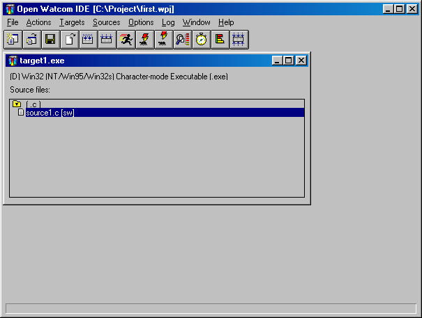
Figure 1. The Open Watcom IDE window displays project and target windows.
The language tools are available on the toolbar and the drop-down menus. For example, on the Sources menu, you
can work with the source that is selected in the target window. Here you can add a new source, remove or rename an
existing source, edit a source, and so on. A similar set of target actions are available in the Targets menu and project
actions are located in the File menu.
A single IDE session displays a project. If the project consists of a number of components, such as two executables
and one library, these appear as target sub-windows on the project window. Each target window displays the files necessary
to construct the target and associates files with a rule describing the construction mechanism based on filename extension.
For example, a filename with the extension ".exe" may associate with the rule for constructing executables,
or a filename with the extension ".lib" may associate with the rule for constructing static libraries.
Different projects can refer to the same target. If they do, either project can manipulate the shared target
and any changes to either project affect the shared target.
The Files the Integrated Development Environment Uses
The Open Watcom Integrated Development Environment creates and manages a project, referencing a number of targets.
The IDE uses filename extensions to represent projects and targets. The extension ".wpj" represents projects
and the extension ".tgt" represents targets. The IDE compiles and links the target in the target directory.
The project file (.wpj) contains the names of all of the target files related to the project, including housekeeping
information about the project and the current IDE session.
Each target file (.tgt) describes one target and includes the name and type of the target executable, a reference
to a rule describing how to build the target, and a list of relevant switches the rule uses. In addition, target files
also contain the names of all of the source files used to construct the target program, references to similar rules for compiling
them, and relevant switches.
In constructing targets, the Integrated Development Environment references a list of rules defined in a configuration
file, called ide.cfg. Each rule defines a command line used to do the construction and a list of actions you
can perform on the target program (such as make, run, or debug) or on the files in the item list (such as make or edit).
Additionally, rules refer to tools.
Tools define which command line switches you can use in the Open Watcom Integrated Development Environment.
Using the Open Watcom Integrated Development Environment
This section discusses the following topics:
- Starting the Open Watcom Integrated Development Environment
- Quitting the Open Watcom Integrated Development Environment
- The IDE Menu Bar
- The IDE Status Bar
- The IDE Toolbar
Starting the Open Watcom Integrated Development Environment
To start the Integrated Development Environment, double-click on the IDE icon. This opens the Open Watcom IDE Project
window.
Quitting the Open Watcom Integrated Development Environment
To exit the Integrated Development Environment, choose Exit from the File menu of the Open Watcom IDE Project window or
double-click on the system menu box on the same window.
The IDE's menu bar consists of the following eight menus:
- File
- Open new or existing projects, close and save projects, exit the IDE, and show or hide the toolbar and status bar
Actions
- Make all targets, run applications, and invoke other GUI Tools
Targets
- Work with targets, including setting switches and creating, removing, and renaming targets
Sources
- Work with sources, including setting switches and creating, removing, and renaming sources
Options
- Set switches for creating targets and sources
Log
- Perform functions relating to the IDE Log window
Window
- Refresh the contents of the IDE windows and view the targets currently available on the IDE window
Help
- Access on-line help information
The IDE Status Bar
The Status Bar appears along the bottom of the Open Watcom IDE Project window. This bar displays hint text for the
toolbar button and menu option over which your cursor is positioned. Status messages, such as Saving, Adding, and Executing
Log, appear in this bar so you are aware of what action the IDE is performing. A check mark beside the Show Status
Bar menu option in the File menu indicates that this feature is enabled. To disable this feature, choose the option
again from the File menu and the status bar disappears from the window.
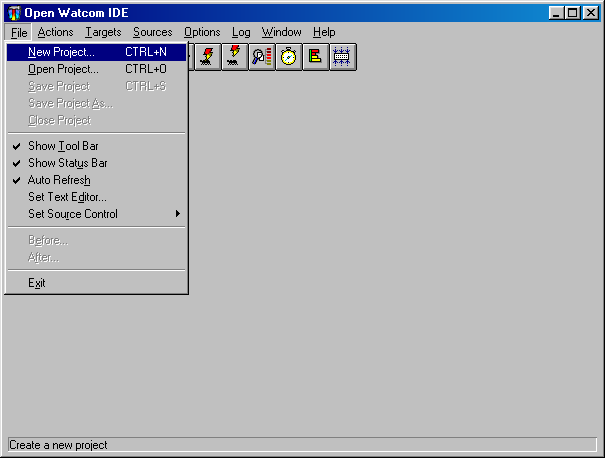
Figure 2. The IDE Status Bar can be toggled from the File menu.
In the Open Watcom IDE Project window, the toolbar appears below the menu bar when the Show Tool Bar option in the File
menu is activated (default). A check mark beside the menu option indicates that it is enabled. To disable this
feature, choose the option again from the File menu and the toolbar disappears.

Figure 3. You can access thirteen IDE functions from the toolbar.
The following explains the function each icon performs, as well as the equivalent function on the menu bar.
- Create
 Create a new project. This is equivalent to the option New Project in the File menu.
Create a new project. This is equivalent to the option New Project in the File menu.
Open
 Open an existing project. This is equivalent to the option Open Project in the File menu.
Open an existing project. This is equivalent to the option Open Project in the File menu.
Save
- Save the current project. This is equivalent to the option Save Project in the File menu.
Edit
- Edit the selected source file. This is equivalent to the option Edit Text in the Sources menu.
Make Source
 Make the selected source file. This is equivalent to the option Make in the Sources menu.
Make the selected source file. This is equivalent to the option Make in the Sources menu.
Make Target
 Make the current target. This is equivalent to the option Make in the Targets menu.
Make the current target. This is equivalent to the option Make in the Targets menu.
Run
 Run the current target. This is equivalent to the option Run in the Targets menu.
Run the current target. This is equivalent to the option Run in the Targets menu.
Debug
 Debug the current target. This is equivalent to the option Debug in the Targets menu.
Debug the current target. This is equivalent to the option Debug in the Targets menu.
Remote Debug
 Debug the current target on a remote machine. This is equivalent to the option Remote Debug
in the Targets menu.
Debug the current target on a remote machine. This is equivalent to the option Remote Debug
in the Targets menu.
Browse
 Browse the current target. This is equivalent to the option Browse in the Targets menu.
Currently, browsing is supported by the Open Watcom C/C++ compilers only (Open Watcom FORTRAN 77 does not support browsing).
Browse the current target. This is equivalent to the option Browse in the Targets menu.
Currently, browsing is supported by the Open Watcom C/C++ compilers only (Open Watcom FORTRAN 77 does not support browsing).
Sample
- Run and sample the current target. This is equivalent to the option Sample in the Targets menu.
Profile
 Profile the current target. This is equivalent to the option Profile in the Targets menu.
Profile the current target. This is equivalent to the option Profile in the Targets menu.
Make All
- Make all targets in the project. This is equivalent to the option Make All in the Actions menu.
Getting Started with a Short Tutorial
Perhaps the easiest way to understand how the Open Watcom Integrated Development Environment manages an entire project's
files and tools, is to work through a brief example. In this walk-through, you create and execute a simple C program
using the IDE. FORTRAN developers can follow along substituting FORTRAN code and file names where appropriate.
The session will help you understand the basic concepts of the IDE and the steps involved in project development.
The illustrations shown in this section are taken from the Windows environment. The OS/2 environment is very
similar with some minor differences. For example, in the OS/2 environment the IDE uses the OS/2 Editor rather than
Open Watcom's Windows Editor. Although this tutorial builds a Win32 executable, you can choose to build a Win16 or
OS/2 PM executable. The procedures to follow are not that much different. When the time comes to select the type
of target, simply choose an environment that you can run on your machine so that you can run your application to make sure
it works.
A Simple Executable
- (1)
- Double-click on the IDE icon in the Open Watcom Tools window.
The Open Watcom IDE Project window appears.
(2)
- Choose New Project from the File menu.
The Enter Project Filename dialog appears. The default project name is noname.wpj.
(3)
- Enter the filename \project\first in the File Name field and click on OK.
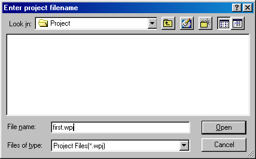
Figure 4. Enter the filename in the Enter Project Filename dialog.
This is the name of the project you are creating. If you enter a directory that doesn't exist (in this case,
\project), the IDE reveals a message box asking if you want to create the specified directory. Click on OK to
create the specified directory and project file.
- Note:
- The IDE looks for existing projects with the new name. If a project with the specified name already exists, the IDE
will prompt you rather than simply overwriting the existing project.
The project name appears in the title bar of the Open Watcom IDE Project window. Note that the IDE added the extension
".wpj" to the project name. The New Target dialog appears on the screen where you define a target for the
new project.
(4)
- Enter the desired target name in the Target Name field (we suggest target1). Next, select the appropriate
Target Environment (we suggest "Win32") and Image Type (we suggest "Character-mode Executable").
Click on OK when completed.

Figure 5. Select target name, target environment and image type
The New Target dialog closes and the IDE creates a target window entitled target1.exe for the new target.
Note that the IDE appends the appropriate extension to the target name for you once you click on OK. You can
now add sources to the target.
(5)
- Choose New Source from the Sources menu.
The Add File(s) dialog appears where you specify the sources you want to add to the target. Source names must be
filenames with extensions; pathnames are not required.
For the OS/2 IDE, you can add multiple source files to the target at one time by inserting a space between each filename
you enter. You can also use the file browser to add files by clicking on the Browse... button.
For all other systems, you can enter the names of the source files (with extensions) in the File Name field or you
can use the file browser to select files. The type of files displayed in file list window can be controlled by modifying
the List Files of Type field. Once you have typed a name in the File Name field or selected a name from the file list,
you can add it to the list of source files to be included by clicking the Add button. All files in the file list can
be added by clicking the Add All button. Individual names can be removed from the "add" list by selecting
them and clicking the Remove button.
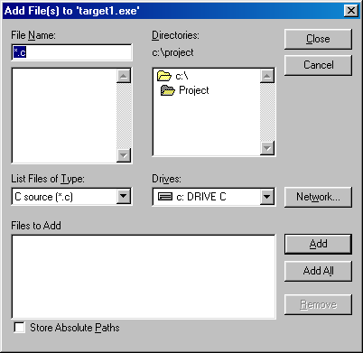
Figure 6. Select source file names in the Add File(s) dialog
(6)
- Enter the following source file names.
source1.c (or source1.for)
source2.c (or source2.for)
source3.rc
For the OS/2 IDE, enter all the names into the field separating each name by a space. Click on OK when done.
For all other systems, enter one name at a time into the File Name field, pressing Enter or clicking on Add after
each one has been entered. Click on Close when done.

Figure 7. Enter one or several source files in the Add File(s) dialog.
The IDE adds the new source files to the target window, followed by the characters [n/a]. This indicates
that the source files are not available, meaning that the files do not yet exist. The indicators are:
- [n/a]
- This code appears if the file does not exist.
[r/o]
- This code appears if the file is Read Only.
[sw]
- This code appears if the user has set switches for the specified source file.
The Integrated Development Environment organizes the source files in the target window under headers according to the
filename extension. You can expand and collapse the file groups by clicking on the folder icon.
For this tutorial, we only need one source file, so now we will delete the extra files from the target.
(7)
- Click on the file source2.c (or source2.for) to select it then choose Remove Source from the Sources
menu.
A message box appears asking if you want to remove the selected source. Click on the Yes button to continue.
The IDE removes the selected source file from the target window. Now we can remove source3.rc. To do
this we will perform the function of removing all source files with a common extension.
(8)
- Click on the (.rc) header on the target window then choose Remove Source from the Sources menu.
A message box appears on the screen asking if you want to remove all of the ".rc" files. Click on the
Yes button to continue. The message box closes and the IDE removes the source3.rc file from the target window.
Now you can edit the remaining source file.
(9)
- Highlight the line source1.c (or source1.for) and choose Edit Text from the Sources menu to edit
the selected source file.
The Open Watcom Editor appears. The name of the selected source file, source1.c (or source1.for),
appears in the window. Here you can enter the source code.
Hint: You can also invoke the Open Watcom Editor by double-clicking on the source file that you
want to edit.
In this case, the Open Watcom Editor appears because the selected source file has a ".c" or ".for"
extension. Performing an edit can open different editors, depending on the extension of the selected source file.
(10)
- Enter the following lines of source code.
- Important:
- For the purpose of this session, we ask you to enter ii instead of i in the "print" line. This
will allow you to see how the Integrated Development Environment reacts to errors. You will then be able to correct
the error.
#include <stdio.h>
void main()
{
int i;
for (i=0; i<10; i++)
{
printf( "Value is %d\n", ii );
}
printf("Press Enter...\n");
getchar();
}
FORTRAN programmers can enter the following lines of code.
program main
implicit none
integer i
do i = 0, 9
print *, 'Value is ', ii
enddo
print *, 'Press Enter...'
read *
end
You can now save your work and close the Editor in one of the following two ways: close down the entire editor
or close down only the source file window. For this exercise, close only the source file window as follows.
(11)
- Choose Close from the File menu to close down the current source file window.
In both cases, if changes have been made to the file and not saved, a message prompts you to save the changes before exiting.
The advantage of closing only the Editor window is that the Editor continues to run. If you need to access it
again, you will not need to wait for it to go through the start-up procedures again.
- Important:
- You must save the file. The Open Watcom compilers do not access the source lines in the Editor's buffers.
(12)
- Minimize the Editor window.
or
- Click on the Open Watcom IDE Project window to bring it to the foreground.
(13)
- Choose Refresh from the Window menu.
This action forces the IDE to update the display with the state of all files. It is not necessary to use this function
if you have selected Auto Refresh in the File menu. If Auto Refresh is disabled then it may be necessary to alert the
IDE of the presence of the file on disk.
(14)
- Choose Save Project from the File menu to save your project up to this point.
You are now ready to make and run the target. Making a target is the act of constructing a target file. In
this case, it involves compiling the source file source1.c (or source1.for) using the appropriate Open
Watcom compiler and linking the target executable using the Open Watcom Linker.
(15)
- Highlight the line source1.c and choose C Compiler Switches... from the Source Options item located
under the Sources menu to set compile options.
FORTRAN programmers: Highlight the line source1.for and choose Fortran Compiler Switches...
from the Source Options item located under the Sources menu to set compile options.
The C Compiler Switches dialog appears. If you are using FORTRAN, the Fortran Compiler Switches dialog appears.
(16)
- Click on the ">>" button until the 7. CodeGen Strategy Switches dialog appears.
Click on the "Multithreaded application [-bm]" checkbox button to select this option.
FORTRAN programmers: Click on the ">>" button until the 9. Application Type Switches
dialog appears. Click on the "Multithreaded application [-bm]" checkbox to select this option.
A check-mark appears in the checkbox.
Note: Selecting this option is for demonstration purposes only, it is not required for this simple application.
Click OK to close the dialog.
(17)
- Choose Make from the Targets menu.
The IDE constructs a makefile based on its knowledge of the target and construction rules and then invokes the Open Watcom
Make utility to create target1.exe. The IDE Log window appears at the bottom of the Open Watcom IDE Project
window. Use this window to monitor the procedure. Since you entered ii instead of i, the MAKE fails.
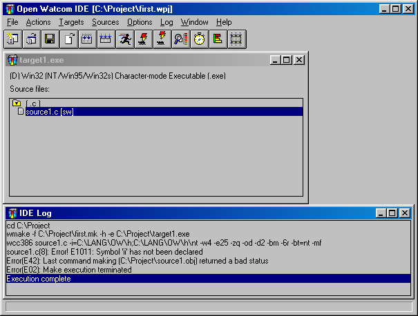
Figure 8. Use the IDE Log window to monitor the make procedure.
(18)
- Highlight the error message in the IDE Log window and choose Help on Message from the Log menu.
Help information regarding the error message appears on the screen.
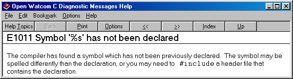
Figure 9. Help for error messages is available
Close the Help window and edit the source file as follows.
(19)
- Highlight the error message in the IDE Log window and choose Edit File from the Log menu.
or
- Double-click on the error message in the IDE Log window.
The Open Watcom Editor opens and the cursor appears at the position of the error. Edit and correct the error and
then save the file again. Minimize the Editor window and bring the IDE window to the foreground.
(20)
- Choose Make from the Targets menu again.
This time, the procedure creates the executable file target1.exe.
(21)
- Choose Run from the Targets menu.
The IDE executes the program target1.exe.

Figure 10. Run from the Targets menu runs the target.
The program you wrote is a character mode application and its output appears in a separate console window. You
are now ready to debug your target program. You probably do not need to debug this simple program with the Open Watcom
Debugger but go through the steps so that you know what to do for more complex programs.
The IDE has several debugging information options which it uses as defaults when it is started. The first thing
to do is check to make sure that your application compiled with the default debugging information activated.
(22)
- Choose Target Options from the Targets menu to activate the Target Options menu.
The option Use Development Switches should appear in grey text with a check mark next to it. Development Switches
automatically include debugging information in the target. If you were to select Use Release Switches, the IDE would
select options useful for a production version of your program. Selecting this option turns the text grey and places
a check mark beside it. The IDE uses the development switches by default.
- Note:
- For the purpose of this session, you should make the target with the development switches on. If this is not the option
selected, select it and remake the target before debugging.
(23)
- Choose Debug from the Targets menu.
The IDE starts the Open Watcom Debugger.
(24)
- Choose Step Over from the Run menu of the Open Watcom Debugger to step through the code. Choose Go from
the Run menu of the Open Watcom Debugger to continue execution to the end of the code. For more information on using
the Open Watcom Debugger, refer to the Open Watcom Debugger User's Guide. The task has completed running
appears when the program has completed execution.
(25)
- Choose Exit from the File menu to terminate the debugging session.
The Open Watcom Debugger closes and you return to the Open Watcom IDE Project window. You can now exit the IDE.
(26)
- Choose Exit from the File menu to exit the IDE.
The IDE prompts you to save the current project if you have not saved it since the last change.
Review of What Happened
In this session, you created a project called first.wpj. This project had one target called target1.exe,
a 32-bit Windows executable (unless you specified another target type). Using the Open Watcom Editor, you entered and
edited the source text in a file called source1.c or source1.for (if you tried the FORTRAN example).
You compiled and linked it into an executable program using the Open Watcom Make utility, a Open Watcom compiler, and the
Open Watcom Linker. You ran it directly and under the control of the Open Watcom Debugger.
When you saved the project, the Open Watcom Integrated Development Environment created the following permanent files:
- first.wpj
- Describes the screen layout and refers to a file called target1.tgt
target1.tgt
- Describes the target executable target1.exe and all switches required to link it. It also describes source1.c
(or source1.for) and the switches required to compile it.
The Open Watcom IDE Project Window
When you first start the Open Watcom Integrated Development Environment, an empty Open Watcom IDE Project window opens.
This window represents the project that is currently open in the IDE. The name of the current project appears
in the title bar of this window.
The first thing you need to do is open a project for the Open Watcom IDE Project window. This can be a new project
you create or an existing project you open.
- Important:
- You can have only one project open at a time in the IDE. If you attempt to open or create a project while one already
exists in the IDE window, a message box appears informing you that the IDE is closing the current project and asks if you
want to save any changes made to that project. Choose Yes, No, or Cancel in this box to continue.
Opening a Project
- To create a new project:
-
(1)
- Choose New Project from the File menu.
The Enter Project Filename dialog appears on the screen where you enter the name of the project you are creating.
(2)
- Enter the desired name in the File Name field and choose the desired directory.
All projects must have the extension ".wpj".

Figure 11. Use the Enter Project Filename dialog to create a new project.
(3)
- Click on OK when completed.
The Enter Project Filename dialog closes and the new project name appears in the title bar of the Open Watcom IDE Project
window. A New Target dialog opens on the screen where you add a target to the new project. Refer to the section
Adding a Target for more information.
- To open an existing project:
-
(1)
- Choose Open Project from the File menu.
The Open dialog appears on the screen where you select the project you want to open.
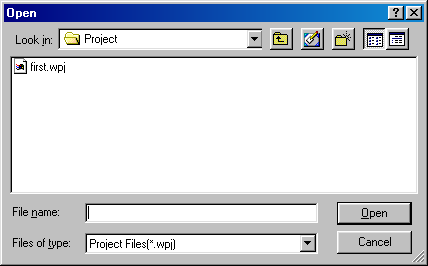
Figure 12. Use the Open dialog to open an existing project.
(2)
- Choose the desired project.
All projects have the extension ".wpj".
(3)
- Click on OK when the desired project appears in the File Name field.
The Open dialog closes and the name of the selected project appears in the title bar of the Open Watcom IDE Project window.
If targets exist for the selected project, windows representing the targets appear in the main window.
Closing a Project
- To close the current project:
-
(1)
- Choose Close Project from the File menu.
The IDE removes all target windows for the current project from the Open Watcom IDE Project window. The project
name disappears from the title bar and the window is empty.
Saving a Project
There are two ways of saving your current project. You can perform a simple save where the project is updated with
any changes made since the last save or you can save the project under a different project name using the Save Project As
function.
Updating the Project
- To perform a simple save on your project:
-
(1)
- Choose Save Project from the File menu.
The IDE updates the project specified in the title bar. The status bar along the bottom of the window indicates
that the save function is being executed.
Saving the Project Under a New Name
- To save the current project using a different name:
-
(1)
- Choose Save Project As from the File menu.
The Save As dialog appears on the screen where you specify the file name by which you want to save the current project.
(2)
- Enter the desired project name in the File Name field.
This is the new name by which you want to save the current project. This can be the name of a new project or an
existing project.
- Important:
- Entering the name of an existing project overwrites the contents of that project with the contents of the current project.
(3)
- Choose the desired directory for the project using the Directories list on the Save As dialog.
(4)
- Click on OK when completed.
The Save As dialog closes and the new project name appears in the title bar of the Open Watcom IDE Project window.
Working with Targets
Once you have created a project, it is a simple matter to add additional targets. You can also change the name of
a target, remove targets, change the target environment, and change the image type. This section discusses the following
topics:
- Adding a Target
- Minimizing a Target
- Removing a Target
- Renaming a Target
- Marking a Target for Remake
- Making Targets
- Running a Target
Adding a Target
You add targets to the current project using the New Target dialog. When you create a new project, this dialog appears
automatically. You have two options when adding targets to a project: you can either enter the name of a new
target or you can choose an existing target, previously created in another project. This section describes both methods
for adding a target.
- To add a new target to the current project:
-
(1)
- Choose New Target from the Targets menu.
The New Target dialog appears on the screen where you enter the details of the target you are adding.
Figure 13. Enter the new target details in the New Target dialog.
(2)
- Enter the target name in the Target Name field.
Enter the entire pathname to ensure the directory is created where you want. Depending on the nature of the target,
it may or may not be able to share the same directory as other pre-existing targets. Generally, if the target shares
one or more of the same source files as other targets in the project, then it must be placed in its own subdirectory.
The object files that are produced for the target may have different attributes than a pre-existing target's object files
(e.g., 16-bit vs 32-bit). This is why the target should be placed in a separate subdirectory.
(3)
- Select the desired Target Environment and Image Type as desired.
(4)
- Click on OK when the Target Name, Target Environment and Image Type fields are correct.
If you specify a new directory in the target pathname, a message box appears asking if you want to create the specified
directory. Choose Yes or No to continue. A window representing the new target appears on the Open Watcom IDE
Project window. The target name appears in the title bar.
The first line in this window describes the target. It specifies the current mode, the target type. The
current mode is represented by either the letter D or R which appears in parentheses in front of the target type. The
letter D indicates that the target is placed in Development mode. The letter R indicates that the target is placed
in Release mode. The rest of the window displays the source files for the target.
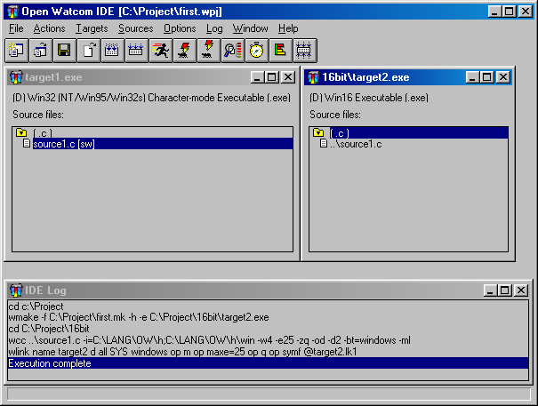
Figure 14. A project may have multiple targets.
- To add an existing target to a current project:
-
(1)
- Choose New Target from the Targets menu.
The New Target dialog appears on the screen.
(2)
- Click on the Browse button.
The Enter Target Filename dialog appears on the screen. This dialog allows you to browse the directories and files
and select the ".tgt" file for the target you want to add.

Figure 15. Choose an existing target from the Pick Target Filename dialog for the current
project.
(3)
- Click on the desired target to select it.
The selected target appears in the File Name field.
(4)
- Click on OK to process the target selection.
The Enter Target Filename dialog closes.
(5)
- Click on OK to close the New Target dialog.
A window representing the new target appears on the Open Watcom IDE Project window. The target name appears in the
title bar.
The first line in this window describes the target. It specifies the current mode and the target type.
The current mode is represented by either the letter D or R which appears in parentheses in front of the target type.
The letter D indicates that the target is placed in development mode. The letter R indicates that the target is placed
in Release mode. The rest of the window displays the source files for the target.
Minimizing a Target
If you are working with a project that has multiple targets, the Open Watcom IDE Project window can become cluttered.
You can tidy your window by minimizing the target windows that you are not currently using.
- To minimize a target window:
-
(1)
- Click on the system box in the upper left-hand corner of the target window you want to close.
A menu appears listing the functions you can perform on the selected window.
(2)
- Choose Minimize from the menu.
The selected target window closes and an icon appears along the bottom of the screen representing that window. The
name of the target appears on or under the icon.
(3)
- Double-click on the icon to open the target window again.
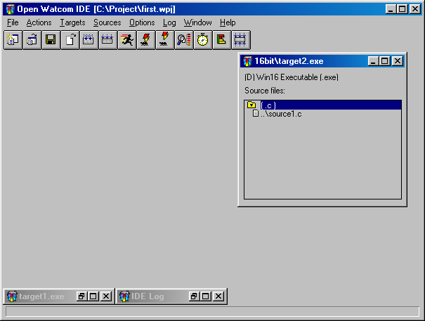
Figure 16. Minimize targets to reduce clutter in the project window.
Removing a Target
The procedure for removing a target from a project is simple. If your project has multiple targets, it is important
to ensure that the target you want to remove is the one selected. Removing a target does not permanently delete the
target, it simply removes it from the current project. If the target is attached to multiple projects, those projects
will not be affected by the removal of the selected target from the current project.
- To remove a target from the current project:
-
(1)
- Click once on the target window you want to remove from the project.
The title bar of the selected target window is highlighted.
(2)
- Choose Remove Target from the Targets menu.
A message box appears on the screen asking if you really want to remove the selected target.
(3)
- Choose OK to continue.
The message box closes and the selected target window disappears from the Open Watcom IDE Project window.
Renaming a Target
When renaming a target, you can either give it a new name or you can give it the name of an existing target. Choosing
an existing target name overwrites the contents of the existing target with the contents of the current target.
- To rename a target:
-
(1)
- Click once on the target window you want to rename.
The title bar of the selected target window is highlighted.
(2)
- Choose Rename Target from the Targets menu.
The Rename Target dialog appears. The Target Name, Target Environment, and Image Type of the selected target appear
in the appropriate fields.
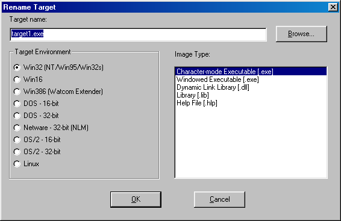
Figure 17. Change a target's name using the Rename Target dialog.
(3)
- Enter the new target name in the Target Name field.
or
- Click on the Browse button and select an existing target name; click on OK when completed.
The selected or entered target name appears in the Target Name field.
(4)
- Verify that the Target Environment and Image Type are correct.
(5)
- Click on OK on the Rename Target window.
The Rename Target dialog closes. The title bar of the selected target window now displays the new target name.
Marking a Target for Remake
Marking a target for remake ensures that the IDE will perform the link the next time you make that target or make all
targets. This function is necessary if you are not using the Autodepend function in the Setup Target submenu under
the Targets menu. By marking a target for remake, you control when and which targets need to be remade.
- To mark a target for remake:
-
(1)
- Click once on the target window you want to mark.
The title bar of the selected target window is highlighted.
(2)
- Choose Mark Target for Remake from the Targets menu.
A message box appears asking if you want to also mark all of the source files of the selected target.
(3)
- Choose Yes or No to continue.
Choosing Yes marks all of the source files for the selected target as well as the target itself. This means that
the next time you do a make, the source files for the selected target will be compiled. Choosing No marks only the
selected target for remake. In both cases, the message box closes and you return to the Open Watcom IDE Project window.
Making Targets
The Make function in the Targets menu creates an executable for the selected target. When you perform this function,
the IDE compiles the source files for the selected target into object files. The object files are then linked together
to create the target file.
There are two make functions available to you for targets: Make and Make All. The Make All function in
the Actions menu tells the IDE to compile and link all of the targets for the current project. This can be a lengthy
process, depending upon the number of targets in your project, so you may choose to only make targets to which changes have
been made. This enables you to see if they can be made successfully.
Performing the Make function opens the IDE Log window which allows you to monitor the progress of the make.
- To make a single target:
-
(1)
- Click once on the target window you want to make to select it.
The title bar of the selected target window is highlighted.
(2)
- Choose Make from the Targets menu.
The IDE Log window opens along the bottom of the Open Watcom IDE Project window. In the log window you can monitor
the make procedure. Execution Complete appears in the IDE Log window when the make is completed on the selected
target. If the make is successful an executable file for the selected target can be found in the directory associated
with the target window.
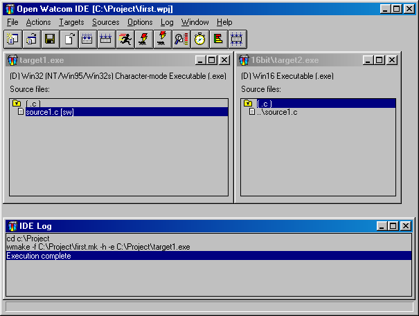
Figure 18. Use the IDE Log window to monitor the make procedure.
- To make all targets for the current project:
-
(1)
- Choose Make All from the Actions Menu.
The IDE Log window opens along the bottom of the Open Watcom IDE Project window. In the log window you can monitor
the make procedure. Execution Complete appears in the IDE Log window when the make is completed on the targets.
If the make is successful an executable file for each target in the project can be found in the directory associated
with the target window.
Viewing the Make Command for a Target
With the IDE you can use the Show Make Command function to display the makefile commands for the selected target.
These are the commands that will be used to compile the selected target when you choose the function Make from the Targets
menu or Make All from the Actions menu.
- To view the make commands for targets:
-
(1)
- Click once on the target window whose makefile commands you want to view.
The title bar of the selected target window is highlighted.
(2)
- Choose Target Options from the Targets menu.
A submenu appears on the screen from the Target Options menu.
(3)
- Choose Show Make Command from the Target Options submenu.
The Target Command dialog appears on the screen. This dialog displays the makefile commands for the selected target.

Figure 19. The Target Command dialog displays the makefile commands for the selected target.
(4)
- Click on OK to close the dialog.
Running a Target
Once you have compiled and linked your target using the Make function, you can run the target to execute the program.
- To run a target:
-
(1)
- Click once on the target window you want to run.
The title bar of the selected target window is highlighted.
(2)
- Choose Run from the Targets menu.
The IDE executes the target program.

Figure 20. Run from the Targets menu runs the target.
Other Run Functions
In the Open Watcom Integrated Development Environment you can run programs other than the targets in your current project
window. Use the run functions in the Actions menu to specify the program you want to run. The Run item runs the
specified program under your host environment. The Run Batch item runs the specified program in the IDE Log window.
- To run other programs in the IDE:
-
(1)
- Choose Run from the Actions menu.
or
- Choose Run Batch from the Actions menu.
A Run or Run Batch dialog appears on the screen. These dialogs are identical.

Figure 21. Use the Run (or Run Batch) dialog to run other programs in the IDE.
(2)
- Enter the name of the program you want to run in the Command field.
(3)
- Click on OK to run the specified program.
The dialog closes and the specified program runs, either under the host environment or in the IDE Log window.
Setting Application Parameters
The Targets and Sources menus and their submenus are divided into sections. Horizontal lines separate each section.
The menu items in the bottom sections of the Targets and Sources menus are actions that you can perform on the selected
target or source file in the current project. If there are switches that can be set for these actions, there are corresponding
menu item entries in the bottom sections of the submenus. Choose Target Options and Source Options from their respective
menus to display the submenus.
Working with Source Files
Once your project has a target you need to add source files to the target. The procedure for adding a source file
to a target is simple. Once you have source files that make up your target, you can also change the name of a source
file and remove source files. This section discusses the following topics:
- Adding Source Files
- Removing Source Files
- Renaming a Source File
- Marking a Source File for Remake
- Making Source Files
- Viewing Included Files
Adding Source Files
You add source files to the selected target (the target whose title bar is currently highlighted) using the Add File(s)
dialog. The current project must have a target in order to use the New Source function. You have two options
when adding source files to a target: you can either enter the name of a new source file or you can choose an existing
source file. When adding existing source files you can use the file browser, type sources one at a time into the Add
File(s) dialog, or use wild cards in the Add File(s) dialog. This section describes all methods for adding source files.
The extension you use with the source file name determines the compiler that the IDE uses to create the target.
For example, the ".c" extension, invokes the Open Watcom C compiler to make the target. You can specify several
different compilers:
- xxx.asm
- The ".asm" extension invokes the Open Watcom Assembler.
xxx.c
- The ".c" extension invokes the Open Watcom C compiler.
xxx.cpp
- The ".cpp" extension invokes the Open Watcom C++ compiler.
xxx.for
- The ".for" extension invokes the Open Watcom FORTRAN 77 compiler.
xxx.hlp
- The ".hlp" extension invokes either the Win16, OS/2, or Win32 compiler.
xxx.rc
- The ".rc" extension invokes the Open Watcom resource compiler.
xxx.res
- The ".res" extension invokes the Open Watcom Resource Editor.
xxx.sqc
- The ".sqc" extension invokes the embedded SQL preprocessor and the Open Watcom C compiler.
xxx.sqp
- The ".sqp" extension invokes the embedded SQL preprocessor and the Open Watcom C++ compiler.
- To add new source files to the selected target:
-
(1)
- Choose New Source from the Sources menu.
The Add File(s) dialog appears where you specify the name(s) of the source file(s) you are adding. Source names
must be filenames with extensions; pathnames are not required.
For the OS/2 IDE, you can add multiple source files to the target at one time by inserting a space between each filename
you enter into the filenames field.
For all other systems, you can enter the names of the source files (with extensions) in the File Name field, one at
a time. Once you have typed a name in the File Name field, you can add it to the list of source files to be included
by clicking the Add button. Individual names can be removed from the "add" list by selecting them and clicking
the Remove button.
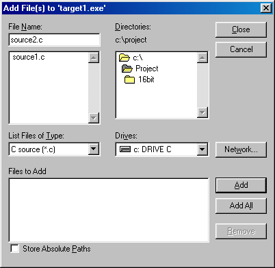
Figure 22. Add one or several source files to a target using the Add File(s) dialog.
(2)
- Enter the source file name(s).
For the OS/2 IDE, enter all the names into the field separating each name by a space. Click on OK when done.
For all other systems, enter one name at a time into the File Name field, pressing Enter or clicking on Add after
each one has been entered. Click on Close when done.
The Add File(s) dialog closes and the selected source file(s) appear in the selected target window on the Open Watcom
IDE Project window.
The source files are grouped by their file extensions and appear in alphabetical order. You can expand and collapse
the list of source files by clicking on the folder icon to the left of the header.
- To add existing source files to the selected target using the file browser:
-
(1)
- Choose New Source from the Sources menu.
The Add File(s) dialog appears on the screen.
For the OS/2 IDE, click on the Browse button and the Pick Filename dialog appears on the screen. This dialog
allows you to browse the directories and files and select the source file(s) you want to add to the current target.
Click on the desired source file to select it. The selected source file(s) appear highlighted in the Pick Filename
dialog. When done browsing files, click on OPEN to add the selected files. The Pick Filename dialog closes.
When done selecting files, click on OK.
For all other systems, you can use the file browser to select files. The type of files displayed in file list
window can be controlled by modifying the List Files of Type field. Once you have selected a name from the file list,
you can add it to the list of source files to be included by clicking the Add button. All files in the file list can
be added by clicking the Add All button. Individual names can be removed from the "add" list by selecting
them and clicking the Remove button. When done, click on Close to add the selected files.
The Add File(s) dialog closes and the selected source file(s) appear in the selected target window on the Open Watcom
IDE Project window.
The source files are grouped by their file extensions and appear in alphabetical order. You can expand and collapse
the list of source files by clicking on the folder icon to the left of the header.
- To add existing source files to the selected target using wild cards:
-
(1)
- Choose New Source from the Sources menu.
The Add File(s) dialog appears on the screen.
For the OS/2 IDE, enter the source file name pattern in the filename(s) field using wild cards. For example,
enter sou*.c to add all source files whose name begins "sou" and have a ".c" extension to the
current target. When done, click on OK to add the selected files.
Hint: Even when entering wild cards, you can add multiple source file groups by separating each
entry with one space (e.g., sou*.c sou*.cpp).
For all other systems, enter the source file name pattern in the File Name field using wild cards. For example,
enter sou*.c to select all source files whose name begins "sou" and have a ".c" extension.
Click on the Add All button to add all the names that match the wild card pattern. Individual names can be removed
from the "add" list by selecting them and clicking the Remove button. When done, click on Close to add the
selected files.
The Add File(s) dialog closes and the selected source file(s) appear in the selected target window on the Open Watcom
IDE Project window.
The source files are grouped by their file extensions and appear in alphabetical order. You can expand and collapse
the list of source files by clicking on the folder icon to the left of the header.
Removing a Source File
The procedure for removing a source file from a project is simple. You can remove one source at a time or you can
remove all source files with a common file extension from the target. Removing a source file does not permanently delete
the it. The IDE simply removes it from the current target. If the removed source file is common to multiple targets,
the other targets will not be affected by the removal of the selected source file.
- To remove one source file from a target:
-
(1)
- Click once on the source file you want to remove from the target.
The selected source file appears highlighted in the target window.
(2)
- Choose Remove Source from the Sources menu.
A message box appears asking if you are sure you want to remove the selected source file.
(3)
- Click on the Yes button.
The message box closes and the IDE removes the selected source file from the target window.
- To remove a group of source files from a target:
-
(1)
- Click once on the header to the right of the folder icon of the source files group you want to remove from the target.
The selected header appears highlighted in the target window.
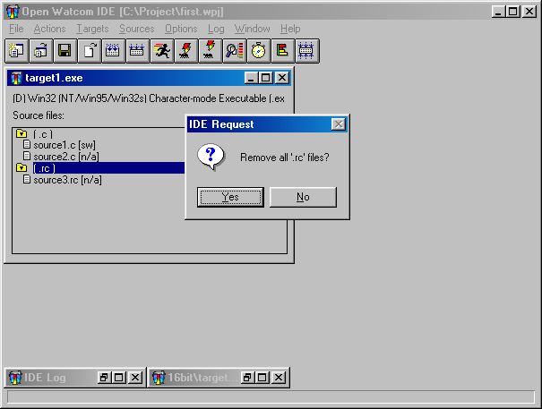
Figure 23. Click on the header to remove all source files with a common file extension.
(2)
- Choose Remove Source from the Sources menu.
A message window appears asking if you want to remove all source files with the selected file extension.
(3)
- Choose OK to continue.
The message box closes and the IDE removes the selected group of source files from the target.
Renaming a Source File
When renaming a source file, you can either give it a new name or you can give it the name of an existing source file.
Choosing an existing source file name overwrites the contents of that source file with the contents of the current
source file.
- To rename a source file:
-
(1)
- Click once on the source file you want to rename.
The selected source file appears highlighted in the target window.
(2)
- Choose Rename Source from the Sources menu.
The Rename File dialog appears where you enter the new name of the selected source file.

Figure 24. Use the Rename File dialog to rename the selected source file.
(3)
- Enter the new source file name in the field.
or
- Click on the Browse button and select an existing source file name; click on OK when completed.
The selected or entered source file name appears in the Rename File dialog.
(4)
- Click on OK on the Rename File dialog.
The Rename File dialog closes. The target window displays the updated source file.
Marking a Source File for Remake
The Mark Source for Remake function in the Sources menu enables you to mark a source file to ensure that the IDE will
recompile it the next time you make the target. This function is useful because although changes may not have been
made to the selected source file, changes may have been made to a source file on which the selected source file depends.
This function is necessary if you are not using the Autodepend function in the Target Options submenu under the Targets
menu. Marking source files for remake gives you control over when and which source files need to be remade.
With the Mark function you can mark an individual source file or a group of source files with a common file extension.
- To mark a source file or a group of source files for remake:
-
(1)
- Click once on the source file you want to mark.
or
- Click once on the header of the group of source files you want to mark.
The selection is highlighted in the target window.
(2)
- Choose Mark Source for Remake from the Sources menu.
If you selected a group of source files to mark, a message box appears asking if you want to also mark all of the source
files of the specified extension.
(3)
- Choose Yes to continue.
The message box disappears and the IDE marks all of the source files in the selected group to be recompiled.
Making Source Files
The Make function in the Sources menu enables you to compile a selected source file into an object file. You can
also perform the Make function on a group of source files with a common file extension.
Performing the Make function opens the IDE Log window which allows you to monitor the progress of the make.
- To make source files:
-
(1)
- Click once on the source file you want to make.
or
- Click once on the header of the group of source files you want to make.
The selected source files are highlighted in the target window.
(2)
- Choose Make from the Sources menu.
The IDE Log window opens along the bottom of the Open Watcom IDE Project window. In the log window you can monitor
the make procedure. Execution Complete appears in the IDE Log window when the make is completed on the selected
source files.
- To make all targets for the current project:
-
(1)
- Choose Make All from the Actions Menu.
The IDE Log window opens along the bottom of the Open Watcom IDE Project window. In the log window you can monitor
the make procedure. Execution Complete appears in the IDE Log window when the make is completed on the targets.
If the make is successful an executable file for each target in the project can be found in the directory associated
with the target window.
Viewing the Make Command for a Source File
With the IDE you can use the Show Make Command function to display the makefile commands for the selected source file.
These are the commands that will be used to compile the selected source file when you choose the function Make from
the Sources menu.
- To view the make commands for source files:
-
(1)
- Click once on the source file whose makefile commands you want to view.
or
- Click once on the header of the group of source files whose makefile commands you want to view.
The selected source file or group header is highlighted.
(2)
- Choose Source Options from the Sources menu.
A submenu appears on the screen from the Source Options menu.
(3)
- Choose Show Make Command from the Source Options submenu.
The Source Command dialog appears on the screen. This dialog displays the makefile commands for the selected source
file or source file header.

Figure 25. The IDE Source Command dialog displays the makefile commands for the selected
source file(s).
(4)
- Click on OK to close the dialog.
Viewing Included Files
The Included Files function in the Sources menu enables you to select a source file and view a list of all of the files
included by that source file. This is a list of all files on which the selected source file depends. From this
list you can select included files and edit them.
Because the selected source file depends on the files in this list, it is necessary to remake it if changes are made
to any of the included files. If you are using the Autodepend function, the IDE automatically remakes the source file
if any of the included files are modified.
- To view the list of included files:
-
(1)
- Click on the source file whose list of included files you want to view.
The selected source file is highlighted in the target window.
(2)
- Choose Included Files from the Sources menu.
The Files Included dialog appears on the screen. This dialog lists all source files on which the selected source
files depends.
- To edit a source file from the File Included dialog:
-
(1)
- Click once on the source file in the included files list that you want to edit.
The selected source file is highlighted in the File Included dialog.
(2)
- Click on OK.
or
- Double-click on the selected source file.
The Files Included dialog closes and the IDE invokes the appropriate editor for the selected included file. The
editor appears and you can edit the file. Close the editor when you are finished making the desired changes to return
to the Open Watcom IDE Project window.
Using the IDE Log Window
When you compile a target or source file, the IDE Log window appears along the bottom of the screen. Once this window
is open it remains on your screen until you close the project. However, to maximize your project window space you can
minimize the IDE Log window when it is not being used.
The Log menu contains three functions that you use in relation to the IDE Log window. This section discusses
the following functions:
- Stopping the Make Function
- Getting Help
- Editing the Source File
- Saving the Log
Stopping the Make Function
Choosing to make a source file, target, or all targets can be a lengthy process. The Stop function in the Log menu
gives you the opportunity to cancel the make function once it has started. This is a useful function in case you decide
that you do not want to continue with the make.
- To stop the make function:
-
(1)
- Choose Stop from the Log menu.
A message box appears asking if it is okay to interrupt the executing process.
(2)
- Click on OK to continue.
The message box closes and the IDE stops the make function. The IDE Log window displays the message Stop Invoked
followed by the message Execution Complete.
Getting Help
The Help on Message function in the Log menu gives you access to on-line help information for the selected error message
in the IDE Log window.
- To reveal help for an error message:
-
(1)
- Click once on the error message in the IDE Log window on which you want information.
The selected error message is highlighted in the IDE Log window.
(2)
- Choose Help on Message from the Log menu.
This opens the Help window. Information on the selected error message appears in this window.
(3)
- Choose Close from the system menu on the Help window to cancel the Help facility.
The Help window closes and you return to the IDE Log window.
Editing the Source File
The Edit File function in the Log menu allows you to select an error message in the IDE Log window and edit the corresponding
source file. This function invokes the appropriate editor for the source file and positions your cursor in the source
code where the error occurred (if the error message contained line and column information).
- To edit a source file:
-
(1)
- Click once on the error message in the IDE Log window that you want to edit.
The selected error message is highlighted in the IDE Log window.
(2)
- Choose Edit File from the Log menu.
or
- Double-click on the selected error message.
Both of these actions open the appropriate editor. If the Open Watcom Editor appears and the error message contained
column and line details, your cursor will be positioned at the error in the source code.
(3)
- Make the required changes to the source file and exit the Editor.
Saving the Log
The Save Log As function in the Log menu allows you to save the contents of the Log window into a file.
- To save the log:
-
(1)
- Choose Save Log As from the Log menu.
The Save Log As dialog appears where you specify the filename by which you want to save the contents of the Log window.
(2)
- Enter the desired log name in the File Name field.
(3)
- Specify the directory to which you want to save the log.
(4)
- Click on the OK button.
The IDE closes the Save Log As dialog and saves the current log as specified
The IDE Switches
There are a number of different switches you can set in the Open Watcom Integrated Development Environment. Switches
enables you to change the way the various tools, such as compilers and linkers, perform their jobs. The switches discussed
in this section are:
- Release and Development Switches
- Target and Source File Switches
- The Autodepend Switch
This section discusses the different switches available in the IDE and how you can use them.
Using Release and Development Switches
There are two sets of switches the IDE can use during the make process: Development and Release switches.
You are able to specify different switches in each set for each target in your project. The letters D and R in the
target window to the left of the target type indicate which set of switches is being used. You choose the switches
you want the IDE to use from the Target Options submenu under the Targets menu. The selected set of switches has a
check mark beside it and appears in grey text.
- To change the selected set of switches for a target:
-
(1)
- Click once on the target whose switches you want to change.
The title bar of the selected target is highlighted.
(2)
- Choose Target Options from the Targets menu.
A submenu appears from the Target Options menu.
(3)
- Choose Use Development Switches or Use Release Switches (whichever is not currently selected) from the submenu, as
desired.
A message box appears asking if you want to mark the selected target and its source files for remake.
(4)
- Choose Yes or No, as desired, to continue.
The message box closes and you return to the Open Watcom IDE window. The next time you perform a make, the IDE will
use the selected set of switches.
Setting Target and Source File Switches
You can set a variety of command-line compiler and linker options in the Open Watcom Integrated Development Environment.
This section shows you how to use the Switches dialogs to choose your options.
You can set the Integrated Development Environment to work in one of two switch modes: Use Development Switches
or Use Release Switches. Either of these two options uses a default set of switch settings, unless you specify otherwise.
You can set switches for an individual target, specific source file type, or individual source file.
Setting Target Switches
- To set switches for a target:
-
(1)
- Click once on the target window for which you want to set switches.
The title bar of the selected window is highlighted.
(2)
- Choose Windows Linking Switches from the Options menu.
or
- Choose Target Options from the Targets menu and then choose Windows Linking Switches from the Target Options submenu.
The Windows Linking Switches dialog appears on the screen. The switches you access from this dialog affect only
the currently selected target. There are four Switches dialogs, each one allowing you to set the following types of
switches:
- Basic
- Import, Export and Library
- Advanced
- Special
- Resource
You can use the forward (>>) and backward (<<) buttons or the drop-down list to choose the set of switches
you want to set.

Figure 26. Use the Windows Linking Switches dialog to set command-line compiler and linker
options.
The first dialog allows you to choose the debugging information you want to see. Remember, if the option Use
Development Switches is enabled in the Target Options submenu of the Targets menu, the Integrated Development Environment
automatically sets switches to include all debugging information. You can change this setting by selecting Use Release
Switches from the Target Options submenu under the Targets menu or choosing specific switches in the Switches dialogs.
Select the CopyRel button in the Switches dialog to copy the set of Release switches to the current dialog.
You can then make further changes, as required. This button is available only if the Development switches are
selected in the Setup Target submenu under the Targets menu.
Select the CopyDev button in the Switches dialog to copy the set of Development switches to the current dialog.
You can then make further changes, as required. This button is available only if the Release switches are selected
in the Target Options submenu under the Targets menu.
Select the Reset button to reset the switches to the default Release or Development switches, as selected in the Target
Options submenu under the Targets menu.
(3)
- Click on OK when you are finished setting switches for the selected target.
The Switches dialog closes and you return to the Open Watcom IDE Project window.
Setting Source File Switches
The Switches function in the Source Options submenu of the Sources menu enables you to set switches for the compiler that
is associated with the selected source file or source file group.
- To set switches for a source file group:
-
(1)
- Click once on the target window that contains the relevant source files.
(2)
- Choose the appropriate item from the Options menu.
For example, to set switches for all ".c" files in the selected target, choose C Compiler Switches from the
Options menu.
The Compiler Switches dialog appears on the screen. The switches you access from this dialog affect only the
currently selected source file or source file group. There are eleven Switches dialogs for Open Watcom C/C++, each
one allowing you to set the following types of switches:
- File Option Switches
- Diagnostics Switches
- Source Switches
- Miscellaneous Switches
- Optimization Switches
- Debugging Switches
- CodeGen Strategy Switches
- Register Usage Switches
- CodeGen Option Switches
- Memory Model and Processor Switches
- C or C++ Compiler Switches
There are ten Switches dialogs for Open Watcom FORTRAN 77.
- File Option Switches
- Compile-time Diagnostic Switches
- Run-time Diagnostic Switches
- Debugging Switches
- Code Generation Strategy Switches
- Code Generation Option Switches
- Register Usage Switches
- Optimization Switches
- Application Type Switches
- Miscellaneous Switches
You can use the forward (>>) and backward (<<) buttons or the drop-down list to choose the set of switches
you want to set.
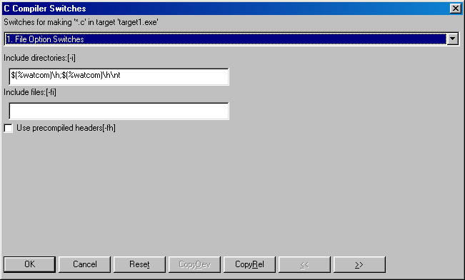
Figure 27. Use the C Compiler Switches dialog to set switches for the compiler associated
with the selected source file(s).
The first of several compiler switch dialogs appears. Of note is the sixth screen, Debugging Switches, which
allows you to choose the debugging information you want to see. Remember, if the option Use Development Switches is
enabled in the Target Options submenu of the Targets menu, the Integrated Development Environment automatically sets switches
to include all debugging information. You can change this setting by selecting Use Release Switches from the Target
Options submenu under the Targets menu or choosing specific switches in the Switches dialogs.
Select the CopyRel button in the Switches dialog to copy the set of Release switches to the current dialog.
You can then make further changes, as required. This button is available only if the Development switches are
selected in the Target Options submenu under the Targets menu.
Select the CopyDev button in the Switches dialog to copy the set of Development switches to the current dialog.
You can then make further changes, as required. This button is available only if the Release switches are selected
in the Target Options submenu under the Targets menu.
Select the Reset button to reset the switches to the default Release or Development switches, as selected in the Target
Options submenu under the Targets menu.
(3)
- Click on OK when you are finished setting switches for the selected source file or group of source files.
The Switches dialog closes and you return to the Open Watcom IDE Project window.
- To set switches for a specific source file:
-
(1)
- Click once on the source file for which you want to set switches.
The selected source file is highlighted.
(2)
- Choose Source Options from the Sources menu.
A submenu for the Source Options menu appears on the screen.
(3)
- Choose the appropriate item from the Source Options submenu.
For example, if the selected source file has a ".c" extension, choose C Compiler Switches from the Options menu.
The Compiler Switches dialog appears on the screen. The switches you access from this dialog affect only the
currently selected source file. There are eleven Switches dialogs for Open Watcom C/C++, each one allowing you to set
the following types of switches:
- File Option Switches
- Diagnostics Switches
- Source Switches
- Miscellaneous Switches
- Optimization Switches
- Debugging Switches
- CodeGen Strategy Switches
- Register Usage Switches
- CodeGen Option Switches
- Memory Model and Processor Switches
- C or C++ Compiler Switches
There are ten Switches dialogs for Open Watcom FORTRAN 77.
- File Option Switches
- Compile-time Diagnostic Switches
- Run-time Diagnostic Switches
- Debugging Switches
- Code Generation Strategy Switches
- Code Generation Option Switches
- Register Usage Switches
- Optimization Switches
- Application Type Switches
- Miscellaneous Switches
You can use the forward (>>) and backward (<<) buttons or the drop-down list to choose the set of switches
you want to set.

Figure 28. Use the C Compiler Switches dialog to set switches for the compiler associated
with the selected source file(s).
The first of several compiler switch dialogs appears. Of note is the sixth screen, Debugging Switches, which
allows you to choose the debugging information you want to see. Remember, if the option Use Development Switches is
enabled in the Target Options submenu of the Targets menu, the Integrated Development Environment automatically sets switches
to include all debugging information. You can change this setting by selecting Use Release Switches from the Target
Options submenu under the Targets menu or choosing specific switches in the Switches dialogs.
Select the CopyRel button in the Switches dialog to copy the set of Release switches to the current dialog.
You can then make further changes, as required. This button is available only if the Development switches are
selected in the Target Options submenu under the Targets menu.
Select the CopyDev button in the Switches dialog to copy the set of Development switches to the current dialog.
You can then make further changes, as required. This button is available only if the Release switches are selected
in the Target Options submenu under the Targets menu.
Select the Reset button to reset the switches to the default Release or Development switches, as selected in the Target
Options submenu under the Targets menu.
(4)
- Click on OK when you are finished setting switches for the selected source file or group of source files.
The Switches dialog closes and you return to the Open Watcom IDE Project window.
Using the Autodepend Switch
The Use Autodepend switch in the Target Options submenu of the Targets menu keeps track of updated source files.
Once a source is modified, the IDE remembers that it needs to be recompiled the next time you do a make. By using the
Use Autodepend switch, the IDE also keeps track of changes made to source files on which other source files depend.
For example, let's say that your current project has a source file, source.cpp, that depends on a header
file, source.hpp. If the Use Autodepend feature is not enabled and changes are made to source.hpp
after source.cpp in your current project has been compiled, the IDE does not recognize that your current source
file is now out of date. This means that the next time you do a make, the IDE will not compile source.cpp.
The Use Autodepend feature tells the IDE to compare the date and time stamps on all of the dependent source files in
addition to the source files in the current project and their corresponding object files, so the IDE recognizes when your
current source file needs to be recompiled.
- To set the Use Autodepend switch:
-
(1)
- Choose Target Options from the Targets menu.
A submenu appears from the Target Options menu. A check mark beside the menu option indicates that it is enabled.
(2)
- Select the Use Autodepend option from the Target Options submenu.
If the option was enabled when you selected it, you have disabled the Use Autodepend feature. If the option had
no check mark when you selected it, you have enabled the Use Autodepend feature.
Configuring the Integrated Development Environment
The Integrated Development Environment can be reconfigured to some extent. You can customize the following features.
- Show or hide the Toolbar
- Show or hide the Status Bar
- Enable or disable automatic updates of file status in the target windows
- Select your own text editor
- Select a source revision control system
The next few sections describe these features.
The Integrated Development Environment Toolbar that appears under the Menu Bar can be removed from or added to the IDE
window.
- To add or remove the toolbar:
-
(1)
- Choose File from the menu bar.
A checkmark beside Show Tool Bar indicates that the toolbar is present on the screen.
(2)
- Select Show Tool Bar.
The Show Tool Bar state will be toggled. If the toolbar was on the screen, it will disappear. If the toolbar
was not on the screen, it will reappear.
Show Status Bar
The Integrated Development Environment Status Bar that appears at the bottom of the IDE window can be removed from or
added to the screen.
- To add or remove the status bar:
-
(1)
- Choose File from the menu bar.
A checkmark beside Show Status Bar indicates that the status bar is present on the screen.
(2)
- Select Show Status Bar.
The Show Status Bar state will be toggled. If the status bar was on the screen, it will disappear. If the
status bar was not on the screen, it will reappear.
Auto Refresh
The IDE will automatically update the target windows with the state of all files when this option is enabled.
- To enable or disable auto refresh:
-
(1)
- Choose File from the menu bar.
A checkmark beside Auto Refresh indicates that auto refresh is enabled.
(2)
- Select Auto Refresh.
The Auto Refresh state will be toggled. When Auto Refresh is disabled, it may be necessary to select Refresh from
the Window menu whenever the target window status becomes out of date.
Selecting Your Own Text Editor
You can use your own favourite text editor from within the Integrated Development Environment.
- To select your own text editor:
-
(1)
- Choose Set Text Editor from the File menu.
The Set Text Editor dialog appears. You can enter the name of the text editor in the first field. You must
also indicate whether the text editor is an executable file or a Dynamic Link Library (DLL). If the editor is an executable
file (rather than a DLL), then you can enter an argument line in the second field. The argument line will be supplied
to the editor whenever it is started by the IDE. The argument line can include any of three different macros which
will be filled in by the IDE. The macros are:
- %f
- The name of the file to be edited.
%r
- The row in the file at which to position the cursor. If the editor is invoked from a diagnostic message which contains
a line number then the row value is extracted from the message; otherwise the row value is 1.
%c
- The column in the file at which to position the cursor. If the editor is invoked from a diagnostic message which contains
a column number then the column value is extracted from the message; otherwise the column value is 1.
For example, if the editor argument line that you specified was:
file='%f' row='%r' col='%c'
and you double click on an error message in the Log window that names the file foobar.c with an error at
line 215 and column 31, then the argument line that is passed to your editor is:
file='foobar.c' row='215' col='31'
This flexibility allows you to specify the name of the file to edit and the row and/or column at which to position
the text cursor. If no row or column is available, then the IDE will supply the value of 1 as a default.
(2)
- Select OK when you wish to confirm the selection of a new editor.
or
- Select Cancel when you wish to cancel the selection of a new editor.
or
- Select Default when you wish to restore the default editor selection and then select OK or Cancel.
Selecting a Source Revision Control System
You can use a source code Revision Control System (RCS) in conjunction with the Integrated Development Environment.
- To select a revision control system
-
(1)
- Choose Set Source Control from the File menu.
A number of options are presented:
- MKS RCS
- Mortice Kern Systems Revision Control System
MKS SI
- Mortice Kern Systems Source Integrity
PVCS
- Intersolv Project Version Control System
Other
- Any other flavour of revision control system (default)
None
- No revision control system
Object Cycle
- Powersoft's Object Cycle
Perforce
- Perforce
When you select a source revision control system, the Checkout Source and Checkin Source items in the Sources menu are
enabled. The Checkout Source and Checkin Source items spawn batch/command files or dialogs corresponding to your selection
of revision control system. The batch/command files are located in the \WATCOM\BINW and \WATCOM\BINP directories.
These files can be modified to suit your environment.
- MKS RCS
-
- MKS_CO
- for checking out/locking files with MKS RCS
MKS_CI
- for checking in/unlocking files with MKS RCS
MKS SI
-
- Checkout Dialog
- a check out dialog will appear on the screen when using MKS SI
Checkin Dialog
- a check in dialog will appear on the screen when using MKS SI
PVCS
-
- PVCS_CO
- for checking out/locking files with Intersolv PVCS
PVCS_CI
- for checking in/unlocking files with Intersolv PVCS
Other
-
- GEN_CO
- a file which you can edit to provide check out (and lock) functionality to any generic revision control system
GEN_CI
- a file which you can edit to provide check in (and unlock) functionality to any generic revision control system
None
- When selected, Checkout Source and Checkin Source are disabled.
When one of the batch files is spawned, a number of arguments are passed to the batch file.
For checking out files, the following arguments are passed:
- "pause" or "nopause" to enable optional screen pause after completion of action
- full source file path specification
- full project file path specification (.wpj file)
- full target file path specification (.tgt file)
For checking in files, the following arguments are passed:
- full source file path specification
- full message file path specification (this file contains the textual message that you enter when checking in a file)
- full project file path specification (.wpj file)
- full target file path specification (.tgt file)
Executing Special Commands
Sometimes you may find it necessary to execute commands before and/or after performing a make. The Open Watcom Integrated
Development Environment provides Before and After commands in the File and Targets menus. These commands enable you
to perform actions immediately before or after making either the selected target or all targets for the current project.
- To set Before or After directives:
-
(1)
- Click once on the target for which you want to set a before or after directive.
The title bar of the selected target is highlighted.
(2)
- Choose Target Options from the Targets menu.
A submenu appears from the Target Options menu.
(3)
- Choose Execute Before or Execute After from the Target Options submenu.
A Target Before or Target After dialog appears on your screen.
- Note:
- If you want to set before or after directives to be executed when you make all targets, select the before and after commands
from the File menu.
(4)
- Enter the command you want to execute before or after the selected target is made.

Figure 29. Enter execute commands in the Target Before or Target After dialogs.
(5)
- Click on OK to continue.
The IDE stores the information you entered and closes the dialog. When you next perform a make on the selected target,
the IDE will execute the before or after directive you entered.
Adding Resources to a Target
You may want to include resources in your target executable. There are two ways of doing this in the IDE:
indirectly and directly. The act of adding resources to a target can only be done for targets that support resources,
such as Windows or OS/2 PM.
- To add a resource to a target using the indirect method:
-
(1)
- Create a new source file with the extension ".rc".
(2)
- Click once on the new source file to select it.
(3)
- Choose Edit Text from the Sources menu to invoke the Open Watcom Editor.
The editor opens on your screen with an empty window. You can now add the resource file text.
(4)
- Enter the resource statements in the editor.
(5)
- Save your work and close the editor when you are finished.
You return to the Open Watcom IDE Project window. You can now compile the new source file.
(6)
- Click once on the new source file to select it.
The selected source file is highlighted in the target window.
(7)
- Choose Make from the Sources menu to compile the new source file.
The IDE compiles the selected source file. To do this, the IDE invokes the Resource Compiler which creates a ".res"
file. The ".res" file will be automatically included in the target when it is linked.
When you create the resource file directly, the source file contains the same information but it is stored in a different
format.
- To add a resource to a target using the direct method:
-
(1)
- Create a new source file with the extension ".res".
(2)
- Click once on the new source file to select it.
(3)
- Choose Edit Resources from the Sources menu to invoke the Open Watcom Resource Editor.
The editor opens on your screen with an empty window. You can now create the resources.
(4)
- Create the resources.
(5)
- Save your work and close the editor when you are finished.
You return to the Open Watcom IDE Project window. You can now compile the new source file.
(6)
- Click once on the new source file to select it.
The selected source file is highlighted in the target window.
(7)
- Choose Make from the Sources menu to compile the new source file.
The IDE compiles the selected source file. The IDE does not need to invoke the Resource Compiler to create a ".res"
file because you created the ".res" file directly using the Resource Editor. The ".res" file will
be automatically included in the target when it is linked.
Including Libraries in a Target
You use the same procedure to include static and DLL libraries in your target as you use to add any source file to a target.
The IDE includes the libraries when the target is linked.
- To create static and DLL libraries:
-
(1)
- Create a new target entering the library name in the Target Name field and choosing the appropriate image type.
Clicking on OK on the New Target dialog closes the dialog and creates a new target with the specified name in the title
bar.
(2)
- Add the desired source files, new or existing, to the library you have created.
- Note:
- If you want one of your other targets to use that library, you must enter the library as a source file for that target.
When you enter the library as a source file you must give it the extension ".lib", regardless of whether the library
is a static or DLL library. For example, if your library is entitled Target A and you want your existing Target B to
use that library, add Target A as a source file on Target B with the extension ".lib".
Targets and Image Types Supported by the IDE
The IDE supports the creation of a wide variety of targets. The following sections summarize the choices available.
Win32 Targets
- Character-mode Executable [.exe]
-
The target is a non-GUI Win32 application.
Windowed Executable [.exe]
-
The target is a GUI Win32 application.
Dynamic Link Library [.dll]
-
The target is a Win32 DLL.
Library [.lib]
-
The target is a Win32 library.
Help File [.hlp]
-
The target is a help file.
Win16 Targets
- Executable [.exe]
-
The target is a 16-bit Windows application.
Dynamic Link Library [.dll]
-
The target is a 16-bit Windows DLL.
Library [.lib]
-
The target is a 16-bit Windows library.
Help File [.hlp]
-
The target is a help file.
Win386 (Watcom Extender) Targets
- Executable [.exe]
-
The target is a 32-bit Open Watcom Windows extender application.
Dynamic Link Library [.dll]
-
The target is a 32-bit Open Watcom Windows extender DLL.
Library [.lib]
-
The target is a 32-bit Open Watcom Windows extender library.
Help File [.hlp]
-
The target is a help file.
DOS - 16-bit Targets
- Executable [.exe]
-
The target is a 16-bit DOS .exe file.
.COM Executable [.com]
-
The target is a 16-bit DOS .com file.
Library [.lib]
-
The target is a 16-bit DOS .lib file.
DOS - 32-bit Targets
- CauseWay Executable [.exe]
-
The target is a 32-bit CauseWay .exe file.
CauseWay DLL (register based) [.dll]
-
The target is a 32-bit CauseWay dll using register-based calling conventions.
CauseWay DLL (stack based) [.dll]
-
The target is a 32-bit CauseWay dll using stack-based calling conventions.
DOS4GW Executable [.exe]
-
The target is a 32-bit DOS/4GW .exe file.
PMODW/W Executable [.exe]
-
The target is a 32-bit PMODE/W .exe file.
DOS32/A Executable [.exe]
-
The target is a 32-bit DOS32/A .exe file.
Pharlap Executable [.exp]
-
The target is a 32-bit PharLap "RUN386" .exe file.
Pharlap TNT Executable [.exe]
-
The target is a 32-bit PharLap TNT .exe file.
Flashtek Executable [.exe]
-
The target is a 32-bit FlashTek .exe file using register-based calling conventions.
Flashtek -- Stack based [.exe]
-
The target is a 32-bit FlashTek .exe file using stack-based calling conventions.
Library [.lib]
-
The target is a 32-bit DOS .lib file.
OS/2 - 16-bit Targets
- Executable [.exe]
-
The target is a 16-bit OS/2 console application.
PM Executable [.exe]
-
The target is a 16-bit OS/2 Presentation Manager application.
Fullscreen Executable [.exe]
-
The target is a 16-bit OS/2 Fullscreen application.
Dynamic Link Library [.dll]
-
The target is a 16-bit OS/2 DLL.
Library [.lib]
-
The target is a 16-bit OS/2 library file.
Help File [.hlp]
-
The target is an OS/2 help file (HLP format).
INF File [.inf]
-
The target is an OS/2 help file (INF format).
OS/2 - 32-bit Targets
- Executable [.exe]
-
The target is a 32-bit OS/2 console application.
PM Executable [.exe]
-
The target is a 32-bit OS/2 Presentation Manager application.
Fullscreen Executable [.exe]
-
The target is a 32-bit OS/2 Fullscreen application.
Virtual Device [.exe]
-
The target is a 32-bit OS/2 Virtual Device Driver application.
Dynamic Link Library [.dll]
-
The target is a 32-bit OS/2 DLL.
Library [.lib]
-
The target is a 32-bit OS/2 library file.
Help File [.hlp]
-
The target is an OS/2 help file (HLP format).
INF File [.inf]
-
The target is an OS/2 help file (INF format).
Linux Targets
- Executable [.exe]
-
The target is a Linux application.
Shared Library [.dll]
-
Shared libraries are not yet supported.
Library [.lib]
-
The target is a Linux static library file.
Invoking Other Applications from the IDE
When using the Open Watcom Integrated Development Environment, there are several other applications you may want to use.
To save you the frustration of having to constantly exit the IDE and start up a new application, we have made it possible
to invoke other applications from within the Integrated Development Environment. Following are the applications you
can invoke from the IDE:
- Browser
- Open Watcom Debugger
- Open Watcom Execution Sampler
- Open Watcom Execution Profiler
- Open Watcom Disassembler
- Open Watcom Editor (text editor)
- Open Watcom Resource Editor
- Open Watcom Zoom
- Open Watcom Heap Walker
- Spy
- DDE Spy
You invoke these applications by making a selection from the toolbar or various menus in the IDE. The Actions menu
contains some of the applications. You can find others in the Targets and Sources menus. The menu options that
appear vary, depending on the contents of the current project. The applications are available in the menu items only
when appropriate. For example, if the currently selected target has no source files, no applications appear in the
Sources menu.
Hint: An alternate way to view the contents of the Targets and Sources menu is to click the right
mouse button while your cursor is positioned in the project window. If your cursor is positioned over a target, the
Targets menu appears. If your cursor is positioned over a source file, the Sources menu appears.
Refer to the appropriate sections in this manual for detailed information on using the various applications.
Invoking DOS Applications from the IDE under OS/2
There are occasions where you may wish to change the default DOS or WIN-OS/2 settings when running a DOS/Windows application
from the IDE. The mechanism which we provide is through the use of a special IDE_DOS_SETTINGS environment variable.
For example, to set the DPMI memory limit to 16 and to enable DOS BREAK, you can set the environment variable as follows:
Example:
set ide_dos_settings=dpmi_memory_limit#16;dos_break#1
Due to the command processor limitations, the "#" character is used in place of the "=".
The above command is equivalent to configuring a DOS session with DOS settings as follows:
Variable Value
DPMI_MEMORY_LIMIT 16
DOS_BREAK ON
The batch utility IDE2MAKE generates .mk and .mk1 makefiles for use with Open Watcom Make from the IDE .wpj and .tgt files.
See IDE2MAKE in Open Watcom Tools User's Guide.
The Open Watcom Browser
Imagine being assigned to a project with thousands of lines of C++ source code. Learning the relationship between
the objects of such an application can be very difficult. The Browser was developed to solve this very problem - to
help developers better understand the source code they are working with. Information such as the class inheritance
hierarchy and the call tree for an application can be studied while using the Browser. Once you have located a symbol,
you can quickly view the source file that contains its definition or list all the files that reference it. Viewing
these relationships helps you understand how the program works.
This chapter describes the many tasks you can perform with the Browser, including creating and opening a Browser database
file, configuring the Browser session, and viewing the list of all symbols in your program, the class inheritance hierarchy,
and call structure.
Using the Browser
This section discusses the following topics:
- Starting the Browser
- Starting the Browser through the Open Watcom Integrated Development Environment
- Quitting the Browser
- The Browser Menu Bar
Starting the Browser
To start the Browser, double click on the Browser icon. This opens the Browser window. The caption bar of
this window displays the current option file and Browser database file. The message no browser file appears
on this line if a database file is not currently selected.
The Browser is an integrated tool that you can open from the IDE so that you can browse the source code of the project
you are working on. Refer to the IDE guide for further information on the Integrated Development Environment.
Quitting the Browser
To exit the Browser, choose Exit from the File menu of the Browser window. If you made changes to
the options during the Browser session, a message box appears prompting you to save the changes.
Choose No in the message box to close the Browser session without saving. Any options changed within
the session are lost.
Choose Yes in the message box to save the current options to the current option file, if one exists, and exit
the Browser session. If no option file exists, a Save As dialog appears that allows you to specify the option
file to which you want to save the new options.
-
- Select Cancel to return to the main Browser window without saving the options.
or
- Select OK to close the dialog and exit the Browser session.
The Browser's menu bar consists of the following eight menus:
- File
- Create, open, and configure Browser files; save and load options
View
- Choose a global view for the current database file
Detail
- View detailed information for a symbol
Tree
- Choose the nodes to display for a tree view
Locate
- Find symbols within the current global view
Options
- Configure the Browser session
Windows
- Select from the list of Browser windows currently open
Help
- Access on-line help information
Browser Files
To browse your source code, you must first create a Browser module file for each source file that you wish to browse.
Currently, browsing is supported by the Open Watcom C/C++ compilers only (Open Watcom FORTRAN 77 does not support browsing).
To create a Browser module file, specify the "db" option when you compile the source file. If you are
using the Open Watcom Integrated Development Environment, select Emit Browser Information from the Debugging Switches
panel of the Compiler Switches dialog. The Browser module file will have the same name as the source file and
an extension of ".MBR".
Once the Browser module files have been created, these files are merged and a Browser database file is created.
This process eliminates redundant information such as duplicate definitions that occur when a header file is included by
many source files. Browser database files have the extension ".DBR".
The Browser allows you to configure your session and saves this configuration to an options file. Options files
have the extension ".OBR". The file name setup.obr is the default name of the options file.
The default options file is automatically loaded by the Browser when the Browser is started.
Creating a Browser Database File within the Browser
- (1)
- Choose New from the File menu.
This opens the New Browser File dialog where you enter the name of the Browser database file you are creating.

Figure 30. Use the New Browser File dialog to create a new Browser database file.
(2)
- Type the name and path of the new Browser database file.
or
- Click on the Files button to open a second dialog that allows you to browse the directory structure for an
existing Browser database file. Select an existing file and change its name. If you do not change its name, a
message box appears when you press OK asking if you want to overwrite the existing file.
(3)
- Click on OK.
This opens a Module window that will eventually contain a list of the module files that will make up the database
file.
(4)
- Click on the Add button in the Module window.
This opens the Select Module File(s) dialog where you choose the module files to add to the database file.
(5)
- Select the module files to add to the database file and click on OK.
or
- Double click on the desired module file.
This closes the Select Module File(s) dialog and adds the selected module file to the Browser file component list.
Each module file on the components list has a check box. When added, this check box is marked with an X, indicating
that the module file is enabled.
(6)
- Continue with steps 4 and 5 until you have added all desired module files to the component list.
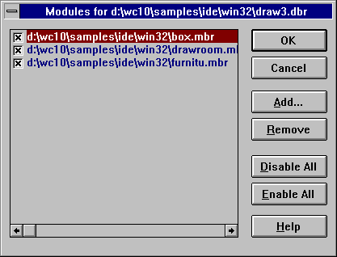
Figure 31. The Modules dialog displays the selected module files.
(7)
- Click on OK on the Module window.
This closes the Module window and creates the database file.
Creating a Browser Database File from the Command Line
It is also possible to create the Browser database file from the command line. This allows you to make Browser database
file creation part of your standard build procedure. When you do this, the batch build procedure will automatically
update your database file. Updating the Browser database file occurs only if changes have been made to a module file
within the database file.
A separate utility, called the merger, is used to create the database file. The name of the merger program is
wbrg.exe. Its command line consists of the name of the database file and a list of the module files (.MBR files)
to be merged. The name of the database file must be preceded by a database command. The default extension
given to the database file is ".DBR". The list of module files must be preceded by a file command.
The module file names must be separated by commas or enclosed by curly braces and separated by spaces. The list
of module file names can contain wild cards. The following are examples of valid merger commands. In each case,
the module files m1.mbr and m2.mbr will be processed and the database file db.dbr will be created.
wbrg database db file m1, m2
wbrg database db file { m1 m2 }
wbrg file m1, m2 database db
wbrg file { m1 m2 } database db
It is also possible to specify a command file that contains merger commands. Command files have the extension
".CBR". Consider a command file, called merge.cbr, containing the following merger commands.
database db
file m1
file m2
The following example will achieve the same results as the previous example.
wbrg @merge
If you want to suppress the listing of file names that the merger produces as it is working, you can include the "quiet"
option on the command line or in the command file.
Opening an Existing Browser Database File
- (1)
- Choose Open from the File menu.
This opens the Open Browser Database File dialog where you select the database file you want to open.
(2)
- Select a database file to open and click on OK.
or
- Double click on the desired database file.
This closes the Open Browser Database File dialog.
- Note:
- You can have only one database file open at a time. If you open a second database file, the Browser discards the first
and displays information for the second.
Working with Browser Module Files
Once a Browser database file is loaded, you might want to edit the list of modules originally used to create the database
file. Editing the list of modules allows you to temporarily remove modules from the database or add modules to the
database. For example, you may decide that you only want to browse a particular module or set of modules or you may
have forgotten a module when the database was originally created.
The Modules menu item in the File menu allows you to view the list of module files that make up the
current database file. From this list you can perform the following functions on the module files:
- Add
- Remove
- Disable
- Enable

Figure 32. On the Modules dialog, you can add, remove, disable, and enable module files.
Adding a Module File
- (1)
- Choose Modules from the File menu.
This opens the Modules dialog for the current database file. This dialog lists all module files that make
up the database file. Each module file has a check box. An X in this box indicates that the module file is enabled.
The Browser browses only the enabled module files.
(2)
- Click on the Add button in the Modules dialog.
This opens the Select Module File(s) dialog where you choose the module files to add to the current Browser file.
(3)
- Select the module files to add to the Browser file and click on OK. Select multiple module files by holding
the Shift key while you click on the desired files.
Clicking on OK closes the Select Module File(s) dialog and adds the selected module file to the database file.
Each module file in the module list has a check box. When added, this check box is marked with an X, indicating
that the module file is enabled.
(4)
- Continue with steps 2 and 3 until you have added all desired module files to the component list.
(5)
- Click on OK in the Module dialog.
This closes the Modules dialog and updates the database file.
Removing a Module File
- (1)
- Choose Modules from the File menu.
This opens the Modules dialog for the current database file. This dialog lists all module files that make
up the database file. Each module file has a check box. An X in this box indicates that the module file is enabled.
The Browser browses only the enabled module files.
(2)
- Click once on the module file you want to remove from the database file.
This highlights the selected module file.
(3)
- Click on the Remove button in the Modules dialog.
This removes the selected module file from the list.
(4)
- Click on OK in the Modules dialog.
This closes the Modules dialog and updates the database file.
Disabling a Module File
- (1)
- Choose Modules from the File menu.
This opens the Modules dialog for the current database file. This dialog lists all module files that make
up the database file. Each module file has a check box. An X in this box indicates that the module file is enabled.
The Browser browses only the enabled module files.
(2)
- Click in the check box of the module file you want to disable. Alternatively, use the up and down arrow keys
to select the module file you wish to disable. Press the space bar to disable the currently selected module file.
This removes the X. The blank box indicates that the module file is disabled and will not be browsed.
(3)
- Repeat step 2 until you have disabled all desired module files.
(4)
- Click on OK on the Modules dialog.
This closes the Modules dialog and updates the database file.
To disable all of the module files in the Modules dialog, click on the Disable All button. Click on
OK to update the database file and close the Modules dialog.
Enabling a Module File
- (1)
- Choose Modules from the File menu.
This opens the Modules dialog for the current database file. This dialog lists all module files that make
up the database file. Each module file has a check box. An X in this box indicates that the module file is enabled.
The Browser browses only the enabled module files.
(2)
- Click in the check box of the module file you want to enable. Alternatively, use the up and down arrow keys
to select the module file you wish to enable. Press the space bar to enable the currently selected module file.
This places an X in the box indicating that the module file is enabled and will be browsed.
(3)
- Repeat step 2 until you have enabled all desired module files.
(4)
- Click on OK on the Module dialog.
This closes the Modules dialog and updates the database file.
To enable all of the module files on the Modules window, click on the Enable All button. Click on
OK to update the database file and close the Modules window.
Global Views
The menu items under the View menu let you display a global view of your program. A global view is one that displays
relationships between all symbols in your program. The following are global views.
- List
- Displays a list of all symbols in your program
Inheritance
- Displays the class inheritance graph for your program
Call
- Displays the call graph for your program
Once a global view has been displayed, you can view detailed information for the symbols in the global view. Refer
to the section entitled Viewing Detail Information for a discussion on displaying
detail information.
It is possible to specify a query that restricts the symbols displayed in global views. See the section entitled
Global Symbol Queries for more information.
The List View
Using the Browser to view the symbols in your program is much faster than searching through your source code for symbol
information. From the symbols list you can quickly access detailed information on a symbol that tells you where the
symbol is used and where it is defined.
To view a list of all symbols in the current Browser database file, choose List from the View menu.
This displays a window which can list all symbols in your program. The window has a vertical scroll bar that
allows you to scroll through the list of symbols in your program. Since your program may contain a very large number
of symbols, the Browser does not load all the symbols in your program from the database. Instead, only the number of
symbols that can be displayed in the window are loaded. As far as the Browser is concerned, this list is infinite.
For this reason, the scroll thumb on the vertical scroll bar is positioned in the middle of the vertical scroll bar
and cannot be moved. Click below the vertical scroll thumb to view the next page of symbols and above the vertical
scroll thumb to view the previous page of symbols.
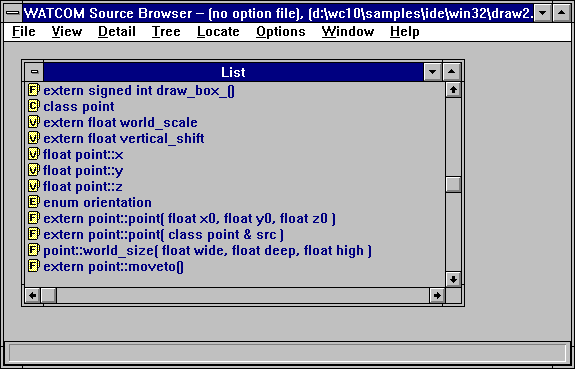
Figure 33. The List window displays all symbols in the current browser database file.
Each symbol has a icon to its left. A letter marking each icon indicates the symbol type in the source code
as follows:
- F
- Function
C
- Class
T
- Typedef
V
- Variable
E
- Enum
There are several ways to display the detail view of symbols. When you reveal the detail view, the file folder icon
changes to an open file folder. To close the detail view dialog, click on the file folder. This changes the icon
back to a closed folder and closes the dialog. To reveal the detail view of a symbol you can perform any of the following
actions:
- The file folder icons are hot spots that display the detail view of the selected symbol. To activate the hot spot,
click once on the symbol name to select it and press ENTER to reveal the detail view.
- Click once on the file folder to reveal the detail view for that symbol.
- Click once on the symbol name to select it and choose Detail from the Detail menu.
- Double click on the symbol name.
The Class Inheritance View
Selecting Inheritance from the View menu displays the inheritance hierarchy of all of the C++ classes in
your program using a tree. This allows you to see the relationships between base classes and derived classes.
In the inheritance hierarchy, each node represents a class.
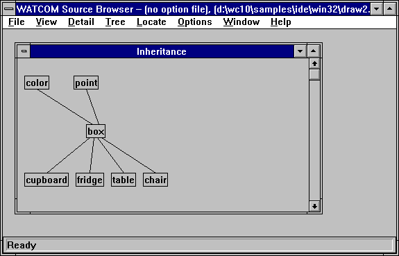
Figure 34. The Inheritance view displays the hierarchy of all C++ classes in your program
(graph view shown).
There are two different tree views you can choose from to display the class hierarchy:
- Graph view
- The graph view displays each class in a box. A box, or node, is connected to another node if one is a derived class
of the other. The root node of the tree is the base class for all nodes in the tree. The tree is initially fully
expanded. See the section entitled Manipulating the Tree Views for more
information on removing and expanding nodes from the tree.
Outline view
- The outline view displays the same information as the graph view but in a different way. The outline view is initially
fully collapsed. That is, only the base classes are displayed. In order to view the derived classes of a node,
you must single click on the node. This expands the node, displaying all its immediate derived classes. See the
section entitled Manipulating the Tree Views for more information on removing
and expanding nodes from the tree.
The Function Call Tree View
Selecting Call from the View menu displays the function call tree for all functions in your program.
This allows you to see all the functions that a given function calls and conversely all functions that call a certain function.
In the call tree, each node represents a function.

Figure 35. The Call view displays a call tree for all functions in your program (outline
view shown).
There are two different tree views you can choose from to display the function call tree:
- Graph view
- The graph view displays each function in a box. A box, or node, is connected to another node if one function calls the
other. The tree is initially fully expanded. See the section entitled Manipulating the Tree Views
for more information on removing and expanding nodes from the tree.
Outline view
- The outline view displays the same information as the graph view but in a different way. The outline view is initially
fully collapsed. In order to view the functions called by the function specified in the node, you must single click
on the node. This expands the node, displaying all functions it calls. See the section entitled Manipulating the Tree Views
for more information on removing and expanding nodes from the tree.
Manipulating the Tree Views
With both the graph view and the outline view you can change the information displayed in the following ways:
- select the root nodes you want to view
- expand any node in the view
- collapse any node in the view
You expand and collapse nodes in the graph and outline views to hide and reveal descendant and ancestor nodes of the selected
node. There are two ways to expand and collapse nodes:
- choose the desired function from the Tree menu
- click on the node (applies only to the outline view)
In addition to these functions, you can force the graph to be redrawn when a node in the tree view is collapsed.
By default, collapsed nodes will leave a gap in the graph. Redrawing the graph removes these gaps. This feature
is controlled by an option. See the section entitled Configuring the Browser
for more information.
Clicking on the right mouse button when the mouse cursor is in a tree view will automatically display the Tree
menu. This allows you to perform the actions in the Tree menu without actually going to the menu bar.
Selecting Root Nodes
Select Select Root Nodes from the Tree menu to change the root nodes that are displayed. The root
nodes you select appear in the graph or outline view; all other root nodes are hidden.
Choosing Select Root Nodes from the Tree menu opens the Select Root Nodes dialog. This
dialog lists all of the symbols that appear as a root node. Each symbol in the Select Root Nodes dialog has
a check box. When enabled, this check box is marked with an X, indicating that the symbol will appear as a root node
in the display.
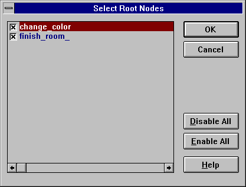
Figure 36. On the Select Root Nodes dialog, choose the symbols you want to appear as root
nodes.
Disabling Root Nodes
- (1)
- Click in the check box of the root node you want to disable. Alternatively, use the up and down arrow keys to
select the root node you wish to disable. Press the space bar to disable the currently selected root node.
The X disappears meaning that the root node is disabled and will not appear in the display.
(2)
- Repeat step one until you have disabled all desired root nodes.
(3)
- Click on OK in the Select Root Nodes dialog.
The Select Root Nodes dialog closes and the display is updated.
To disable all of the root nodes in the Select Root Nodes dialog, click on the Disable All button.
This removes Xs from each box in the Select Root Nodes dialog. Click on OK to close the dialog and update
the display.
- Note:
- This disables the selected root nodes only for the active view window.
Enabling Root Nodes
- (1)
- Click in the check box of the root node you want to enable. Alternatively, use the up and down arrow keys to
select the root node you wish to enable. Press the space bar to enable the currently selected root node.
An X appears in the box indicating that the root node is enabled and will appear in the display.
(2)
- Repeat step one until you have enabled all desired root nodes.
(3)
- Click on OK in the Select Root Nodes dialog.
The Select Root Nodes dialog closes and the display is updated.
To enable all of the root nodes in the Select Root Nodes dialog, click on the Enable All button. An
X appears in each box on the Select Root Nodes dialog. Click on OK to close the dialog and update the
display.
- Note:
- This enables the selected root nodes only for the active view window.
Expanding Nodes
You can expand the display all at once, one level at a time, or one branch at a time. To expand by levels and branches,
you must first select the node you want to expand. Do this by clicking once on the desired node.
- Expand One Level
- Choose Expand One Level from the Tree menu to display all of the immediate children for the selected node.
Expand Branch
- Choose Expand Branch from the Tree menu to display all descendants of the selected node.
Expand All
- Choose Expand All from the Tree menu to fully expand all of the enabled root nodes. Disabled root nodes
do not appear in the display.
Collapsing Nodes
You can collapse the display all at once or one branch at a time. To collapse by branches, you must first select
the node you want to collapse. Do this by clicking once on the desired node.
- Collapse Branch
- Choose Collapse Branch from the Tree menu to hide all descendants of the selected node.
Collapse All
- Choose Collapse All from the Tree menu to collapse all of the nodes and display only the root nodes.
Using the Keyboard
You can expand and collapse the symbols using key sequences. Click once on the symbol name to highlight it and press
one of the following keys:
- +
- Expand the symbol one level
-
- Collapse the symbol one level
*
- Expand all descendants of the selected node. This is the same as choosing Expand Branch from the Tree
menu.
CTRL *
- Expands all of the enabled root nodes. This is the same as choosing Expand All from the Tree menu.
CTRL -
- Collapses all of the symbols and displays only the root nodes. This is the same as choosing Collapse All from
the Tree menu.
Once a global view is displayed, you can view detailed information for a symbol in the global view in several ways:
- Double click on the desired symbol.
- Click once on the desired symbol to select it; then choose Detail from the Detail menu.
- Click once on the desired symbol to select it then press ENTER.
From the list view, you can reveal the detail view if you:
- Click once on the icon to the left of the symbol.
Performing any of these actions reveals a detail view window for the selected symbol. The same information appears
in this window regardless of the method used to access it.
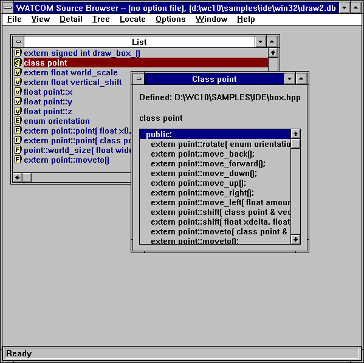
Figure 37. The detail view displays detailed information for the selected symbol.
The detail view window displays the source file where the symbol is defined or declared and it shows you what the
symbol looks like in your source code.
A list box appears in the detail view window when you select a symbol whose type is a function, class, or enum.
The list box contains information specific to the symbol type, as follows.
- Functions
- The list box displays, where applicable, local variables for the function.
Classes
- The list box displays member variables and member functions for the selected class and any inherited classes. The Browser
divides this information into three categories:
Enums
- The list box displays enumerator values for the selected enumerator.
You can view detailed information for symbols in the list box by double-clicking on the symbol. Other symbols in
the header information for the detail view are highlighted. Double-clicking on these symbols also displays a detail
view.
Goto Definition
From a detail view, Goto Definition in the Detail menu allows you to edit the file that contains the symbol's
definition. The editor is positioned on the line and column containing the symbols definition. This allows you
to make edits to your source code while you are browsing. When you are done, save any changes made and exit the editor
to return to the Browser session.
Note that any changes to your source code will make the Browser database out-of-date.
Source References
Selecting Source References from the Detail menu displays all locations in the source code where a symbol
is referenced. This allows you to analyze all uses of a particular symbol.
When modifying a symbol, you can use this feature to locate all occurrences of the symbol in the source code so you
can update them.
- To view the source references for a symbol:
-
(1)
- Position yourself at the detail view of the symbol whose source references you want to view.
(2)
- Choose Source References from the Detail menu.
This opens the Source References window for the selected symbol. This window displays the filename, line
number, and column number of each occurrence of the selected symbol in the source code.

Figure 38. Use the Source References window to view all the occurrences of the selected
symbol in the source code.
Symbol References
Symbol References allows you to view a list of all symbols that use a particular symbol. When modifying
a symbol you can use this feature to locate all symbols using the modified symbol. This allows you to determine if
all referencing symbols need to be updated.
- To view the symbol references for a symbol:
-
(1)
- Position yourself at the detail view of the symbol whose symbol references you want to view.
(2)
- Choose Symbol References from the Detail menu.
This opens the Symbol Referencing window for the selected symbol. This window displays a list of all symbols
that use the selected symbol. The display is the same as the list view of symbols. Each symbol has a icon indicating
its symbol type.
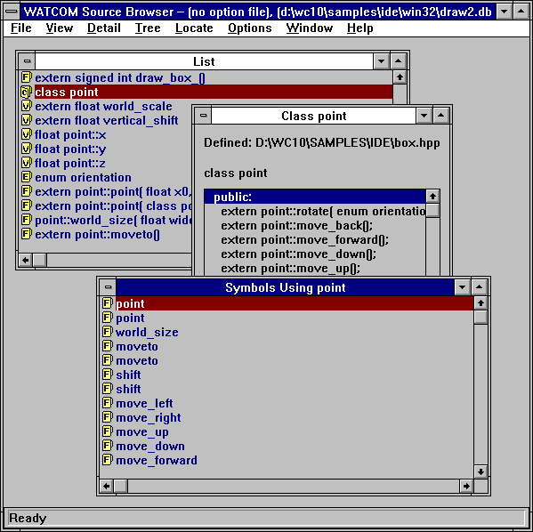
Figure 39. Use the Symbols window to view a list of all symbols that use the selected symbol.
You can perform the same actions in this window as from the List window. Refer to the section entitled
The List View for more information.
From this window you can invoke the editor to make changes to the source code that contains the symbols that reference
a particular symbol. Select the reference you want to edit in one of two ways:
- Double click on the desired reference.
- Click once on the desired reference to select it and press ENTER.
This invokes the editor and positions the cursor at the line that contains the selected reference.
Locating Symbols
When a global view is displayed and your program contains many symbols, it can be difficult to scroll through the global
view to locate a particular symbol. There are two functions that can help you locate a symbol in a global view:
Find
Choose Find from the Locate menu to open the Find dialog. Use this dialog to specify the criteria
to be used to locate a symbol. For example, you can search for a particular symbol or a set of symbols with common
characteristics.

Figure 40. Use the Find dialog to locate one symbol or a set of symbols.
Find Pattern
In the Pattern field of the Find dialog, enter a pattern for the symbol(s) you wish to locate. The
matching behaviour depends on the switches set in this dialog.
- Match Case
- When enabled, the Browser performs a case sensitive compare when attempting to find a match.
Match Whole Symbols Only
- When enabled, the Browser locates symbols that exactly match the specified pattern. This switch only applies when the
Use Regular Expressions switch is disabled.
Use Regular Expressions
- When enabled, the Browser interprets the pattern specified as a regular expression. The Edit button, when pressed,
displays the Regular Expression Options dialog. This dialog allows you to specify the regular expression.
Dropping the combo box of the Pattern field displays a list of previous patterns entered. You can select
a pattern from this list instead of entering a new one.
Find Filters
Clicking on the Filters button on the Find dialog opens the Find Filters dialog. This dialog
allows you to specify the characteristics of the symbol(s) to be located.

Figure 41. Use the Find Filters dialog to specify characteristics of the symbol(s) you
want to locate.
In the Symbol Type section of the dialog click on the symbol types you want to view. To search for all
symbol types, select the All button.
In the Symbol Scope section, you can specify the scope for locating symbols.
- Member of Class:
- Specify the class that the symbol must be a member of in order to be located.
Local Symbols of Function:
- Specify the function that the symbol must be local to in order to be located.
Find File Filters
The Source Files button, when pressed, displays the Source Files dialog that allows you to specify the files
to be searched when attempting to locate a symbol. This dialog lists all source files that make up the database file.
Each source file in the list has a check box. An X in this box indicates that the source file is searched when
trying to locate a symbol. Click in the check box of the source file you want to disable. This removes the X.
The blank box indicates that the source file will not be searched when trying to locate a symbol. To re-enable
the source file, click in the check box again. This places an X in the box indicating that the source file will be
searched.

Figure 42. Choose the source files to be searched using the Source Files dialog.
The Pattern section of the dialog, allows you to specify wild card directory specifications for files that
are to be included or excluded in the search. For example, specifying "d:\watcom\h\*.h" and pressing the
Exclude button, will prevent any file in the "d:\watcom\h" directory with extension ".h" from being
searched. To include these files in the search again, specify the same pattern and press the Include button.
Pressing the Set All button includes all files in the search.
Pressing the Clear All button excludes all files in the search. This is useful, for example, if you wish
to only search files in the current directory. Simply press the Clear All button, specify "*.*" in
the Pattern section, and press the Include button.
Once the filter criteria are set, perform the find operation by clicking on the OK button on the Find dialog.
This closes the dialog and performs the search. The Browser examines the symbols in the current global view and
selects the first symbol that matches the search criteria.
To find the next symbol that matches the search criteria, choose Find Next from the Locate menu.
Find Selected
Because the symbols displayed in a global view are often many, only a portion of the display is visible in the window
at any time. When you temporarily scroll away from the selected symbol or node, a quick method of locating that symbol
is to select Find Selected from the Locate menu. This will immediately locate and display the currently
selected symbol in the global view.
Configuring the Browser
There are several options in the Browser that you can configure:
- Regular expression processing for find and query
- Global Symbol Queries
- Enumerator styles for detail views of enumeration constants
- Member filters for detail views of classes
- Auto-arranging of graph views
- Line drawing method for graph views
- Orientation of graph views
- Line styles and colors for inheritance graphs
- Line styles and colors for call graphs
- Selection of text editor
- Automatic saving of options on exit
This section describes each configuration option.
Regular Expressions for Find and Query
Regular Expressions in the Options menu allows you to configure the regular expression used to find a symbol
and specify a query.

Figure 43. Use the Regular Expressions Options dialog to configure a regular expression
for Find and Query.
Choose Regular Expressions from the Options menu to open the Regular Expressions Options dialog.
In the Search String Meaning section of the dialog you select the anchoring method used to find a match.
- Starts With
- Matches only if the pattern is found at the beginning of the symbol
Contains
- Matches if it occurs anywhere in the symbol
In the Regular Expression Characters section of the dialog you select the characters you want the Browser to interpret
as meta-characters.
Select the desired characters by clicking once in the corresponding check box. An X in the check box indicates
that the character will be interpreted as a meta-character. Unchecked characters are matched as standard keyboard characters.
To de-select a character, click again on its check box.
The other buttons on this dialog are:
- Set All
- Click on Set All to enable all of the characters.
Clear All
- Click on Clear All to disable all of the characters.
Defaults
- Click on Defaults to discard the current settings in this dialog and replace them with the settings configured at the start
of the Browser session.
OK
- Click on OK to close this dialog. This changes the configuration for the current Browser session.
Global Symbol Queries
Choose Query from the Options menu to open the Query dialog. Use this dialog to specify the
criteria to be used to display symbols in a global view.

Figure 44. Use the Query dialog to configure global view symbol queries.
Query Pattern
In the Pattern field of the Query dialog, enter a pattern for the symbol(s) you wish to display in the global
views. The matching behaviour depends on the switches set in this dialog.
- Match Case
- When enabled, the Browser performs a case sensitive compare when attempting to find a match.
Match Whole Symbols Only
- When enabled, the Browser includes symbols that exactly match the specified pattern. This switch only applies when the
Use Regular Expressions switch is disabled.
Use Regular Expressions
- When enabled, the Browser interprets the pattern specified as a regular expression. The Edit button is enables
and, when pressed, displays the Regular Expression Options dialog. This dialog allows you to specify the regular
expression.
Dropping the combo box of the Pattern field displays a list of previous patterns entered. You can select
a pattern from this list instead of entering a new one.
Query Filters
Clicking on the Filters button on the Query dialog opens the Query Filters dialog. This dialog
allows you to specify the characteristics of the symbol(s) to be displayed in the global views.
In the Symbol Type section of the dialog click on the symbol types you want to view. To display symbols
of all types, click on the All button.
In the Symbol Scope section, you can specify the scope of the symbols to be displayed.
- Member of Class:
- Specify the class that the symbol must be a member of in order to be displayed.
Local Symbols of Function:
- Specify the function that the symbol must be local to in order to be displayed.
In the Symbol Attributes section, you can specify the attributes of the symbols to be displayed. Selecting
Artificial will cause compiler-generated symbols to be displayed. Selecting Anonymous will cause unnamed
types to be displayed. Unnamed types will be displayed as square brackets enclosing the symbols whose type they define.
Selecting Declared Only will cause only symbols that have been defined to be displayed. For example, a
function prototype for an unreferenced function will not be displayed when Declared Only is selected.
Query File Filters
The Source Files button, when pressed, displays the Source Files dialog that allows you to specify the files
that a symbol must be defined in in order to be displayed. This dialog lists all source files that make up the database
file. Each source file in the list has a check box. An X in this box indicates that all symbols defined in the
source file will be displayed. Click in the check box of the source file you want to disable. This removes the
X. The blank box indicates that any symbols defined in the source file will not be displayed. Alternatively,
use the up and down arrow keys to select the source file you wish to disable. Press the space bar to disable the currently
selected source file. To re-enable the source file, click in the check box again or press the space bar. This
places an X in the box again.
The Pattern section of the dialog, allows you to specify wild card directory specifications for files.
Any symbols defined in these files will be displayed in the global views. For example, specifying d:\watcom\h\*.h
and pressing the Exclude button, will prevent any symbol defined in any file in the d:\watcom\h directory
with extension ".h" from being displayed. To display symbols from these files again, specify the same pattern
and press the Include button.
Pressing the Set All button displays all symbols in all files.
Pressing the Clear All button causes no symbols to be displayed. This is useful, for example, if you
wish to only display symbols defined in files in the current directory. Simply press the Clear All button, specify
*.* in the Pattern section, and press the Include button.
Enumerator Styles
Selecting Enumeration Styles from the Options menu displays the Enumeration Styles dialog.
This dialog allows you to specify the format for displaying enumeration constants in the detail views for enumeration constants.
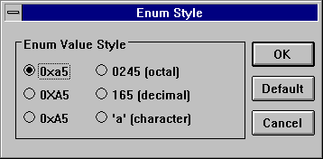
Figure 45. Specify enumerator styles for detail views of enumerator constants using the
Enumeration Styles dialog.
Member Filters for Classes
Member Filters in the Options menu allows you to specify the members you want to appear in the detail view
of a class. For example, you may not want the detail class to contain private members. Alternatively, you may
only wish to see function members and not data members.
- (1)
- Choose Member Filters from the Options menu.
This opens the Member Filters dialog where you specify the information you want to appear in detail views for classes.
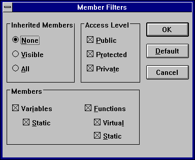
Figure 46. Use the Member Filters dialog to select the information to appear in detail
views for classes.
(2)
- Choose the inheritance level from the Inherited Members section of the dialog.
The options are:
- None
- Do not show inherited members.
Visible
- Show the local members of a class and visible members of inherited classes.
All
- Show all local and inherited members of a class.
(3)
- Click on the check boxes in the Access Level section of the dialog to select the desired access levels.
The options are Public, Protected, and Private. Only members with the selected attributes will appear in the detail
view for a class.
(4)
- Select the desired members in the Members section of the dialog.
Show data members in a class by enabling the variables check box. When the variables check box is
enabled, you may also enable or disable static data members by clicking on the static check box.
Show function members in a class by enabling the functions check box. When the functions check
box is enabled, you may also enable or disable static and virtual function members by clicking on the static and
virtual check boxes.
(5)
- Click on OK to accept the member filter query.
This closes the dialog and returns you to the active window.
- Note:
- The Default button on the Member Filter dialog resets the query to the default settings.
Auto-arranging of Graph Views
When collapsing a graph view, nodes that become hidden are replaced by gaps in the graph. Arrange Graph in
the Tree menu compacts the graph view to remove the spaces left vacant by hidden nodes.
When enabled, Graph Auto-arrange of the Options menu causes the Browser to automatically compact the
graph view each time you perform a collapse operation. To enable the automatic compaction of the graph view after a
collapse operation, select Graph Auto-arrange from the Options menu. A check mark appears beside the
menu item when it is enabled. Select the menu item again to disable it.
Line Drawing Method for Graph Views
Graph Square Lines in the Options menu allows you to select the type of line that connects the nodes in
a graph view. The default is to connect nodes of the graph using diagonal lines. Choosing Graph Square Lines
from the Options menu causes nodes to be connected using square lines (combinations of vertical and horizontal lines).
A check mark beside the menu item indicates this method of drawing lines is enabled. To disable this option,
select it again.

Figure 47. The Graph Square Lines option changes the connecting lines from diagonal to
square.
Changing the Graph Orientation
In the Options menu you can select whether the trees on the graph view grow horizontally or vertically. A
graph view that grows horizontally is one where the root node is at the left and the leaf nodes at the right. A graph
view that grows vertically is one where the root node is at the top and the leaf nodes at the bottom. By default, graphs
grow vertically.
Select Graph Horizontal from the Options menu to change the graph orientation to horizontal. Selecting
this option changes the menu item name to Graph Horizontal in the Options menu. Select this menu item
to change the graph orientation back to vertical.

Figure 48. The Graph Horizontal option displays the graph with the root node at the left.
Defining Graph View Legends
The Inheritance Legend and Call Legend menu items in the Options menu allow you to change the colors,
line styles, and node styles used in the graph views. Changing the styles updates all open graph views in the current
session, as well as any new ones you open. Saving the session configuration to an option file saves changes made to
the colors and the lines and node styles.
The Inheritance Legend and Call Legend dialogs are designed differently, but the procedures for changing
the graph styles are identical.
To change the line and node styles for inheritance graphs, choose Inheritance Legend from the Options
menu. The Inheritance Legend dialog appears.
To change the line and node styles for call graphs, choose Call Legend from the Options menu.
The Call Legend dialog appears.
- (1)
- Click once on the line or node style or use the up, down, right and left arrow keys to select the line or node style
you want to change.
A box appears around the selected line.
(2)
- Click on the Modify button.
This opens the Draw Style dialog for the selected line or node style.
(3)
- Click once on the desired line or node style
or
- use the up and down arrow keys to select the desired line or node style.
The sample appearing in the Example field at the top of the dialog now reflects the currently selected line or
node style.
(4)
- Click once on the desired color or use the up and down arrow keys to select the desired color.
The sample appearing in the Example field at the top of the dialog now reflects the currently selected color.
(5)
- Click on OK to accept the new style and color setting.
The Draw Style dialog closes, returning you to the Inheritance Legend or Call Legend dialog.
Select another line or node style to change and repeat this procedure.
(6)
- Click on OK in the Inheritance Legend or Call Legend dialog when you have changed all desired colors
and styles for lines and nodes.
Clicking OK closes the dialog and updates all open inheritance or call graph views with the selected colors and
line and node styles.
Selecting a Text Editor
You can use your own favourite text editor from within the Browser.
- To select your own text editor:
-
(1)
- Choose Set Text Editor from the Options menu.
The Set Text Editor dialog appears. You can enter the name of the text editor in the first field. You must
also indicate whether the text editor is an executable file or a Dynamic Link Library (DLL). If the editor is an executable
file (rather than a DLL), then you can enter an argument line in the second field. The argument line will be supplied
to the editor whenever it is started by the Browser. The argument line can include any of three different macros which
will be filled in by the Browser. The macros are:
- %f
- The name of the file to be edited.
%r
- The row in the file at which to position the cursor. If the editor is invoked from a diagnostic message which contains
a line number then the row value is extracted from the message; otherwise the row value is 1.
%c
- The column in the file at which to position the cursor. If the editor is invoked from a diagnostic message which contains
a column number then the column value is extracted from the message; otherwise the column value is 1.
For example, if the editor argument line that you specified was:
file='%f' row='%r' col='%c'
and you double click on an error message in the Log window that names the file foobar.c with an error at
line 215 and column 31, then the argument line that is passed to your editor is:
file='foobar.c' row='215' col='31'
This flexibility allows you to specify the name of the file to edit and the row and/or column at which to position
the text cursor. If no row or column is available, then the Browser will supply the value of 1 as a default.
(2)
- Select OK when you wish to confirm the selection of a new editor.
or
- Select Cancel when you wish to cancel the selection of a new editor.
or
- Select Default when you wish to restore the default editor selection and then select OK or Cancel.
Automatically Saving Options on Exit
Save Options on Exit in the Options menu instructs the Browser to automatically save the current options
to an options file. To enable the automatic saving of options, select Save Options on Exit from the Options
menu. A check mark beside the menu item indicates that it is enabled. To disable this option, select it again.
See the section entitled Saving Options for more information on saving options to a
file.
Loading Options
Use the Load Options menu to load an option file into your Browser session.
Choose Load Options from the File menu. The Load Options File dialog appears where you
select the option file you want to load for the current Browser session.
Saving Options
There are three ways to save the current options to an option file:
- Save Options
- Save Options As
- Save Options on Exit
An asterisk beside the option file name in the caption bar indicates that changes were made to the options during the
Browser session and should be saved. This section describes each method for saving options to a file.
- Note:
- If you have made option changes during the Browser session and you choose Exit from the File menu without first
saving the options, the Browser prompts you to save the options to a file. Refer to the section entitled Quitting the Browser
for more information.
- Save Options
- Selecting Save Options from the File menu saves the updated options information to the current options file.
To save options in this way, an options file must be specified in the caption bar.
Save Options As
- Save Options As in the File menu opens the Save Options As dialog. Specify the filename of the
option file to which you want to save the current options. Click on OK to close the dialog and save the options.
Save Options on Exit
- Save Options on Exit in the Options menu allows you to specify that the Browser is to automatically save the
current options to an options file, if one exists. When enabled, a check mark appears beside this menu item.
When enabled and an option file exists, the Browser saves the changes without prompting when you close the session.
When enabled and no option file exists, the Browser displays a message box prompting you to save the new options.
Choose No in this box to close the Browser session without saving. Choose Yes in this box to display
a Save As dialog where you specify the option file to which you want to save the new options.
Setting Source Search Paths
You can specify a command line option to the Browser that allows you to specify alternate source file search paths.
This option is useful when a database file is created on a system different from the one that is used to browse the application
source code. The syntax of the command line option is:
path path_spec1;path_spec2;...
Since the database files record explicit paths to source files, it is likely that the path will no longer be valid
once the software is moved to another system.
When the Browser cannot locate the specified file using its explicit path, it will search the paths listed in the
path option.
This section describes how to use the profile analysis tools to enhance the performance of your program. There are
two profile analysis tools:
- The Open Watcom Execution Sampler (the sampler)
- The Open Watcom Execution Profiler (the profiler)
You must use both of these tools to discover where your code is spending time as it executes.
First, you must run the Sampler. The sampler starts your application and, at a predetermined interval,
records the location where your program is executing. This information is saved in a "sample file".
It is a statistical sampling of your program's execution. It is not exact information, but it is accurate enough to
be a very useful tool to enhance your program's performance. See The Open Watcom Execution Sampler.
Second, you run the Profiler. It reads the sample file and displays the sample information graphically.
You can use the profiler to examine the sample data and narrow in on the places where your program spends large amounts
of time. See The Open Watcom Execution Profiler.
Once you have discovered heavily executed portions of your program, you might want to rewrite then using a faster
algorithm or fine tune your implementation of the current algorithms.
- Note
- You must compile and link the program with debugging information. Use at least the d1 option when compiling and
the debug all option when linking.
The Open Watcom Execution Sampler
To run the sampler from the Integrated Development Environment, click on the toolbar item that looks like a stopwatch.
The sampler's command line syntax is shown below.
WSAMPLE [options] program [arguments]
- WSAMPLE
- is one of several versions of the sampler. See the section entitled Sampler Operating System Considerations
for a description of how to run the sampler under various environments.
options
- is a list of valid sampler options, each preceded by a slash ("/") or a dash ("-"). Options may
be specified in any order.
program
- is the name of the program to be sampled.
arguments
- is the set of arguments passed to the program. The program behaves just as if it were executed directly from the command
line. If you normally run your program using:
C>program [arguments]
then it may be sampled using the following command:
C>wsample program [arguments]
By default, the output of WSAMPLE is a sample file with the same name as the executable but with an extension of .SMP.
In the above example, it would be called PROGRAM.SMP.
Sampler Options Summary
The sampler has several command line options. A summary of the available options is displayed on the screen by executing
the "WSAMPLE" program appropriate for your system.
C>wsample
Usage: wsample [options] program [program arguments]
Options:
/b=<size> specify the buffer size for samples (default: 63)
/f=<file> specify the output filename for the sample file
/r=<rate> specify the sampling rate
<size> is a number in the range 1 to
63 (default: 63 kb)
<rate> is a number (range 27 to 1000) specifying
the approximate
time
interval (in milliseconds) between samples
(default:
55)
'#' may be used instead of '=' in options (e.g., /b#10)
Sampler Command Line Options
Command line options allow you to control how much the program's execution will be affected by the presence of the sampler.
System specific options are described in detail in subsequent sections. The options that apply to all versions
of the sampler are:
- /r=<sample_rate>
- Specifies the approximate time between execution samples (in milliseconds). The sampler will set up the system so that
the program will be interrupted in intervals of the number of milliseconds specified on the command line. A smaller
number will result in a more accurate sample file. A larger number result in a less accurate sample. If your
program runs for a very short time, you should use the smallest interval possible. The default value is system dependent
and it will be displayed if you enter "WSAMPLE" with no arguments. The following example will sample the
program's execution 200 times per second.
Example:
C>wsample /r=5 program
/b=<buffer_size>
- Specifies the size of the sampler's internal buffer (in kilobytes). The execution of the program will produce many samples
which must be recorded in the sample file. The sampler stores the samples in an internal buffer until the buffer is
filled and must be written to the disk. You may reduce the buffer size if you want to leave more memory for your application
program. You should not make the buffer size so small that the sampler would have to write samples to disk more than
once a second. The default size for the sample buffer is 63K. In the following example, a buffer size of 10K
will be used:
Example:
C>wsample /b=10 program
/f=<fname>
- Specify the name of the sample file. Samples will be written to the specified file. By default, a file with the
same name as the executable and an extension of .SMP is created.
Sampler Operating System Considerations
There is a different version of the sampler to match each operating system. Some systems do not allow the sample
rate to be adjusted. Each sampler will provide information about any unique aspects of its operation when you type
its program name on the command line.
Example:
C>wsample
Here are the Open Watcom Execution Sampler executable names provided.
- Operating System:
- Command:
DOS
- WSAMPLE.EXE
OS/2
- WSAMPLE.EXE
DOS/4GW or DOS/4G
- WSAMPRSI.EXE
386|DOS-Extender
- WSAMPPLS.EXP
Windows 3.x
- WSAMPLEW.EXE
Win32
- WSAMPLE.EXE
NetWare 386
- WSAMPLE.NLM
The sampler for an operating system such as DOS will not operate correctly in an environment that is not strictly DOS
such as a Windows or OS/2 DOS box. The sampler obtains its information about what was executing when a timer interrupt
occurs from the stack. Unlike "real" DOS, the segment/offset on the stack in a protected-mode environment
supporting Virtual DOS Machines does not correspond to the program that was executing at the time of the timer interrupt.
As a result, you must run the sampler in the real operating system environment for which it was designed. The
same is true for Windows applications in a Win-OS/2 session.
Using the Sampler with DOS
The following options are available under DOS. For a further description of options, see Sampler Command Line Options.
Example:
C>wsample [wsample_options] program [arguments]
- /r=<rate>
- Rates from 1ms to 55ms are allowed.
/b=<size>
- Sizes from 1K to 64K are allowed. Since DOS places a limit on the amount of memory available to all programs, you may
need to use the "b" option to reduce the memory requirements of the sampler, leaving more memory for your program.
/f=<file>
- Specify the name of the sample file.
/i=<interrupt>
- specify an interrupt to monitor
This option allows you to assign any samples that occur while a service interrupt is executing to the instruction following
the requesting INT instruction. This will reveal the amount of time code spends "waiting" for interrupt services.
The interrupt number specified is in base 16 (hex) and can be in the range 20 to ff except for the range 34 to 3d which
is reserved for 80x87 emulation.
Example:
C>wsample /i=25 /i=26 program
/d
- disable monitoring of the DOS interrupt
By default, the DOS version of the sampler assigns any samples that occur while a DOS interrupt is executing to the instruction
following the requesting INT 21H instruction. This will reveal the amount of time code spends "waiting" for
DOS to complete a service. This option can be used to disable this assignment of samples so that the total time spent
executing in DOS code may be determined.
Using the Sampler with OS/2
The following options are available under OS/2. For a further description of options, see Sampler Command Line Options.
Example:
C>wsample [wsample_options] program [arguments]
- /r=<rate>
- Rates from 1ms to 1000ms are allowed.
/b=<size>
- Sizes from 1K to 64K are allowed.
/f=<file>
- Specify the name of the sample file.
/s
- start the application in a new session. By default the sampler starts your application in its own session. Use
/s if you application is a PM application, or requires its own session to run.
Using the Sampler with DOS/4GW or DOS/4G
This version of the sampler uses one of DOS/4GW or DOS/4G to run the sampler in 32-bit protected mode. One of DOS4GW.EXE
or DOS4G.EXE must be located in the path specified in DOS4GPATH or PATH. The sampler will, in turn, invoke
the program with any arguments specified on the command line. The following options are available. For a further
description of options, see Sampler Command Line Options.
Example:
C>wsamprsi [wsample_options] program [arguments]
- /b=<size>
- Sizes from 1K to 64K are allowed.
/f=<file>
- Specify the name of the sample file.
Using the Sampler with the Phar Lap 386|DOS-Extender
The sampler must be run using RUN386. RUN386 will run the sampler in 32-bit protected mode which will invoke the
program with any arguments specified on the command line. The following options are available. For a further
description of options, see Sampler Command Line Options.
Example:
C>run386 wsamppls [wsample_options] program [arguments]
- /r=<rate>
- Rates from 1ms to 55ms are allowed.
/b=<size>
- Sizes from 1K to 64K are allowed.
/f=<file>
- Specify the name of the sample file.
Using the Sampler with Windows 3.x
The Windows 3.x sampler (WSAMPLEW.EXE) will sample both 16-bit and 32-bit Windows applications. The sampler will
only run under Windows 3.x 386 enhanced mode. You must also include the "device" specification listed below
in the [386Enh] section of your SYSTEM.INI file.
DEVICE=C:\WATCOM\BINW\WDEBUG.386
When starting the sampler, you will be presented with a window to select the executable and to specify the sampling
rate.
Once you start the sampler, a log window will appear. This will report the state of the sampled program (it
does not in any way interfere with the program as it is running). Once the program terminates, this window will remain.
The sample file will be placed in the same directory as the program you are sampling, and will have the extension .SMP.
A well-behaved Windows application should have very few samples inside the application. Final development of
a Windows application should involve a phase where the application is analyzed so that it does not consume large amounts
of CPU time without yielding to Windows 3.x.
To start the sampler, double-click on the Open Watcom Execution Sampler icon. Enter a command in the prompt
dialogue box.
[wsample_options] program [arguments]
The following options are available under Windows. For a further description of options, see Sampler Command Line Options.
- /r=<rate>
- Rates from 1ms to 1000ms are allowed.
/b=<size>
- Sizes from 1K to 64K are allowed.
/f=<file>
- Specify the name of the sample file.
Using the Sampler with Win32
The Win32 sampler (WSAMPLE.EXE) will only sample Win32 applications such as those that run under Windows 9x or Windows
NT and later operating systems. It cannot be used to sample 16-bit applications. When starting the sampler, you
will be presented with a window to select the executable and to specify the sampling rate.
Once you start the sampler, a log window will appear. This will report the state of the sampled program (it
does not in any way interfere with the program as it is running). Once the program terminates, this window will remain.
The sample file will be placed in the same directory as the program you are sampling, and will have the extension .SMP.
To start the sampler, double-click on the Open Watcom Execution Sampler icon. Enter a command in the prompt
dialogue box.
[wsample_options] program [arguments]
The following options are available under Win32. For a further description of options, see Sampler Command Line Options.
- /r=<rate>
- Rates from 1ms to 1000ms are allowed.
/b=<size>
- Sizes from 1K to 64K are allowed.
/f=<file>
- Specify the name of the sample file.
Using the Sampler with NetWare 386
The sampler is also available for sampling the execution of NetWare Loadable Modules. The sampler (an NLM itself)
will load and execute the program with arguments.
Example:
load wsample [wsample_options] program [arguments]
The following options are available under NetWare:
- /r=<rate>
- Rates from 1ms to 55ms are allowed.
/b=<size>
- Sizes from 1K to 64K are allowed.
/f=<file>
- Specify the name of the sample file.
The Open Watcom Execution Profiler
The profiler reads the information from sample files and displays the results as a graph. Regions of concentrated
activity are visible and may be explored by zooming in to successive levels of detail. See The Open Watcom Execution Sampler.
Zoom-In and Backout
The profiler allows you to zoom-in to successively more detailed views of your program. You may also back-out
of any detail view. The levels of detail available are:
- Sample
- This is a sample file. The profiler can show you information from several sample files at once.
Image
- A sample file may consist of several images. These are your main executable file and any Dynamic Link Libraries (DLL)
or NetWare Loadable Modules (NLM) that your application called while executing.
Modules
- An image may consist of several modules. Each module is a compilation unit. It consists of all the source code
generated by one invocation of the compiler.
Files
- A module may be made up of several files. Your application may contain code that is generated by included files.
Functions
- A file may contain several functions. These are all of the global functions that are defined within that file.
Source Lines
- A function is made up of one or more source lines.
Assembler instructions
- Each source line generates zero or more lines of assembler instructions. It is possible to get clues about expensive
operations from the number of samples found at each instruction. For example, the C statement "i = j + k * l"
will generate a multiply instruction. If you inspected the assembler instructions, you might find that the multiply
instruction took the majority of the time in question.
The process of moving from higher levels to lower levels, say, from "modules" to "functions", is called
zooming in. Moving from lower levels to higher levels ("assembler instructions" to "source lines")
is called backing out. As you zoom into your program the size of the region will get smaller but the amount
of detail will increase. Likewise, backing out will restore previous levels to the larger regions and reduced detail.
You may zoom-in and back-out of detail views in order to explore your applications execution characteristics.
Samples
After you have run the sampler, you are left with a sample file. It contains a record of all locations where your
program was interrupted by the sampler. A sample is a record of the instruction pointer within the program at
the point in time that the interrupt occurred. Regions of the program that consume large amounts of execution time
have a larger number of samples associated with them.
Absolute and Relative Percentages
The most important piece of data that the profiler provides is the percentage of time that a region of code contributes
to total execution time. At the highest level (images), these percentages reflect each image's contribution to the
total execution time. As you successively zoom into modules and functions, you may become interested in the relative
percentages.
The percentage of time that a region contributes to the total program execution time of the program is called
an absolute percentage. The percentage of time that a piece of a region contributes to the total execution time
of your current detail level is called a relative percentage.
As you zoom in to the source and assembly views, the absolute percentages of execution time may get quite small.
The relative percentages help you to get a feel for the proportion of time involved within the detail view, but don't get
fooled into thinking that a routine contributes more than it actually does. Your decisions about which code to optimize
should always be based on absolute percentages.
The Open Watcom Execution Profiler User Interface
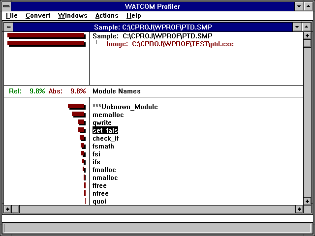
Figure 49. The Main Profiler Screen
The profile screen is divided into six areas. In the middle of the screen is the information area.
It contains relative and absolute percentage numbers. The top half of the screen is the title area. The bottom
half of the screen is the detail view. The menu is displayed at the top of the screen. The bottom line displays
status information.
The Title Area
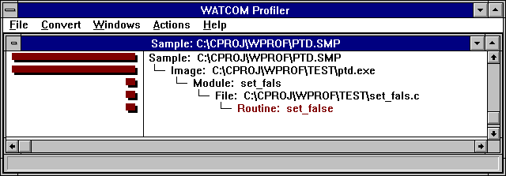
Figure 50. The Profiler Title Area
As you zoom in and back out, the title area adds and removes lines to show you that path that you took to your current
detail view. You can back out to any level displayed in the title area by double clicking on that line.
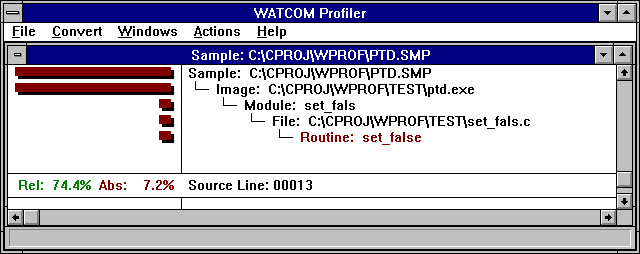
Figure 51. The Profiler Information Area
The information area is updated as you move around in the detail view. The red and green percentage numbers
give you numerical values that correspond to the histogram bar on the current line in the detail area. The red number
represents the line's percentage of total execution time. The green number represents the line's percentage of the
time spent within the current detail level.
The Detail View

Figure 52. The Profiler Detail View
The detail view shows you a list of one of the following:
- Image Names
- Module Names
- File Names
- Routine Names
- Source Lines
- Assembler Instructions
On the left half of the screen is a histogram which shows the number of samples at each location. On the right is
a list of names. If there are more lines than will fit on the screen, you can use the cursor keys and scroll bars to
move through the list. As you cursor through the list of names, or click on a name with the mouse, the information
area is updated to show statistics about the current line in the detail area.
If you find a line that is heavily executed, and you wish to examine the it in more detail, double click on it, or
cursor to it and press F3 or ENTER. You may back out of a detail view by pressing F4 or BACKSPACE. As you zoom
in and back out, the title area is updated to show that path you took to your current detail area.
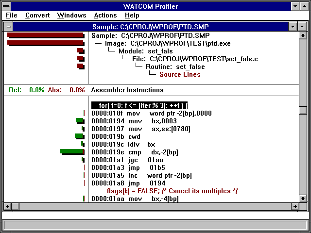
Figure 53. The Profiler Assembly Detail
The histogram will be drawn in two colors, red and green. The red portion represents the absolute percentages
of execution time for each line. The green and red portions, taken together, show the percentage of a line relative
to the current detail view. For example, if a detail line represented 10% of the total execution time, then the red
absolute bar would take 10% of the histogram area. If the entire digital view represented 20% of the execution time,
then the single detail line would have a green and red bar which would take 50% of the histogram area (10% is half the total
time of the entire detail view).
The Profiler's menu bar lets you perform operations. You can activate the menu bar by using the mouse, or by holding
the ALT key and pressing the key that corresponds to the highlighted character in the menu bar. There are five menu
bars.
The File menu contains the following items:
- Open...
- Open a new sample file. A new window will be opened, and the data from the sample file will be displayed in it.
Close
- Close the current sample file. The current window will be closed.
Options
- This allows you to set profiler options. See the section entitled The Options Dialog
for details.
System
- Start a new operating system shell. This option is only available in the DOS version of the profiler.
Exit
- Close your profiler session and exit.
The Convert menu allows you to select an output format to save some of the raw information to a file. The DIF format
is supported by most of the major data manipulation or spreadsheet programs. The comma delimited format is a simpler
format that is supported by older software, and is easily manipulated by custom made software. The Convert menu contains
the following items:
- Current Module
- Use this menu item to save out the information related to the current module.
Current Image
- Use this menu item to save out the information related to the current image.
All Images
- Use this menu item to save out the information related to the all of the sample images.
The Windows menu contains one menu item for each sample file you have open. Use this menu to switch between sample
files.
When you select an item from the Actions menu, it acts on the current detail view. To configure one of the actions
across all windows, see The Options Dialog. The Actions menu is identical to the
floating popup associated with the current window. See The Popup Menu. The Actions
menu contains the following items:
- Zoom In (F3)
- Zoom in to the currently selected line. If the line is a source file, you will see a list of functions. If the
line is a function, you will see source lines, and so on. You can also zoom into a line by double clicking on it.
Back Out (F4)
- Back out of the current detail view to the previous view. Double clicking in the title area will also achieve this.
Gather Small Values
- Large portions of your program may be executed very little, if at all. This menu item will cause lines with a smaller
absolute percentage than the cutoff value to be grouped together. They will be displayed on a single line starting
with the text '***Gathered'. To change the cutoff value, see The Options Dialog.
Bar Graph/Stretch
- When looking at areas that are not executed very much, the histogram bars can get very small. This menu item will stretch
the histogram so that the largest bar goes all the way to the left of the screen.
Bar Graph/Absolute Bars
- Use this menu item to turn the absolute (red) histogram bars on and off.
Bar Graph/Relative Bars
- Use this menu item to turn the relative (green) histogram bars on and off.
Sort/Sample Count
- Use this menu item to sort the detail view with the most heavily executed region at the top.
Sort/Name
- Use this menu item to sort the detail view alphabetically by name.
The Help menu item is used to select an action from the help sub-system. All of the profiler documentation is available
in the on-line help.
You can access the pop-up menu for a window by pressing the right mouse button or by typing the period (.) key.
The popup menu item is identical to the Action menu. The Zoom-in menu item will zoom in to the line on which the mouse
was clicked. See The Actions Menu.
The Options Dialog
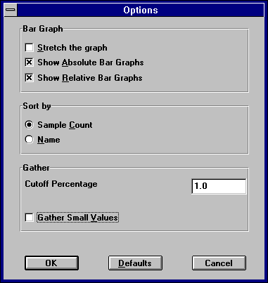
Figure 54. The Profiler Options Dialog
The options dialog changes profiler settings across all views and windows. The following items can be changed:
- Stretch the Graphs
- When looking at areas that are not executed very much, the histogram bars can get very small. This menu item will stretch
the histogram so that the largest bar goes all the way to the left of the screen.
Show Absolute Bar Graphs
- Check this box to turn the absolute (red) histogram bars on or off.
Show Relative Bar Graphs
- Check this box to turn the relative (green) histogram bars on or off.
Sort By Sample Count
- Check this radio button to sort the detail views with the most heavily executed regions at the top.
Sort By Name
- Check this radio button to sort the detail view alphabetically by name.
Gather Small Values
- Large portions of your program may be executed very little, if at all. This menu item will cause lines with a smaller
absolute percentage than the cutoff value to be grouped together. They will be displayed on a single line starting
with the text '***Gathered'.
Cutoff Percentage
- Specify a new cutoff percentage here. You can specify any value between 0 and 100.
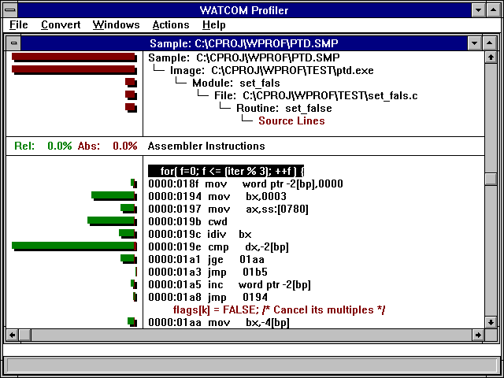
Figure 55. The Bar Graph After the Stretch Option is Selected
The Convert Dialog

Figure 56. The Convert Dialog
After selecting from the Convert menu the portion of the sample information that you wish to convert, a conversion
dialog is presented. The following items may be changed:
- Output File Name
- The name of the sample file with the file extension most commonly used for the conversion type is displayed. You may
change this to any name, or use the Browse button to help select the name.
Format Type
- Check this radio button to specify the data type that the sample information will be converted to.
The Status Line
The status line is located at the bottom of the profiler screen. As you cursor through a menu, or drag the mouse
over a menu, the status line will display hints about what each menu item does.
How to Use the Profiler Effectively
The fundamental principle behind the profiler is: devote your attention to the heavily executed regions of the
program in order to extract the most performance out of a program. This principle can be applied to the different
levels of detail within a program. You should focus on the modules that contribute the most time to the execution of
a program. Within a module, you should focus on the functions that contribute the most time to the module's total execution
time. Regions of the program that exhibit heavy use during the execution of a program will benefit most from improvement.
A simple example will illustrate how this is accomplished. Suppose we have a program that has three distinct
regions.
- Region
- Percentage
1
- 10%
2
- 70%
3
- 20%
The percentages represent the percentage of the total execution time that the region contributed. If the program
took 100 seconds to execute, we could know that regions 1, 2, and 3 took 10, 70, and 20 seconds respectively. Now suppose
we could rewrite region 1 so that it was twice as fast. What would be the impact on the total execution time of the
program? It is difficult to predict precisely but, as a rule of thumb, we would expect that if we made region 1 twice
as fast, it would only take 5% of the original execution time as opposed to the original 10% before optimization. So,
if the original program took 100 seconds to execute, we would expect region 1's contribution of time to drop from 10 seconds
to 5 seconds making the execution time of the new program now 95 seconds. Notice that the region of code was twice
as fast as before but the total effect on the execution of the program was small. The impact of rewriting the code
was reduced because the region did not contribute greatly to the execution time of the original program.
To illustrate the point of using a profiler tool to increase performance, let us now look at the effect on the program
execution speed if we were to recode region 2 so that it was twice as fast as before. Using the previous rule of thumb,
we would expect region 2's contribution to the original execution time to drop from 70% to 35%. Now, if the original
program took 100 seconds to execute, we would have reduced the total execution time to 65 seconds by focusing on region 2.
Comparing these results, we can see that the most benefit was derived from doubling the speed of region 2 as opposed
to doubling the speed of region 1. The change in region 2 reduced the execution time by 35% while the change to region
1 reduced the execution time by 5% for roughly the same amount of work. The large amount of work involved in speeding
up code means that the most productive avenue is to focus on the heavily executed regions of the program.
The formal profiler command line syntax is shown below.
WPROF [options] [sample_file]
The options are:
- -DIP dip_name
- Specify a DIP for use by the profiler. All default DIPs are disabled by the first use of this option. Successive
uses of the option will add to the list of DIPs. The DIPS will used in the order in which they are specified.
-NOCHarremap
- The profiler uses character re-mapping to display many of the graphics characters. When you are running the profiler
in some DOS environments, you may see a number of strange characters on the screen. This is a DOS only option to turn
off character re-mapping.
-NOGrahicsmouse
- This is a DOS only option to turn off the graphics mouse, and to use the block mouse cursor instead.
-? or -Help
- Display command line help.
Profiling a NetWare NLM
The profiler does not run under NetWare. After you have run the sampler under NetWare, you will have to run the
profiler under DOS, OS/2 or Windows. By default, the sample file will be created in the root directory of the file
server. Log into the file server from a workstation and specify the name of the sample file on the server when you
start the profiler. All NLMs should be found automatically. If they are not, copy the sample file and all relevant
NLMs to the current directory on your workstation then try running the profiler again.
The Open Watcom Editor
The Open Watcom Editor is a text editor designed for the Windows environment. It contains a toolbar and menu
items which you can use to make your choices. It can use proportional fonts. It also contains drag and drop toolbars
or palettes that allow you to make choices and then simply drag them to the elements to which you want to apply them.
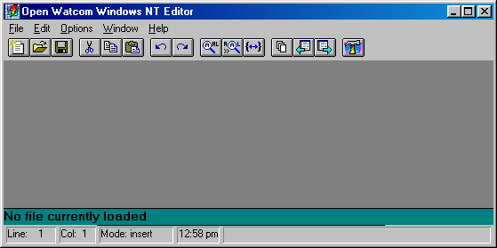
Figure 57. The Open Watcom Editor
Startup Options
When the Editor is started under Windows, a set of default options are used. To find out what options are available,
modify the "Command Line:" of Program Item Properties dialog by adding "-?" after the program
name and then start the Editor. Alternatively, you can use the Program Manager Run dialogue to start
the Editor, specifying "-?" after the program name.
The Editor follows standard Windows conventions for its menus. A brief description of each menu item appears in
the status bar on the bottom right of the screen when you select it.
The File and Edit menus contain items standard to most Windows applications.
Using Drag and Drop Palettes
The Editor contains two drag and drop palettes. You can affect elements of the Editor by dragging and dropping colors
or fonts onto them.
The Editor has two context-sensitive menus- one for the current cursor location if less than one line is selected, and
one if several lines are selected. You can access both of them by clicking on the right mouse button.
When Less Than One Line is Selected
When the cursor is in a word or a word is selected you can press the right mouse button to select the following options:
- Windows Help
- Choose Windows Help to find information about the currently selected text.
CLib Help
- Choose CLib Help to find information from the C Library Reference manual about the currently selected text.
Open
- Choose Open to open a new file. The name of the new file is the selected text.
Cut
- Choose Cut to delete the selected text and place it on the Windows clipboard.
Copy
- Choose Copy to copy the selected text to the Windows clipboard and leave the original.
Find
- Choose Find to look for the first occurrence of the selected text. The Find dialog appears.
Fgrep
- Choose Fgrep to find all files in the current directory which match the grep default mask and contain the selected text.
Tag
- Choose Tag to look for a tag whose name is the selected text.
When More Than One Line is Selected
When several lines are selected, press the right mouse button to select the following options:
- Cut
- Choose Cut to delete the selected lines and place them on the Windows clipboard.
Copy
- Choose Copy to copy the selected lines to the Windows clipboard and leave the original lines.
>>Shift Right
- Choose Shift Right to move the selected lines right by a number of spaces equal to the shift width setting.
<<Shift Left
- Choose Shift Left to move the selected lines left by a number of spaces equal to the shift width setting.
Starting and Quitting the Editor
You can start the Editor from within the Open Watcom IDE or through Windows.
To open the Editor from within the Open Watcom IDE, double click on a source module. To start the Editor from
Windows, double click on the Open Watcom Editor icon.
To leave the Editor, choose Exit from the File menu.
Opening and Closing Files
There are three items that you can select from the File menu to open and close files:
- New
- Open a new file.
Open
- Open an existing file.
Close
- Close an open file.
Opening a New File
- (1)
- Start the Editor.
(2)
- Choose New from the File menu.
An empty text window appears.
Opening an Existing File
- (1)
- Start the Editor.
(2)
- Choose Open from the File menu.
The standard Windows Open dialog appears.
(3)
- Choose the file and click on OK.
You may have to change the current drive and directory to find the file. The file then opens.
Closing a File
To close a file, choose Close from the File menu.
You can also close any open file by choosing File List from the File menu. You can then select the file from
the list of open files and click on the Close button.
Saving Files
There are three items that you can select from the File menu to save files:
- Save
- Save the changes made to the current file.
Save As...
- Save the current file under a different name. This is the standard Windows Save As... dialog. When you save
the current file with a new name, only the new file remains open.
Save All
- Save the changes made to all open files.
In the Open Watcom Editor window, the toolbar appears below the menu bar when the Toggle Toolbar in the Options menu is
selected (default). A check mark beside the menu option indicates that it is enabled. To disable this feature,
choose the option again from the Options menu and the toolbar disappears.

Figure 58. You can access up to 15 Editor functions from the toolbar.
The following explains the function each icon performs, as well as the equivalent function on the menu bar.
- New
 Open a new file. This is equivalent to New in the File menu.
Open a new file. This is equivalent to New in the File menu.
Open
 Open a new or existing file. This is equivalent to Open in the File menu.
Open a new or existing file. This is equivalent to Open in the File menu.
Save
- Save the current file. This is equivalent to Save in the File menu.
Cut
- Delete the selected text to the clipboard. This is equivalent to Cut in the Edit menu.
Copy
- Copy the selected text to the clipboard. This is equivalent to Copy in the Edit menu.
Paste
- Insert the clipboard contents at the current cursor position. This is equivalent to Paste in the
Edit menu.
Undo
 Undo the last change to the current file. This is equivalent to Undo in the Edit menu.
Undo the last change to the current file. This is equivalent to Undo in the Edit menu.
Redo
- Undo the last undo. This is equivalent to Redo in the Edit menu.
Find
- Search for the specified text. This is equivalent to Find in the Edit menu.
Find Next
 Repeat the last search. This is equivalent to Find Next in the Edit menu.
Repeat the last search. This is equivalent to Find Next in the Edit menu.
Match
 Find matching brackets from the current cursor position.
Find matching brackets from the current cursor position.
File List
 Display a list of all files being edited. This is equivalent to File List in the File menu.
Display a list of all files being edited. This is equivalent to File List in the File menu.
Previous File
- Switch to the previous file.
Next File
- Switch to the next file.
IDE
- Reactivate the IDE. This icon is present on the toolbar if the Editor was invoked from the IDE.
Searching Text
The Editor has a powerful search function that you can use to locate strings of text, including regular expressions.
For more information on regular expressions, refer to the chapter entitled Regular Expressions.
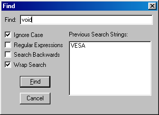
Figure 59. The Find Dialog
To search for a string of text:
- (1)
- Choose Find from the Edit menu.
The cursor flashes in the Find box.
(2)
- Enter the search string in the Find box.
(3)
- Set the find options.
(4)
- Click on the Find button.
When the search is successful, you are repositioned to the line containing the string.
You can use Find Next and Find Previous in the Edit menu to repeat a search for the same string.
Setting Search Options
The Find dialog contains a number of default options that you can set in the General... dialog of the Options
menu. You can change the default settings for the current session in the Find dialog.
You can set the following options:
- Ignore Case
- You can have the search match the case exactly or match the characters only and ignore the case.
Regular Expressions
- You can use regular expressions in your "Find" text if you check this box.
Search Backwards
- By default, a search is conducted through the lines that follow the current cursor position. Select this option if you
wish to search backwards from the current cursor position.
Wrap Search
- By default, the search ends when it reaches the end of the file. However, if your search begins in the middle of the
file and you want to search through the whole file, you can set the search to go to the beginning of the file and continue
until it reaches the search starting point.
Replacing Text
The Editor has a powerful search and replace function that you can use to replace strings of text, including regular expressions.
For more information on regular expressions, refer to the chapter entitled Regular Expressions.
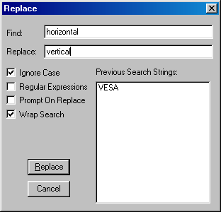
Figure 60. The Replace Dialog
To search and replace a string of text:
- (1)
- Choose Replace from the Edit menu.
The cursor flashes in the Find box.
(2)
- Enter the search string in the Find box.
(3)
- Press Tab.
The cursor moves to the Replace box.
(4)
- Enter the replace string.
(5)
- Set the replace options.
(6)
- Click on the Replace button.
When the replace is complete, you return to the file.
If the Prompt on Replace option is turned on, you must confirm each replacement. If it is off, all occurrences
of the string are replaced automatically.
Setting Search and Replace Options
The Replace dialog contains a number of default options that you can set in the General... dialog of the
Options menu. You can change the default settings for the current session in the Replace dialog.
You can set the following options:
- Ignore Case
- You can have the search match the case exactly or match the characters only and ignore the case.
Regular Expressions
- You can use regular expressions in your "Find" and "Replace" text if you check this box.
Prompt on Replace
- By default, all found strings are replaced with the replace string. Turn this option on to be prompted for each replacement.
Wrap Search
- By default, the search ends when it reaches the end of the file. However, if your search begins in the middle of the
file and you want to search through the whole file, you can set the search to go to the beginning of the file and continue
until it reaches the search starting point.
Changing the Font
You can define the font for the message window, status window, and all syntax elements in the edit buffers.
Within the edit buffer, all fonts must be the same typeface and point size. Other areas, such as message or
status windows, can have any typeface or point size.

Figure 61. The Font Settings Dialog
You can use the drag and drop feature with the Font dialog. To use drag and drop:
- (1)
- Choose Fonts from the Options menu.
(2)
- Choose the typeface, style, and point size that you want. A sample of the text appears in the Drag and Drop
box.
(3)
- Click in the drag and drop box and drag the cursor to the element to which you want to apply the font characteristics.
All elements change to the new font style. All buffers are affected when you change one.
Changing Colors
Use the Colors drag and drop palette to set the color of your windows and code. You can define the color of the
toolbar, message window, status window, and all syntax elements in the edit buffers.

Figure 62. The Colors Palette
To change the color of an element in your file:
- (1)
- Choose Colors from the Options menu.
(2)
- Click on the color you want and drag it to the screen or syntax element to which you want to apply the color The element
is changed to the new color
Use the left mouse button to color foreground elements and the right mouse button to color background elements.
Press Control and the right mouse button to affect the color of all backgrounds. Press Control and the left
mouse button to affect all foregrounds.
Accessing Help
A description of the currently selected option appears in the Status bar on the bottom right of the screen.
You can also choose items from the Help menu to see more information about an item.
Using Fgrep Capabilities
Fgrep stands for File Global Regular Expression and Print. It is a powerful tool that allows you to search
through a number of files to find all occurrences of a regular expression.

Figure 63. The Fgrep Dialog permits you to search files containing a certain string.
To perform an fgrep:
- (1)
- Choose Fgrep from the Edit menu.
A dialog appears.
(2)
- Enter the text you want to search for.
(3)
- Select any options you want to use during the search.
(4)
- Click on OK.
You can set the default "fgrep" file extensions in the File Specific... dialog of the Options menu.
For a description of the options, refer to the section entitled File Specific Options.
The Files Containing dialog shows the name of all files that contain the string as well as the beginning of
the line that contains the string.

Figure 64. The Files Containing Dialog shows you all files with occurrences of a string.
From the Fgrep dialog you can:
- Edit
- Select an individual occurrence and open that file. The file opens in the background, but the Fgrep dialog remains.
Goto
- Open the selected file for editing at the first occurrence of the search pattern in the Fgrep dialog.
Get All
- Open all found files. The files open, with the last one in the list the currently open file.
Cancel
- Leave the Fgrep dialog.
Configuring the Editor
The Options menu items contain all of the control and formatting options available with the Editor. You can configure
the Editor as you like. Most options apply to the Editor, but some apply only to the current file. A description
of each of the dialogs follows.
Status Bar Contents
Use the Status Bar Contents dialog to set the contents of the status bar.

Figure 65. The Status Bar Contents dialog
The options in the Status Bar Contents dialog are divided into three areas:
Status Bar Contents : Items
The items in this area are:
- Time of day
- Current date
- Current insertion mode
- Line number
- Column number
- Menu help text
Any of these items may be dragged to one of the windows in the status bar. When an item is dragged to one of these
windows, it replaces the contents of that window. For example, you can drag the "Date" item into the status
bar window displaying the current line number and the current date will be displayed in its place.

Figure 66. The Status Bar consists of several small windows
Status Bar Contents : Alignment
The items in this area are:
- Left aligned
- Center aligned
- Right aligned
When any of these items are dragged to a window in the status bar, it affects the alignment of the item currently displayed
in the window. For example, you can drag the "Center aligned" item (the middle one) into the status bar window
displaying the current time and the current time will be centered in the window.
Status Bar Contents : Commands
The items in this area are:
When the "split" item is dragged to a window in the status bar, the window is split into two evenly-sized smaller
windows. You can adjust the size of a window by dragging the bar between two windows to the left or right.
When the "clump" item is dragged to a window in the status bar, the window is removed from the status bar.
When the "defaults" item is dragged to any place on the status bar, the default settings for the status
bar are re-established.
General Options
Use the General Options dialog to set the general features of the Editor including save, search, and word definitions.
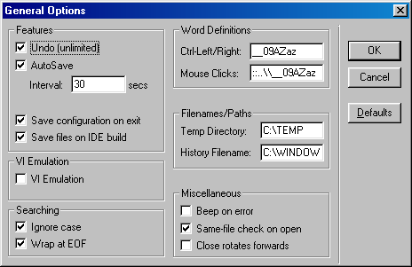
Figure 67. The General Options Dialog
The options in the General Options dialog are divided into six categories:
- Features
- VI Emulation
- Searching
- Word Definitions
- Filenames/Paths
- Miscellaneous
General Options : Features
The Features section allow you to set options such as undo, autosave, automatic save of configuration, and save of files
upon IDE build.
- Undo
- Turn this option on to allow an unlimited number of undo's.
AutoSave
- Enable or disable the autosave option. This option allows you to determine how often a copy of your file is saved to
the Temp Directory. Enter the time in seconds in the Interval box.
Save configuration on exit
- Turn this option on if you want the Editor to save the current configuration when you leave the Editor.
Save files on IDE build
- Turn this option on if you want the Editor to be notified whenever you start an IDE make. It will cause the Editor to
prompt you for each file that was modified and has not been saved to disk since the last make (build).
General Options : VI Emulation
Beneath the Editor's mild-mannered exterior lurks the full power of the Open Watcom VI editor, complete with scripting,
commands and bookmarks. Turning on VI emulation causes the Editor to emulate the behaviour of the Open Watcom VI editor.
General Options : Searching
Use the Searching options dialog to set the default search and replace options.
- Ignore case
- Turn this option on if you do not want the Search function to match case when searching for a string.
Wrap at EOF
- Turn this option on if you want the search to continue at the beginning of the file when it reaches the end of the file.
It will then continue to the starting point of the search.
General Options : Word Definitions
Use the Word Definition options to define pairs or ranges that are considered valid parts of a word. The default
for Ctrl-Left/Right is __09AZaz which defines the underscore character, all numbers, and all upper and lower case letters.
The default for mouse clicks is ::..\__09AZaz which defines the colon, period, backslash, and underscore characters
as well as all numbers, and upper and lower case letters.
General Options : Filenames/Paths
Use the Filenames/Paths option to define the default directory to which the Editor writes temporary files and the Editor's
history file.
The Temp Directory is set, by default, from the TMPDIR environment variable if it is defined.
Autosave files are written to the Temp Directory.
General Options : Miscellaneous
Use the miscellaneous options to set:
- Beep on error
- Turn this option on if you want an audible beep to sound when the Editor encounters an error.
Same-file check on open
- Use this option to have the Editor check that a file you are opening is not already open. You can open multiple copies
of the same file, however, the Editor keeps only the last version of the file saved. To open multiple copies of the
same file, you must specify different paths.
Close rotates forward
- Turn this option on if you want the Editor to rotate forward through the open files when you close the current file.
File Specific Options
The File Specific Options dialog contains settings that control your file including tabs, tags, line numbers, and default
file extensions.

Figure 68. The File Specific Options Dialog
The settings are divided into five categories:
- Source
- Language
- Tabs
- Tags
- Miscellaneous
File Specific Options : Source
The source section contains a number of options that allow you to control your source code.
- Read entire file
- Turn this on if you want the Editor to read the entire file when it opens a new file. Turn this option off if you want
the Editor to load small pieces of the file as needed.
Check read-only flag
- Turn this option on if you want files that you open to be read only. You cannot change or write the files under the
same name.
Ignore Ctrl-Z
- Turn this option on if you want the Editor to ignore Ctrl-Z as the end of file marker.
CRLF Autodetect
- Turn this option on if you want the Editor to detect if the file it is opening has CR and LF at the end of each line.
If it does, it will write the file in the same format.
Write CRLFs
- Turn this option on if you want both a CR and an LF at the end of each line. This is the standard format for DOS files.
Use eight-bit characters
- Turn this option on if you want to edit the IBM extended characters, such as line drawing. If this option is off, you
can edit normal text only.
File Specific Options : Language
The Editor allows you to highlight different parts of the syntax for the language you are using. This allows you
to easily find the parts of code you are looking for because they are different colors and/or fonts. The Editor highlights
lexical elements for C, C++, Fortran, Java and JavaScript, and HTML code (among others).
The Language section also allows you to turn on C Indent Assist. The Editor then uses common C formatting conventions
such as smart indenting and outdenting with braces.
File Specific Options : Tabs
Use the tab options to define what the tab key does and the tab amounts.
- Tab amount
- Set the tab width if real tabs has not been set. Tab amount specifies the number of spaces indented by tab key.
Shiftwidth
- Set the shiftwidth value. The default is four characters.
Real Tabs
- Turn Real Tabs on to use the ASCII tab character instead of spaces when you press TAB. Turn this option off to have
tabs replaced with the appropriate number of spaces.
Hard Tabs
- Set the width of hard tabs. The default is eight characters.
Autoindent
- Turn on the Autoindent feature. Each new line then indents to the same level as the previous line.
Use the Tags options to control the file that contains the list of code items in your source files.
- Tag File
- Enter the name of the tag file that contains your ctags.
Ignore Case
- Turn this option on, if you want the tag file to ignore the case of tags.
Prompt on multiple tags
- Turn this option on, if you want to be prompted when you tag a function that has multiple entries in the tags file.
Tag files are created by the CTAGS utility, which is described in the Open Watcom VI editor documentation.
File Specific Options : Miscellaneous
Use the Miscellaneous options to define the default file extensions for Editor files and to show matching brackets.
- Grep extensions
- Define the default file extension to grep when you choose fgrep from the right mouse button pop-up menu.
Show matching brackets
- Turn this option on for the cursor to flash to the opening brace when you type the closing brace.
Screen/Window Options
Use the Screen and Window Options dialog to define how you move around your screen and what appears on it.

Figure 69. The Screen/Window Options Dialog
Screen/Window Options : Editing
The Editing section allows you to to define how the text moves around the screen.
- Jumpy Scrolling
- Turn this option on to scroll two lines at a time instead of one.
Line-based Selection
- Turn this option on to select a whole line no matter where you are in the line when you select more than one line. You
can still however, select part of one line. If this option is off, you can select any part of the first and last line
in the block of lines you select.
Paging
- Enter the number of lines that you want to overlap when you use the Page Up and Page Down keys.
Screen/Window Options : Miscellaneous
The Miscellaneous options allow you to set the following:
- Enter your own string to appear at the end of the file. For example, you may want the word END to appear
at the end of the file.
- Save the Editor's screen position when you exit the file.
- Clear messages after the next key is pressed instead of having them remain until the next error message occurs.
Saving the Configuration
The Save Configuration menu item will save your current configuration regardless of the status of the "Save configuration
on exit" setting. The configuration information is saved to a weditor.ini file either in the user's home
directory (on multi-user systems) or in the Windows system directory.
Regular Expressions
Regular expressions are a powerful method of matching strings in your text. Commands that use regular expressions
are:
- forward slash (/) command mode key (search forwards)
- question mark (?) command mode key (search backwards)
- forward slash (/) command line address (search forwards)
- question mark (?) command line address (search backwards)
- substitute command line command
- global command line command
- egrep command line command
- match command line command
Different characters in a regular expression match different things. A list of all special (or "magical")
characters is:
- A backslash (\) followed by a single character other than new line matches that character
- The caret (^) matches the beginning of a line
- The dollar sign ($) matches the end of a line
- The dot (.) matches any character
- A single character that does not have any other special meaning matches that character
- A string enclosed in brackets [] matches any single character from the string. Ranges of ASCII character
codes may be abbreviated as in a "a-z0-9". A ] may occur only as the first character of the string.
You must place a literal - where it cannot be mistaken as a range indicator. If a caret (^) occurs as the first character
inside the brackets, then any characters NOT in the string are matched
- A regular expression followed by an asterisk (*) matches a sequence of 0 or more matches of the regular expression
- A regular expression followed by a plus sign (+) matches one or more matches of the regular expression
- A regular expression followed by a question mark (?) matches zero or one matches of the regular expression
- Two regular expressions concatenated match a match of the first followed by a match of the second
- Two regular expressions separated by an or bar (|) match either a match for the first or a match for the second
- A regular expression enclosed in parentheses matches a match for the regular expression
- The order of precedence of operators at the same parenthesis level is the following: {}, then *+?, then concatenation,
then /.
- All regular expressions following an at sign (@) are treated as case sensitive
- All regular expressions following a tilde (~) are to be treated as case insensitive
- If an exclamation point (!) occurs as the first character in a regular expression, it causes the ignoring of the
magic setting; that is, all magic characters are treated as magical. An exclamation point (!) is treated as
a regular character if it occurs anywhere but at the very start of the regular expression.
If a regular expression could match two different parts of the line, it will match the earliest one. If both begin
in the same place, but match different lengths, or match the same length in different ways, then the rules are more complicated.
In general, the possibilities in a list of branches are considered from left to right, the possibilities for *, +,
and ? are considered longest first, nested constructs are considered from the outermost in, and concatenated constructs
are considered leftmost first. The match that is chosen is the one that uses the earliest possibility in the first
choice that has to be made. If there is more than one choice, the next will be made in the same manner (earliest possibility)
subject to the decision on the first choice. An so forth.
For example, (ab|a)b*c could batch the string abc in one of two ways. The first choice is between
ab and a. Since ab is earlier in the expression and does lead to a successful overall match, it is chosen.
Since the b is already spoken for, the b* must match its last possibility since it must respect the earlier
choice.
If there are no |'s present and only one *m, +, or ?, the net effect is that the longest possible match will be chosen.
So ab presented with xabbbby, will match abbbbb. Note that is ab* is tried against xabyabbbz,
it will match ab just after x, due to the begins earliest rule.
Regular Expression BNF
A pseudo-BNF for regular expressions is:
- reg-exp
- {branch}|{branch}|...
branch
- {piece}{piece}...
piece
- {atom{* or + or ?}}{atom {* or + or ?}}... *-match 0 or more of the atom; +-match 1 or more of the atom; ?-match a match
of the atom, or the null string.
atom
- (reg-exp) or range or @ or ^ or $ or \char or char.
range
- [{^} char and/or charlo-charhi]. ^ causes negation of range.
.
- Match any character.
^
- Match start of line.
$
- Match end of line.
@
- Search with case sensitivity.
~
- Search without case sensitivity.
!
- If it occurs as the first character in a regular expression, the magic setting is ignored; that is, all magic characters are
treated as magical. ! is treated as a regular character if it occurs anywhere but at the very start of the regular
expression.
char
- Any character.
\char
- Forces \char to be accepted as char (no special meaning) except \t matches a tab character if realtabs is set.
File Matching Regular Expressions
When specifying a file name in the Editor, it is possible to use a file matching regular expression. This expression
is similar to a regular expression, but has a couple of differences:
- A dot (.) specifies an actual dot in the file name.
- An asterisk (*) is the same as .* (matches 0 or more characters).
- A question mark (?) is the same as a regular expression dot (.); that is, a question mark matches exactly one character.
- A caret (^) has no meaning.
- A dollar sign ($) has no meaning.
- The backslash (\) has no meaning. It is used to separate directories.
Suppose we have the following list of files:
a.c
abc.c
abc
bcd.c
bad
xyz.c
The following examples show how the files from the above list are matched by various file name regular expressions.
- a*.c
- All files that start with a and end in .c. Therefore, it matches a.c and abc.c
(a|b)*.c
- All files that start with an a or a b and end in .c. Therefore, it matches a.c, abc.c, and bcd.c
*d.c
- All files that end in d.c. Therefore, it matches bcd.c
*
- All files.
*.*
- All files that have a dot in them. Therefore, it matches a.c, abc.c, bcd.c, xyz.c
Replacement Strings
There are special characters to use in the replacement string if you use regular expressions in the search and replace
function.
- &
- Replace each instance of & in the replacement string with the entire string of matched characters
\\
- Enter a \ in the replacement string
\n
- Replace with a new line
\t
- Replace with a tab (if realtabs is set)
\<n>
- Replace each instance of < n >, where < n > is a digit from 0 to 9, with the n'th sub-expression
in the regular expression
\u
- Change the next item in the replacement string to upper case
\l
- Change the next item in the replacement string to lower case
\U
- Change all items following \U in the replacement string with upper case, until \e, or \E is encountered
\L
- Change all items following \L in the replacement string with lower case, until \e, or \E is encountered
\e, \E
- End the change to upper (\U) or lower case (\L)
\|<n>
- Substitute spaces up to column <n>, so that the item that follows occurs at column <n>
\#
- Substitute the current line number on which the match occurred.
Controlling Magic Characters
By default, all special characters in a regular expression are magical; that is, if a special character is used, it has
a special meaning. To use a special character, like (, you must escape it (\().
However, it is possible to change this using the magic setting in the General Options dialog.
If magic is turned on, then all special characters are magical. If magic is turned off,
then any special characters listed in Magic String Edit Control in the General Options dialog lose their special meaning
and are treated as regular characters. If magic is turned off and you want to use the characters in their
magical way, you must escape them with a \.
The Open Watcom Resource Editor
The Open Watcom Resource Editor is a full-featured editor that enables you to easily create and edit resources and
the files that contain them. A file containing one or more resources will generally be referred to as a resource file.
A resource file may be an executable (.EXE), resource file (.RES), dynamic link library (.DLL), bitmap file (.BMP),
cursor file (.CUR), or icon file (.ICO). The editor also supports a variety of resource scripts. They include
dialog (.DLG), accelerator (.ACC), menu (.MNU), and string (.STR) scripts. This support is accomplished by maintaining
a synchronized resource file (.RES) in the same directory as the resource script. Opening a resource file reveals a
Resource window in the Resource Editor window. This window is a visual representation of the resource file.
A resource is a piece of data with a specific format that Windows uses to create the visual and interactive elements
of your application. Most of the visual aspects of Windows applications are the result of the application having resources,
all of which can be created using the Open Watcom Resource Editor. Use the Resource Editor to create and edit the following
resource types:
- Accelerators
- Bitmaps
- Cursors
- Dialogs
- Icons
- Menus
- Strings
When designing your application's user interface, the resources are separate from the application's source code.
This makes changing the user interface a simple task. Instead of accessing the application's source code, you can make
the changes directly to the resources. You can manipulate some aspects of the resources, such as the memory flags and
resource names, without invoking the resource's associated editor. Invoking the desired editor from the Resource Editor
enables you to change all aspects of the selected resource.
Different applications often use the same or similar resources, such as bitmaps, icons, dialogs, and menus.
The Resource Editor enables you to create resource files for a new application by reusing existing resources. Copying
a resource from existing applications into the new resource file makes the task of creating your user interface quick and
simple.
Using the Open Watcom Resource Editor
This section discusses the following topics:
- Starting the Resource Editor
- Quitting the Resource Editor
- The Resource Editor Menu Bar
- The Resource Editor Toolbar
Starting the Resource Editor
To start the Resource Editor, double click on the Resource Editor icon in your Windows Program Manager. The Open
Watcom Resource Editor window opens.

Figure 70. The Open Watcom Resource Editor window acts as a workspace where you work with
resources.
Quitting the Resource Editor
To exit the Resource Editor, choose Exit from the File menu of the Open Watcom Resource Editor window. If you made
changes to the current file, a message box appears prompting you to save the changes. Select Yes to save the file and
exit the Resource Editor, No to exit the Resource editor without saving the file, or Cancel to return to the Resource editor.
Figure 71. As a safety feature, a message box appears when you select Exit from the File
menu without saving a modified resource file.
The menu bar consists of the following five menus:
- File
- Open a new or existing resource file, save the current resource file, and exit the Resource Editor
Edit
- Access the clipboard functions, delete the selected resource, and set the Resource Editor options
Resource
- Open a new resource and work with existing resources
Window
- Customize the Resource Editor workspace
Help
- Access on-line help information
To see the function of a menu item, hold the mouse button and drag the cursor over the desired menu item. A description
of the item appears in the status line at the bottom of the screen. If you do not want to select the menu item, drag
the cursor off of the menu item before releasing the mouse button.
In the Open Watcom Resource Editor window, the toolbar appears below the menu bar. When the toolbar is shown, choose
Hide Toolbar from the Window menu to hide it. When the toolbar is hidden, you can display it by choosing Show Toolbar
from the Window menu.

Figure 72. You can access six Resource Editor functions from the toolbar.
The following explains the function each toolbar button performs, as well as the equivalent menu item.
- CREATE
- Create a new resource file. This is equivalent to the New item in the File menu.
OPEN
- Open an existing resource file. This is equivalent to the Open item in the File menu.
SAVE
- Save the resource file. This is equivalent to the Save item in the File menu.
CUT
- Cut the selected resource to the clipboard. This is equivalent to the Cut item in the Edit menu.
COPY
- Copy the selected resource to the clipboard. This is equivalent to the Copy item in the Edit menu.
PASTE
- Paste the resource on the clipboard to the specified resource file. This is equivalent to the Paste item in the Edit
menu.
To see the function of an item in the toolbar, position your cursor over the desired button. A description of the
button's function appears in the status line at the bottom of the window.
Working with Resource Files
In the Open Watcom Resource Editor, the items in the File menu apply to resource file. These items enable you to
perform the following functions:
- Creating a New Resource File
- Opening an Existing Resource File
- Saving a Resource File
Creating a New Resource File with the Resource Editor
Create a new resource file each time you need a file to hold a collection of resources. You can create the resources
and add them to the new file or you can copy existing resources from another file and place them in the new file.
Figure 73. Choosing New opens an untitled and empty Resource window into which you can
store resources.
To create a new resource file, choose New from the File menu in the Open Watcom Resource Editor window. An untitled
and empty Resource dialog appears on the screen. From here, you can begin adding resources to the resource file.
You can also open an existing resource file and copy selected resources to the new file. The file remains untitled
until you save it and assign it a file name.
Opening an Existing Resource File with the Resource Editor
Open an existing resource file to view the resources for that file or perform functions on the file's resources.
Figure 74. Choosing Open permits you to access resources in an existing file.
- To open an existing resource file:
-
(1)
- Choose Open from the File menu in the Open Watcom Resource Editor window.
An Open File dialog appears where you select the file you want to open.
(2)
- Double click on the desired file
or
- Click on the desired file to select it, then click on OK.
The Open File dialog closes and a Resource dialog for the selected resource file appears in the Resource Editor window.
This dialog displays a button representing each type of resource that exists in the resource file. Clicking on
the resource buttons displays a list of the resources of that type in the resource file.
From here, you can perform any of the functions in the section entitled Working with Resources.
Saving a Resource File with the Resource Editor
There are two menu items that you can use to save resource files with the Resource Editor:
- Important:
- You can have several resource files open in the Resource Editor window at one time. The caption bar of the currently
selected resource file appears highlighted. Only this window is affected when you choose Save or Save As from the File
menu.
Resource Editor: Save
Choose Save from the File menu in the Open Watcom Resource Editor window to save any changes made to the resource
file.
If the file is new and previously unsaved, refer to the section entitled Resource Editor: Save As.
After modifying individual resources, you perform an update at the resource level. The resource file and its
resources are not saved until you select Save from File menu of the Resource Editor. The Resource Editor prompts you
if you attempt to exit the editor without saving changes. Choose Yes to save the file and exit the Resource Editor,
No to exit the Resource Editor without saving the file, or Cancel to return to the Resource Editor.
Resource Editor: Save As
- To save a resource file to another file:
-
(1)
- Choose Save As from the File menu in the Open Watcom Resource Editor window to save any changes made to the resource
file.
A Save File dialog appears where you specify the file to which you want to save the current resource file.
(2)
- Specify the file to which you are saving by selecting an existing file or entering the name of a new file.
(3)
- Click on OK when completed.

Figure 75. A Save File message box appears when you attempt to save the current resource
file to an existing file.
The dialog closes and the Resource Editor saves the resource file, returning you to the Resource Editor window.
- Note:
- If you attempt to save the current resource file to an existing file, a Save File window appears informing you that the selected
file already exists. Choosing Yes on this dialog overwrites the selected existing file with the contents of the current
resource file.
The dialog closes and the Resource Editor saves the resource file, returning you to the Resource Editor window.
The dialog closes and the Resource Editor saves the resource file, returning you to the Resource Editor window.
Working with Resources
The items in the Edit and Resource menus in the Open Watcom Resource Editor window enables you to perform functions on
resources within a resource file. To use these functions, a resource file must be open in the workspace. This
resource file can be empty or can contain existing resources. The functions you can perform are:
- Creating a New Resource
- Editing an Existing Resource
- Saving a Resource
- Using Shortcuts to Create a Resource
- Deleting a Resource
- Renaming a Resource
- Changing Memory and Load Options
Creating a New Resource
From the Open Watcom Resource Editor window, you can create any of the following resources:
- Accelerator
- Bitmap
- Cursor
- Dialog
- Icon
- Menu
- String
To create a new resource, choose the type of resource from the cascading menu that appears when you choose New from the
Resource Menu. The editor for the selected resource type appears on the screen on top of the Resource Editor window.
From here, create the desired resource, referring to the appropriate editor section in this guide for more information.
Editing an Existing Resource
From the Resource Editor window, you can select any resource within a resource file and edit it by opening the editor
with which the resource was created. This makes editing resources efficient as you have access to every resource in
a resource file and you can invoke the appropriate editor quickly.
- To edit an existing resource:
-
(1)
- Select the desired resource file on the Resource Editor window by selecting the appropriate Resource window.
This is the resource file whose resource you want to edit.
(2)
- Select the resource type by selecting on the appropriate line in the type listbox.
A list of all resources of the selected type for this resource file appears in the Resource listbox.
Figure 76. Each resource type contained in the resource file appears in the Types listbox.
(3)
- Double click on the resource you want to edit
or
- Select the desired resource, then choose Edit from the Resource menu
or
- Select the desired resource, then press ENTER.
The appropriate editor for the selected resource opens on top of the Resource Editor window. Use this editor to
make changes to the selected resource.
(4)
- Refer to the appropriate editor section in this guide for information on using the editor to edit the selected resource.
Saving a Resource
The Save As menu item in the Resource menu enables you to save a resource to a new or existing resource file. Saving
a resource to an existing resource file replaces the existing resources for that resource file with the resource you are
saving. You can save only one resource at a time with this function.
- (1)
- Select the desired resource.
You can select only one resource at a time and the selected resource appears highlighted. This is the resource you
want to save to another resource file.
(2)
- Choose Save As from the Resource menu.
A Save Resource dialog appears where you specify the resource file to which you are saving the selected resource.
(3)
- Specify the file to which you are saving by selecting an existing file or entering the name of a new file.
(4)
- Click on OK when completed.
How you proceed from here depends on whether you are saving the resource to a new or existing resource file.
Saving to a New Resource File
Once you enter the name of the new resource file to which you are saving the selected resource and click on OK in the
Save Resource dialog, the dialog closes.
Saving to an Existing Resource File
When you choose an existing file from the Save Resource dialog, a Save Resource message box appears on the screen.
This message box informs you that the selected file already exists and asks if you want to replace the existing file.

Figure 77. A Save File As message box appears when you attempt to save the current resource
file to an existing file.
- To cancel the save:
-
(1)
- Choose No
The Save Resource dialog reappears.
(2)
- Select another file to which you can save the selected resource
or
- Cancel the save function
The dialog closes and the Resource Editor returns you to the Resource Editor window.
- To replace the existing file:
-
(1)
- Choose Yes to replace the contents of the existing resource file with the selected resource.
The dialog closes and the Resource Editor saves the resource file, returning you to the Resource Editor window.
Copying Into an Existing Resource File
The Copy To function enables you to copy the selected resource into an existing resource file. This does not remove
the resource from its current resource file and it does not delete the resources in the existing resource file, as in the
Save As function.
- To copy a resource to another resource file:
-
(1)
- Select the desired resource.
The selected resource appears highlighted in the Resource window. This is the resource you want to copy to another
resource file. Copying a resource does not remove it from its current resource file.
(2)
- Choose Copy To from the Resource menu.
A Copy Resource Into File dialog appears where you select an existing resource file to which you want to copy the selected
resource.

Figure 78. In the Copy Resource Into File dialog, select the resource file to which you
want to copy the selected resource.
(3)
- Double click on the desired resource file
or
- Click on the desired resource file to select it, then click on OK.
The Resource Editor copies the resource to the selected resource file. The dialog closes and you return to the Open
Watcom Resource Editor window.
- Note:
- If the resource file to which you copied the selected resource is open on the Resource Editor window, the copied resource
will not appear. To view the updated resource file, simply open that resource file again. The copied resource
now appears in the Resource window for the resource file.
Using Shortcuts to Create a Resource
The Edit menu on the Open Watcom Resource Editor window contains some standard Windows items that you can use to quickly
create resources. The items are:
These items allow you to cut or copy selected resources from one resource file, then open a second resource file and paste
them into it. You can also paste them directly into the appropriate editor.
- Cut
-
(1)
- Select the resource you want to cut to the clipboard.
The selected resource appears highlighted in the Resource window.
(2)
- Choose Cut from the Edit menu of the Resource Editor window.
The Resource Editor removes the selected resource from the Resource window and places it on the clipboard.
Refer to Paste in this section for details on pasting information from the clipboard.
- Copy
-
(1)
- Select the resource you want to copy to the clipboard.
The selected resource appears highlighted in the Resource window.
(2)
- Choose Copy from the Edit menu of the Resource Editor window.
The Resource Editor copies the selected resource to the clipboard.
Refer to Paste in this section for details on pasting information from the clipboard.
- Paste
-
(1)
- Select the resource file in which you want to paste the resource that is currently on the clipboard.
(2)
- Choose Paste from the Edit menu of the Resource Editor window.
The Resource Editor places the resource from the clipboard into the current resource file in the Resource Editor window.
Deleting a Resource
The Delete item in the Edit menu enables you to quickly delete resources from a resource file.
- To delete an object from a resource file:
-
(1)
- Select the resource you want to delete from a resource file on the Resource Editor window.
The selected resource appears highlighted in the Resource window.
(2)
- Choose Delete from the Edit menu.
or
- Press the Delete key on the keyboard.
A Delete Resource dialog box appears displaying the name of the resource chosen to delete.
Figure 79. The Delete Resource dialog prompts you to verify that you want to delete the
resource indicated.
(3)
- Click on OK to delete the selected resource.
The Delete Resource dialog closes and the Resource Editor removes the selected dialog from the Resource window.
- Note:
- Choosing Cancel on the Delete Resource dialog cancels the deletion and returns you to the Resource Editor window.
Renaming a Resource
You can change the name of a resource from either the Resource Editor or from the editor in which the resource was created.
- To rename a resource:
-
(1)
- Select the resource you want to rename.
(2)
- Choose Rename from the Resource menu in the Open Watcom Resource Editor window.
A Rename Resource dialog appears containing two fields:

Figure 80. In the Rename Resource dialog, you enter the new name of the selected resource.
(3)
- Enter the new name for the resource in the New Name field.
(4)
- Click on OK to close the Rename Resource dialog.
The dialog closes and the new resource name appears in the Resource window. The Resource Editor automatically reorders
the resources into alphabetical order.
Resource Editor: Changing Memory Options
The Memory Flags item in the Resource menu of the Resource Editor window enables you to change the memory options for
the selected resource without opening the editor for that resource. These options indicate the memory type and loading
instructions for the resource.
- To set the memory options for a resource:
-
(1)
- Select the resource whose memory options you want to change.
(2)
- Choose Memory Flags from the Resource menu in the Open Watcom Resource Editor window.
The Memory Options dialog opens displaying the current memory options for the selected resource.
Figure 81. In the Memory Options dialog, you change the memory options for the selected
resource.
(3)
- Select the required flags in the Memory Options and Load Options sections of the dialog by clicking on the check box
or radio button beside the appropriate field.
Following is a description of each option.
- Moveable
- Selecting this option marks this resource to be stored in moveable memory when it is loaded by an application.
Discardable
- Selecting this option marks this resource to be stored in discardable memory when it is loaded by an application.
Pure
- When marked as Pure, Windows does not allow the memory into which the resource is loaded to be modified.
Preload
- All resources marked as Preload are loaded when the application for which the resource is created is loaded.
LoadOnCall
- Resources marked as LoadOnCall are loaded only when an application issues a call to load them.
The Open Watcom Accelerator Editor
The Accelerator Editor enables you to create and edit accelerator items so you can invoke menu items without using a mouse.
Accelerators define hot keys for menu items in your application. These enhance the user interface for more advanced
users of the application.
Accelerators are keyboard equivalents for menu items, such as Ctrl+S or F2. For example, many applications associate
the accelerator Ctrl+C with the Copy item in the Edit menu. The Windows Interface: An Application Design
Guide suggests some standard accelerators.
An accelerator item is made up of a key value, menu item identifier, and flags. These components define the
key combination the user presses to access the specified menu item. The Accelerator Editor stores the accelerator items
in an accelerator table. You can have multiple accelerator tables for a resource file.
The accelerator editor allows you to create new accelerators and edit existing accelerators without having to create
a resource script or use a resource compiler. Without the accelerator editor, you would have to use the resource compiler
to add accelerators to your applications.
Using the Accelerator Editor
This section discusses the following topics:
- Starting the Accelerator Editor
- Quitting the Accelerator Editor
- The Accelerator Editor Menu Bar
- The Accelerator Toolbar
Starting the Accelerator Editor
The Accelerator Editor may be invoked in one of two ways. The first involves first starting the Resource Editor
then starting the Accelerator Editor. The second way the editor may be started is from the Open Watcom IDE.
To start the Accelerator Editor from the Resource Editor, you must first open the Resource Editor. How you proceed
depends on whether you are opening a new (empty) accelerator table or an existing accelerator table.
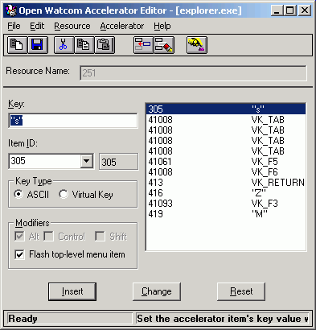
Figure 82. The Accelerator Editor window
Creating a New Accelerator Table
- To create a new accelerator table:
-
(1)
- Double click on the Resource Editor icon in your Windows Program Manager.
The Open Watcom Resource Editor window opens.
(2)
- Open a new or existing resource file.
(3)
- Choose Accelerator from the cascading menu that appears when you choose New from the Resouce menu.
The Open Watcom Accelerator Editor window opens and displays an empty accelerator item list.
Opening an Existing Accelerator Table
- To open an existing accelerator table:
-
(1)
- Double click on the Resource Editor icon in your Windows Program Manager.
The Open Watcom Resource Editor window opens.
(2)
- Open an existing resource file.
The Resource window for the existing resource file displays buttons representing each existing resource type.
(3)
- Select the accelerator table button to view the existing accelerator tables.
or
- Choose Accelerator from the cascading menu that appears when you choose View from the Resource menu.
The Accelerator Resources list appears revealing all accelerator tables in this resource file.
(4)
- Double click on the existing accelerator table you want to open.
or
- Click on the desired accelerator table to select it, then press ENTER
or
- Click on the desired accelerator table to select it and choose Edit from the Resource menu on the Open Watcom Resource
Editor window.
The Open Watcom Accelerator Editor window opens and displays the existing accelerator items for the selected accelerator
table.
Quitting the Accelerator Editor
To exit the Accelerator Editor, choose Exit from the File menu of the Open Watcom Accelerator Editor window.
If you made changes to accelerator items but did not save the information, a message box prompts you to save before
exiting. Choose Yes to save the changes and exit, No to exit without saving the changes, or Cancel to return to the
Open Watcom Resource Editor window.
When you exit the Accelerator Editor, the application remembers the directory in which you last opened or saved an
accelerator table (not the resource file). The next time you open an accelerator table, the last directory accessed
appears in the File Selection dialog so you do not have to reenter its path. This feature makes the Accelerator Editor
more convenient and efficient to use.

Figure 83. The Accelerator Editor menu bar
The menu bar consists of the following five menus:
- File
- Clear and save the accelerator table, and exit the Accelerator Editor
Edit
- Access the clipboard functions, hide or show the toolbar, and delete an accelerator item
Resource
- Rename the accelerator table and change its memory flags
Accelerator
- Insert and edit accelerator items
Help
- Access on-line help information
To see the function of an item on the menu bar or submenus, hold the mouse button and drag the cursor over the desired
menu item. A description of the item appears in the status line at the bottom of the screen. If you do not want
to select the menu item, drag the cursor off of the menu item before releasing the mouse button.
In the Open Watcom Accelerator Editor window, the toolbar appears below the menu bar. When the toolbar is shown
choose Hide Toolbar from the Edit menu to hide it. When the toolbar is hidden you can display it by choosing Show Toolbar
from the Edit menu.
Figure 84. The Accelerator Editor toolbar
The following explains the function each toolbar button performs, as well as the equivalent menu item.
- CLEAR
- Clear the accelerator table. This is equivalent to the Clear item in the File menu.
UPDATE
- Update the resource file with this accelerator table. This is equivalent to the Update item in the File menu.
CUT
- Cut the current accelerator table to the clipboard. This is equivalent to the Cut item in the Edit menu.
COPY
- Copy the current accelerator table to the clipboard. This is equivalent to the Copy item in the Edit menu.
PASTE
- Paste the accelerator table from the clipboard to the current accelerator table. This is equivalent to the Paste item
in the Edit menu.
INSERT
- Insert the new accelerator item into the accelerator table. This is equivalent to the Insert New Item item in the Accelerator
menu.
DELETE
- Delete the selected accelerator item from the accelerator table. This is equivalent to the Delete item in the Edit menu.
KEY VALUE
- Set the accelerator item's key value using the keyboard. This is equivalent to the Key Value item in the Accelerator
menu.
To see the function of a button on the toolbar, position your cursor over the desired icon. A description of the
button's function appears in the status line at the bottom of the window.
Using the Accelerator Editor Window
The Open Watcom Accelerator Editor window contains a menu bar, toolbar, and status line to help you create and edit accelerators.
The rest of the window, the workspace, is divided into four sections:
- Resource Name Field
- Attributes Area
- Accelerator Item List
- Action Buttons

Figure 85. The Accelerator Editor window contains a menu bar, toolbar, status line, and
workspace.
Accelerator Editor: Resource Name Field
The Resource Name field in the Open Watcom Accelerator Editor window contains the name of the accelerator table currently
being edited. A resource file can contain more than one accelerator table, so it is important that the resource names
for the accelerator tables be unique. The Resource Name field is not case sensitive and can hold up to 255 characters.
You can enter a textual name, a number or a symbol in this field.
When you create a new accelerator table, the Resource Editor assigns the default name ACCELERATOR_# to it, where #
is a decimal number starting at one and increasing for each new resource of that type opened. You can rename the accelerator
table using the Rename item in the Resource menu.
Accelerator Editor: Attributes Area
The attributes area provides information about the currently selected accelerator item. You can edit accelerator
items using only the fields in this area.

Figure 86. The Accelerator Editor attributes area
Accelerator item attributes are displayed in four sections. Following is an explanation of each section.
- Key
- The Key field contains the key value used to activate the menu item.
Menu Item ID
- The two Menu Item ID fields contain:
- the number of the menu item that is activated by the entry in the Key field.
- the symbol information for the selected menu item.
Key Type
- This section indicates if the key value is in ASCII or virtual key.
Modifiers
- An X appears in the check box for the modifiers that are part of the accelerator key value. The available modifier keys
are:
The option Flash Top-level Menu Item indicates that when the specified key value is used, the Accelerator Editor briefly
highlights the corresponding menu bar item.
Accelerator Editor: Accelerator Item List
The accelerator item list displays all of the accelerator items in the current accelerator table. Use this list
to view the attributes of the accelerator items. Select an accelerator item from the list by clicking on it.
Details of the selected accelerator item appear in the attributes area of the window.
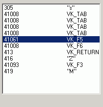
Figure 87. The Accelerator Editor item list
The action buttons control how the information in the attributes area is handled by the editor. The Insert button
will use the contents of the attributes area to create a new entry in the table. The Change button will use the contents
of the attributes area to modify the current entry in the table. The Reset button will discard the contents of the
attributes area and reset them to those of the current entry in the table. The Insert button is the default button
when the ENTER key is pressed and no other button has the focus.

Figure 88. The Accelerator Editor action buttons
Accelerator Functions
You can perform several functions with the Accelerator Editor. This section describes the following tasks:
- Adding a New Accelerator Item
- Changing an Existing Accelerator Item
- Deleting Accelerator Items
- Renaming an Accelerator Table
- Saving Accelerator Items
- Using Shortcuts to Create Accelerator Tables
- Changing Memory Options
Adding a New Accelerator Item
The steps for adding a new accelerator item to the accelerator table are the same, regardless of whether the accelerator
table is empty or already contains accelerator items.
- To add a new accelerator item:
-
(1)
- Position the cursor in the Key field.
(2)
- Enter the desired key value that will activate the menu item.
You can enter a single key, such as a letter or number, or a key sequence. A key sequence may be made up of a modifier
and a key, such as ^k for Ctrl+k.
(3)
- Enter a symbol or numeric identifier for the menu item that is activated by the entry in the Key field.
The symbol or numeric identifier you enter here is the identifier associated with the menu item. This relationship
is defined in the Menu Editor. If you do not know the desired menu item identifier, open the appropriate menu and look
up the identifier. It is not possible for the Accelerator Editor to get this information for you.
(4)
- Specify ASCII or Virtual Key in the Key Type section of the window.
- ASCII Keys
- When the Key Type specified is ASCII, keys you press appear as characters, such as a, B, 2, or $. In the
Key field, the ASCII characters are surrounded by quotation marks. For example, c appears as "c"
and Ctrl+C appears as "^C". When using ASCII characters as accelerators, you may combine them
with the Ctrl key to form key sequences, such as Ctrl+X or Ctrl+P. There is no symbol to represent the Shift key in
ASCII. Applying the Shift key with an ASCII character results in an upper case character in the Key field. For
example, Shift+d appears as "D".
Virtual Keys
- When the Key Type specified is Virtual Key, you enter the standard Windows identifier for the desired key. For example,
the Windows identifier for the Home key is VK_HOME. The header file WINDOWS.H defines these identifiers.
To avoid looking up these identifiers yourself, use the Key Value function explained in the section Editing the Key Value.
To specify whether the Alt, Ctrl, or Shift keys must be pressed with another key to form a key sequence, mark the appropriate
check box in the Modifiers section of the attributes area.
(5)
- Select the desired modifiers in the Modifiers section.
Modifiers are flags indicating keys that you must press in addition to the specified key value to activate the menu item.
When the ASCII option is selected, the Control and Shift modifiers are not available.
(6)
- Press the Insert action button
or
- Choose Insert New Item from the Accelerator menu.
or
- Select the Insert New Item button on the toolbar.
The Accelerator Editor adds the new accelerator item to the accelerator table. When accelerator items exist in the
accelerator table, one item is always selected. Choosing the Insert New Item menu item or button positions the new
accelerator item directly after the selected accelerator item in the list.
Changing an Existing Accelerator Item
You may want to change the key value or the menu item identifier associated with an accelerator item.
- To modify an existing accelerator item:
-
(1)
- Click the accelerator item you want to modify.
The selected accelerator item appears highlighted in the accelerator item list and the accelerator item details appear
in the attributes area of the window.
(2)
- Enter the new accelerator item details in the attributes area.
(3)
- Press the Change action button
These actions update the selected accelerator item with the modified accelerator item attributes.
Editing the Key Value
When editing only the key value of an accelerator item, use the Key Value function. With this function, the Accelerator
Editor looks up the correct virtual key value for the selected key and inserts it into the accelerator item list for you.
This is a quick way to make accelerator item changes, but it only applies to accelerator items whose key type is Virtual
Key.
- To use the Key Value function:
-
(1)
- Choose the accelerator table you want to work with from the Resource window on the Open Watcom Resource Editor window.
The Accelerator Editor window appears displaying all of the accelerator items for the selected accelerator table.
(2)
- Click on the accelerator item you want to modify.
The selected accelerator item appears highlighted in the accelerator table and the accelerator item details appear in
the attributes area of the window.
(3)
- Choose Select Key Value from the Accelerator menu
or
- Select the Key Value button on the toolbar.
The accelerator table disappears and instructions for using the Key Value function appear in its place.
(4)
- Press the desired key on the keyboard.
This is the key that you want to activate the menu item specified in the Menu Item field. The instructions disappear
from the window revealing the modified accelerator table. The updated accelerator item is still selected.
(5)
- Change modifiers, if required.
Deleting Accelerator Items
There are two functions you can use to delete accelerator items from the accelerator table:
The Delete item in the Edit menu deletes the selected accelerator item from the accelerator item list. You can delete
only one accelerator item at a time with this function.
The Clear item in the File menu deletes all accelerator items in the current accelerator table. This is a powerful
function and must be used carefully to avoid accidentally deleting all accelerator items.
Deleting an Accelerator Item
To delete accelerator items from the current accelerator table one at a time:
- (1)
- Select the accelerator item you want to delete from the accelerator item list by clicking on it.
The selected accelerator item is highlighted.
(2)
- Choose Delete from the Edit menu
or
- Select the Delete button from the toolbar.
The Accelerator Editor removes the selected item from the accelerator item list.
(3)
- Choose Update from the File menu to save the accelerator table changes.
Deleting All Accelerator Items
To delete all accelerator items in the current accelerator table:
- (1)
- Choose Clear from the File menu
or
- Select the Clear button from the toolbar.
A message box appears prompting you to verify that you want to clear all accelerator items from the current accelerator
table.
(2)
- Choose Yes or No to continue.
Choosing Yes removes all accelerator items from the current accelerator table. The accelerator item list is empty.
Choosing No cancels the operation.
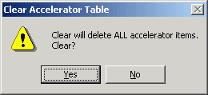
Figure 89. As a safety feature, a message box appears when you choose the Clear function.
Renaming an Accelerator Table
When you create an Accelerator Table, the Resource Editor assigns a default name to it. Assign a new name to the
accelerator table using the Rename function.
- To rename an accelerator table:
-
(1)
- Choose Rename from the Resource menu on the Open Watcom Accelerator Editor window.
or
- Double click or right click on the Resource Name field.
A Rename Resource dialog box appears containing two fields:

Figure 90. In the Rename Resource dialog, you enter the new name of the accelerator table.
(2)
- Enter the desired accelerator table name in the New Name field.
(3)
- Click on OK to close the Rename Resource dialog.
The dialog closes and the new accelerator table name appears in the Resource Name field.
Saving Accelerator Items
There are two functions you can use to save accelerator tables with the Accelerator Editor:
Each of these options performs a different type of save function. This section describes how to use each function.
Accelerator Editor: Update
After modifying an accelerator item in an accelerator table, choose Update from the File menu on the Accelerator Editor
window to save the updated accelerator table to the current resource file. This prevents the changes from being lost
when you exit the Accelerator Editor.
The Update function updates the resource file only at the resource level. The resource file is not saved until
you perform a save at the Resource Editor level as well. Exiting the Resource Editor without saving causes you to lose
the accelerator table changes made.
Accelerator Editor: Save As
Choose Save As from the File menu on the Accelerator Editor window to save the current accelerator table to another resource
file.
If you added any new symbol names (Item ID's), a Save Symbol Header File dialog appears which allows you to create
a new header file which includes the newly added symbol names.

Figure 91. On the Save Symbol Header File dialog, specify the header file to which you
want to save symbol ID's.
Afterwards, a Save Accelerator Table dialog appears where you specify the resource file to which you want to save
the current accelerator table.

Figure 92. On the Save Accelerator Table dialog, specify the resource file to which you
want to save the accelerator table.
- Important:
- If the resource file to which you are saving the accelerator table already contains resources, the existing resources will
be discarded and replaced with the accelerator table you are saving.
Accelerator Editor: Copy To
Choose Copy To from the Resource menu of the Accelerator Editor window to copy the current accelerator table into an existing
resource file.
If you added any new symbol names (Item ID's), a Save Symbol Header File dialog appears which allows you to create
a new header file which includes the newly added symbol names.
Figure 93. On the Save Symbol Header File dialog, specify the header file to which you
want to save symbol ID's.
Afterwards, a Copy To dialog appears where you specify the resource file to which you want to copy the current accelerator
table. Unlike the Save As function, copying an accelerator table to a resource file adds an entry to the list of resources
rather than replacing the existing resources with the new entry.
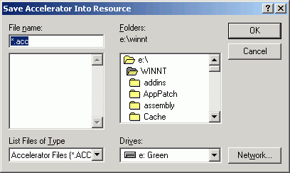
Figure 94. On the Copy To dialog, specify the resource file to which you want to copy the
accelerator table.
Using Shortcuts to Create Accelerator Tables
The Edit menu on the Open Watcom Accelerator Editor window contains some standard Windows options that you can use to
quickly create accelerator resources. The options are:
These options allow you to perform functions on accelerator tables but not on individual accelerators items.
- Cut
- Choose Cut from the Edit menu of the Accelerator Editor window to cut the accelerator item list from the current accelerator
table and place it on the clipboard.
Copy
- Choose Copy from the Edit menu of the Accelerator Editor window to copy the accelerator item list in the current accelerator
table to the clipboard.
Paste
- Choose Paste from the Edit menu of the Accelerator Editor window to copy the accelerator item list on the clipboard into the
current accelerator table.
Accelerator Editor: Changing Memory Options
The Memory Flags option allows you to change the selected memory options for the current accelerator table. These
options indicate the memory type and loading instructions.
- To set the flags for an accelerator table resource:
-
(1)
- Choose Memory Flags from the Resource menu of the Open Watcom Accelerator Editor window.
The Memory Options dialog opens displaying either the current or default memory options.

Figure 95. On the Memory Options dialog, you change the memory options for the accelerator
table.
(2)
- Select the required flags in the Memory Options and Load Options sections of the dialog by clicking on the check box
beside the field. Following is a description of each option.
- Moveable
- Selecting this option marks this accelerator table to be stored in moveable memory when it is loaded by an application.
Discardable
- Selecting this option marks this accelerator table to be stored in discardable memory when it is loaded by an application.
Pure
- When marked as Pure, Windows will not allow the memory that the accelerator table is loaded into to be modified.
Preload
- All accelerator tables marked as Preload will be loaded when the application for which you are creating the accelerator table
is loaded.
LoadOnCall
- Accelerator tables marked as LoadOnCall will only be loaded when an application issues a call to load them.
(3)
- Click on OK when all memory option selections are made.
The Memory Options dialog closes returning you to the Accelerator Editor window.
The Open Watcom Dialog Editor
Dialogs are windows that contain controls such as push buttons, check boxes, list boxes, and combo boxes. Dialogs
are the principle medium for the exchanging of information between the user and the application. You include dialogs
in your application to prompt the user for information, enable the user to change settings, and allow the user to make choices.
Dialogs provide the medium through which users and your application can communicate with each other.
The Open Watcom Dialog Editor enables you to create dialogs. With this editor you can design and test your dialogs
so you can see exactly how they will look and work in your application.
The Dialog Editor allows you to create a new dialog or modify an existing dialog. When you complete the dialog
you can save it as a resource script or binary resource file. You can also save your dialog directly to an .EXE or
.DLL file if you originally loaded that dialog from one of these files.
Using the Dialog Editor
This section discusses the following topics:
- Starting the Dialog Editor
- Quitting the Dialog Editor
- Saving a Resource File with the Dialog Editor
- The Dialog Editor Menu Bar
- The Dialog Editor Toolbar
Starting the Dialog Editor
The Dialog Editor is a stand-alone application, so you can invoke it without first starting the Resource Editor.
To start the Dialog Editor, double click on the Dialog Editor icon in your Windows Program Manager. An empty Open Watcom
Dialog Editor window opens. To create a dialog resource you must first open a resource file. You can either open
a new or existing resource file.
How you proceed depends on whether you are opening a new resource file or working with an existing resource file.
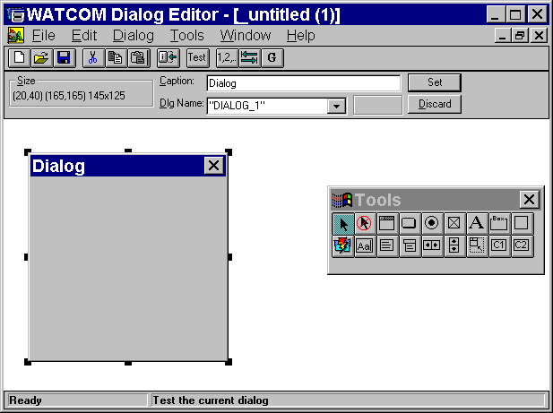
Figure 96. The Dialog Editor window
Opening a New Resource File with the Dialog Editor
Choose New from the File menu of the Open Watcom Dialog Editor window.
Default dialog information appears in the editor window of the Dialog Editor window. The Dialog Editor window
is ready for you to create a new dialog resource.
Opening an Existing Resource File with the Dialog Editor
- (1)
- Double click on the Dialog Editor icon.
The Open Watcom Dialog Editor window opens.
(2)
- Choose Open from the File menu.
An Open Dialog Resource dialog appears listing all resource files.
(3)
- Double click on the resource file you want to open
or
- Click on the resource file you want to open to select it, then click on OK.
A Select Dialog(s) dialog appears listing all of the dialog resources in the selected resource file. You can select
one, several, or all of the dialog resources in the resource file. All of the dialog resources you select will open
on the editor window of the Dialog Editor window.
(4)
- Double click on the dialog you want to open.
or
- Click on the dialogs you want to open to select them, then click on OK.
The selected dialog(s) appears in the Open Watcom Dialog Editor window in the editor window.
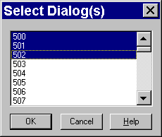
Figure 97. You can select one or more resources to edit
Quitting the Dialog Editor
To exit the Dialog Editor, choose Exit from the File menu of the Open Watcom Dialog Editor window.
When you exit the Dialog Editor, it remembers the size and position of its main window and the position of the toolbox.
It also remembers whether the toolbar and toolbox were hidden or not. The next time you open the Dialog Editor,
it will be set up the same way you left it. The Dialog Editor also remembers the directory in which you last opened
or saved a dialog. This feature makes the Dialog Editor more convenient and efficient to use.
Saving a Resource File with the Dialog Editor
There are two functions you can use to save resource files with the Dialog Editor:
- Important:
- You can have several resource files open in the Dialog Editor window at one time. The caption bar of the currently selected
resource file appears highlighted. Only this window is affected when you choose Save or Save As from the File menu.
- Note:
- Save operations will always create a file containing the dialog script(s) (.DLG) and a resource file (.RES).
Dialog Editor: Save
Choose Save from the File menu in the Open Watcom Dialog Editor window to save any changes made to the resource
file.
After modifying individual dialog resources, you perform an update at the resource level (the Save item in the Dialog
menu). The resource file is not saved until you perform a save at the editor level as well, using the Save function.
The Dialog Editor prompts you if you attempt to exit the editor without saving changes. Choose Yes, No, or Cancel
to continue.
Dialog Editor: Save As
- (1)
- Choose Save As from the File menu in the Open Watcom Dialog Editor window to save any changes made to the resource
file.
A Save Resource dialog appears where you specify the file to which you want to save the current resource file.
(2)
- Specify the file to which you are saving by selecting an existing file or entering the name of a new file.
- Note:
- If you attempt to save the current resource file to an existing resource file, a Save Resource message box appears informing
you that the selected file already exists. Choosing Yes on this dialog overwrites the selected existing resource file
with the contents of the current resource file. Choosing No returns you to the Save Resource dialog.
(3)
- Click on OK when completed.
The dialog closes and the editor saves the resource file, returning you to the Dialog Editor window.
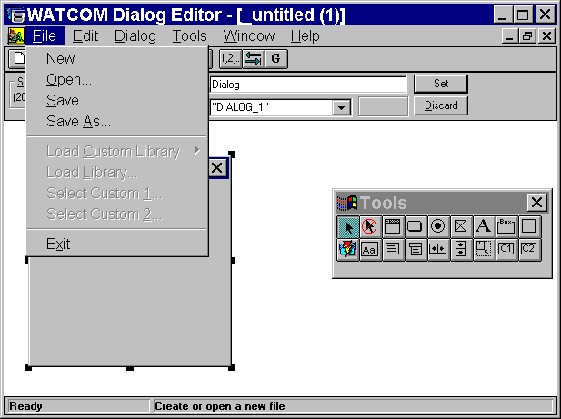
Figure 98. The Dialog Editor menu bar
The menu bar consists of the following five menus:
- File
- Open and save resource file, load libraries, select custom controls, work with symbols, and exit the editor
Edit
- Access the clipboard functions, align and size the dialog controls, configure the dialog, and delete dialogs
Dialog
- Test, revert, and save the dialog, create a new dialog, copy the dialog to another resource file, and set the order, tabs,
and groups for dialog controls
Tools
- Select the desired tools to use to create the dialog
Window
- Manipulate child windows, arrange icons, and hide/show the toolbox and toolbar
Help
- Access the on-line help information
To see the function of an item in the menu bar or submenus, hold the mouse button and drag the cursor over the desired
menu item. A description of the item appears in the status line at the bottom of the screen. If you do not want
to select the menu item, drag the cursor off of the menu item before releasing the mouse button.
In the Open Watcom Dialog Editor window, the toolbar appears below the menu bar when the Show Toolbar item in the Window
menu is enabled. Once enabled, the menu item changes to Hide Toolbar. To disable this feature, choose Hide Toolbar
from the File menu and the Toolbar disappears.
Figure 99. The Dialog Editor Toolbar
The following explains the function each icon performs, as well as the equivalent function in the menu bar.
- Create
- Create a new resource file. This is equivalent to the item New in the File menu.
Open
- Open an existing resource file. This is equivalent to the item Open in the File menu.
Save
- Save the current resource file. This is equivalent to the item Save in the File menu.
Cut
- Cut the selected object(s) to the clipboard. This is equivalent to the item Cut in the Edit menu.
Copy
- Copy the selected object(s) to the clipboard. This is equivalent to the item Copy in the Edit menu.
Paste
- Paste the object(s) on the clipboard to the current resource file. This is equivalent to the item Paste in the Edit
menu.
Size
- Size the selected control to the text within it. This is equivalent to the item Size to Text in the Edit menu.
Test
- Test the current dialog. This is equivalent to the item Test Mode in the Dialog menu.
Order
- Order the controls in the current dialog. This is equivalent to the item Set Order in the Dialog menu.
Set Tab
- Set tab stops in the current dialog. This is equivalent to the item Set Tabs in the Dialog menu.
Set Groups
- Set groups in the current dialog. This is equivalent to the item Set Groups in the Dialog menu.
To see the function of an item in the toolbar, position your cursor over the desired icon. A description of the
button's function appears in the status line at the bottom of the window.
The toolbox allows you to conveniently select the tool you want, without having to access it through the Tools menu.
Each toolbox button represents an option in the Tools menu. Moving the cursor over the toolbox buttons displays the
function of the button in the status bar.

Figure 100. The Dialog Editor toolbox
Using the Dialog Editor Window
The Open Watcom Dialog Editor window contains a menu bar, toolbar, toolbox, and status line. The rest of the window
is divided into three sections:
- The Information Bar
- The Edit Window
- The Workspace
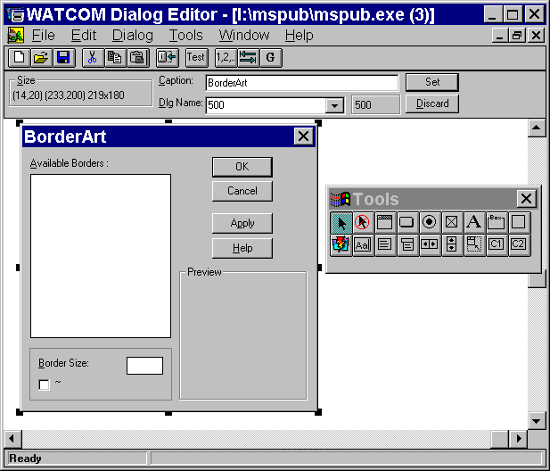
Figure 101. The Dialog Editor window contains a menu bar, toolbar, workspace, and status
line.
The Information Bar is located under the toolbar. It provides information about the currently selected object you
are adding to the dialog or modifying. This object can be a control or the dialog window itself. There are three
fields in the Information Bar. The contents of two fields depends on whether the selected object is a dialog or a control.
You may press F9 to set the keyboard focus to the Information Bar. While the Information Bar has the keyboard
focus you may press ESCAPE to have the focus return to the Editor.
Figure 102. The Dialog Editor information bar
Changes made to these fields are only processed once you press ENTER or click on the Set button. Reverse uncommitted
changes by clicking on the Discard button.
- Size
- The Size field in this area contains three sets of numbers. These numbers provide information on the size and position
of the selected dialog or object in the Edit Window. The default number sequence when you create a new dialog is:
(20, 20) (115, 95) 95x75
(20, 20) indicates that the top left hand corner of the dialog is at the position 20, 20 on the Edit Window grid.
(115, 95) indicates that the bottom right hand corner of the dialog is at the position 115, 95 on the Edit Window
grid.
95x75 indicates the width and height of the dialog.
Dialogs
- Caption
- When the selected object is a dialog, this field contains the name of the dialog that you want to appear on the dialog in
the application. Any changes you make to this field are not stored until you:
- Press ENTER, or
- Select the Set button to the right of the field.
Dlg Name
- When the selected object is a dialog, this field contains the name of the dialog resource. This is the name by which
the dialog is stored in the resource file. When you create a new dialog, the Dialog Editor assigns the default name
DIALOG_# to the new dialog. You change the name of the dialog using the Dlg Name field.
- To change the dialogs name:
-
(1)
- Type the new dialog name using double quotes if the dialogs name is to be an character string.
or
- Type the symbol name (without double quotes). New symbols will automatically be created.
Controls
- Text
- When the selected object is a control, the Text field contains the text appearing in the dialog with the selected object.

Figure 103. The information bar text field
This field is not applicable for all objects. Any changes you make to this field are not stored until you:
- Press ENTER, or
- Select the Set button to the right of the field
ID
- There are two parts to the ID field. The field on the right contains the numeric value of the currently selected control.
Each control always has a numeric identifier. You may enter a symbol here ( new symbols will automatically be
created ) or a numeric identifier.
The symbol is a string used to specify the selected control. This is an alternate way to identify the control in
your source code.
The Edit Window
The edit window is the window on which you create dialogs and controls. It represents the resource file that your
dialog is a part of.
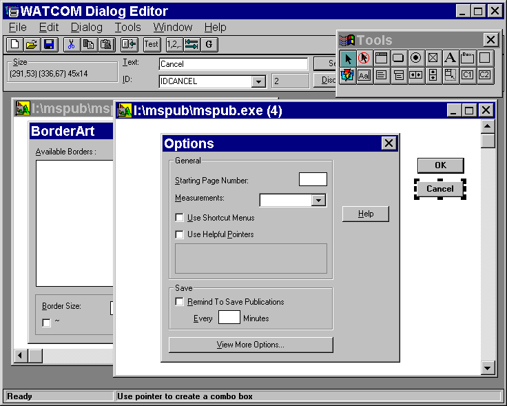
Figure 104. The Dialog Editor edit window
The edit window gives you space so you can temporarily move controls off your dialog when it gets too crowded.
For example, to rearrange controls in your dialog, you can drag them onto the edit window and then drag them back onto the
dialog in the desired order.
Although you can't see it on your screen, the edit window is an infinite grid with the origin (0,0) initially at its
top left. Dialogs are always positioned relative to the edit window. The origin is in the middle of the world
co-ordinate system, which is the reason the scroll thumbs are initially in the middle of the scroll bars.
The Workspace
The workspace is the area under the Information Bar on which you can manipulate several resource files. This area
can be compared to your desktop. For instance, if you minimize an edit window, an icon representing that edit window
appears in the workspace. The workspace provides you with an area in which to open and close edit windows.
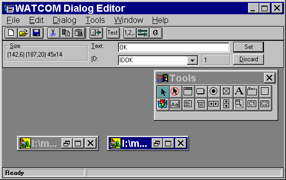
Figure 105. The Dialog Editor workspace
Dialog Functions
This section describes the several functions you can perform with the Dialog Editor. The following tasks are included
in this section:
- Creating New Dialogs
- Opening Existing Dialogs
- Changing the Dialog Size
- Changing the Location of a Dialog
- Saving Dialogs
- Changing the Name of a Dialog
- Changing the Caption in a Dialog
- Adding Controls to a Dialog
- Modifying Controls in a Dialog
- Ordering Controls in a Dialog
Creating New Dialogs
When you open the Dialog Editor, it displays an empty dialog box in the editor window of the Dialog Editor window.
You can change the size and location of this dialog and add controls to it to meet the needs of your application. However,
if you are not happy with the changes you have made and want to delete your dialog to start over again, or if you want to
modify more than one dialog at a time, you can create another empty dialog in one of the following ways:
- (1)
- Select New from the File menu.
(2)
- Select New from the toolbar.
(3)
- Draw another dialog in the editor window with the "dialog" item from the toolbox.
An empty dialog named "Untitled" appears in the editor window. Now you can add controls to the empty dialog,
and change its size and location within the edit window.
Opening Existing Dialogs
You can open a dialog from any .RES, .EXE, or .DLL file to your edit window where you can modify it. To do this:
- (1)
- Open the file you want, in one of the following ways:
- Select Open from the file menu, or
- Select the Open button from the toolbar.
(2)
- Select the .RES, .EXE, or .DLL file that contains the dialog you want to copy.
The Open Watcom Dialog Editor Open Resource dialog appears.
(3)
- Select the resource file you want.
(4)
- Select the name of the file you want, in one of the following ways:
- Select the name and press OK, or
- Double click on the name of the file.
If there are any dialog resources in the file, the Select Dialog appears listing the names of all the dialog resources
that exist in that resource file.
- Note:
- If the file does not contain any dialog resources, the main screen appears with an empty edit window and dialog for you to
add controls and modify.
(5)
- Select one or more dialogs to place in the edit window in one of the following ways:
- Double click on the dialogs you wish to modify, or
- Select the dialogs you wish to modify and select OK.
The dialog you copied appears in the edit window of your main screen. From here you can add controls to the dialog
and modify its size and location.
Changing the Dialog Size
To modify the size of a dialog,
- (1)
- Select the dialog.
(2)
- Position the mouse above the appropriate sizing handle.
(3)
- Drag the dialog's sizing handle until the dialog is the size you want.
You will notice that the dialog size information in the Information Bar will track the size of the dialog.
Changing the Location of a Dialog
Since you will want all parts of your dialog to be visible to your users and grab their attention, you can modify the
location of your dialog relative to the parent window. To do this:
- (1)
- Position the mouse either above the dialog caption or within several pixels of the dialog's border (while remaining
in the dialog).
(2)
- Drag the dialog to the position you want in the edit window.
You will notice that the dialog size information in the Information Bar will track the location of the dialog.
Saving Dialogs
It is a good idea to save changes to your dialog as you modify it rather than wait for the Dialog Editor to prompt you
when you close your dialog or exit the Dialog Editor. There are five ways to save dialogs. The two primary ways
to save a dialog are to select one of the following from the file menu:
Selecting Save or Save As from the File menu saves the entire resource file in which your dialog resides, updating any
changes you made to your dialog in the process.
In addition, there are three other ways to save your dialog. You can choose Save, Save As, or Copy To from the
Dialog menu. Saving a dialog from the Dialog menu only saves one resource - the currently selected dialog - not the
entire resource file which typically contains numerous resources.
- Warning:
- If you choose to select Save or Save As from the dialog menu you will only be saving the current dialog and not any of the
other resources in the resource file. If you save the dialog under the same name as the resource file, you will overwrite
all the resources in that file and be left with a resource file that contains nothing more than your dialog.
Changing the Name of a Dialog
The name of a dialog is the name associated with the dialog resource when you save it to a dialog resource file.
To avoid name conflicts, (you can't have two dialog resources with the same name, in the same file) you will want
to change the name of your dialog (the editor gives you one as a default). Type in the edit field a name you want to
give your dialog or, if symbols have been loaded, you can select a symbol from the combo box. You can drop down the
combo list box and select a symbol from there.

Figure 106. The combo box is labelled "ID".
Changing the Caption in a Dialog
A dialog's caption is the text that appears in the title bar of the dialog.
You can type in the edit field of the Information Bar to change the caption's name.
Adding Controls to a Dialog
Select a tool that will allow you to create controls by selecting an item from the Tools menu or from the toolbox.
There are two ways in which controls may be drawn in the dialog.
-
- Click the left mouse button at the position where you would like the top left corner of the control to be. The
control will be created in its default size.
or
- Press the left mouse button and drag out a rectangle. Release the left mouse button.
The tool box goes back to select mode when you draw a control (the current tool becomes the select tool).
To draw more than one of the same types of controls without having to choose the control from the toolbar or menu
every time, choose the sticky tool which causes the tool to stay down.
Modifying Controls in a Dialog
Once you have created controls for your dialog you can modify the controls as follows:
- (1)
- Double-click the control.
or
- Select the control and Press ENTER.
A Style dialog box appears.
Once in the Dialog editor, you can define your dialog box. You can also add, change, group, reorder, move, resize,
ore delete dialog controls so that your dialog box functions the way you want it to.
Ordering Controls in a Dialog
There is an ordering associated with the controls of a dialog. This ordering is commonly referred to as the "tab
order" and controls which dialog control is highlighted next when you press the TAB or cursor keys. As you add
controls to a dialog, they are added to the end of the list.
The Dialog editor allows you to change this ordering using a simple "point-and-click" technique. To
do this:
- (1)
- Select the dialog
(2)
- Select Set Order from the Dialog Menu dialog
or
- Press the Set Order button on the toolbar
All of the controls in the dialog now have a button at their top-left corner indicating their current position.
(3)
- Click the dialog controls in order until the ordering is what you would like.
(4)
- Select Set Order from the Dialog Menu dialog
or
- Press the Set Order button on the toolbar
Reselecting Set Order will terminate the ordering session and record any changes made.
As you click the dialog controls you will notice two things. First, the buttons at the dialog controls top-left
take on a "depressed" look. This indicates a button you have already clicked. Second, the unselected
or unclicked buttons will reorder themselves to reflect any changes you have made so far. This will allow you terminate
the ordering session without having to click all of the dialogs controls.
Clicking on a dialog control that is in the "depressed" or selected state will undo the new ordering you
have given it and it will go back to its original position. If a "depressed" dialog control already has its
original position then it finds the first available position. This feature is handy if you make a mistake and would
like to perform a quick fix.
There may be a point in the ordering process where you decide to start over from the beginning. Instead of clicking
over all the dialog controls you have previously clicked or leaving and then re-entering the Set Order mode you may simply
double click the dialog control you wish to be first. This will undo all that you have done and make the selected dialog
control the first one.
You may run into a situation where the first n dialog controls are correctly ordered but subsequent one are not.
Before you begin to click through the first n dialog controls note that there is a better way. Simply shift-click the
n'th control to accept the current ordering up to that point and proceed.
The Open Watcom Image Editor
If you want to design visual resources such as bitmaps, icons, or cursors and add sizzle to your application's interface,
the image editor can help.
The Image Editor is a visually oriented drawing tool with the power to draw all the visual resources you want - exactly
the way you picture them. This way, you can design effective bitmaps, meaningful icons, and communicative cursors.
Of course, the Image Editor can help bring to life your new artistic achievements. But it can also copy visual
images from anything else you can see on your computer screen. For example, if you would like to incorporate a favorite
bitmap or icon from your desktop or even from another application, you can use the Image Editor's Screen Select option to
copy that image to your design grid where you can tailor the image to your exact specifications. Then, when you are
happy with your visual image, you can save it to an executable.
Most of the sections in this chapter apply to all your visuals, but for more information on the specific type of visual
you are creating, see the sections specific to creating and editing your specific resource type.
This chapter contains the following:
- Opening the Image Editor
- Closing the Image Editor
- The Main Screen
- The Image Editor Menu Bar
- The Image Editor Toolbar
- The Image Editor Toolbox
- The Image Editor Color Palette
- The Image Editor Status Line
- Creating and Editing Bitmaps
- Creating and Editing Cursors
- Creating and Editing Icons
Opening the Image Editor
- To open the Image Editor:
-
- Double click on the Image Editor icon in your windows program manager,
or
- Select the Image Editor icon and choose Open from the File menu.
The Open Watcom Image Editor window appears.
Closing the Image Editor
- To close the Image Editor and return to your desktop:
-
- Double click on the system menu in the top, left corner of the screen,
or
- Choose Exit from the File menu.
When you close the Image Editor, it remembers the size and position of its main window, as well as the position of the
toolbar and color palette. It also remembers whether the toolbar and color palette were hidden or not. This way,
when you open the Image Editor again, it is set up the same way you left it.
The Main Screen
Every time you open the Image Editor, the Open Watcom Image Editor window appears. The toolbar, toolbox, and color
palette you use to edit your images appear on top of this window.

Figure 107. The Open Watcom Image Editor window
You cannot draw or copy images onto the screen itself. Instead, you must first create a design grid, a work
area on which you can design your visuals. You can create an empty design grid and draw your own visual or you can
create a design grid with an image from your desktop or another application already on it. Once you have an image on
your design grid you can edit it so it looks exactly the way you want.
Creating a Design Grid
- To create a design grid:
-
(1)
- Choose New from the File menu.
The Image Type dialog box appears.
(2)
- Select the type of image you want to create by clicking on either Bitmap, Icon, or Cursor.
(3)
- Click on OK.
A dialog box appears where you specify the image size you want to work with. The Image Editor automatically defaults
to the standard sizes (in pixels) for bitmaps, icons, and cursors. To create different sized images, simply enter the
desired pixel width and height.
(4)
- Click on OK.
For more information on creating and editing a bitmaps, cursors or icons, see the sections entitled Creating and Editing Bitmaps,
Creating and Editing Icons, and Creating and Editing Cursors.
The menu bar along the top of the Image Editor window allows you to access most of the items in the toolbar, the toolbox,
and the color palette. It also provides you with other items that you cannot access anywhere else except on the menu
bar.

Figure 108. The Open Watcom Image Editor menu bar
To see what an item does, position your cursor over the item and hold the mouse button. A description of the
item appears in the status line. For more information about the status line, see the section entitled The Image Editor Status Line.
This manual assumes that you know how to use the menus and are familiar with common menu items such as Save As and
Undo.
Some of the menu items have accelerator keys, also called accelerators, so you can invoke an item without having to
pull down the menu. This means, for example, that you can start a new image in three ways. You can either:
- Select the new image button from the toolbar, or
- Choose New from the File menu, or
- Press F2 (the accelerator for starting a new image).
The toolbar allows you quick and easy access to the most used items in the menus.
Figure 109. The Open Watcom Image Editor tool bar
To find out what a button does, position your cursor over the button and hold the mouse button. A description
of the button's function appears in the bottom right corner of your screen. If you only wish to read what the button
will do and not activate it, drag your cursor onto another part of the window and then release the mouse button.
Here is a list of the buttons from left to right in the toolbar and what they do.
- New
- Creates a new bitmap, icon, or cursor
Open
- Opens an existing file
Save
- Saves the current image
Toggle Grid
- Allows you to view the exact pixels on your design grid
Maximize
- Enlarges the appearance of your image and design grid
Clear
- Deletes everything on your design grid
Snap Bitmap
- Allows you to select a bitmap image from your desktop or another application and place that image on your design grid
Shift Right
- Moves the current image to the right
Shift Left
- Moves the current image to the left
Shift Up
- Moves the current image up
Shift Down
- Moves the current image down
Flip Vertically
- Mirrors the current image along the X-axis
Flip Horizontally
- Mirrors the current image along the Y-axis
Rotate 90 Clockwise
- Rotates the current image 90 degrees clockwise
Rotate 90 Counter Clockwise
- Rotates the current image 90 degrees counter clockwise
The toolbox allows you to conveniently select and change the tool you are using to edit your image, without having to
hunt through the menus for the tool you want.

Figure 110. The Open Watcom Image Editor toolbox
Here is a list of the tools and what they do.
- Pencil
- Draws on the grid, pixel by pixel
Lines
- Draws straight lines on the grid
Ellipse Outline
- Draws outlines of circles and ellipses
Ellipse Fill
- Draws filled circles and ellipses
Rectangle Outline
- Draws outlines of rectangles
Rectangle Fill
- Draws filled rectangles
Brush
- Draws on the grid in various brush sizes
Select Region
- Allows you to select a rectangular region on the grid
Select Hot Spot
- Allows you to select the cursor hot spot (for cursors only)
The Image Editor Color Palette
If you want to draw or fill a new visual in different colors, or change the colors of an existing bitmap, icon, or cursor,
the color palette allows you to select the colors you want.

Figure 111. The Open Watcom Image Editor color palette
- To select a color:
-
(1)
- Click either the left or right mouse button on the color in the color palette that you wish to assign to that button.
(2)
- Select a drawing tool.
(3)
- Draw or fill holding down the mouse button assigned to the color you want.
For example, if you want to draw a red line:
- Create a design grid for the resource you want
- Select a shade of red from the color palette.
- Select the line tool from the toolbox.
- Drag your cursor across the design grid.
When you choose one of the 12 colors on the right of the color palette, the draw color will not be the same as the fill
color. Don't be alarmed. This is because they are not true VGA colors. The Image Editor creates them by
dithering two or more colors together so that, while the color appears solid in the view window, it is actually made up of
different colored pixels intermingled with each other. Since it is impossible to represent a single pixel-unit of a
dithered color, the draw color always differs from the fill color when you select a dithered color.
Selecting Screen and Inverse Colors
Unlike simple bitmaps, visuals such as icons and cursors usually require transparent or inverse colors. This is
so that they don't entirely obscure everything underneath them and so they can be seen no matter what color they happen to
be sitting on.
When you create or edit an icon or cursor, you can choose the screen and inverse colors from the color palette.
Then, you can draw portions of your icon or cursor with those colors, so that these pixels blend into the background of your
application.
Remember, if you want to use a specific color in your icon or cursor, make sure the color you want to use is not the
screen or inverse color. Reserve these two colors for drawing only the transparent portions of your icon or cursor.
And use the other 26 colors available in the color palette for regular drawing.
- To choose a screen color:
-
(1)
- Create a design grid for a cursor or icon.
(2)
- Move your cursor over the two squares beside the words Screen and Inverse, so that your cursor changes from a pointer
to a hand.
(3)
- Double click on either square.
The Select Screen Color dialog appears.
(4)
- Select the color you want to use as your screen color.
(5)
- Click on OK.
The dialog closes and the screen color and its inverse are assigned to the screen and inverse boxes in the color palette.
These will be the Screen and Inverse colors you can use to draw the portions of your icon or cursor that you want to
be transparent.
- Note:
- When you select a color, its inverse is automatically selected for you. Try to find a screen color and inverse color
that you won't want to use in the foreground of your icon or cursor. For example, if you don't intend to use yellow
in your icon, select yellow as your screen color. The inverse color, blue, is automatically selected for you, so if
you intend to use blue in your icon, find another screen color that doesn't have blue as its inverse.
When you are drawing and filling in multiple colors, you may find it useful to assign colors to the left and right mouse
buttons. This way, you can draw in one color, and quickly switch to another color simply by pressing the opposite mouse
button. For example, if you find you draw mostly in black and red, assign black to the left mouse button and red to
the right mouse button. To do this,
- (1)
- Select the black square by clicking on it with the left mouse button.
(2)
- Select the red square by clicking on it with the right mouse button.
The colors assigned to the mouse buttons appear in the squares of the color palette marked L (for left) and R (for right).
Hiding and Showing the Color Palette
If you generally only draw in one or two colors or temporarily need more room on your screen, you can hide the color palette:
- Double click on the system menu icon in the corner of the Color Palette, or
- Choose Show Color Palette from the Options menu.
To reveal the color palette again, choose Show Color Palette again from the Options menu.
The Image Editor Status Line
There are five sections in the status line. The first four sections provide information on the current image.
The fifth section displays hint text for the items in the menus, toolbar, and toolbox when you position your cursor over
an item and hold down the mouse button.

Figure 112. The Open Watcom Image Editor status line
Creating and Editing Bitmaps
If you want your applications to have visual impact, you can create and edit bitmaps. Bitmaps are graphical images
that can be as large as 512 x 512 square pixels representing such things as buttons, brush patterns, company logos, toolbar
items, wallpaper, and graphical elements in menus.
Using the Image Editor you can create a new bitmap or you can create a bitmap from any other image on your desktop.
You can even copy a bitmap from another application on your desktop.
- To create a new bitmap:
-
(1)
- Choose New from the File menu.
The Image Type dialog appears.
(2)
- Select Bitmap.
(3)
- Click on OK.
The Bitmap Information dialog appears. This dialog prompts you for information about the dimensions of the bitmap
you want to create and the color scheme you want to work with. The Image Editor defaults to the dimensions most commonly
used for creating bitmaps, 32 pixels by 32 pixels. However, if you want to create a different sized bitmap, enter the
pixel width and height you want. The Image Editor also defaults to a 256-Color color scheme. Other color schemes
available are 16-Color VGA and 2-Color Monochrome.
To copy a bitmap from your desktop or from another application on your desktop:
- (1)
- Choose New from the File menu.
The Image Type dialog appears.
(2)
- Select Bitmap.
(3)
- Click on OK.
The Bitmap Information dialog appears.
(4)
- Select the Screen Select button.
This option allows you to choose the size and contents of the newly created bitmap with images from your desktop or from
another application sitting on your desktop. The Image Editor ignores the limitations specified in the Bitmap Information
dialog and uses the dimensions you sweep out (up to 512x512 pixels).
(5)
- Position the cursor at the image you want to select.
(6)
- Hold the left mouse button and drag the cursor across the image you want to copy to your design grid.
(7)
- Release the mouse button.
The image you selected appears on your design grid.
Creating and Editing Cursors
You can create and edit cursors that communicate to your users the mode or state of the application.
You can create a new cursor or you can create an empty cursor and copy an image from your desktop or another application
onto your design grid. From there you can edit your cursor's appearance and set its hot spot.
When you edit cursors, the Image Editor provides you with an extra tool called Set Hotspot This tool allows
you to select the exact pixel to which you want to assign the hotspot. The default hotspot is 0,0 (at the top left
corner of the design grid).

Figure 113. The Set Hotspot tool allows you to select the hotspot
- To create a new cursor:
-
(1)
- Choose New from the File menu.
The Image Type dialog appears.
(2)
- Select Cursor.
(3)
- Click on OK.
The Cursor Format dialog box appears. Since cursors should be standardized, you can only choose monochrome cursors
32x32 pixels. You cannot create a colored cursor.
(4)
- Click on OK.
Cursors (and icons, too) differ from bitmaps in that they almost always include pixels that blend into the background
of your application. Unless you want a rectangular shaped cursor, you must assign special screen and inverse colors
to the "blending pixels," so that they don't obscure the areas over which you move the cursor.
Since you can only create black and white cursors, do not use black or white as your screen or inverse colors.
Instead, use one of the dithered colors as your screen color. The Image Editor automatically chooses the inverse of
the chosen dithered color.
For more information on selecting screen and inverse colors, refer to the section entitled Selecting Screen and Inverse Colors.
Creating and Editing Icons
With the Image Editor, you can create icons that look exactly the way you want. Icons are usually the user's first
exposure to your application, so you want them to be as professional and meaningful as possible.
You can create a new icon or you can create an empty icon design grid and use the Image Editor's Snap Bitmap option
to copy an image from your desktop to your design grid where you can edit it as desired.
- To create a new icon:
-
(1)
- Choose New from the File menu.
The Image Type dialog appears.
(2)
- Select Icon.
(3)
- Click on OK.
The Icon Target dialog box appears. You can create the following types of icons:
- 16-color 32x32
- 2-color 32x32
- 2-color 32x16
- 16-color 16x16
- 2-color 16x16
- 256-color 48x48
- 16-color 48x48
- 16-color 24x24
(4)
- Select the desired icon type.
(5)
- Click on OK.
The Image Editor window displays an empty icon design grid awaiting your new creation.
If you want to copy an image from your desktop or from another application sitting on your desktop, select the Snap Bitmap
option from the toolbar and drag across the image on your desktop that you want to copy.
Windows applications typically contain menus that enable users to initiate actions. When users see familiar menus
in the menu bar, such as the File or Edit menu, they may feel less intimidated by a new application and be more apt to explore
its capabilities.
In an application you can have three types of menu items:
A standard menu item performs a function when selected. A popup menu item is a menu item with a sub-menu.
Selecting a popup menu reveals another menu list, rather than performing a function. A separator is a horizontal line
that separates groups of menu items within a popup menu. A resource file can have multiple menus.
The Open Watcom Menu Editor enables you to create new menus and edit existing menus found in resource files.
A resource file may contain multiple menus.
With the Menu Editor you can create all of the menus needed for your application visually, without having to create
a resource script or use a resource compiler.
This section discusses the following topics:
- Starting the Menu Editor
- Quitting the Menu Editor
- The Menu Editor Menu Bar
- The Menu Editor Toolbar
The Menu Editor may be invoked in one of two ways. The first involves first starting the Resource Editor then starting
the Menu Editor. The second way the editor may be started is from the Open Watcom IDE.
To start the Menu Editor from the Resource Editor, you must first open the Resource Editor. How you proceed
depends on whether you are opening a new (empty) menu table or an existing menu table.
Figure 114. The Menu Editor window
- (1)
- Double click on the Resource Editor icon in your Windows Program Manager.
The Open Watcom Resource Editor window opens.
(2)
- Open a new or existing resource file.
(3)
- Choose New from the Resource menu.
A cascading menu appears from the New menu item.
(4)
- Select Menu from the New cascading menu.
The Open Watcom Menu Editor window opens and displays an empty menu.
- (1)
- Double click on the Resource Editor icon in your Windows Program Manager.
The Open Watcom Resource Editor window opens.
(2)
- Open an existing Resource File.
The Resource window for the existing resource file displays buttons representing each existing resource type.
(3)
- Select the menu button to view the existing menus.
or
- Choose Menu from the cascading menu that appears when you choose View from the Resource menu.
The Menu list appears revealing all menus in this resource file.
(4)
- Double click on the existing menu you want to open
or
- Click on the desired menu to select it, then press ENTER or choose Edit from the Resource menu on the
Open Watcom Resource Editor window.
The Open Watcom Menu Editor window opens and displays the selected menu.
To exit the Menu Editor, choose Exit from the File menu of the Open Watcom Menu Editor window.
If you made changes to menu items but did not save the information, a message box prompts you to save before exiting.
Choose Yes to save the changes and exit the Menu Editor, No to exit the Menu Editor without saving the changes, or
Cancel to return to the Menu Editor.
When you exit the Menu Editor, the application remembers the directory in which you last opened or saved a menu (not
the resource file). The next time you open a menu, the last directory accessed appears in the File Selection dialog
so you do not have to reenter its path. This feature makes the Menu Editor more convenient and efficient to use.
Figure 115. The Menu Editor menu bar.
The menu bar consists of the following five menus:
- File
- Clear and save the menu, and exit the Menu Editor
Edit
- Access the clipboard functions, hide or show the toolbar, and delete a menu
Resource
- Rename the menu and change its memory flags
Menu
- Insert menu entries
Help
- Access on-line help information
To see the function of an item in the menu bar or submenus, hold the mouse button and drag the cursor over the desired
menu item. A description of the item appears in the status line at the bottom of the screen. If you do not want
to select the menu item, drag the cursor off of the menu item before releasing the mouse button.
In the Open Watcom Menu Editor window, the toolbar appears below the menu bar. When the toolbar is shown choose
Hide Toolbar from the Edit menu to hide it. When the toolbar is hidden you can display it by choosing Show Toolbar
from the Edit menu.

Figure 116. The Menu Editor toolbar.
The following explains the function each icon performs, as well as the equivalent function in the menu bar.
- Clear
- Clear the menu workspace. This is equivalent to Clear in the File menu.
Save
- Save the current menu. This is equivalent to Update in the File menu.
Cut
- Cut the current menu item to the clipboard. This is equivalent to Cut in the Edit menu.
Copy
- Copy the current menu item to the clipboard. This is equivalent to Copy in the Edit menu.
Paste
- Paste the menu item that is on the clipboard to the current menu workspace. This is equivalent to Paste in the Edit
menu.
Delete
- Delete the selected menu item from the menu workspace. This is equivalent to Delete in the Edit menu.
Only one of the following two buttons appears at a time. The displayed button indicates where new menu items will
be inserted. When one is selected the other one replaces it on the toolbar.
- Insert Before
- When this button is displayed, new menu items will be inserted before the currently selected menu item. Selecting this
button is equivalent to selecting Insert After from the Menu menu.
Insert After
- When this button is displayed, new menu items will be inserted after the currently selected menu item. Selecting this
button is equivalent to selecting Insert Before from the Menu menu.
- Insert
- This button will insert a new menu item into the menu. This is equivalent to Insert New Item in the Menu menu.
To see the function of an item in the toolbar, position your cursor over the desired button. A description of the
button's function appears in the status line at the bottom of the window.
The Open Watcom Menu Editor window contains a menu bar, toolbar, and status line to help you create and edit menus.
The rest of the window is divided into five sections:
- Resource Name Field
- Preview Window
- Attributes Area
- Menu Item List
- Action Buttons

Figure 117. On the Open Watcom Menu Editor window, you create menus for your application.
The Resource Name field in the Open Watcom Menu Editor window contains the name of the menu currently being edited.
A resource file can contain more than one menu, so it is important that the resource names for the menu resources be unique.
The Resource Name field is not case sensitive and can hold up to 255 characters. You can enter a textual name,
a number or a symbol in this field.
When you create a new menu, the Resource Editor assigns the default name MENU_# to it. You can rename the menu
using the Rename item in the Resource menu.
The Preview window appears on the Menu Editor window above the menu item list. This window allows you to see how
the menu you are creating will look in the application. The popup menu items in the preview window are functional so
you can test your menu as you create it.
Figure 118. The preview window allows you to see how the menu will look and work in the
application.
You can use the sample menu that appears in the preview window to test the behaviour of your menu items. For
example, by selecting top-level menu items in the preview window you can check the positions and breaks of your menu items
and separators. The preview window allows you to verify that your menus cascade properly and that other attributes
function properly, including inactive, grayed, and check marked menu items.
The attributes area provides information about the currently selected menu item. You can edit menu items using only
the fields in this area.
The attributes area displays menu item details in five sections. Following is an explanation of each section.
- Item Text
- The Item Text field contains the name of the menu item. Whatever appears in this field will appear in the menu.
An ampersand (&) in front of a letter in this field tells the editor to underscore that letter in the menu.
This automatically creates a hot key for that menu item. When using the menu, pressing ALT plus the underscored letter
activates that menu item.
To specify a tab character, enter \t in this field. All text after \t in the Item Text field will be right justified
in the menu.
Item ID
- The Item ID is the unique numeric identifier for the menu item. In the source code, you match the identifier to the
function the menu item is to perform. The Item ID applies only to normal menu items. Popups and separators do
not perform functions, so do not need an identifier.
You can enter any number in the range 0 to 65535 in the Item ID field. Hexadecimal values can be entered by prefixing
them with 0x. Octal values can be entered by prefixing them with zero.
The two Item ID fields contain:
- the numeric identifier of the selected menu item
- the symbol information for the selected menu item.
- Note:
- Both Menu Item fields currently contain the same numerical information because the Menu Editor does not yet support symbols.
Item Type
- The Item Type section of the window indicates whether the selected menu item is a popup, normal, or separator menu item.
Following is a description of each menu item type.
- Popup
- A popup menu is a menu item that has a sub-menu. When you select a popup menu, another menu appears.
Normal
- A normal menu item is an item that performs a function when selected.
Separator
- A separator menu item is a horizontal line that separates menu items to logically group menu items with similar functions.
When a separator is selected from the menu item list, the Item Text and Item ID fields are always empty because they
do not apply to separators.
Attributes
- The options in the Attributes section allow you to specify how the selected menu item will appear in the menu. Use the
check boxes to select the desired menu item characteristic. Following is a description of each option.
- Checked
- When the Checked option is selected, the menu item appears in the menu with a check mark beside it. This is a graphic
only and does not affect the functionality of the menu item.
- Note:
- Top level menu items cannot be checked.
Grayed
- When the Grayed option is selected, the menu item text appears in gray instead of black. This option also makes the
menu item inactive.
Inactive
- When the Inactive option is selected, the menu item appears unchanged in the menu. However, this option prevents the
menu item from being selected.
Break Styles
- The options in the Break Styles section control the positioning of the menu items. The break styles you choose affects
the selected menu item and all menu items that follow that item. Following is a description of the available options.
- Help
- The Help break option positions the selected menu to the far right of the menu bar. This option is available only for
top-level menus.
Menu
- For top-level menu items, the Menu break option begins a new line in the menu bar, positioning the selected menu item on the
far left. In a popup menu, this break option creates a new column, positioning the selected menu item at the beginning
of the new column.
- Note
- The Menu option overrides the Menu Bar option.
Menu Bar
- For top-level menu items, the Menu Bar break option performs the same function as the Menu break option. In a popup
menu, the Menu Bar break option creates a new column, beginning with the selected menu item and places a vertical line between
the columns.
The menu item list displays the menu items in the current menu. Use this list to view the attributes of the menu
items listed. Select a menu item from the table by clicking on it. Details of the selected menu item appear in
the attributes area of the window.
The action buttons control how the information in the attributes area is handled by the editor. The Insert button
will use the contents of the attributes area to create a new entry in the menu. The Change button will use the contents
of the attributes area to modify the current entry in the menu. The << (shift left) button will cause the current
menu item to become a subitem of its parent. This button is enabled only when the current item is the last item in
its parent menu. The current item will visually appear to shift left. The >> (shift right) button will
cause the current menu item to become the last subitem of the popup menu preceding it. This button is enabled only
when the item preceding the current item is a popup menu. The current item will visually appear to shift right.
The Reset button will discard the contents of the attributes area and reset them to those of the current entry in the menu.
The Insert button is the default button when the ENTER key is pressed and no other button has the focus.
You can perform several functions with the Menu Editor. This section describes the following tasks:
- Adding a New Menu Item
- Changing an Existing Menu Item
- Deleting Menu Items
- Renaming a Menu
- Saving Menu Items
- Using Shortcuts to Create Menus
- Changing Memory Options
The steps for adding a new menu item to a menu are the same, regardless of whether the menu item list is empty or already
contains menu items. Follow these steps to add a new menu item.
- (1)
- Enter the text for the menu item in the Item Text field.
To set one of the letters as a hot key, insert an ampersand (&) directly in front of that letter. The letter
marked as the hot key key appears underlined in the menu item text. For example, to add the menu item Cut
with the letter t as its hot key, enter Cu&t in the Item Text field.
To have text in the menu item appear right justified, enter the code \t in the Item Text field. For example,
to add the entry Open with the accelerator Ctrl+O right justified, enter Open\tCtrl+O in the Item
Text field.
(2)
- Enter a symbol or numeric identifier for the menu item.
The identifier in this field is the unique identifier associated with the menu item. You define the relationship
between the menu item function and this identifier in the source code for your application.
You must enter a value between 0 and 65535 in this field. Hexadecimal values can be entered by prefixing them
with 0x. Octal values can be entered by prefixing the with zero.
(3)
- Select the type of menu item you wish to create
Use separators in your menus to logically group menu items with similar functions. When adding a separator to your
menu you do not need to complete the fields in the Attributes Area of the Menu Editor window.
(4)
- Select the desired attributes for the menu item in the Attributes section of the workspace.
Refer to the section entitled Using the Menu Editor Window for a description
of each attribute.
(5)
- Select the desired break styles for the menu item in the Break Styles section of the workspace
Refer to the section entitled Using the Menu Editor Window for a description
of each break style.
(6)
- Select Insert Before or Insert After from the Menu menu or the toolbar.
The toggle button on the toolbar indicates if the new menu item is to be inserted into the menu item list before or after
the currently selected menu item. In the Menu menu, the Insert After item is checked if new menu items will be added
after the current item. The Insert Before item is checked if new items will be added before the current item.
(7)
- Press the Insert action button
or
- Choose Insert New Item from the Accelerator menu.
or
- Select the Insert New Item button on the toolbar.
The new menu item appears in the menu item list and the Preview Menu window.
You may want to change the attributes of a menu item in a menu.
- To change an existing menu item:
-
(1)
- Choose the menu you want to work with from the Resource window on the Open Watcom Resource Editor window.
The Menu Editor window appears displaying all of the menu items for the selected menu.
(2)
- Click the menu item you want to modify.
The selected menu appears highlighted in the menu item list and the menu item details appear in the attributes area of
the window.
(3)
- Select the field you want to change using the Tab key or the mouse.
(4)
- Make the desired menu item changes.
(5)
- Press the Change action button
This updates the selected menu item with the modified menu item details.
There are two functions you can use to delete menu items from the menu item list:
The Delete function in the Edit menu deletes the selected menu item. You can delete only one menu item at a time
with this function. Deleting a popup menu item also deletes all of the submenus for that item.
The Clear function in the File menu deletes all menu items in the current menu. This is a powerful function
and must be used carefully to avoid accidentally deleting an entire menu item list.
To delete menu items from the current menu one at a time:
- (1)
- Select the menu item you want to delete from the menu item list by clicking on it.
The selected menu item is highlighted.
(2)
- Choose Delete from the Edit menu
or
- Select the Delete button from the toolbar.
The Menu Editor removes the selected menu item from the menu item list.
(3)
- Choose Update from the File menu to save the menu changes.
To delete all menu items in the current menu:
- (1)
- Choose Clear from the File menu
or
- Select the Clear button from the toolbar.
A message box appears prompting you to verify that you want to clear all of the menu items from the current menu.
(2)
- Choose Yes or No to continue.
Choosing Yes removes all menu items from the current menu. The menu item left list is empty.

Figure 119. As a safety feature, a message box appears when you choose the Clear function.
When you create a menu, the Resource Editor assigns a default name to it. Assign a new name to the menu using the
Rename menu item.
- (1)
- Choose Rename from the Resource menu on the Open Watcom Menu Editor window.
or
- Double click or right click on the Resource Name field.
A Rename Resource dialog box appears containing two fields:

Figure 120. In the Rename Resource dialog, you enter the new name of the menu.
(2)
- Enter the desired menu name in the New Name field.
(3)
- Click on OK to close the Rename Resource dialog.
The dialog closes and the new menu name appears in the Resource Name field.
There are three functions you can use to save menus with the Menu Editor:
Each of these options performs a different type of save function. This section describes how to use each function.
After modifying a menu item in a menu, choose Update from the File menu on the Menu Editor window to save the updated
menu to the current resource file. This prevents the changes from being lost when you exit the Menu Editor.
The Update function updates the resource file only at the resource level. The resource file is not saved until
you perform a save at the Resource Editor level as well. Exiting the Resource Editor without saving causes you to lose
any the menu changes made.
Choose Save As from the File menu on the Menu Editor window to save the current menu to another resource file. A
Save Menu dialog appears where you specify the resource file to which you want to save the current menu.

Figure 121. On the Save Menu dialog, specify the resource file to which you want to save
the menu.
- Important:
- If the resource file to which you are saving the menu already contains resources, the existing resources will be discarded
and replaced with the menu you are saving.
Choose Copy To from the Resource menu on the Menu Editor window to copy the current menu item list into an existing resource
file. A Copy To dialog appears where you specify the resource file to which you want to copy the current menu item
list. Unlike the Save As function, copying a menu item list to a resource file adds an entry to the list of resources
rather than replacing the existing resources with the new entry.
Figure 122. On the Copy To dialog, specify the resource file to which you want to copy
the menu item list.
The Edit menu on the Open Watcom Menu Editor window contains some standard Windows options that you can use to quickly
create menu resources. The options are:
These options allow you to perform functions on menus but not on individual menu items.
- Cut
- Choose Cut from the Edit menu of the Menu Editor window to cut the menu item list from the current menu and paste it to the
clipboard.
Copy
- Choose Copy from the Edit menu of the Menu Editor window to copy the menu item list from the current menu to the clipboard.
Paste
- Choose Paste from the Edit menu of the Menu Editor window to copy the menu on the clipboard into the current menu item list.
The Memory Flags option allows you to change the selected memory options for the current menu. These options indicate
the memory type and loading instructions.
- To set the flags for a menu resource:
-
(1)
- Choose Memory Flags from the Resource menu of the Open Watcom Menu Editor window.
The Memory Options dialog opens displaying either the current or default memory options.
(2)
- Select the required flags in the Memory Options and Load Options sections of the dialog by clicking on the check box
beside the field. Following is a description of each option.
- Moveable
- Selecting this option marks this menu to be stored in moveable memory when it is loaded by an application.
Discardable
- Selecting this option marks this menu to be stored in discardable memory when it is loaded by an application.
Pure
- When marked as Pure, Windows will not allow the memory that the menu is loaded into to be modified.
Preload
- All menus marked as Preload will be loaded when the application for which you are creating the menu is loaded.
LoadOnCall
- Menus marked as LoadOnCall will be loaded when an application issues a call to load them.
(3)
- Click on OK when all memory option selections are made.
The Memory Options dialog closes returning you to the Menu Editor window.
The Open Watcom String Editor
To group together text strings in your application, you can use string tables. A string table is a list of strings
such as error messages, prompts, and other text you want your application to display. Each string in the string table
has a unique number, called an identifier, associated with it. When the application presents the user with a message,
it searches for the appropriate identifier and displays the associated string, regardless of the textual content of the string.
The Open Watcom String Editor enables you to create string tables for your application. The String Editor stores
these tables in the resource file. You can have multiple string tables in a resource file, which allows you to logically
group the text strings for your application. Since a string table is simply another Windows resource that is separate
from the source code, you can use the String Editor to do such things as translate your strings into another language or
make your strings more concise without having to change the source code.
Using the String Editor
This section discusses the following topics:
- Starting the String Editor
- Quitting the String Editor
- The String Editor Menu Bar
- The String Editor Toolbar
Starting the String Editor
The String Editor may be invoked in one of two ways. The first involves first starting the Resource Editor then
starting the String Editor. The second way the editor may be started is from the Open Watcom IDE.
To start the String Editor from the Resource Editor, you must first open the Resource Editor. How you proceed
depends on whether you are opening a new (empty) string table or an existing string table. The String Editor works
on resources found in resource files.

Figure 123. The String Editor window
Creating a New String Table
- To create a new string table:
-
(1)
- Double click on the Resource Editor icon in your Windows Program Manager.
The Open Watcom Resource Editor window opens.
(2)
- Open a new or existing resource file.
(3)
- Choose New from the Resource menu.
A cascading menu appears from the New menu item.
(4)
- Choose String from the New cascading menu.
The Open Watcom String Editor window opens which contains an empty Strings list.
Opening an Existing String Table
- To edit the contents of an existing string table:
-
(1)
- Double click on the Resource Editor icon in your Windows Program Manager.
The Open Watcom Resource Editor window opens.
(2)
- Open an existing resource file.
The Resource window for the existing resource file displays buttons representing each existing resource type.
(3)
- Select the string table button to view all existing string tables.
or
- Choose Menu from the cascading menu that appears when you choose View from the Resource menu.
The String Tables list appears revealing all string tables in this resource file.
(4)
- Double click on the existing string table you want to open.
or
- Click on the desired string table to select it, then choose Edit from the Resource menu on the Open Watcom
Resource Editor window.
The Open Watcom String Editor window opens and displays the existing string items for the selected string table.
Quitting the String Editor
To exit the String Editor, choose Exit from the File menu of the Open Watcom String Editor window.
If you made changes to strings but did not save the information, a message box prompts you to save before exiting.
Choose Yes to save the changes and exit the String Editor, No to exit the String Editor without saving the changes,
or Cancel to return to the String Editor.
When you exit the String Editor, the application remembers the directory in which you last opened or saved a string
table (not the resource file). The next time you open a string table, the last directory accessed appears in the File
Selection dialog so you do not have to reenter its path. This feature makes the String Editor more convenient and efficient
to use.

Figure 124. The String Editor menu bar
The menu bar consists of the following five menus:
- File
- Clear and save the string table, and exit the String Editor
Edit
- Access the clipboard functions, hide or show the toolbar, and delete a string item
Resource
- Change the string table memory flags and copy it into another resource file
String
- Insert a new string item
Help
- Access on-line help information
To see the function of an item in the menu bar, position your cursor over the item and hold down the mouse button.
A description of the item appears in the status line at the bottom of the screen. If you do not want to select the
menu item, drag the cursor off of the menu item before releasing the mouse button.
In the Open Watcom String Editor window, the toolbar appears below the menu bar. When the toolbar is shown choose
Hide Toolbar from the Edit menu to hide it. When the toolbar is hidden you can display it by choosing Show Toolbar
from the Edit menu.
Figure 125. You can access seven String Editor functions from the toolbar.
The following explains the function each toolbar button performs, as well as the equivalent menu item.
- Clear
- Clear the string table. This is equivalent to the item Clear in the File menu.
Update
- Update the resource file with this string table. This is equivalent to the item Update in the File menu.
Cut
- Cut the current string table to the clipboard. This is equivalent to the item Cut in the Edit menu.
Copy
- Copy the current string table to the clipboard. This is equivalent to the item Copy in the Edit menu.
Paste
- Paste the string table from the clipboard to the current string table. This is equivalent to the item Paste in the Edit
menu.
Insert
- Insert the new string item into the string table. This is equivalent to the item Insert New Item in the Strings menu.
Delete
- Delete the selected string item from the string table. This is equivalent to the item Delete in the Edit menu.
To see the function of an item in the toolbar, position your cursor over the desired button. A description of the
button's function appears in the status line at the bottom of the window.
Using the String Editor Window
The Open Watcom String Editor window contains a menu bar, toolbar, and status line to help you create and edit string
items. The rest of the window, the workspace, is divided into four sections:
- String Text Field
- String ID Field
- Action Buttons
- Strings List

Figure 126. The String Editor window contains a menu bar, toolbar, workspace, and status
line.
String Text Field
The String Text field in the Open Watcom String Editor window contains the text for the string item you are defining.
Whatever appears in this field will appear in your application.
String ID Field
The two String ID fields contains:
- the identifier associated with the string item
- the symbol information for the specified string
Creating a string item automatically creates a relationship between the string item and its identifier, the String ID.
In your source code you reference the string item by its String ID.
- Note:
- Both String ID fields currently contain the same numerical information because the String Editor does not yet support symbols.
The action buttons control how the information in the attributes area is handled by the editor. The Insert button
will use the contents of the attributes area to create a new entry in the string table. The Change button will use
the contents of the attributes area to modify the current entry in the string table. The Reset button will discard
the contents of the attributes area and reset them to those of the current entry in the string table. The Insert button
is the default button when the ENTER key is pressed and no other button has the focus.
Strings List
The Strings list displays all of the string items in the current string table. The string items appear in ascending
numerical order by String ID.
String Functions
You can perform several functions with the String Editor. This section describes the following tasks:
- Adding a New String Item
- Changing an Existing String Item
- Deleting String Items
- Saving String Items
- Using Shortcuts to Create String Tables
- Changing Memory Options
Adding a New String Item
The steps for adding a new string item to the Strings list are the same, regardless of whether the Strings list is empty
or already contains string items.
- To add a new string item:
-
(1)
- Enter the text that you want to appear in the application in the String Text Field of the Open Watcom String Editor
window.
The text that will be displayed in your application appears exactly as you enter it in this field.
(2)
- Enter symbol or numeric identifier fo the string.
The identifier you enter here is associated with the string item. This is the identifier by which your source code
references the string.
(3)
- Press the Insert action button
or
- Choose Insert New Item from the Strings menu.
or
- Select the Insert New Item button on the toolbar.
The String Editor adds the new string item to the Strings list. The editor automatically arranges the strings in
order by String ID.
Changing an Existing String Item
You may want to change the text or identifier for a string item in the Strings list.
- To modify an existing sting table item:
-
(1)
- Choose the string table you want to work with from the Resource window on the Open Watcom Resource Editor window.
The String Editor window appears displaying all of the string items for the selected string table.
(2)
- Click on the string item from the Strings list that you want to modify.
The selected string item appears highlighted in the Strings list.
(3)
- Change the String Item or String ID field.
(4)
- Press the Change action button
These actions update the selected string item with the modified string item details.
Deleting String Items
These are two functions you can use to delete string items from the Strings list:
The Delete item in the Edit menu deletes the selected string item. You can delete only one string item at a time
with this function.
The Clear item in the File menu deletes all string items in the current string table. This is a powerful function
and must be used carefully to avoid accidentally deleting an entire String list.
Deleting a String Item
To delete string items from the current string table one at a time:
- (1)
- Select the string item you want to delete from the Strings table by clicking on it.
The selected string item is highlighted.
(2)
- Choose Delete from the Edit menu
or
- Select the Delete button from the toolbar.
The String Editor removes the selected string item from the Strings list.
(3)
- Choose Update from the File menu to save the string table changes.
Deleting All String Items
To delete all string items in the current string table:
- (1)
- Choose Clear from the File menu
or
- Select the Clear button on the toolbar.
A message box appears prompting you to verify that you want to clear all of the string items from the current string table.
(2)
- Choose Yes, No, or Cancel to continue.
Choosing Yes removes all string items from the current string table. The Strings list is left empty.

Figure 127. As a safety feature, a message box appears when you choose the Clear function.
Saving String Items
There are three functions you can use to save string tables with the String Editor:
Each of these options performs a different type of save function. This section describes how to use each function.
String Editor: Update
After modifying a string item in a string table, choose Update from the File menu on the String Editor window to save
the updated string table to the current resource file. This prevents the changes from being lost when you exit the
String Editor.
The Update function updates the resource file only at the resource level. The resource file is not saved until
you perform a save at the Resource Editor level as well. Exiting the Resource Editor without saving causes you to lose
the string table changes made.
String Editor: Save As
Choose Save As from the File menu on the String Editor window to save the current string table to another resource file.
A Save Menu dialog appears where you specify the resource file to which you want to save the current string table.
Figure 128. On the Save Menu dialog, specify the resource file to which you want to save
the string table.
- Important:
- If the resource file to which you are saving the string table already contains resources, the existing resources will be discarded
and replaced with the string table you are saving.
String Editor: Copy To
Choose Copy To from the Resource menu on the String Editor window to copy the current string table into an existing resource
file. A Copy To dialog appears where you specify the resource file to which you want to copy the current string table.
Unlike the Save As function, copying a string table to a resource file adds an entry to the list of resources rather
than replacing the existing resources with the new entry.

Figure 129. On the Copy To dialog, specify the resource file to which you want to copy
the String list.
Using Shortcuts to Create String Tables
The Edit menu on the Open Watcom String Editor window contains some standard Windows options that you can use to quickly
create string tables. The options are:
These options allow you to perform functions on a string table but not on individual string items.
- Cut
- Choose Cut from the Edit menu of the String Editor window to cut the Strings list from the current string table and paste
it to the clipboard.
Copy
- Choose Copy from the Edit menu of the String Editor window to copy the String list in the current string table to the clipboard.
Paste
- Choose Paste from the Edit menu of the String Editor window to copy the string table on the clipboard into the current String
list.
String Editor: Changing Memory Options
The Memory Flags option allows you to change the selected memory options for the current string table. These options
indicate the memory type and loading instructions.
Figure 130. Changing memory options
- To set the memory flags for a string table:
-
(1)
- Choose Memory Flags from the Resource menu of the Open Watcom String Editor window.
The Memory Options dialog opens displaying either the current or default memory options.
(2)
- Select the required flags in the Memory Options and Load Options sections of the dialog by clicking on the check box
beside the field.
Following is a description of each option.
- Moveable
- Selecting this option marks this string table to be stored in moveable memory when it is loaded by an application.
Discardable
- Selecting this option marks this string table to be stored in discardable memory when it is loaded by an application.
Pure
- When marked as Pure, Windows will not allow the memory that the string table is loaded into to be modified.
Preload
- All string tables marked as Preload will be loaded when the application for which you are creating the string table is loaded.
LoadOnCall
- String tables marked as LoadOnCall will be loaded only when an application issues a call to load them.
(3)
- Click on OK when all memory option selects are made.
The Memory Options dialog closes returning you to the String Editor window.
The Open Watcom Resource Compiler
The Open Watcom Resource Compiler (WRC) performs two functions. It converts human readable resource script files
(usually with the extension ".RC") into machine readable resource files (usually with the extension ".RES").
We call this process pass one. The Open Watcom Resource Compiler then combines this ".RES" file with
an existing executable file or dynamic link library. We call this process pass two. Pass two may also be run
without a ".RES" file to set flags or to produce a fastload section.
The Open Watcom Resource Compiler can process Win16, Win32 and OS/2 resources.
The Open Watcom Resource Compiler command line syntax is the following.
WRC {options} input-filename {options} [output-filename] {options}
The square brackets [ ] denote items which are optional.
- WRC
- is the name of the Open Watcom Resource Compiler.
input-filename
- The filename specification of the resource file to compile.
If no extension is specified for input-filename, then the extension "rc" is assumed. If the period (.)
is specified but not the extension, the file is assumed to have no file extension.
output-filename
- The filename specification for the output of the compilation.
The meaning of this filename and its default extension is dependent on the actions being performed. See the section
entitled Using the Open Watcom Resource Compiler for information on
this.
options
- A list of valid options, each preceded by a slash (/) or a dash (-).
Options may be specified in any order.
- Options:
- Description:
/?
- print this help summary
/q
- operate quietly
/30
- mark file as requiring Windows 3.0
/31
- mark file as requiring Windows 3.1 (default)
/dNAME=value
- behave as if #define NAME value was at top of file
/ad
- generate auto dependency information for use by the Open Watcom Make utility
/bt=<target>
- build target is one of the following:
- windows
- build a Win16 resource file (default for the DOS-hosted resource compiler)
nt
- build a Win32 resource file (default for the Win32-hosted resource compiler)
os2
- build an OS/2 resource file (default for the OS/2-hosted resource compiler)
/c=name
- set the code page conversion file
/e
- for a DLL, global memory above EMS line
/fe=name
- set the output EXE file to name
/fo=name
- set the output RES file to name
/fr=name
- specify an additional input RES file.
/i=path
- look in path for include files
/k
- don't sort segments (same as /s0)
/l
- program uses LIM 3.2 EMS directly
/m
- each instance of program has its own EMS bank
/p
- private DLL
/r
- only build the RES file
/s{0,1,2}
- segment and resource sorting method:
- 0:
- no sorting, leave segments in the linker order
1:
- move preload segments to front and mark for fast load if possible
2:
- (default) move preload, data, and non-discardable segments to front and mark for fast load if possible
/t
- protected mode only
/v
- verbose: print tokens as they are scanned
/v1
- verbose: print grammar rules as they are reduced
/v2
- verbose: print both tokens and grammar rules
/x
- ignore the INCLUDE environment variable
/zk{0,1,2,3}
- double-byte character support:
- 0:
- (default) Kanji
1:
- Chinese/Taiwanese (for Windows only)
2:
- Korean (for Windows only)
3:
- Simplified Chinese (for Windows only)
/zku8
- Unicode UTF-8 character support
/zm
- output Microsoft/IBM format .RES files
/zn
- don't preprocess the file
Resource Definition Files
A resource definition file (".RC" file) lists all resources that your application will use. You should
refer to your Windows 3.x, Win32 or OS/2 programmer's documentation for information on the script language used in resource
definition files.
Sample .RC file
The following example is the resource script file from an application called Life:
Example:
#include "windows.h"
#include "life.h"
ABOUTBOX DIALOG LOADONCALL MOVEABLE DISCARDABLE 7, 15,
147, 87
CAPTION "About Life"
STYLE WS_BORDER | WS_CAPTION | WS_DLGFRAME | WS_SYSMENU |
DS_MODALFRAME | WS_POPUP
BEGIN
CONTROL "Open Watcom Life Program for
Windows", -1, "static",
SS_CENTER | WS_GROUP | WS_CHILD, 0, 5, 144, 8
CONTROL "Version 1.0", -1, "static",
SS_CENTER | WS_GROUP
| WS_CHILD, 0, 14, 144, 8
CONTROL "OK", 1, "button",
BS_DEFPUSHBUTTON | WS_GROUP
| WS_TABSTOP | WS_CHILD, 55, 64, 32, 14
CONTROL "LifeIcon", -1, "static",
SS_ICON | WS_CHILD,
58, 28, 27, 22
END
CellBitMap BITMAP cell.bmp
MenuBitMap BITMAP menu.bmp
LifeIcon ICON life.ico
LifeMenu MENU
BEGIN
POPUP "&File"
BEGIN
MENUITEM "&Save Selected Region ...", MENU_SAVE
MENUITEM "&Load New Pattern ...", MENU_LOAD
MENUITEM SEPARATOR
MENUITEM "&About Life ...", MENU_ABOUT
END
POPUP "&Boundary"
BEGIN
MENUITEM "&Wrap Around", MENU_WRAP_AROUND
MENUITEM "&Bounded Edges", MENU_BOUNDED_EDGES
END
END
The two #include statements for .h files are used to include definitions necessary to compile the
resource file. The windows.h header file contains general definitions for Windows, and the life.h
header file contains definitions specific to the LIFE application.
The DIALOG statement defines the "ABOUT" dialog box used by the LIFE application.
The two BITMAP statements define a pair of bitmap resources found in the files cell.bmp and menu.bmp.
The bitmaps are identified by the names CellBitMap and MenuBitMap respectively.
The ICON statement defines an icon resource found in the file life.ico. The icon is identified
by the name LifeIcon.
The MENU statement defines the various menu items that are in the menu, and what identifiers are sent to the
application when the menu item is selected.
Differences from IBM Resource Compiler
Open Watcom Resource Compiler is largely compatible with IBM's OS/2 Resource Compiler, but there are some differences.
- Octal constants
- Open Watcom Resource Compiler recogizes octal constants such as 007, 056 etc. Hence values such as 008 are considered
to be an error. This is consistent with IBM's RC version 5 and also consistent with the C/C++ language. In resource
files that need to be portable between RC versions, do not use octal constants and strip all leading zeros.
Expression parsing
- There are differences in parsing statements such as
Example:
#define IDR_ACCEL 1
ICON IDR_ACCEL -1, 8, 40, 0, 0
Older versions of IBM RC consider 'IDR_ACCEL' and '-1' to be separate tokens while Open Watcom Resource Compiler considers
them to be a single arithmetic expression. This is consistent with IBM's RC version 5. The correct and unambiguous
syntax is as follows:
Example:
ICON IDR_ACCEL, -1, 8, 40, 0, 0
Binary resource files
- Using the -zm switch, Open Watcom Resource Compiler produces resource files compatible with those that IBM RC produces, however,
the files are not always identical. In particular the ordering of dialog data within binary resource files is not always
the same between Open Watcom Resource Compiler and IBM RC. This has no effect on the semantics of such resource files.
Resource Compiler Options
- Options:
- Description:
/?
- Displays a summary of Open Watcom Resource Compiler command line options.
/q
- Causes the Open Watcom Resource Compiler to operate quietly. No text is displayed as the Open Watcom Resource Compiler
runs except for warning and error messages.
/30
- Marks the executable file as being able to run on Windows 3.0 or Windows 3.1. By default, WRC marks the executable file
as able to run on Windows 3.1 only. This option affects pass two only.
/31
- Marks the executable file as being able to run on Windows 3.1 only. This is the default setting. This option affects
pass two only.
/ad
- Allows the use of the WMAKE .AUTODEPEND directive with your .RES files. If you do the first and second passes
separately and use this option, you should specify it for both passes. This option may not be used with the -zm switch.
/DNAME=value
- Defines a macro NAME. This is the same as adding the line
#define NAME value
to the top of your resouce script file. If value is not specified then a compiler generated value is provided.
This option affects pass one only.
/bt=<target>
- This is the build target directive. It is used to specify whether you are building a resource file for Win16, Win32
or OS/2. The target may be one of the following:
- windows
- build a Win16 resource file (default for the DOS-hosted resource compiler)
nt
- build a Win32 resource file (default for the Win32-hosted resource compiler)
os2
- build an OS/2 resource file (default for the OS/2-hosted resource compiler)
This option affects pass one only. During pass two the target is inferred from the format of the input files.
/e
- Specifies that global memory is above the EMS line in a Windows 3.0 DLL. This option has no effect with Windows 3.1,
Win32 or OS/2. This option affects pass two only.
/fe=name
- Specifies a new name for the resulting executable file after the resources are added to the executable.
/fo=name
- Specifies the name of the output resource file (default is the name of the .RC file with a .RES extension).
The option affects pass one only.
/fr=name
- Specifies the name of an additional input resource file. The option affects pass one only. This option may be
specified multiple times.
/i=path
- Specifies an include path. This include path is searched before the directories specified in the INCLUDE environment
variable. This option affects pass one only.
/k
- Disables the segment sorting feature (load optimization). If this option is not specified, the Open Watcom Resource
Compiler arranges all pre-load segments and resources so that they are at the start of the executable. This option
has no effect on Win32 or OS/2. This option affects pass two only.
/l
- Mark the application as using LIM 3.2 EMS directly. This option has no effect with Windows 3.1, Win32 or OS/2.
This option affects pass two only.
/m
- Each instance of the application has its own EMS bank, when Windows is running with EMS 4.0 (by default, all instances share
the same EMS bank). This option has no effect with Windows 3.1, Win32 or OS/2. This option affects pass two only.
/p
- Mark a dynamic link library as a private DLL that is called by only one application. This option has no effect with
Windows 3.1, Win32 or OS/2. This option affects pass two only.
/r
- Only build the .RES file. This option is used when you do not want to add the compiled resources to the executable
file. It prevents pass two from being performed.
/s{0,1,2}
- Specifies the segment and resource sorting method. Possible settings are:
- 0:
- No sorting, leave segments in the linker order.
1:
- Move preload segments to front and mark for fast load if possible.
2:
- Move preload, data, and non-discardable segments to front and mark for fast load if possible (the default).
This option has no effect with Win32 or OS/2. This option affects pass two only.
/t
- Marks the application as able to run in a protected-mode Windows environment (standard mode or enhanced mode) only.
This option has no effect with Windows 3.1, Win32 or OS/2. This option affects pass two only.
/v
- This is a debugging option. It causes WRC to print tokens as they are scanned during pass one.
/v1
- This is a debugging option. It causes WRC to print grammar rules as they are reduced during pass one.
/v2
- This is a debugging option. It causes WRC to print both tokens and grammar rules while pass one is performed.
/x
- This option causes WRC to ignore the INCLUDE environment variable. Normally, the Open Watcom Resource Compiler
searches the directories specified in the INCLUDE environment variable for files specified in a #include directive
in the .RC file. This option affects pass one only.
/zk{0,1,2,3}
- Strings contained in resources in the .RC file are assumed to contain double byte characters from the appropriate
character sets. Although these options allow strings to contain multi-byte characters the names of resources in the
resource script file must contain only standard ASCII characters in the range 0-127 (inclusive). This option affects
pass one only. Possible settings are:
- 0:
- (default) Kanji
1:
- Chinese/Taiwanese (for Windows only)
2:
- Korean (for Windows only)
3:
- Simplified Chinese (for Windows only)
/zku8
- Unicode UTF-8 character support
/zm
- This option causes WRC to output a Microsoft/IBM format .RES file. This is useful when using a dialog editor
or other resource tool that understands Microsoft or IBM .RES files. This option affects pass one only.
This option may not be specified when creating a .RES file for Win32 (i.e., when the -bt=nt switch has been specified).
/zn
- WRC will not pre-process the .RC file if this option is specified. This option affects pass one only.
Using the Open Watcom Resource Compiler
The command WRC is used to start the Open Watcom Resource Compiler. The Open Watcom Resource Compiler may be used
in a number of different ways:
- To compile a resource definition file and add the resulting resources to the executable.
WRC is used as follows to accomplish this:
wrc [options] resource-definition-file [executable-file]
The resource-definition-file must not have the extension ".RES", ".EXE", ".SCR", ".DLL"
or ".DRV". If no extension is specified for the executable-file then ".EXE" is assumed. If
executable-file is specified without an extension but is terminated with a period (".") then the default extension
is not added. If the executable-file is not specified then its value defaults to the filename specified for the resource-definition-file
with its extension changed to ".EXE".
Example:
wrc life.rc
- To compile resources separately.
This causes the Open Watcom Resource Compiler to create a .RES file only. WRC is used as follows to
accomplish this:
wrc -r [options] resource-definition-file [output-file]
The resource-definition-file must not have the extension ".RES", ".EXE", ".SCR", ".DLL"
or ".DRV". If no extension is specified for the output-file then ".RES" is assumed. If output-file
is specified without an extension but is terminated with a period (".") then the default extension is not added.
If the output-file is not specified then its value defaults to the filename specified for the resource-definition-file
with its extension changed to ".RES".
Example:
wrc -r -bt=nt life.rc
- To add a compiled resource file to an executable file.
WRC is used as follows to accomplish this:
wrc [options] resource-file [executable-file]
The resource-file must have the extension ".RES". The defaults for the executable-file parameter are
the same as in the case of compiling a resource definition file and adding the results to an executable.
Example:
wrc life.res
- To add multiple compiled resource files to an executable file.
WRC is used as follows to accomplish this:
wrc [options] res-file [executable-file] -fr=res-file-2 ...
The resource files must have the extension ".RES". The defaults for the executable-file parameter
are the same as in the case of compiling a resource definition file and adding the results to an executable.
Example:
wrc life.res life.exe -fr wave.res
- To compile an application that does not have a resource file.
This is useful if you wish to set the Windows 3.x or Win32 version number, or sort load the segments (Windows 3.x),
or use any of the other executable modifying features of Open Watcom Resource Compiler. WRC is used as follows to accomplish
this:
wrc [options] executable-file
The file specified for executable-file specified must have a ".EXE", ".SCR", ".DLL"
or ".DRV" extension.
Example:
wrc -30 life.exe
Warning and Error Messages
This section describes the various warning and error messages that may be issued by the Open Watcom Resource Compiler.
- Read Errors
- Messages concerning "read errors" indicate than an error occurred while the Open Watcom Resource Compiler was reading
the specified file. The reason, if present, indicates the type of error. The message may indicate the type of
file that was being read, such as a bitmap or icon. If the message says 'temporary file' then the file is one created
by the Open Watcom Resource Compiler for use while it is running. This is not a file specified by the user.
- Write Errors
- Messages concerning "write errors" indicate than an error occurred while the Open Watcom Resource Compiler was writing
to the specified file. The reason, if present, indicates the type of error. The message may indicate the type
of file that was being written, such as a bitmap or icon. If the message says "temporary file" then the file
is one created by the Open Watcom Resource Compiler for use while it is running. This is not a file specified by the
user.
6 Unable to open file "<file>": <reason>.
The Open Watcom Resource Compiler was unable to open the specified file for the specified reason.
7 Error renaming temporary file "<file>" to "<file>": <reason>
When creating an executable or resource file the Open Watcom Resource Compiler first writes the information to a temporary
file then renames that file. This messages indicates that an error occurred while renaming the specified temporary
file.
8 "<file>" is not a valid icon file.
The file specified in an ICON statement is either not a valid icon file or is corrupted. You can do two things:
- Try recreating the file
- Make sure the correct file is specified
9 "<file>" is not a valid cursor file.
The file specified in a CURSOR statement is either not a valid cursor file or is corrupted. You can do two things:
- Try recreating the file
- Make sure the correct file is specified
10 "<file>" is not a valid bitmap file.
The file specified in a BITMAP statement is either not a valid bitmap file or is a corrupted. You can do two things:
- Try recreating the file
- Make sure the correct file is specified
11 Trying to add a Win16 or OS/2 RES file "<file>" to a Win32 executable "<file>".
This error occurs when you attempt to run pass two of the Open Watcom Resource Compiler with a Win16 or OS/2 .RES
file and a Win32 executable file. You can do two things:
- Recreate the .RES file using the -bt=nt switch
- Make sure the correct file is specified.
12 Trying to add a Win32 or OS/2 RES file "<file>" to a Win16 executable "<file>".
This error occurs when you attempt to run pass two of the Open Watcom Resource Compiler with a Win32 or OS/2 .RES
file and a Win16 executable file. You can do two things:
- Recreate the .RES file using the -bt=windows switch
- Make sure the correct file is specified.
13 Object alignment increase required. Relink with larger object alignment.
Each Win32 executable file contains an object alignment value that determines the maximum size of the file. This
error indicates that in adding resources to a Win32 executable, the size of the executable increased enough that its object
alignment must be increased. The solution is to re-link the executable file with a larger object alignment. (Refer
to the Open Watcom Linker OBJALIGN option) then run the Open Watcom Resource Compiler again.
14 EXE contained old resources that could not be removed.
The Win32 executable that the Open Watcom Resource Compiler is operating on already contains resources that the compiler
cannot remove. As a result, the produced executable will be larger than it needs to be but it will still work.
The recommended solution is to relink the EXE and run the Open Watcom Resource Compiler again. This is a warning only.
15 Error reading EXE file "<file>": <reason>.
Refer to the notes on Read Errors at the start of this section.
16 Error reading file "<file>": Unexpected end of file.
Refer to the notes on Read Errors at the start of this section.
This message probably indicates that the given file is corrupt. Try regenerating the file.
17 Error writing to "<file>": <reason>.
Refer to the notes on Write Errors at the start of this section.
18 Error reading icon file "<file>": <reason>.
Refer to the notes on Read Errors at the start of this section.
19 Error reading cursor file "<file>": <reason>.
Refer to the notes on Read Errors at the start of this section.
20 Error reading bitmap file "<file>": <reason>.
Refer to the notes on Read Errors at the start of this section.
21 Error reading font file "<file>": <reason>.
Refer to the notes on Read Errors at the start of this section.
22 Error reading data file "<file>": <reason>.
Refer to the notes on Read Errors at the start of this section.
23 Error reading RES file "<file>": <reason>.
Refer to the notes on Read Errors at the start of this section.
24 Error reading temporary file "<file>": <reason>.
Refer to the notes on Read Errors at the start of this section.
25 Error writing to temporary file "<file>": <reason>.
Refer to the notes on Write Errors at the start of this section.
26 Unable to open temporary file "<file>": <reason>.
The Open Watcom Resource Compiler is unable to create a temporary file that is needed to perform the specified task.
The reason gives an explanation of why the operation failed.
27 Error reading from file "<file>": <reason>.
Refer to the notes on Read Errors at the start of this section.
28 Unable to read RES file "<file>": wrong version.
The Open Watcom Resource Compiler is unable to read the specified .RES file because its version is incompatible
with this version of the compiler. The solution is to recreate the .RES file using this version of the Open
Watcom Resource Compiler
29 "<file>" is not a valid RES file.
This error occurs if the specified file is not a valid RES file. You can do two things:
- Regenerate the .RES file.
- Make sure the correct file is specified.
30 Internal compiler error <internal_error_num>.
This message indicates that an unexpected error occurred within the Open Watcom Resource Compiler . Report any occurrence
of this message to Open Watcom Technical Support.
31 Error writing resources to temporary file "<file>": <resource>.
Refer to the notes on Write Errors at the start of this section.
32 Error while closing file "<file>" or flushing buffers to it: <reason>.
This indicates an error occurred while closing or writing to the given file.
33 Error while closing temporary file "<file>" or flushing buffers to it: <reason>.
This indicates an error occurred while closing or writing to the given file. The given file was a temporary file
created by the Open Watcom Resource Compiler for its use while it is running.
35 RCINCLUDE keyword not currently supported. Use #include.
This message indicates the rcinclude keyword was used and it is not supported. The solution is to convert rcinclude
statements to #include statements in the following manner: convert RCINCLUDE foo.h to #include "foo.h"
36 '<src_char>' is not valid at this point.
This message indicates that a syntactic error occurred while parsing a resource script file.
37 String may not cross newline boundary.
While compiling a .RC file a string literal was encountered that did not have a closing quotation before the
end of the line it was on. For example,
"this string
would cause the error, while
"this one would not"
38 Expecting '<expected_str>' but found '<src_char>'
This message indicates that a syntactic error occurred while parsing a resource script file.
This error occurs when more than two filenames are specified on the command line.
40 Filename required on command line.
This message indicates that no filename was specified on the command line.
41 Unknown option '<option>'
This error occurs when the stated option is specified on the command line but is not a valid Open Watcom Resource Compiler
option.
42 No options specified after options character.
This error occurs when the character / or - is specified on the command line with no option specified after it.
43 Out of memory
The Open Watcom Resource Compiler does not have enough memory to complete the requested operation.
44 No type given for accelerator <source_num>
This error is reported when the Open Watcom Resource Compiler encounters a definition for a character or virtual-key accelerator
that lacks a type.
45 Keyword <accel_type> ignored for type ASCII accelerator <source_num>
This error occurs when the keyword specified by <accel_type> is specified for an ASCII accelerator. This keyword
is not valid for ASCII accelerators and will be ignored.
46 Duplicate resource: <resource_name>
This error occurs when more than one resource with the same name, type, and language is encountered in a .RC
file. Only the first resource encountered is properly included in the .RES file. This is a warning only.
47 Internal parser error.
This indicates that a syntactic error occurred while parsing a resource script file.
49 Syntax error near "<src_str>"
This indicates that a syntactic error occurred while parsing a resource script file.
50 <source_num> is a duplicate string identifier.
This message indicates that more than one string table string is defined with the given numeric identifier. Numeric
identifiers for strings in string tables must be unique.
51 Raw data item <source_num> is too big. Max <max_num>
This message indicates that the given value is specified as an element of an RCDATA resource and is greater than the largest
allowable value for an RCDATA resource element.
52 Raw data item <source_num> is too small. Min <max_num>
This message indicates that the given value is specified as an element of an RCDATA resource and is less than the least
allowable value for an RCDATA resource element.
53 Font name must be a number.
This error occurs when an ASCII string is used as a name for a FONT resource. Font resource names must be numeric.
54 Can't #include more than <max_num> levels.
There is a limit on the number of levels deep you can nest #include statements. <max_num> specifies the maximum
number of levels of nesting allowed. This message occurs when a file contains more levels of nesting than are allowed.
55 Unknown preprocessor directive
This error occurs when a command that is not a valid preprocessor directive is prefixed by a #.
56 Invalid #line directive
This error is reported when a #line directive is encountered in a resource script file but the parameters after it are
not valid.
57 Unknown option '<option>'
This error is reported when a command line option is specified that the Open Watcom Resource Compiler does not understand.
58 "<file>" is not a valid EXE file.
This error occurs when the Open Watcom Resource Compiler expects the given file to be an EXE file but it is either not
an EXE file or it is a corrupted EXE file. You can do two things:
- Make sure the correct file is specified.
- Regenerate the EXE file by relinking.
59 Unable to produce fastload section.
This error occurs when the Open Watcom Resource Compiler is unable to create a fastload section in the given EXE because
one of the segments in the EXE is larger than 64K. This message is only a warning; a working executable including resources
is still produced. This message does not appear if the -k option is used.
60 Can't find file "<file>".
This message indicates that the Open Watcom Resource Compiler is unable to locate an input file needed to complete the
operation. This file may be one of the files specified on the command line or one included in the .RC file
by a statement such as ICON, BITMAP, RCDATA, or CURSOR. You can do two things:
- For files specified on the command line, make sure the file was specified correctly and that it exists in the current
directory or in the specified directory if a path for it is given on the command line.
- For files included by a .RC file statement, make sure the file is specified correctly and exists in the current
directory or a directory specified by the INCLUDE environment variable.
61 Unknown target OS: '<os>'
This message indicates that on the Open Watcom Resource Compiler command line the -bt=<os> option is specified and
the compiler does not recognize the specified <os>. The valid values for <os> are windows, nt and os2.
62 <preproc_msg>
This indicates an error occurred while preprocessing a .RC file. The text of the message contains information
about the error.
63 Keyword "<keyword>" is only valid for Win32.
While creating a non-Win32 .RES file, the Open Watcom Resource Compiler encountered a keyword that is only valid
for Win32.
64 Keyword "<keyword>" not currently being supported.
A keyword was used in a .RC file that is not supported by the Open Watcom Resource Compiler
65 Resource strings not found.
This message indicates that your copy of the Open Watcom Resource Compiler has been corrupted. Try reinstalling
the compiler from your original installation disks. If this fails, report the problem to Open Watcom Technical Support.
66 Error can't find character translation file "<file>".
Character translation files are data files that the Open Watcom Resource Compiler uses when creating a Win32 .RES
file to convert text into UNICODE. This message indicates that the Open Watcom Resource Compiler cannot locate the
given translation file that it requires. The solution is to find the file and make sure it is in your path.
67 Error opening character translation file "<file>": <reason>.
Character translation files are data files that the Open Watcom Resource Compiler uses when creating a Win32 .RES
file to convert text into UNICODE. This message indicates that the Open Watcom Resource Compiler found the character
translation file but was unable to access it for the given reason.
68 Error reading character translation file "<file>": <reason>.
Refer to the notes on Read Errors at the start of this section.
69 "<file>" is not a valid character translation file.
Character translation files are data files that the Open Watcom Resource Compiler uses when creating a Win32 .RES
file to convert text into UNICODE. This error occurs when the Open Watcom Resource Compiler finds a file with the same
name as the expected character translation file but this file is either not a character translation file or is a corrupted
character translation file. You can do two things:
- Find the correct character translation file (the one that came with this version of the Open Watcom Resource Compiler)
and put it in a directory that appears in your path before any other directory that contains a file of that name.
- Try reinstalling the file from your original distribution disks.
70 Unable to read character translation file "<file>": wrong version.
Character translation files are data files that the Open Watcom Resource Compiler uses when creating a Win32 .RES
file to convert text into UNICODE. This error occurs when the Open Watcom Resource Compiler finds a file with the same
name as the expected character translation file but is unable to read it because its version is incompatible with this version
of the compiler. You can do two things:
- Find the correct character translation file (the one that came with this version of the Open Watcom Resource Compiler)
and put it in a directory that appears in your path before any other directory that contains a file of that name.
- Try reinstalling the file from your original distribution disks.
71 Option '<option>' not valid for a Win32 .RES file.
This indicates that while producing a Win32 .RES file, a command line parameter was specified that is not valid
for Win32 .RES files.
72 L"..." construct is not valid for Win16.
This error occurs when the user enters a string prefixed by the letter (i.e. L"Bob") in an .RC
file being turned into a Win16 .RES file. The L specifier is meaningless for Win16 and will be ignored.
This is a warning only.
73 Options '<option>' and '<option>' may not be specified together.
This error occurs when two options specified on the command line are not compatible with one another. You should
remove one of the specified options.
74 Environment variable '<var>' is not set.
An environment variable specified on the command line using the @ option had no value set for it.
A MENUITEM in a MENU resource must contain a menu id. This message is issued when a MENUITEM in a menu resource
does not have a menu id specified for it.
Example:
mymenu MENU
BEGIN
MENUITEM "my item"
END
Menu items in menuex resources do not need a menu id.
A POPUP statement in a MENU resource may not be followed by any modifiers (such as an ID). This message is issued
when a POPUP statement in a MENU resource is followed by one or more modifiers.
Example:
mymenu MENU
BEGIN
POPUP "my popup", MY_ID
END
POPUP statements in menuex resources may be followed by modifiers.
A POPUP statement in a MENUEX resource may not use optional modifiers such as CHECKED or GREYED. This message is
issued when a POPUP statement in a MENUEX resource contains one of these optional modifiers. In a MENUEX resource these
modifiers are replaced by MFT_* and MFS_* flags.
A MENUITEM statement in MENU resource must not specify state and type information using the MFT_* or MFS_* flags.
This message is issued when type or state information is specified for a MENUITEM in a MENU resource.
Example:
mymenu MENU
BEGIN
MENUITEM "item", MY_ID, MFT_STRING, MFS_GREYED
END
In a MENU resource this information is specified using option modifiers such as GREYED or CHECKED.
A MENUITEM statement in a MENUEX resource may not use optional modifiers such as CHECKED or GREYED. This message
is issued when a MENUITEM statement in a MENUEX resource contains one of these optional modifiers. In a MENUEX resource
these modifiers are replaced by MFT_* and MFS_* flags.
81 HELPID not valid for DIALOG.
You may not specify a help id for a DIALOG resource. This message is issued when a help id is found with a DIALOG
resource.
Example:
my_dlg DIALOG 0, 0, 100, 100, MY_HELPID
A help id may be specified for a DIALOGEX resource.
82 Font Italic setting not allowed for DIALOG.
You may not specify an italic font for a DIALOG resource. This message is issued when the italic flag has been specified
in a FONT statement in a DIALOG resource.
Example:
my_dlg DIALOG 0, 0, 100, 100
FONT "helvetica", 8, FW_BOLD, 1
The italic flag may be specified for DIALOGEX resources.
83 Font Weight setting not allowed for DIALOG.
You may not specify a font weight for a DIALOG resource. This message is issued when a font weight has been specified
in a FONT statement in a DIALOG resource.
Example:
my_dlg DIALOG 0, 0, 100, 100
FONT "helvetica", 8, FW_BOLD
A font weight may be specified for DIALOGEX resources.
84 HELPID not valid for DIALOG controls.
You may not specify a help id for a control in a DIALOG resource. This message is issued when a help id is specified
for a control in a DIALOG resource.
Example:
my_dlg DIALOG 0, 0, 100, 100
BEGIN
CONTROL "None", MY_ID, "BUTTON",
BS_AUTORADIOBUTTON
| WS_CHILD | WS_VISIBLE
12, 40, 30, 10,
0, MY_HELPID
END
A help id may be specified for a control in DIALOGEX resource.
85 Data Elements not valid for DIALOG controls.
This indicates that a list of data values has been found following a control in a DIALOG resource. Data can only
follow control statements in a DIALOGEX resource.
86 <value> is not a valid resource id.
This message is issued when a numeric identifier has been specified for a resource but the value is outside the allowable
range.
87 User interrupt detected.
Processing was stopped to allow another user action to occur.
88 Resource type for resource "<resource>" is greater than 32767.
When a number is used to identify the type of a resource the number must be between 0 and 32767. This message is
issued when a number has been specified as a resource type that is outside the allowable range.
Example:
MYRES 0xF000 { 0 }
89 Resource ID "<id>" is greater than 32767.
When a number is used to identify a resource the number must be between 0 and 32767. This message is issued when
a number has been specified as a resource identifier that is outside the allowable range.
Example:
0xF000 ICON "t.ico"
90 Unmatched quotation mark on command line.
Quotations marks may be used on the WRC command line to delimit file or path names. This message indicates that
a quotation mark was found on the command line but no matching quotation mark could be found.
100 Trying to add a Win16 or Win32 RES file "<file>" to an OS/2 executable "<file>".
This error occurs when you attempt to run pass two of the Open Watcom Resource Compiler with a Win16 or Win32 .RES
file and an OS/2 executable file. You can do two things:
- Recreate the .RES file using the -bt=os2 switch
- Make sure the correct file is specified.
101 <value> is not a valid resource type.
This message is issued when a numeric type has been specified for a resource but the value is outside the allowable range.
102 Symbol <value> is not defined.
This message is issued when a numeric resource id is expected but the symbol representing the resource id has not been
defined.
This error occurs only for OS/2 resource files. Other platforms support symbolic and string constant resource
ids.
Zoom
Zoom is a tool designed to magnify selected sections of your screen. This allows you to view icons more closely
and examine windows to detect errors in the graphics. With Zoom you can also watch a program, while magnified, paint
its windows to detect subtle errors.
Using Zoom
This section discusses the following topics:
- Starting Zoom
- Quitting Zoom
- The Zoom Menu Bar
- The Zoom Window
Starting Zoom
To start Zoom double-click on the Zoom icon. This opens the Open Watcom Zoom window. When you start Zoom,
the Zoom window contains a magnification of the upper left hand corner of the current screen.
Figure 131. The Zoom window displays, in magnification, the selected screen area.
Quitting Zoom
To close the Zoom session, choose Exit from the File menu of the Open Watcom Zoom window.
The menu bar consists of the following:
- File
- Configure the session and paste the window contents to the clipboard
<<
- Decrease the magnification of the object in the Zoom window
>>
- Increase the magnification of the object in the Zoom window
The Zoom Window
The Open Watcom Zoom Window has both a vertical and horizontal scroll bar which enable you to view, in magnification,
the area around the selected screen space. Once you have selected an area to view in magnification, you can decrease
and increase the magnification using the symbols on the menu bar.
- Click on the decrease symbol (<<) to lessen the magnification of the selected area.
- Click on the increase symbol (>>) to get a closer view of the selected area.
Zoom Operations
There are a number of functions you can perform with Zoom, including zooming, resizing the window, and pasting magnified
screen sections to the clipboard. This section describes each Zoom function.
Zooming
The following procedures describe the standard steps you perform to zoom.
- (1)
- Position the mouse pointer in the Zoom window.
(2)
- Press the left mouse button and drag the mouse outside of the Zoom window.
Attached to the cursor is a box which acts as a magnifier. As you move the mouse, the screen sections over which
you drag this magnifier appear magnified in the Zoom window.
(3)
- Position the magnifier on top of the screen area you want to capture in magnification.
(4)
- Release the mouse button.
Zoom captures the selected screen section in the Zoom window in magnification.
(5)
- Make fine adjustments, such as centering the captured image, using the scroll bars of the Zoom window.
Scrolling is a standard Windows feature. However, with Zoom, you can see the magnifier move on the screen as you
scroll the captured image in the Zoom window.
Resizing the Zoom Window
Resizing the Zoom window can be done at two different times: before you zoom an area or while you are zooming an
area.
Resizing the window before you zoom is a standard Windows operation.
- (1)
- Position the cursor on the border of the window until it turns into a double-pointed arrow.
(2)
- Press the left mouse button and drag the mouse until the window is the desired size.
(3)
- Release the mouse button.
While positioning the magnifier over an area of the screen to select it for magnification, you may find you want to increase
or decrease the size of the area you capture.
- To resize the window while zooming:
-
(1)
- Position the cursor in the Zoom window.
(2)
- Press the left mouse button and drag the mouse outside of the Zoom window.
(3)
- Position the magnifier over the desired screen area to select.
(4)
- Press the right mouse button while continuing to hold down the left mouse button.
If the Sticky Magnifier option is activated, you do not need to hold down the left mouse button. For details on
the Sticky Magnifier option, refer to the section entitled Configuring Zoom.
(5)
- Move the mouse to increase or decrease the size of the magnifier.
There is a maximum and minimum size for the magnifier. The resizing interaction is similar to resizing a regular
window. The Zoom window does not change in size until you release the right mouse button.
(6)
- Release the right mouse button when the magnifier is the desired size.
- Note:
- When resizing the window while zooming, the Zoom window may overlap the selected screen area when you release the right mouse
button. When this occurs, the magnifier captures the image of the resize window, not the original screen area.
This only happens if the screen area you are selecting is close to the Zoom window.
The Begin Zoom Item
The Begin Zoom item in the File menu allows you to scan the screen area without holding down the left mouse button.
This is similar to the Sticky Magnifier feature that is offered in the Configure dialog.
- Note:
- The Begin Zoom item is not available in Zoom for Win32.
To Zoom using the Begin Zoom item:
- (1)
- Select Begin Zoom from the File menu.
This reveals the magnifier attached to your cursor.
(2)
- Position the magnifier over the screen area you want to magnify.
(3)
- Resize the magnifier as desired using the right mouse button.
(4)
- Click the left mouse button to capture the selected screen area in the Zoom window.
Pasting with Zoom
The paste function in Zoom allows you to paste whatever is in the Zoom window onto the clipboard. From here you
can paste the clipping to other applications, such as the Image Editor.
To paste the contents of the Zoom window to the clipboard, choose Paste to Clipboard from the File menu of the Open
Watcom Zoom window.
Configuring Zoom
The Configure item under the File menu opens the Configure dialog. On this dialog you set certain options that dictate
how the Zoom application behaves. Once you have selected the desired configure options, click on OK to store this information
and close the Configure dialog. The following sections explain the options presented in the configure dialog.
Figure 132. On the Configure dialog, you customize the behaviour of the Zoom application.
Configuring Zoom: Always On Top
Selecting the Always On Top option Configuring Zoom: ensures that the Zoom window will always appear on top of other
windows. If this option Configuring Zoom: is not selected, then when working with several windows at a time the
Zoom window can get pushed behind other windows.
Configuring Zoom: Sticky Magnifier
Selecting Sticky Magnifier is the same as using the Begin Zoom menu item. When this box is checked, the zooming
interaction Configuring Zoom: changes.
The Sticky Magnifier option Configuring Zoom: dictates that you zoom by pressing the left mouse button once
in the Zoom window to activate the zoom function Configuring Zoom: and then press it once more to capture the selected
screen area. With this option Configuring Zoom: you are able to drag the magnifier into position Configuring
Zoom: without holding down the mouse button.
- Note:
- The Sticky Magnifier option Configuring Zoom: is not available in the Win32 version of Zoom.
Configuring Zoom: Auto Refresh
Normally, Zoom only refreshes the selected area in the Zoom window when the magnifier moves. When the Auto Refresh
option Configuring Zoom: is selected, Zoom refreshes the image displayed in the Zoom window at regular intervals, as
well as when the magnifier moves. This feature is useful when magnifying screen images that change frequently, such
as the seconds on the clock application Configuring Zoom:.
When the enable auto refresh box in the configuration Configuring Zoom: dialog is checked you can enter a value
in the Interval field. This value specifies the interval in tenths of seconds that Zoom will wait between image refreshes.
Heap Walker
The Open Watcom Heap Walker is a testing and debugging tool for Windows. It allows you to do two things:
- observe how memory is being used
- view the contents of memory
- Note:
- Under Windows NT, the Heap Walker monitors only the memory used by 16-bit Windows applications.
Heap Walker enables you to locate corrupted data and allows you to manipulate stored memory for testing purposes.
In addition to these functions, this tool allows you to optimize your memory usage.
Heap Walker displays the stored memory, or objects, in the Heap Walker window. Objects are blocks of memory
that go together to make up the global heap. The objects may contain information such as program instructions, data,
or program resources. You control Heap Walker using the items from the menu bar.
Using Heap Walker
This section discusses the following topics:
- Starting Heap Walker
- Quitting Heap Walker
- The Heap Walker Menu Bar
Starting Heap Walker
To start Heap Walker, double click on the Heap Walker icon. This opens the Heap Walker window. The information
list displayed is the last list that was viewed during the previous Heap Walker session.
Figure 133. The Heap Walker window displays lists of memory objects
Quitting Heap Walker
To close the Heap Walker session, choose Exit from the File menu of the Heap Walker window.
The menu bar consists of the following eight menus:
- File
- Save to a file and configure the session
Display
- Select the type of information you want to appear on the Heap Walker window
Sort
- Select how you want to sort the information in the Heap Walker window
Object
- Work with the items in the Heap Walker window by viewing, removing, and reordering them
Local
- Work with Local Heaps
Global
- Work with the Global Heap
Alloc
- Allocate blocks of memory for testing purposes
Help
- Access on-line help information
Configuring the Heap Walker Session
There are many aspects of Heap Walker that you can configure, including setting the fonts, window positions, and save
paths. Choose the Configure item from the File menu. This opens the Heap Walker Configuration dialog box where
you customize the Heap Walker's behavior.

Figure 134. On the Heap Walker Configuration dialog, you customize the Heap Walker's behavior
The Configuration dialog is set up with defaults for all options. To reset all options to their defaults, click
the Defaults button.
Heap Walker: Configuring the File Name Paths
The Heap Walker window, the local heap window and the memory display windows all have file menus with save items.
When you choose the save item one in these windows the currently displayed information is saved to a filename generated by
heapwalker.
These file names are generated based on the entries in the File name for... fields of the Configuration Dialog.
The File name for Global Saves affects filename generation for saves from the Heap Walker window. The File name
for Local Saves affects filename generation for saves from the local walk window. The File name for Memory Dumps affects
filename generation for saves from the memory display window.
The file names for saves are generated from the entered file name as follows. If a path is specified for the
filename then the generated file will appear in the specified directory. The filename for the generated file is formed
by adding three digits to the end of the specified file name to form a new filename that is unique in the given directory.
For example, if the File name for Memory Dumps field contains "c:\mem\foo.txt" then all files saved from
the memory display window appear in the directory c:\mem and have filenames such as "foo000.txt", "foo001.txt"
and "foo003.txt".
Beside each file name field in the configuration dialog is a Browse button. Pressing this button opens a file
selection dialog where you can view your directory structure while picking the filename for that field.
Heap Walker: Configuring Window Behaviour
As well as file name options, the Configuration dialog contains six configuration options that you activate and de-activate
using check boxes. A description of each option follows.
Save Main Window Size/Position
Activating this option causes the size and position of the Heap Walker window to be saved when you close the application.
The next time you open the Heap Walker application, the window appears with the same size and same position as when
you last closed it.
Save Memory Window Size/Position
Activating this option causes the size and position of the Memory Display window to be saved when you close the application.
The next time you open the Memory Display window, it appears with the same size and same position as when you last
closed it.
Allow Multiple Memory Display Windows
When this option is activated, you can open multiple Memory Display windows. The new window may open on top of an
existing window, but can be moved and resized as necessary.
When this option is not activated, selecting a second object to view from the Heap Walker window closes the first
Memory Display window and opens the new Memory Display window in its place.
Display Memory Info Window
When this option is selected a Handle Information or Selector Information dialog box appears whenever a Memory Display
window is opened. If this option is not activated the information box does not appear, but it can be opened by choosing
Show Info from the File menu in the Memory Display window.
Auto Position Memory Info Window
The setting of the Auto Position Memory Info option in the Configuration dialog determines the default setting of the
Auto Position Info feature in the Memory Display window.
In the Memory Display window, activating the Auto Position Info feature ensures that the information box is always
attached to the window. When deactivated, the Handle Information or Selector Information dialog box moves separately
from the Memory Display window. You can turn on the auto position feature by selecting Auto Position Info from the
File menu on the Memory Display window.
Display Resources
When the Display Resources option is activated, Heap Walker displays a graphical image when you open the memory display
window for an object that represents a graphical resource.
Heap Walker: Saving the Current Configuration
Normally, Heap Walker saves the configuration information, such as the window size and position, only when the application
closes. Choosing the Save Current Configuration item from the File menu of the Heap Walker window causes Heap Walker
to save the current configuration information. This saves the main window and Memory Display window sizes and positions,
even if the Save Main window size/position and the Save Memory window size/position options in the Configuration dialog box
are not selected.
Heap Walker: Setting the Font
The Font item in the File menu allows you to set the font, style, and size for the text in all Heap Walker windows.
This item opens the Font dialog box. Select the desired font details and click on OK to close the dialog and apply
the fonts.
Walking the Global Heap
There are four lists of information you can display in the Heap Walker window. The Display menu allows you to choose
a list to be displayed. The lists Heap Walker can display are:
- Entire Heap
- All of the memory objects on the global heap
Free Items
- All of the objects that are not currently allocated
LRU Items
- The least recently used list items
Selector List
- All valid selectors
The Entire Heap
Choosing Entire Heap from the Display menu displays a list of all the global heap in the Heap Walker window. The
global heap is a pool of memory set aside by the system from which all program memory is allocated.

Figure 135. Choosing the Entire Heap item displays the global heap.
The following are the column headings that appear when the selected display is Entire Heap, Free Items, or LRU Items.
- Handle
- An identifier assigned by the operating system to each object on the global heap
Address
- The physical address in memory of the first byte in the object
Size
- The total number of bytes occupied by the object
Owner
- The module that owns the memory
Flags
- An indicator specifying the type of the object. The codes are F (fixed memory) and D (discardable memory). A blank
indicates that Heap Walker is unable to determine if the object is fixed or discardable.
Lock
- An identifier indicating if there is a lock on the object. L1 indicates there is a lock on the memory; P1 indicates
there is a page lock on the object; a blank indicates there is no lock on the object.
Heap
- An indicator specifying if the object has a local heap. The code Y indicates that the object has a local heap; a blank
field indicates there is no local heap.
Type
- An indicator specifying the type of information in the object
Free Items List
The Free Items list contains all objects on the global heap that are currently unallocated. Viewing the Free Items
list allows you to see how fragmented your free memory is. The Free Items list appears under the same column headings
as The Entire Heap list.
LRU Items List
The LRU Items list contains all items in the system that are currently available to be discarded. The system discards
memory when there is not enough free memory to satisfy an allocation request from a program. Memory is discarded based
on a least recently used algorithm.
Only the LRU list can be sorted by age. When sorted this way the objects appear in order from newest to oldest.
This means the first object on the list will be the last item to be discarded. This allows you to see the order
in which the system will discard objects.
To sort the LRU list, refer to the section Sorting the Lists.
The LRU Items list appears under the same column headings as The Entire Heap list.
The Selector List
The selector list displays all valid ring three selectors in the system. This list also shows descriptor table information
about each selector.
Figure 136. The Selector List displays all valid ring three selectors.
You can view the data accessible by a selector by double clicking on its entry in the list. When you do this
a Memory Display window appears. Attached to this window is a Selector Information dialog box that contains the information
about the chosen selector that was displayed in the selector list.
The following are the column headings that appear when the Selector List is displayed.
- Sel
- The selector that information on this line refers to
Base
- The lowest linear address accessible using this selector
Limit
- The number of bytes of memory that this selector allows you to access. The greatest linear address accessible using
this selector is Base plus the Limit. (i.e. <sel>:<limit>)
Gran
- The granularity of the selector
Type
- A value indicating if this selector provides execute access. This value contains the value code if execute access
is provided. Otherwise the field contains data.
DPL
- The privilege level for this selector. This determines the privilege level that a task requires to access this memory.
Access
- The operations that are allowed on memory using this selector. The codes in this field are R (read), W (write), and
Ex (execute).
Big
- A code indicating if the selector's B flag (bit 54) is set. A Y in this column indicates the flag is set.
A blank indicates the flag is not set.
Sorting the Lists
The items that appear in the Sort menu depend on the list selected from the Display menu. The Sort items allows
you to organize the displayed information, making objects easier to find. There are two ways to sort information in
Heap Walker.
- Choose the desired sort method from the Sort menu
or
- Click once on the column heading by which you want to sort.
Only those headings appearing in the Sort menu change the organization of the displayed information when selected.
The following is a list of the headings by which you can sort the displayed information. Some headings have
a secondary sort feature. For example, when you sort by Type, Heap Walker first sorts the Type field alphabetically,
then organizes objects of the same Type by Owner. Where applicable, the secondary sort appears in parentheses.
For the Entire Heap, Free Items, and LRU Items lists:
- Address
- Handle
- Owner (secondary sort=Type)
- Size
- Type (secondary sort=Owner)
- Flag
- Age (available for LRU Items list only)
For the Selector List
- Base Address
- Selector
- Limit
- Granularity
- Type
- DPL
Viewing the Contents of Memory
You can view the data stored in an object that appears in one of the lists displayed in the Heap Walker window by double
clicking on the desired object. This opens a Memory Display window for the object.
The Memory Display Window
Figure 137. The Memory Display window displays the data stored in the selected object.
The Memory Display window displays all of the data stored in the selected object. The data in this window appears
in hexadecimal form. The Memory Window is useful because it allows you to see if the data in memory is what you believe
it should be. Heap Walker cannot display the Memory Display window for free items or objects whose size equals zero.
When you size the Memory Display window Heap Walker automatically reformats the information so that it is the same
width as the window.
Some memory objects contain information representing graphical objects used by Windows, such as menus, dialogs, cursors,
and icons. When you display the data for one of these objects in the Memory Display window, Heap Walker also displays
the object in graphical form. Occasionally, this operation may fail for different reasons, including lack of memory
and the inability to read certain resource formats.
If the object displayed is a menu then Heap Walker can tell you the constant associated with any item in the menu.
When the menu is displayed in graphical form simply select an item from it. Heap Walker will display a dialog
that shows the name of the item selected and the numeric constant associated with it. This numeric constant is the
number passed as the wparam parameter of a window's callback function when the menu item is selected.
The Memory Display window is accompanied by an Information dialog box. This section describes the Information
dialog, as well as the various functions you can perform within the Memory Display window. Functions include saving,
setting the display, and setting the offset.
The Save items in Heap Walker allow you to save the information displayed in a window to a text file. Saving information
to a file allows you to do many things, including:
- print the output later
- compare objects outside of Heap Walker
- annotate the text file on-line
Choosing Save from the File menu on the Memory Display window saves the data in the window to a file name generated by
Heap Walker based on the information in the Configuration dialog. A message box appears indicating the path to which
Heap Walker saved the file.
Choosing Save As from the File menu allows you to specify the file to which you want to save the data currently in
the window. This opens a Save As dialog box where you select the desired file. Click on OK when completed.
A message box appears indicating the path to which Heap Walker saved the file.
Changing the Heap Walker Display
There are five ways to display the information in the Memory Display window. You can display the information as:
- Bytes
- Words
- DWords
- 16-bit Code
- 32-bit Code
To change the form of the displayed data, select an item from the Display menu.
When displaying data in bytes, the data appears in the window as it physically appears in memory. When the data
is displayed as words, the bytes in memory are interpreted for you so that the values displayed are those that would be obtained
by treating the memory as an array of words. For example, if memory containing the values:
12 34 56 78 9A BC DE FF
was shown as words, the memory window would display:
3412 7856 BC9A FFDE
A similar interpretation is performed when the data is displayed as DWords. If the above memory was shown as
DWords, the memory window would display:
78563412 FFDEBC9A
This rearrangement of bytes does not affect the textual interpretation of the data shown on the right hand side of
the window.
Selecting 16 or 32 Bit Code from the Display menu presents the data in a disassembled form. Sometimes presenting
the data in disassembled form is not accurate. This is because when Heap Walker disassembles the data it begins at
the first byte of the memory block and disassembles it linearly. If a byte in this block, such as a padding byte, throws
off the sequence, the disassembly will be meaningless.
Setting the Offset in the Memory Display Window
In the Memory Display window, selecting the Set Offset item from the menu bar allows you to reposition the data so that
the specified line appears at the top of the window. The offset you enter appears on the first line. It will
not necessarily be the first piece of information because rounding often occurs to avoid breaking a line.
- (1)
- Choose Set Offset from the menu.
This opens a Goto Offset dialog box.
Figure 138. In the Goto Offset dialog, enter the offset you want to appear at the top of
the Memory Display window.
(2)
- Enter the desired offset that you want to position at the top of the Memory Display window. You can enter the
offset in decimal or hexadecimal form. However, you must prefix hexadecimal values with 0x (e.g. 0x00000005).
(3)
- Click on OK.
This closes the dialog and positions the data as requested.
A Handle Information dialog box attached to the Memory Display window provides the information that appears on the Heap
Walker window for the displayed object. The information in this dialog is:
- Block Address
- Block Handle
- Block Size
- Lock Count
- Page Lock Count

Figure 139. The Handle Information dialog box displays information for the selected object.
When the selected display is the Selector List, the Selector Information dialog box is attached to the Memory Display
window. The information in this dialog is:
- Selector
- Base
- Limit
- Type
- DPL
- Granularity
- Access

Figure 140. The Selector Information dialog displays the Selector List information for
the selected object.
The information boxes stay with the Memory Display window when the Auto Position Info item under the File menu is
checked. Uncheck this item by selecting it again from the File menu.
If the information dialog is not visible, reveal it by choosing Show Info from the File menu on the Memory Display
window. Close this dialog by double clicking on the system menu box in the upper left hand corner of the dialog.
Working with Individual Objects
The items in the Object menu enable you to operate on the individual objects on the global heap.
- The Object Menu
-
Show
- View the data stored in an object.
Get Selector
- Show the Selector corresponding to a Handle.
Discard
- Request that a discardable object be purged from memory.
Oldest
- Reposition an object to become the oldest object on the LRU list.
Newest
- Reposition an object to become the newest object on the LRU list.
Add
- Calculate and display the amount of memory used by selected objects.
These items allow you to quickly set up test situations while developing a program. For example, if you suspect
your program has a bug caused by the system discarding a particular object, you can use the Newest item to force the system
to keep that object. Similarly, you can discard an object that you suspect is causing a bug to see if your program
runs without it.
Some items apply only to specific objects. To reposition and discard objects, the selected object must be a
discardable item. When the Selector List is displayed only the Show item is available.
Viewing an Object's Memory
Viewing an object's memory is useful because it allows you to see if what is actually in memory is what you think should
be in memory. There are two ways to view an object's memory:
- Double click on the desired object
or
- Click once on the desired object to select it and choose Show from the Object menu.
This opens a Memory Display window for the selected object.
You can save the information on this window to a file and change the way in which the window displays the memory information.
Refer to the section Viewing the Contents of Memory for details on these
functions.
Finding a Selector
The Get Selector function locates the selector for any object with a handle. You need to know the selector to get
the logical address in memory of an object. This function is not available for free items or objects without handles.
To find the selector for an object:
- (1)
- Click once on the object whose selector you want to find.
(2)
- Choose Get Selector from the Object menu.
This opens a message box which indicates the Selector that corresponds to the selected memory object.
(3)
- Click on OK to close the message box.
Discarding an Object
The Discard item allows you to request that the system purge a discardable object from memory. Only objects marked
by the operating system as discardable can be discarded.
Choosing this item is equivalent to making the API call GlobalDiscard for the selected object.
To discard an object:
- (1)
- Click once on the object you want to discard.
(2)
- Choose Discard from the Object menu.
This opens a message box which indicates the Handle of the object discarded, as well as the number of bytes discarded.
(3)
- Click on OK to close the message box.
Repositioning an Object
Repositioning objects allows you to force discardable objects to be the oldest or newest object on the LRU list.
The system discards objects from memory when there is not enough free memory available to satisfy an allocation request from
a program. Giving an object the status Oldest ensures that if the system discards objects from memory, this will be
the first object discarded. Giving an object the status Newest ensures that when the system removes memory, this will
be the last object removed.
To reposition an object:
- (1)
- Click once on the object you want to reposition.
(2)
- Choose Oldest or Newest from the Object menu, depending on how you want to reposition the object in the list.
This opens a message box which indicates the handle of the object that has been repositioned in the selected manner.
(3)
- Click on OK to close the message box.
Calculating Memory Size
The Add function is a summary function you use to calculate the memory size of selected objects. This function may
be helpful in identifying memory leaks.
A memory leak occurs when a program allocates memory but does not free it when the memory is no longer needed.
If a program has a memory leak it requires increasingly more memory as it runs. With the Add function you can quickly
determine the amount of memory being used by your program at any point in time. This allows you to determine if its
memory requirements are increasing over time.
Choosing Add from the Objects menu opens an Add dialog box.
Figure 141. As you select objects, the Add function calculates and displays the number
of selected objects and their total size.
During an Add operation the global heap list acts as an extended selection list box. There are several ways
to select objects in an extended selection list box. The following describes three common selection techniques you
can use.
- Select one object by clicking on it. The Add dialog displays the size of the selected item.
- Select multiple objects by holding the CTRL key and clicking on each object one at a time. The Add dialog displays
the number of objects selected and the total size of those objects.
- Select many objects in a sequence by clicking on the first object and dragging the mouse while depressing the mouse button.
Release the mouse button when the last item in the sequence is highlighted. The Add dialog displays the number
of objects selected and the total size of those objects.
Walking the Local Heap
A local heap is a pool of memory set aside by an individual program from which only that program can make allocations.
Looking at the local heap allows you to see how your program is using the memory it is taking from the local heap.
All items in the Local menu relate to objects with local heaps, so are only functional with such objects. Objects
marked with a Y in the Heap column have a local heap.
Monitoring Data Segment Usage
Every Windows program has a default data segment. This block of memory contains the program's stack, local heap
and the memory for any static or extern variables that it declares (static data). If a program requires enough static
data that its default data segment grows beyond 64K then it must be recompiled for the large memory model and may encounter
problems when more than one instance of the program run simultaneously.
The Monitor Local Heap item allows you to see how memory in a program's default data segment is being used so you
can optimize this by reducing the amount of stack space allocated to the minimum required or eliminate memory leaks that
could drive up the amount of memory required by the local heap.
When you choose the Monitor Local Heap item a Local Heap Monitor window is opened. This window contains a scale
ranging from zero to the number of bytes in the selected data segment. The scale is divided into colored blocks which
illustrate how the memory for the object is used. Uses include:
- Fixed heap
- memory occupied by fixed objects on the program's local heap
Free heap
- memory occupied by free objects on the program's local heap
Moveable heap
- memory occupied by movable objects on the program's local heap
Stack allocated
- memory allocated for use by the program's stack
Stack used
- memory actually used by the program's stack since the program began execution
Static data
- memory used by the program's static data
Unknown
- memory for which Heap Walker cannot determine a use
Heap Walker updates this display continuously as memory usage changes.
To view the usage of a program's default data segment:
- (1)
- Click once on the object containing the default data segment you want to monitor.
This object will contain a local heap. A program's "hInstance" is the handle of its default data segment.
(2)
- Choose Monitor Local Heap from the Local menu.
The Local Heap monitor window opens which displays the usage scale for the selected object.
Figure 142. The Local Heap Monitor window displays a scale indicating how the selected
object is used.
(3)
- Double click on the system menu to close the window.
Local Walk
Selecting the Local Walk item from the Local menu opens the Local Heap window for the selected object.

Figure 143. The Local Heap window displays the local heap for the selected object.
This window displays all objects on the selected object's local heap. Unlike the global heap, you cannot double
click on the local heap objects to view the data they contain.
The local heap window displays the following information:
- Offset
- The number of bytes from the beginning of the object containing the local heap to the beginning of the object on the local
heap
Handle
- An identifier assigned by the operating system to each object on the local heap
Size
- The total number of bytes occupied by the object
Flags
- An indicator specifying the type of the object. The types are Free (unallocated object), Fixed (allocated object that
has a fixed position on the local heap), and Moveable (allocated object that the operating system is able to reposition on
the local heap).
Locks
- The lock count for the object
Type
- An indicator specifying the type of information in the object
There are two menus in this window: File and Sort. The File menu allows you to perform standard functions,
including:
- saving to a file (Save, Save As)
- closing the window (Exit)
Following are other functions you can perform in the Local Heap window.
Refresh the Heap
The state of the local heap constantly changes as applications run. Selecting the Refresh Local List item in the
File menu updates the information in the Local Heap window.
Selecting the Heap Info item in the File menu of the Local Heap window opens the Local Heap Information dialog box.
Figure 144. The Local Heap Information dialog displays summary information for the current
local heap.
This dialog displays the count and size, in bytes, of the free, moveable, and fixed objects in the local heap for
the selected object.
Because the state of the local heap constantly changes, you can select the Refresh button on the dialog to update
the local heap information. Click on OK to close the dialog.
Sorting the Local Heap
The Sort menu allows you to select the way Heap Walker displays the local heap information, making objects easier to find.
There are two ways to sort information in the local heap window:
- Choose the desired sort method from the Sort menu
or
- Click once on the column heading by which you want to sort.
Only those headings appearing in the Sort menu change the organization of the displayed information when selected.
Compact and Local Walk
Selecting the Compact and Local Walk item compacts the local heap for the selected object. Once compacted, this
function opens the Local Heap window. The functions available on this window are the same as for the Local Walk function.
This function is equivalent to making the API call LocalCompact(-1) and then selecting Local Walk from the Local menu.
GDI Local Walk
GDI is the part of the Windows operating system responsible for drawing on the screen. Much of what a Windows program
does involves drawing on the screen using objects such as device contexts, pens, and bitmaps. GDI is responsible for
managing these objects. Memory for them is contained on the GDI Local Heap. Walking the GDI local Heap allows
you to view the GDI objects that currently exist in the system.
GDI objects are a limited resource in the system, so it is important that Windows applications use them wisely.
Walking the GDI Local Heap allows you to monitor GDI object usage.
To walk the GDI Local Heap choose GDI Local Walk from the Local menu.
USER Local Walk
USER is the part of the Windows operating system responsible for managing user interface objects such as windows, menus,
and dialogs. Some memory associated with these objects is contained on the USER Local Heap.
Space on the USER Local Heap is a limited resource in the system, so it is important that Windows applications use
it wisely. Walking the USER Local Heap allows you to monitor usage of this space.
To walk the USER Local Heap choose USER Local Walk from the Local menu.
Working with the Global Heap
The global heap is a pool of memory set aside by the system from which all program memory is allocated. There are
five functions you can use to monitor and manipulate the Global Heap. This section describes these functions.
Refreshing the Global Heap
As programs run, the state of the global heap changes. When you select the global heap window after a window belonging
to another application has been active, Heap Walker automatically refreshes the displayed global heap information.
Selecting the Refresh Global Heap item in the Global menu forces Heap Walker to update the displayed global heap information.
Compacting the Global Heap
Compacting the global heap creates larger blocks of free memory. The system automatically compacts the global heap
when it needs memory.
The Global Compact item in the Global menu allows you to manually force the system to compact the global heap.
Selecting this item is equivalent to making the API call GlobalCompact(0).
Removing Discardable Objects
Selecting the Global Compact and Discard item from the Global menu removes all discardable objects and compacts the free
memory on the global heap. This allows you to create larger blocks of free memory. Selecting this item is equivalent
to making the API call GlobalCompact(-1).
Viewing the Global Heap Summary
Selecting the Global Heap Info item from the Global Menu opens a Global Heap Information dialog box. This dialog
summarizes global heap usage.

Figure 145. The Global Heap Information dialog provides a summary of global heap usage.
Information included on this dialog is:
- Total Items on the Heap
- Number of Free Items
- Number of LRU Items
The state of the global heap changes as applications run. Select the Refresh button to update the global heap summary.
Click on OK to close the dialog.
Selecting the Memory Management Info item from the Global menu opens a Memory Management Information dialog box.
This dialog displays information regarding the state of the virtual memory manager.

Figure 146. The Memory Management Information dialog displays information regarding the
state of the virtual memory manager.
Following is the information that appears on this dialog.
- Size of Linear Address Space (in pages)
- The size of the total linear address space in pages
Free Pages in Linear Address Space
- The amount of free memory, in pages, in the linear address space
System Page Size (in bytes)
- The size, in bytes, of a page of memory
Pages in Swap File
- The number of pages in the system swap file
Total Pages in System
- The total number of pages managed by the virtual memory manager, including free, locked, and unlocked pages
Number of Unlocked Pages
- The number of unlocked pages in the system, including free pages
Number of Free Pages
- The number of pages in the system that are not currently in use
Largest Free Memory Block
- The size, in bytes, of the largest free block of contiguous linear memory in the system
Maximum Allocatable Pages
- The maximum number of pages that are available in the system for allocation
Maximum Lockable Pages
- The maximum number of pages that are available in the system to be allocated and locked
The information displayed by this dialog changes as applications run. Click on the Refresh button to update the
displayed information. Click on OK to close the Memory Management Information dialog.
Testing with Heap Walker
Heap Walker provides various allocation functions that allow you to test your programs. By allocating and freeing
memory you can see how your program reacts in low memory situations.
Each time you select the Alloc menu an Allocation Information dialog box appears on the screen.

Figure 147. The Allocation Information dialog provides approximate size information regarding
allocated and free memory.
The information in this dialog includes Kilobytes allocated (approximately), Kilobytes free, and Bytes free.
It is important to realize that the information appearing in this dialog is approximate. This information appear so
you can monitor the approximate amounts of memory you have allocated using an Allocation function. You should use this
information only when using an Allocation function.
- Important:
- Do not use the Allocation functions under the Windows Debug Kernel as they can make your system unstable.
Allocate All Memory
To see how your program runs when all free memory is allocated, choose Allocate All Memory from the Alloc menu.
Choosing this item may change the appearance and performance of your application. This is normal because when there
is little memory available, the system may discard fonts that Heap Walker is using and swap information to disk more frequently.
Free All Memory
Selecting the Free All Memory item frees all of the allocated memory. This returns to the system the memory taken
away using other Allocation functions.
Other Allocation Functions
The final three allocation functions-Allocate all but, Allocate, and Free-allow you to choose an amount of memory to allocate
or free. Perform these functions as follows:
- (1)
- Choose the desired function from the Alloc menu.
(2)
- Choose the desired amount of memory that you want to allocate, free, or leave unallocated.
For all functions, an n amount is available. Selecting this item closes the Allocation Information dialog box and
opens a separate dialog box displaying the following information:
- K Allocated (approx.)
- K free (approx.)
- Bytes Free

Figure 148. On the allocation dialog box, enter the desired amount of memory to allocate,
free, or leave unallocated.
(3)
- In this dialog, enter the specific number of bytes to Allocate all but, Allocate, or Free.
The system interprets the entered value as bytes, unless you follow the value with a K, in which case the value is read
as kilobytes. You can enter Hexadecimal values by prefixing them with 0x.
(4)
- Click on OK to process the request and close the dialog.
Spy
Most Windows programs are message based. Messages are sent to windows that programs create and the programs are
expected to react to the messages appropriately.
When a program does not react as expected, you must spend time debugging the program to find and correct the errors.
Spy is a tool designed to help you debug Windows programs by letting you view the messages sent to windows in Win16
and Win32 applications. By watching how a program reacts to the messages it receives, you can isolate the parts of
your code that are causing problems and then make the required corrections.
With Spy:
- you can determine if your window is receiving the messages you expect it to receive.
- you can verify that your window is receiving messages in the order you expect.
- novice Windows programmers can become familiar with Windows messages, by viewing the messages and their parameters.
As you run your Windows programs, Spy displays messages in the Spy window. You control the window using the menu
items or the Spy toolbar.
Using Spy
This section discusses the following topics:
- Starting Spy
- Quitting Spy
- The Spy Menu Bar
- The Spy Toolbar
Starting Spy
To start Spy, double click on the Spy icon. This opens the Spy window. When you start the application, the
Spy window is always empty. This window displays the menu bar, message list and a toolbar.
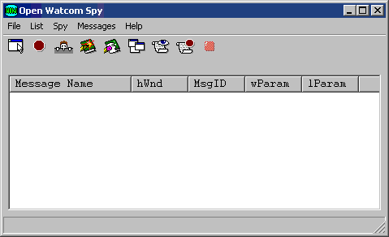
Figure 149. The Spy window contains the menu bar, message list and toolbar.
Quitting Spy
To exit Spy, choose Exit from the File menu of the Spy window.
The menu bar consists of the following five menus:
- File
- Save to a file, start and pause logging, and configure the session
List
- Manipulate the message list by clearing, marking, and autoscrolling it
Spy
- Start, stop, and pause the Spy session, select the windows you want to monitor, and gain access to information in windows.
Messages
- Select the messages you want to monitor or stop on.
Help
- Gain access to on-line help information
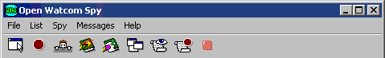
Figure 150. The Spy menu bar.
The Spy toolbar provides quick access to commonly used menu items. The following explains the function each tool
bar button performs as well as the equivalent menu item.
- SELECT WINDOW
- Select a single window and start spying on it or add a window to the list of windows being spied on. This is equivalent
to the Select Window and Add Window items in the Spy menu.
STOP
- Stop monitoring the selected window(s) and cancel the window selections. This is equivalent to the Stop Spying item
in the Spy menu.
PEEK AT WINDOW
- Obtain information about a selected window. This is equivalent to the Peek at Window item in the Spy menu.
MARK
- Record your own comments in the Spy window. This is equivalent to the Mark item in the List menu.
CLEAR MESSAGE LIST
- Erase all messages from the Spy window. This is equivalent to the Clear Message List item in the List menu.
SHOW SELECTED WINDOWS
- Obtain information about the windows open on your desktop. This is equivalent to the Show Selected Windows item in the
Spy menu.
MESSAGES TO WATCH
- Select the messages you want to monitor and log. This is equivalent to the Messages to Watch item in the Messages menu.
MESSAGES TO STOP ON
- Specify the messages you want Spy to stop on when it encounters them. This is equivalent to the Messages to Stop on
item in the Messages menu.
Figure 151. The Spy toolbar.
Only one of the following three toolbar buttons appears at a time.
- NOT SPYING
- This button appears when Spy is not monitoring any windows. Pressing this button has no effect. It is simply an
indicator to you that spying is not in progress.
STOP SPYING TEMPORARILY
- This button appears when Spy is in the process of monitoring one or more windows. Choosing this button temporarily suspends
monitoring operations. This is equivalent to the Stop Spying Temporarily item in the Spy menu.
CONTINUE SPYING
- This button appears when you instruct Spy to temporarily suspend monitoring operations. Choosing this button resumes
monitoring operations. This is equivalent to the Continue Spying item in the Spy menu.
The Spy Window
The Spy window contains the menu bar and the toolbar discussed above. However, most of the Spy window is occupied
by the message list. This is where Spy logs the messages it monitors.
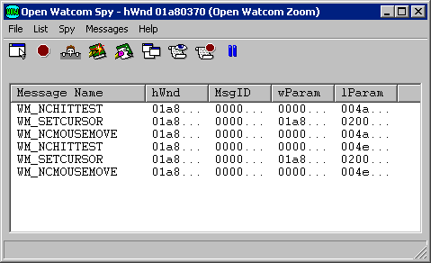
Figure 152. Once you start spying, the message list displays the messages selected for
monitoring.
For the messages it monitors Spy displays the following information in the message list:
- Message Name
- Name of the message sent.
hWnd
- The handle of the window that received the message.
MsgID
- The numeric identifier of the message.
wParam
- Data specific to the message. This is the value that will be passed as the wparam parameter of the window's callback
function. To find the meaning of this parameter see the section Viewing Message Information for information on how
to get help on a message or refer to your Windows 3.x or Win32 programmer's documentation.
lParam
- Data specific to the message. This is the value that will be passed as the lparam parameter of the window's callback
function. To find the meaning of this parameter see the section Viewing Message Information for information on how
to get help on a message or refer to your Windows 3.x or Win32 programmer's documentation.
Several spy functions affect the appearance or behavior of the Spy window.
- Setting the Fonts
- Saving
- Clearing the Message List
- Marking the Message List
- Automatic Scrolling
- Always On Top
Spy: Setting the Fonts
The Set Font item in the File menu allows you to set the font, style, and size for the text in the Spy window. Choosing
this item opens the Font dialog box. Select the desired font details and click on OK to close the dialog and apply
the fonts.
Spy: Saving the Contents of the Message List
The Save and Save as items under the File menu in Spy allow you to save the contents of the message list to a text file.
Saving information to a file enables you to print the output later or annotate the text file on-line.
Choose Save from the File menu in the Spy window to save the message list information into the current working directory.
A message box appears indicating the path to which Spy saved the file.
Choose Save As from the File menu to specify the file to which you want to save the currently displayed information.
This opens a Save As dialog box where you select the desired file. Click on OK when completed. A message
box appears indicating the path to which Spy saved the file.
Spy: Clearing the Message List
Choose Clear from the File menu to delete all information from the message list.
Spy: Marking the Message List
Use the Mark function to annotate the information in the message list by entering text into it.
- To mark the message list :
-
(1)
- Choose Mark from the List menu.
This opens the Set Mark dialog box.

Figure 153. With the Set Mark dialog, you can annotate the message list by entering text
and choosing a mark style.
(2)
- Type the desired text in the Enter Mark Text field.
The text you enter will appear at the end of the message list
(3)
- Select the desired Mark Style option.
These options determine how the entered text is formatted when it is added to the message list When the boxed option is
selected, the text is displayed bordered by asterisks. With this option the text is easier to find. When the
plain option is selected, the text is displayed as it is entered.
(4)
- Click on OK when completed.
The Set Mark dialog closes and the text in the dialog appears at the end of the message list.

Figure 154. Text you enter in the Set Mark dialog appears in the message list in the selected
style.
As Spy writes new information to the message list, the information is added to the bottom of the list. Choosing
Auto Scroll Message List from the List menu tells Spy to automatically scroll the information in the message list so that
the most recent information written to the message list always appears on the screen. The Auto Scroll Message List
menu item is checked when this feature is active.
When this feature is deactivated, new messages written to the message list are added to the bottom of the list and
you must use the scroll bar to scroll down and view the information.
Spy: Always On Top
The Spy window behaves like all other windows-it moves into the background when other windows are selected. To ensure
the Spy window is visible at all times, select the Always On Top item from the File menu. The Always On Top menu item
is checked when this feature is enabled. To turn this feature off, select the item again from the File menu.
Selecting Messages to Monitor
Each window receives an overwhelming volume of messages. Generally, you will only be interested in a small subset
of these. Spy lets you limit the messages on which it will report so that you do not have to sort through all the extraneous
data yourself.
Spy maintains two lists of messages: the messages to watch list and the messages to stop on list. When
spy monitors a message in the messages to watch list it adds information about that message to the Message List in the Spy
window. When spy monitors a message in the messages to stop on list it displays a message box reporting that the message
has been encountered and pauses spying operations until you restart them by selecting Continue Spying from the spy menu.
Any message that does not appear on either list is ignored by Spy
To modify the messages to watch list choose Messages To Watch from the Messages menu. To modify the messages
to stop on list choose Messages To Stop On from the Messages menu. In either case, the process of modifying the list
is the same. The rest of this section explains the dialogs you use to do this.
Selecting Individual Messages
The most precise way to modify the messages to watch or messages to stop on lists is simply to select a set of individual
messages to appear on the list. To select a set of individual messages to monitor follow these procedures.
- (1)
- Choose Messages To Watch or Messages To Stop On from the Messages Menu.
This opens a Message Class dialog box. The caption of the dialog box reflects the menu item selected.

Figure 155. In the Message Class dialog, select the Individual Message Control button.
(2)
- Click on the Individual Message Control button.
This opens a dialog that contains a check box for each message.

Figure 156. In the Message Range dialog, you select the individual messages you want Spy
to watch or stop on.
(3)
- Add or remove messages from the list of messages.
A message appears on the selected list if it is checked. The following buttons are provided for your convenience:
- Clear All
- Uncheck all messages on this dialog.
Set All
- Check all messages on this dialog.
(4)
- Choose an action button.
The following buttons allow you to proceed from this dialog:
- Next
- Close the current dialog and open the one for the alphabetic range of messages immediately following this one. Changes
made on the current dialog will not be saved until you press the OK button on some future message range dialog.
Prev
- Close the current dialog and open the one for the alphabetic range of messages immediately preceding this one. Changes
made on the current dialog will not be saved until you press the OK button on some future message range dialog.
OK
- Close the current dialog and save all changes made in it and in previous dialog that were exited using the Next or Prev button.
Cancel
- Close the current dialog and ignore all changes made in it and in previous dialog that were exited using the Next or Prev
button.
(5)
- Select OK on the Message Class dialog.
The message class dialog closes and your message selections take effect. If you choose Cancel on the Message Class
dialog your message selections will be discarded.
Selecting Message Classes
Although modifying the list of messages to watch or stop on by selecting individual messages is more precise, you may
find this process tedious. To speed up the process several message classes have been defined for you. These classes
group messages by their function. The messages contained in each message class are listed in the section entitled Predefined Spy Message Classes
Selecting a message class adds all the individual messages in that class to the selected list. Similarly, de-selecting
a message class removes all the individual messages in that class from the selected list.
To select messages to monitor by class follow these procedures:
- (1)
- Choose Messages To Watch or Messages To Stop On from the Messages Menu.
This opens a Message Class dialog box. The caption of the dialog box reflects the menu item selected.
Figure 157. In the Message class dialog, choose the message classes you want Spy to monitor.
(2)
- Click on the check box beside the message classes you want to monitor.
A message class is selected when an X appears in the check box. The following buttons are available for your convenience:
- Clear All
- De-select all of the message classes.
Set All
- Select all of the message classes.
(3)
- Click on OK to save your choices and close the dialog.
Selecting Cancel on this dialog exits without saving your selections.
Predefined Spy Message Classes
The sections that follow list the messages contained in each message class that Spy defines for you.
Messages followed by (*) are undocumented messages.
Messages followed by (**) are available under Win32 only.
Clipboard Messages
WM_ASKCBFORMATNAME WM_CHANGECBCHAIN
WM_CLEAR
WM_CLIPBOARDUPDATE (**)
WM_COPY
WM_CUT
WM_DESTROYCLIPBOARD WM_DRAWCLIPBOARD
WM_HSCROLLCLIPBOARD WM_PAINTCLIPBOARD
WM_PASTE
WM_RENDERALLFORMATS
WM_RENDERFORMAT WM_SIZECLIPBOARD
WM_UNDO
WM_VSCROLLCLIPBOARD
DDE Messages
WM_DDE_ACK
WM_DDE_ADVISE
WM_DDE_DATA
WM_DDE_EXECUTE
WM_DDE_INITIATE WM_DDE_POKE
WM_DDE_REQUEST WM_DDE_TERMINATE
WM_DDE_UNADVISE
Init Messages
WM_INITDIALOG WM_INITMENU
WM_INITMENUPOPUP WM_UNINITMENUPOPUP (**)
WM_APPCOMMAND (**) WM_BEGINDRAG (*)
WM_CHAR
WM_CHARTOITEM
WM_COMMAND
WM_CONTEXTMENU (**)
WM_COPYDATA (**) WM_DEADCHAR
WM_DRAGLOOP (*) WM_DRAGMOVE (*)
WM_DRAGSELECT (*) WM_DROPOBJECT (*)
WM_EXITSIZEMEOVE (*) WM_HSCROLL
WM_INPUT (**) WM_INPUT_DEVICE_CHANGE
(**)
WM_INPUTLANGCHANGE (**) WM_INPUTLANGCHANGEREQUEST (**)
WM_KEYDOWN
WM_KEYUP
WM_LBTRACKPOINT (*) WM_MENUCHAR
WM_MENUCOMMAND (**) WM_MENUDRAG (**)
WM_MENUGETOBJECT (**) WM_MENURBUTTONUP (**)
WM_MENUSELECT WM_NEXTMENU
(*)
WM_NOTIFY (**) WM_NOTIFYFORMAT
(**)
WM_QUERYDROPOBJECT (*) WM_TCARD (**)
WM_UNICHAR (**) WM_VSCROLL
MDI Messages
WM_ISACTIVEICON (*) WM_MDIACTIVATE
WM_MDICASCADE WM_MDICREATE
WM_MDIDESTROY WM_MDIGETACTIVE
WM_MDIICONARRANGE WM_MDIMAXIMIZE
WM_MDINEXT
WM_MDIRESTORE
WM_MDISETMENU WM_MDITILE
Mouse Messages
WM_CAPTURECHANGED (**) WM_LBUTTONDBLCLK
WM_LBUTTONDOWN WM_LBUTTONUP
WM_MBUTTONDBLCLK WM_MBUTTONDOWN
WM_MBUTTONUP WM_MOUSEACTIVATE
WM_MOUSEHOVER (**) WM_MOUSEHWHEEL (**)
WM_MOUSELEAVE (**) WM_MOUSEMOVE
WM_MOUSEWHEEL (**) WM_RBUTTONDBLCLK
WM_RBUTTONDOWN WM_RBUTTONUP
WM_SETCURSOR WM_XBUTTONDBLCLK
(**)
WM_XBUTTONDOWN (**) WM_XBUTTONUP (**)
NC Misc Messages
WM_NCACTIVATE WM_NCCALCSIZE
WM_NCCREATE
WM_NCDESTROY
WM_NCPAINT
NC Mouse Messages
WM_NCHITTEST WM_NCLBUTTONDBLCLK
WM_NCLBUTTONDOWN WM_NCLBUTTONUP
WM_NCMBUTTONDBLCLK WM_NCMBUTTONDOWN
WM_NCMBUTTONUP WM_NCMOUSEHOVER
(**)
WM_NCMOUSELEAVE (**) WM_NCMOUSEMOVE
WM_NCRBUTTONDBLCLK WM_NCRBUTTONDOWN
WM_NCRBUTTONUP WM_NCXBUTTONDBLCLK
(**)
WM_NCXBUTTONDOWN (**) WM_NCXBUTTONUP (**)
Other Messages
WM_CHANGEUISTATE (**) WM_COALESCE_FIRST
WM_COALESCE_LAST WM_COMMNOTIFY
WM_CONVERTREQUEST (*) WM_CONVERTRESULT (*)
WM_DROPFILES WM_INTERIM
(*)
WM_PENWINFIRST WM_PENWINLAST
WM_PRINT (**) WM_PRINTCLIENT
(**)
WM_QUERYSAVESTATE (*) WM_QUEUESYNC
WM_QUERYUISTATE (**) WM_SIZEWAIT (*)
WM_SYNCTASK (*) WM_TESTING (*)
WM_UPDATEUISTATE (**) WM_YOMICHAR (*)
System Messages
WM_CANCELJOURNAL (**) WM_COMPACTING
WM_DEVMODECHANGE WM_DEVICECHANGE (**)
WM_DISPLAYCHANGE (**) WM_ENDSESSION
WM_ENTERIDLE WM_ENTERMENULOOP
WM_EXITMENULOOP WM_FILESYSCHANGE (*)
WM_NULL
WM_POWER
WM_POWERBROADCAST (**) WM_SPOOLERSTATUS
WM_SYSCHAR
WM_SYSCOLORCHANGE
WM_SYSCOMMAND WM_SYSDEADCHAR
WM_SYSKEYDOWN WM_SYSKEYUP
WM_SYSTEMERROR (*) WM_SYSTIMER (*)
WM_THEMECHANGED (**) WM_TIMECHANGE
WM_TIMER
WM_USERCHANGED (**)
WM_WININICHANGE WM_WTSSESSION_CHANGE
(**)
User Messages
WM_USER
Unknown Messages
None
Window Messages
WM_ACTIVATE
WM_ACTIVATEAPP
WM_ACTIVATESHELLWINDOW (*) WM_ALTTABACTIVE (*)
WM_CANCELMODE WM_CREATE
WM_CHILDACTIVATE WM_CLOSE
WM_COMPAREITEM WM_CTLCOLOR
WM_CTLCOLORBTN (**) WM_CTLCOLORDLG (**)
WM_CTLCOLOREDIT (**) WM_CTLCOLORLISTBOX (**)
WM_CTLCOLORMSGBOX (**) WM_CTLCOLORSCROLLBAR (**)
WM_CTLCOLORSTATIC (**) WM_DELETEITEM
WM_DESTROY
WM_DRAWITEM
WM_DWMCOLORIZATIONCHANGED
(**)
WM_DWMCOMPOSITIONCHANGED (**)
WM_DWMNCRENDERINGCHANGED
(**)
WM_DWMWINDOWMAXIMIZEDCHANGE (**)
WM_ENABLE
WM_ENTERSIZEMOVE (*)
WM_ERASEBKGND WM_FONTCHANGE
WM_GETDLGCODE WM_GETFONT
WM_GETHOTKEY WM_GETICON
(**)
WM_GETMINMAXINFO WM_GETTEXT
WM_GETTEXTLENGTH WM_GETTITLEBARINFOEX (**)
WM_HELP (**) WM_ICONERASEBKGND
WM_KILLFOCUS WM_MEASUREITEM
WM_MOVE
WM_MOVING (**)
WM_NEXTDLGCTL WM_OTHERWINDOWCREATED
WM_OTHERWINDOWDESTROYED WM_PAINT
WM_PAINTICON WM_PALETTECHANGED
WM_PALETTEISCHANGING WM_PARENTNOTIFY
WM_QUERYDRAGICON WM_QUERYENDSESSION
WM_QUERYNEWPALETTE WM_QUERYOPEN
WM_QUERYPARKICON (*) WM_QUIT
WM_SETFOCUS
WM_SETFONT
WM_SETHOTKEY WM_SETICON
(**)
WM_SETREDRAW WM_SETTEXT
WM_SETVISIBLE (*) WM_SHOWWINDOW
WM_SIZE
WM_SIZING (**)
WM_STYLECHANGED (**) WM_STYLECHANGING (**)
WM_SYNCPAINT (*) WM_VKEYTOITEM
WM_WINDOWPOSCHANGED WM_WINDOWPOSCHANGING
Saving and Loading Message Configurations
Selecting messages to monitor can be an involved procedure because of the number of options available. Once selected,
the group of message selections is called a message configuration.
Spy allows you to save message configurations and recall them again. This section describes the functions relating
to message configurations:
- Using the Auto Save Feature
- Saving a Message Configuration
- Loading a Message Configuration
Using the Auto Save Feature
When the Auto Save Message Configuration feature is active Spy saves your message configuration each time you exit.
The next time you start Spy, the message configuration is automatically reloaded.
To activate or deactivate this feature choose the Auto Save Message Configuration item from the Messages menu.
When this feature is active its menu item is checked.
Saving a Message Configuration
With Spy you can save your message configurations so you can easily load a previous message configuration instead of reselecting
the desired messages.
To save a message configuration follow these procedures:
- (1)
- Select the messages you want to monitor as described in the sections entitled Selecting Message Classes
and Selecting Individual Messages.
(2)
- Choose Save Message Configuration from the Messages menu.
This opens a Save As dialog box.
(3)
- Specify the desired file name and path for this message configuration.
(4)
- Click on OK in the Save As dialog box when completed.
This saves the message configuration as specified and closes the dialog.
Loading a Message Configuration
To load a previously saved message configuration, follow these procedures:
- (1)
- Choose Load Message Configuration from the Messages menu.
The Open dialog box appears.
(2)
- Select the message configuration you previously saved.
(3)
- Click on OK.
The Open dialog box closes and Spy loads the selected message configuration.
Spying
Once you have selected the messages you want Spy to monitor, you select windows for Spy to watch. This starts spying
operations.
Start Spying
Message logging begins when you select a window to monitor. Spy monitors the selected window for the messages specified.
You can start spying by selecting one window to spy on, or choosing to spy on all windows.
- To spy on all windows:
-
(1)
- Choose All Windows from the Spy menu.
Spy begins immediately monitoring all windows for the specified messages. The caption bar specifies that you are
monitoring all windows.
- Note:
- You can use the All Windows menu item at any time, not just to start spying. If you begin spying by choosing one window,
then want to monitor all windows, choose All Windows from the Spy menu.
- To spy on one window:
-
(1)
- Choose Select Window from the Spy menu.
This minimizes the Spy window and opens the Select Window dialog which prompts you to choose a window to monitor.

Figure 158. The Select Window dialog displays information for the window on which the cursor
rests.
(2)
- Position the cursor inside the icon in the dialog box. Press the mouse button and hold it down.
As you move the cursor across the screen, the window on which the cursor is positioned has a highlighted border and information
about the selected window appears in the dialog box.
(3)
- Position the cursor on the window you want to monitor. Release the mouse button.
- Note:
- You can select only one window at a time using the Select Window dialog box.
(4)
- Click on OK to save this window selection.
This closes the Select Window dialog and returns you to the Spy window. The caption bar indicates the window you
are monitoring.
Spying on More Windows
Once you have started spying you can select additional windows to monitor, unless you chose All Windows to start the spy
process. You select additional windows in the same way you select one window.
- (1)
- Choose Add Window from the Spy menu.
This minimizes the Spy window and opens the Select Window dialog.
(2)
- Position the cursor inside the icon in the dialog box. Press the mouse button and hold it down.
Information about the currently selected window appears in the dialog.
(3)
- Position the cursor on the window you want to monitor. Release the mouse button.
- Note:
- You can select only one window at a time using the Select Window dialog box.
(4)
- Click on OK to save this window selection.
This closes the Select Window dialog and opens the Spy window. The window heading specifies that you are monitoring
multiple windows.
Stop Spying
Choose Done Spying from the Spy menu to stop spying on the selected windows. When you choose this item, Spy does
not retain the list of windows selected for spying.
Pause Spying
Choose Stop Spying Temporarily from the Spy menu to pause message logging. When you choose this item, Spy retains
the list of windows selected for spying.
The Stop Spying Temporarily menu item changes to Continue Spying when the pause is active. Choose Continue Spying
from the Spy menu to start spying again. This starts spying and changes the menu item back to Stop Spying Temporarily.
Double clicking on a message in the message list reveals a Message Information dialog box which contains additional information
about the selected message. This dialog displays the message, the number of times it has been issued, and the window
that received the selected instance of the message.
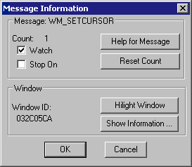
Figure 159. The Message Information dialog box displays additional information about the
selected message.
From the Message Information dialog you can perform the following actions:
- Reset the usage count
- Display Windows help for the message.
- Change the monitoring state for the message.
- Highlight the window that received the message.
- Display information about the window that received the message.
Resetting the Usage Count
You can reset the usage count for the message to zero by pressing the Reset Count button on the Message Information dialog.
The usage count will also be automatically reset to zero when you start spying or clear the message list.
Displaying Help for the Message
You can get more information about most messages, such as the meaning of their parameters, by the Help for Message button
on the Message Information dialog. This starts the Windows help facility to display the information. Help is
not available for all messages.
Changing the Monitoring State of the Message
The watch and stop on check boxes in the Message Information dialog indicate if the message appears in the messages to
watch or messages to stop on lists. You can add the message to either of these lists by checking the appropriate check
box or remove it by removing the check.
Highlighting the Receiving Window
If the window that received this message has not been destroyed you can highlight it by selecting the Highlight Window
button. This changes the border color of the window so it is easy to locate.
If the window that received this message has not been destroyed you can get additional information about it by selecting
the Show Information button. This opens a Window Information dialog that displays information such as the window's
class, style, size and position. For more information on the Window Information dialog see the section entitled Viewing Window Information.
Spy: Working with Log Files
By writing the information in the message list to a log file, you have a file you can look at in case a program you are
running terminates your applications. In such a situation, your message list is lost so you have no information to
refer to when debugging. Writing to a log file also allows you to print the output later or annotate the text file
on-line.
Spy: Configuring the Log File
Choosing Configure Log from the File menu opens the Log Configuration dialog where you customize Spy's behaviour when
it logs to a file. This dialog contains four sections where you specify information.

Figure 160. In the Log Configuration dialog you set the desired behaviour for Spy when
logging to a file.
Spy: Default Log Name
In the Default Log Name field, specify the file to which Spy writes when you begin logging. Clicking the Browse
button next to this field opens a Choose Log Name dialog that lets you browse your file structure while choosing the log
name.
Spy: Log Name
The settings in the Log Name section of the dialog indicate to Spy how the name of the log file should be determined when
the Log to File menu item is chosen.
When the Query for Log Name option is selected, Spy presents a prompt each time you select Log to File from the File
menu or the toolbar. This reveals a Choose Log Name dialog where you specify the file to which Spy writes the log information.
When the Use Default Log Name option is selected, Spy writes the log information to the file indicated in the Default
Log Name field in the Log Configuration dialog. No prompt appears.
Spy: Action When Log File Exists
The options in the Action When Log File Exists section of the Log Configuration dialog dictate how Spy behaves when you
choose Log to File and a log file already exists.
- Replace
- Spy writes over the existing log file. All information in the existing file is lost.
Append
- Spy adds the new information to the end of the existing log file.
Query
- Spy prompts you with a message box that allows you to choose a course of action-Replace, Append, or Cancel.
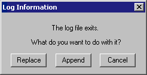
Figure 161. The Log Information message box appears when logging if the Query option is
selected on the Log Configuration dialog.
Spy: Start Logging
Choosing Log to File from the File menu tells Spy to write all new information added to the message list to the log file.
Depending on the options selected in the Log Configuration dialog, the following dialogs may appear when you choose
Log to File:
- Choose Log Name dialog-On this dialog you specify the file to which Spy writes the log information.
- Log Information dialog-On this dialog you choose a course of action for logging when the specified log file already exists.
- Note:
- Choosing Cancel on either of these dialogs closes the dialog and prevents logging from starting.
Spy: Logging Type
There are two ways to write information to the log file:
- Continuous Logging
- Periodic Logging
If the Continuous Logging option is activated, then as Spy writes information to the message list, it simultaneously writes
to a log file.
When the Periodic Logging option is activated, Spy writes information to the log file only after a reasonable amount
of information, as determined by the application, has been recorded in the message list
Periodic logging is more convenient because it is faster than continuous logging. However, if your system goes
down, some information will be lost. By simultaneously writing to the log file and the message list, continuous logging
allows you to store all information in a log file without the chance of losing information.
Spy: Stop Logging
Once the log is started, Spy continues writing to the log file until you stop logging. A check mark beside the Log
to File item in the File menu indicates that a log is being created. Choose this item again to stop logging.
Spy: Pause Logging
To temporarily stop writing information to the log file you can choose the Pause Log item from the File menu. A
check mark appears beside the item indicating that the log is currently paused. To restart logging, choose this item
again from the File menu.
In Spy you can view different window information using items in the Spy menu. You can view:
- information about a specific window
- a list of all windows open on your desktop
To view information about a window:
- (1)
- Choose Peek At Window from the Spy menu.
This minimizes the Spy window and opens the Peek At Window dialog box.
(2)
- Position the cursor inside the icon in the dialog box. Press the mouse button and hold it down.
As you move the cursor across the screen, the window on which the cursor is positioned has a highlighted border and information
about the selected window appears in the dialog box. The following information is displayed:
- Window
- the handle of the window and its title, if it has one
Class
- the name of the window class to which this window belongs
Parent
- the handle of the window's parent if it has one
Size
- the screen coordinates of the top right and bottom left corners of the window, followed by the window's size
Window Style
- the window's style bits
Class Style
- the style bits for the window's class
Child ID
- a numeric identifier associated with the window when it is created (This only appears if the selected window is a child window.)
(3)
- Position the cursor on the window you want to monitor. Release the mouse button.
(4)
- Click on OK to close the dialog box.
This closes the Peek at Window dialog box and returns you to the Spy window.
Listing All Windows
To view a list of all windows open on your desktop:
- (1)
- Choose Show Selected Windows from the Spy menu.
This opens the Window Selection dialog box which displays the following:
- window handles
- window captions

Figure 162. The Window Selection dialog displays a list of all windows currently open on
the desktop.
The information appears in a hierarchical manner. Windows with a parent are listed, indented, directly below
their parent. Windows currently being monitored by Spy are marked with an asterisk.
(2)
- From this dialog you can perform the following functions:
- Add a window for Spy to monitor
- Delete a window that Spy is monitoring
- Select all windows for monitoring
- View information about a window in the list
Adding a Window
You can add a window for Spy to monitor in two ways:
- (1)
- Double click on the line for the window you want to add, or
(2)
- Click once on the line for the desired window to select it and then select the Add button.
The window you added is now marked with an asterisk indicating that Spy is monitoring that window.
Click on OK to close the dialog and save the updated window list.
Deleting a Window
To delete a window that Spy is monitoring, do one of the following:
- (1)
- Double click on the line for the window you want to delete, or
(2)
- Click once on the line for the window that you no longer want Spy to monitor and then select the Delete button.
This removes the asterisk from beside the window handle, indicating that Spy is no longer monitoring that window.
Click on OK to close the dialog and save the updated window list.
Monitoring All Windows
To instruct spy to start spying on all windows open on the desktop, check the "Spy on all windows" check box.
Then chose the OK button to close the dialog and accept this selection.
To view information about a window in the list, do the following:
- (1)
- Click once on the line for the window whose information you want to view.
The selected line appears highlighted in the list.
(2)
- Select the Show Info button on the dialog.
The Window Information dialog box opens. The information in this dialog is identical to the information in the Peek
at Window dialog box. Refer to the section entitled Viewing Information About a Window
for a description of the fields in this dialog.
(3)
- Click OK.
The Window Information dialog closes and you return to the Window Selection dialog.
(4)
- Click OK on the Window Selection dialog to close it.
DDE Spy
DDE Spy is a debugging tool that allows you to watch all DDE (Dynamic Data Exchange) activity occurring in the system.
DDE Spy also allows you to monitor DDEML errors and registration of various DDE objects, such as strings, conversations,
links, and servers. DDE is one way for different applications running under Windows to communicate with each other.
By watching the communications between applications, you can determine if the information being sent is correct.
If it does not seem correct you can locate the cause of the error.
Using DDE Spy
This section discusses the following topics:
- Starting DDE Spy
- Quitting DDE Spy
- The DDE Spy Menu Bar
- The DDE Spy Toolbar
Starting DDE Spy
To start DDE Spy, double click on the DDE Spy icon. This opens the DDE Spy window. When you start the application,
the Open Watcom DDE Spy window is always empty. This window displays the menu bar and a toolbar.

Figure 163. The Open Watcom DDE Spy window contains the event list, menu bar, and toolbar.
Quitting DDE Spy
To exit DDE Spy, choose Exit from the File menu of the Open Watcom DDE Spy window.
The menu bar consists of the following six menus:
- File
- Save to a file, start and pause logging, and configure the session
Output
- Work with the event list and control its output behaviour
Monitor
- Select the information you want DDE Spy to write to the event list
Track
- Display windows summarizing information for DDE objects tracked by DDE Spy
Aliases
- Replace numeric values with meaningful text
Help
- Access on-line help information
Figure 164. The Open Watcom DDE Spy menu bar.
In the Open Watcom DDE Spy window, the toolbar appears below the menu bar when the Show Toolbar item in the File menu
is checked. To disable this feature, choose the item again from the File menu and the Toolbar disappears. The
following explains the function each toolbar button performs, as well as the equivalent menu item.
- TRACK STRINGS
- Display or hide the strings tracking window. This window displays a list of all strings currently registered with the
operating system. This button is equivalent to the Strings item in the Track menu.
TRACK CONVERSATIONS
- Display or hide the conversations tracking window. This window displays a list of all conversations currently active
in the system. This button is equivalent to the Conversations item in the Track menu.
TRACK LINKS
- Display or hide the links tracking window. This window displays a list of all links currently active in the system.
This button is equivalent to the Links item in the Track menu.
TRACK SERVERS
- Display or hide the servers tracking window. This window displays a list of all servers currently registered with the
operating system. This button is equivalent to the Servers item in the Track menu.
LOG
- Start Logging. This button is equivalent to the Log to File item in the File menu.
MARK
- Record your own comments in the event list. This button is equivalent to the Mark item in the Output menu.
CLEAR
- Clear the event list. This button is equivalent to the Clear item in the Output menu.
ADD HWND ALIAS
- Replace window handle values with text. This is equivalent to the Add Hwnd Alias item in the Alias menu.
ADD TASK ALIAS
- Replace task id values with text. This is equivalent to the Add Task Alias item in the Alias menu.
ADD CONVERSATION ALIAS
- Replace conversation id values with text. This is equivalent to the Add Conversation Alias item in the Alias menu.
Figure 165. The Open Watcom DDE Spy toolbar.
The DDE Spy Event List
Opening DDE Spy reveals an empty window. This is the event list where DDE Spy logs the information you define in
the Monitor menu. Some examples of events are strings being created or deleted and conversations and links being established
or terminated.

Figure 166. Once you start spying, the event list displays the information selected for
monitoring.
This section describes the tasks you can perform in relation to the event list.
DDE Spy: Setting the Font
The Font item in the File menu allows you to set the font, style, and size for the text in the DDE Spy window. Choosing
this item opens the Font dialog box. Select the desired font details and click on OK to close the dialog and apply
the fonts.
DDE Spy: Saving the Event List to a File
The Save items in the File menu allow you to save the contents of the event list to a text file. Saving information
to a file enables you to print the output later or annotate the text file on-line.
Choose Save from the File menu in the Open Watcom DDE Spy window to save the event list information into the current
working directory. A message box appears indicating the path to which DDE Spy saved the file.
Choose Save As from the File menu to specify the file to which you want to save the event list information.
This opens a Save As dialog box where you select the desired file. Click on OK when completed. A message box
appears indicating the path to which DDE Spy saved the file.
DDE Spy: Clearing the Event List
Choose Clear from the File menu to delete all information from the current event list.
DDE Spy: Marking the Event List
Use the Mark function to annotate the information in the event list by entering text into it.
- To mark the event list :
-
(1)
- Choose Mark from the output menu.
This opens the Set Mark dialog box.
Figure 167. With the Set Mark dialog, you can annotate the event list by entering text
and choosing a mark style.
(2)
- Type the desired text in the Enter Mark Text field.
The text you enter will appear at the end of the event list
(3)
- Select the desired Mark Style option.
These options determine how the entered text is formatted when it is added to the event list When the boxed option is
selected, the text is displayed bordered by asterisks. With this option the text is easier to find. When the
plain option is selected, the text is displayed as it is entered.
(4)
- Click on OK when completed.
The Set Mark dialog closes and the text in the dialog appears at the end of the event list.
Figure 168. Text you enter in the Set Mark dialog appears in the event list in the selected
style.
DDE Spy: Pausing the Event List Output
The Output to Screen item in the Output menu allows you to temporarily stop writing information to the event list.
When this menu item is unchecked output will not be written to the event list. Although DDE Spy stops writing information
to the event list, it still writes it to the log file if you are currently creating a log file. When DDE Spy is not
writing information to the event list applications will run sightly faster so when you are not interested in viewing the
event list you may want to stop writing to it.
- Note:
- If you mark the event list while the Output to Screen feature is deactivated, the text you enter does not appear in the event
list.
As DDE Spy writes new information to the event list, the information is added to the bottom of the list. Checking
the Auto Scroll item in the Output menu tells DDE Spy to automatically scroll the information in the event list so that the
most recent information written to the event list always appears on the screen.
When the Auto Scroll menu item not checked you must use the scroll bar to scroll down and view any new information
that is added to the event list.
The monitor menu contains items that let you specify the types of DDE events that DDE Spy will report on by recording
them in the event list. Limiting the amount of information logged makes reading the event list more efficient.
When an item appears in the menu with a checkmark, DDE Spy reports on that type of activity. The following describes
various types of activity DDE Spy can monitor.
- Posted Messages
- When the Posted Messages item is checked, DDE Spy makes an entry in the event list whenever a DDE message that has been selected
using the Message Filter dialog is posted to an application's message queue.
Sent Messages
- When the Sent Messages item is checked, DDE Spy makes an entry in the event list whenever a DDE message that has been selected
using the Message Filter dialog is sent to an application.
String Handle Data
- DDE applications use strings to communicate with other applications. These strings are registered with the operating
system by the applications using them. When done with the strings, the applications tell the operating system they
are done and the system destroys the strings. DDE Spy reports on all string operations that occur within the system
when the String Handle Data menu item is checked.
Callbacks
- Callbacks are special functions called by the operating system to process DDE messages. When the Callback item is checked
DDE Spy makes an entry in the event list each time the operating system calls a DDE Callback for a transaction type that
has been selected using the Callback Filter dialog.
Errors
- A DDE error usually indicates that a DDE operation has failed. When the Errors item is checked, DDE Spy reports all
DDE errors that occur within the system.
Conversations
- A conversation is the connection established between two applications that is necessary to perform DDE operations. When
the Conversations item is checked, DDE Spy makes an entry in the event list each time a conversation is established or terminated.
Links
- A link is a relationship between two DDE applications: a server and a client. A link is established for a single
value maintained by the server. When this value changes the server notifies the client. When the Links item is
checked, DDE Spy logs notifications in the event list each time a link is established or terminated.
Setting the Message Filter
The Set Message Filter item opens the Message Filter dialog which lists the various DDE messages that can be posted or
sent. This dialog allows you to select the specific messages you want DDE Spy to write to the event list.
Figure 169. In the Set Message Filter dialog, select the messages on which you want DDE
Spy to report.
Select the messages that you want DDE Spy to report on when posted or sent. A message is activated when its
check box contains a check.
- Use the Set All button in this dialog to activate all of the messages.
- Use the Clear All button in this dialog to deactivate all of the messages.
Click on OK when the desired messages are activated.
Setting the Callback Filter
The Set Callback Filter menu item opens the Callback Filter dialog which lists the various types of transactions for which
a DDE callback function may be called. This dialog allows you to specify the transaction types you want DDE Spy to
report in the event list.

Figure 170. In the Set Callback Filter dialog, select the transaction types on which you
want DDE Spy to report.
Select the transaction types on which you want DDE Spy to report. A transaction type will be reported on when
its check box contains a check.
- Use the Set All button in this dialog to activate all of the transaction types.
- Use the Clear All button in this dialog to deactivate all of the transaction types.
Click on OK when the desired transaction types are activated.
DDE Spy: Working with Log Files
By writing the information in the event list to a log file, you have a file you can look at in case a program you are
running terminates your applications. In such a situation, your event list is lost so you have no information to refer
to when debugging. Writing to a log file also allows you to print the output later or annotate the text file on-line.
DDE Spy: Configuring the Log File
Choosing Configure Log from the File menu opens the Log Configuration dialog where you customize DDE Spy's behaviour when
it logs to a file. This dialog contains four sections where you specify information.
Figure 171. In the Log Configuration dialog you set the desired behaviour for DDE Spy when
logging to a file.
DDE Spy: Default Log Name
In the Default Log Name field, specify the file to which DDE Spy writes when you begin logging. Clicking the Browse
button next to this field opens a Choose Log Name dialog that lets you browse your file structure while choosing the log
name.
DDE Spy: Log Name
The settings in the Log Name section of the dialog indicate to DDE Spy how the name of the log file should be determined
when the Log to File menu item is chosen.
When the Query for Log Name option is selected, DDE Spy presents a prompt each time you select Log to File from the
File menu or the toolbar. This reveals a Choose Log Name dialog where you specify the file to which DDE Spy writes
the log information.
When the Use Default Log Name option is selected, DDE Spy writes the log information to the file indicated in the
Default Log Name field in the Log Configuration dialog. No prompt appears.
DDE Spy: Action When Log File Exists
The options in the Action When Log File Exists section of the Log Configuration dialog dictate how DDE Spy behaves when
you choose Log to File and a log file already exists.
- Replace
- DDE Spy writes over the existing log file. All information in the existing file is lost.
Append
- DDE Spy adds the new information to the end of the existing log file.
Query
- DDE Spy prompts you with a message box that allows you to choose a course of action-Replace, Append, or Cancel.
Figure 172. The Log Information message box appears when logging if the Query option is
selected on the Log Configuration dialog.
DDE Spy: Start Logging
Choosing Log to File from the File menu tells DDE Spy to write all new information added to the event list to the log
file. Depending on the options selected in the Log Configuration dialog, the following dialogs may appear when you
choose Log to File:
- Choose Log Name dialog-On this dialog you specify the file to which DDE Spy writes the log information.
- Log Information dialog-On this dialog you choose a course of action for logging when the specified log file already exists.
- Note:
- Choosing Cancel on either of these dialogs closes the dialog and prevents logging from starting.
DDE Spy: Logging Type
There are two ways to write information to the log file:
- Continuous Logging
- Periodic Logging
If the Continuous Logging option is activated, then as DDE Spy writes information to the event list, it simultaneously
writes to a log file.
When the Periodic Logging option is activated, DDE Spy writes information to the log file only after a reasonable
amount of information, as determined by the application, has been recorded in the event list
Periodic logging is more convenient because it is faster than continuous logging. However, if your system goes
down, some information will be lost. By simultaneously writing to the log file and the message list, continuous logging
allows you to store all information in a log file without the chance of losing information.
DDE Spy: Stop Logging
Once the log is started, DDE Spy continues writing to the log file until you stop logging. A check mark beside the
Log to File item in the File menu indicates that a log is being created. Choose this item again to stop logging.
DDE Spy: Pause Logging
To temporarily stop writing information to the log file you can choose the Pause Log item from the File menu. A
check mark appears beside the item indicating that the log is currently paused. To restart logging, choose this item
again from the File menu.
Tracking with DDE Spy
In the process of DDE interactions programs register and unregister several types of DDE objects such as:
- Strings
- Conversations
- Links
- Servers
The tracking windows offer you an easy way to determine at any time which objects are currently registered with the system.
To open a tracking window choose Strings, Conversations, Links or Servers from the Track menu. This opens a
tracking window that displays all the objects of the selected type that have been registered but not unregistered since DDE
Spy started. The tracking windows are automatically updated whenever an event occurs that changes the displayed information.
Each tracking window lists its information in tabular form under several headings. You can sort the displayed
information based on any column by clicking on the column heading for that column.
Tracking Strings
Choose Strings from the Track menu to open a Strings window which tracks all strings currently registered with the operating
system. As strings are destroyed, DDE Spy removes them from the list.

Figure 173. The Strings window tracks all strings currently registered with the operating
system.
The information in this window is:
- Handle
- The unique numeric identifier for the string
Count
- The current usage count of the string. A string is deleted when its usage count is zero.
String
- The text of the registered string
Tracking Conversations
Choose Conversations from the Track menu to open a Conversations window which tracks all conversations currently active
in the system.

Figure 174. The Conversations window tracks all conversations currently active in the system.
The information in this window is:
- Client
- The unique numeric identifier for the client
Server
- The unique numeric identifier for the server
Service
- The service name specified when the conversation was established
Topic
- The topic specified by the client when the conversation was established
Tracking Links
Choose Links from the Track menu to open a Links window which tracks all links currently active in the system.
Figure 175. The Links window tracks all links currently active in the system.
The information in this window is:
- Client
- The unique numeric identifier for the client
Server
- The unique numeric identifier for the server
Type
- A value indicating if the link is Hot or Warm. When a link is established between a client and server, the server notifies
the client whenever the value of the item changes. When the link type is Warm, the only information sent to the client
is notification that the value of the item has changed. When the link type is Hot, then the notification that the value
has changed is sent to the client as well as the new value of the item.
Service
- The service name specified when the conversation on which this link exists was established
Topic
- The topic specified by the client when the conversation was established.
Item
- The name of the item for which the link is established.
Format
- The format of the information that is being communicated between applications.
Tracking Servers
Choose Servers from the Track menu to open a Servers window which tracks all servers currently registered with the operating
system.

Figure 176. The Servers window tracks all servers currently registered with the operating
system.
The information in this dialog is:
- Server Name
- The name of each server that is registered with the operating system. This name is generally descriptive of the type
of server.
Instance Name
- The server name with a numeric identifier added by the operating system. This name uniquely identifies the server in
the system.
Working with Aliases
The event list displays an overwhelming array of numeric identifiers. The alias functions allow you to replace these
numeric identifiers with meaningful text. This makes the event list easier for you to understand. For example,
if you are monitoring a server application and you know it's task id is 0x1234 then you can replace every occurrence of that
task id with the text "server".
Defining Aliases
Using the alias functions you can define aliases for window handles, task id's and conversation id's.
- (1)
- Choose Add hwnd alias, Add task alias or Add conversation alias from the Alias menu
or
- Click on the appropriate icon on the toolbar.
This opens the appropriate Add Alias dialog. The dialog contains a list box that lists all identifiers of the chosen
type that DDE Spy has encountered.

Figure 177. In the Add Alias dialog box, you replace the selected window handle, task,
or conversation id with descriptive text.
(2)
- Click once on the window handle, task, or conversation for which you want to add an alias
or
- Enter a numeric value in the Value field.
(3)
- Position the cursor in the Current Text field.
(4)
- Enter the text with which you want to replace this numeric identifier.
(5)
- Click on OK to register the alias and close the dialog
or
- Select the Do More button to register the alias and leave the dialog open.
This allows you to create aliases for more numeric identifiers.
Disabling Aliases
Choosing Disable Aliases from the Aliases menu changes all aliased values back to their original numeric identifiers.
The Disable Aliases menu item is checked when this option is active. Choosing the menu item again disables it.
Numeric identifiers are then replaced by their text aliases again.
Purging Aliases
Choosing Purge Aliases from the Aliases menu deletes all aliases set up in DDE Spy. Any values replaced by aliases
will revert to their original numeric values.
Win16: Dr. Watcom for Windows 3.1
The 16-bit version of Dr. Watcom is a post-mortem debugger for Windows 3.1. When an exception occurs in
a program, a post-mortem debugger allows you, after the fact, to examine the state of both the program and the system in
order to determine the cause of the exception. In addition to being a debugging tool, Dr. Watcom is a system
utility that enables you to examine task information.
Dr. Watcom can be a useful tool when performing in-house testing on your applications. By running Dr.
Watcom while testing applications, all faults are logged. This gives you important information to recreate the
errors so you can fix the problems.
- Note:
- Use the 16-bit version of Dr. Watcom to monitor 16-bit Windows (Win16) applications running under Windows 3.1 or Win32
based operating systems. Use the 32-bit version of Dr. Watcom to monitor Win32 applications running under Win32
based operating systems.
Win16: Using Dr. Watcom
This section discusses the following topics:
- Starting Dr. Watcom
- Quitting Dr. Watcom
- The Dr. Watcom Menu Bar
Dr. Watcom is designed to be used effectively while minimized. You only need to view the application window
when an error or warning occurs. When this happens the Dr. Watcom icon changes from stethoscope to an explosion
indicating that information is waiting for your attention in the main window.
Some of Dr. Watcom's main functionality can also be accessed using the system menu while the application is
minimized. This includes the log options, task control, and log current state functions.
Dr. Watcom is more useful with the Windows debug kernel. Under the debug kernel, Windows checks for many
common programming errors and generates debugging messages when it finds them. Dr. Watcom catches the debugging
messages and displays them on the event list. Viewing these messages helps you identify errors in your program that
you might not otherwise see.
Win16: Starting Dr. Watcom
To start Dr. Watcom, double click on the Dr. Watcom icon. This opens the Dr. Watcom window.
Win16: Quitting Dr. Watcom
To exit Dr. Watcom, select Exit from the File menu. This is the only way to quit the application. Unlike
other applications, double clicking on the system menu box or selecting close from the system menu only minimizes the application.
The menu bar consists of the following four menus:
- File
- Save to a file, work with the event list, and configure the session
Log
- Work with the log file
Task
- Work with tasks currently running under Windows
Help
- Access on-line help information
Win16: Using the Dr. Watcom Window
When you open Dr. Watcom, a window appears which contains the event list. The event list records the various
events occurring under Windows. Some examples of events are errors, debugging messages (under the debug kernel of Windows
only), the starting and ending of programs, and the loading and unloading of DLLs.
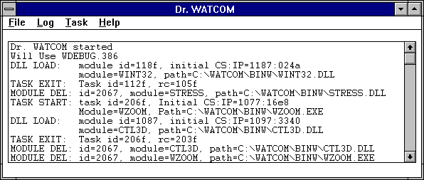
Figure 178. The Dr. Watcom window contains the event list which records and displays
events occurring under Windows.
When a debug message is issued, the Dr. Watcom icon alerts you that an entry has been made on the event list.
The Dr. Watcom icon changes from stethoscope to an explosion. To reset the icon you must acknowledge the
alert in one of two ways:
- (1)
- View the event list by double clicking on the icon, or
(2)
- Choose Clear Alert from the system menu.
Dr. Watcom intercepts all exceptions that occur in the system. An exception is an error that causes your program
to terminate. Dr. Watcom prevents your program from terminating by halting the program's execution. The
state of the program remains intact.
As with non-fatal errors, Dr. Watcom makes an entry on the event list when an exception occurs. However,
instead of alerting you to the entry by changing the icon, Dr. Watcom reveals an exception dialog. This dialog
gives you several options. Refer to the section entitled Win16: Dr. Watcom: Exception Handling
for more information.
The following sections describe functions that allow you to manipulate the event list:
- Saving the Event List
- Clearing the Event List
- Marking the Event List
- Setting the Fonts
The Save items in the File menu allow you to save the contents of the event list to a text file. Saving information
to a file enables you to print the output later or annotate the text file on-line.
Choose Save from the File menu to save the event list information into the current working directory. A message
box appears indicating the path to which Dr. Watcom saved the file.
Choose Save As from the File menu to specify the file to which you want to save the information currently in the window.
This opens a Save As dialog box where you select the desired file. Click on OK when completed. A message
box appears indicating the path to which Dr. Watcom saved the event list.
Win16: Dr. Watcom: Clearing the Event List
Choose Clear from the File menu to delete all information from the event list.
Win16: Dr. Watcom: Marking the Event List
Use the Mark function to annotate the information in the event list by entering text into it.
- To mark the event list :
-
(1)
- Choose Mark from the File menu.
This opens the Set Mark dialog box.
Figure 179. With the Set Mark dialog, you can annotate the event list by entering text
and choosing a mark style.
(2)
- Type the desired text in the Enter Mark Text field.
The text you enter will appear at the end of the event list
(3)
- Select the desired Mark Style option.
These options determine how the entered text is formatted when it is added to the event list When the boxed option is
selected, the text is displayed bordered by asterisks. With this option the text is easier to find. When the
plain option is selected, the text is displayed as it is entered.
(4)
- Click on OK when completed.
The Set Mark dialog closes and the text in the dialog appears at the end of the event list.
Figure 180. Text you enter in the Set Mark dialog appears in the event list in the selected
style.
Win16: Dr. Watcom: Setting the Fonts
The Set Font item in the File menu allows you to set the font, style, and size for the text in the Dr. Watcom window.
Choosing this item opens the Font dialog box. Select the desired font details and click on OK to close the dialog
and apply the fonts.
Win16: Setting the Alert Feature
Each time Dr. Watcom logs a debug message, its icon changes from a stethoscope to an explosion . This indicates
that there is important information waiting for you in the event list. Some debug messages report only minor programming
anomalies that may not be errors at all. The text for these messages is prefixed by wn, for warning. Because
these messages are not urgent, you may not want the icon to signal the message. The Alert on Warnings menu item allows
you to configure Dr. Watcom so that its icon does not change for these minor warning messages.
When the Alert on Warnings item in the File menu is not checked, the icon does not change for minor warning messages.
When this item is checked, the Dr. Watcom icon alerts you when a warning or serious error occurs.
Win16: Showing the DIP status
DIP's (Debugging Information Processors) are Dynamic Link Libraries that Dr. Watcom loads to read debugging information.
Each DIP allows Dr. Watcom to read a different type of debugging information. Choosing the Show DIP Status
item from the File menu displays the Debugging Information Processor Status dialog.

Figure 181. The Debugging Information Processor Status dialog shows the DIP's Dr.
Watcom has loaded.
This dialog contains a list of all the DIP's that Dr. Watcom attempted to load at startup and the results of
those loads. If Dr. Watcom was unable to load a particular DIP then the dialog will show the reason for the failure.
Dr. Watcom can only read a given type of debugging information if it has successfully loaded the appropriate
DIP.
Win16: Using the Clear Alert Function
If you are running Dr. Watcom minimized then each time an error or warning is logged, the icon changes from a stethoscope
to an explosion. Unless you reset the icon, you will not know when more events are added to the event list.
There are two ways to reset the Dr. Watcom icon:
- (1)
- Double click on the icon to view the event list, or
(2)
- Choose Clear Alert from the system menu.
To clear the alert message, click on the Dr. Watcom icon to reveal the system menu. Choose Clear Alert from
the menu to change the icon back to the stethoscope. Dr. Watcom still logs the event, but you do not have to
look at it immediately.
Win16: Dr. Watcom: Exception Handling
The Dr. Watcom exception dialog box appears on your screen when an exception occurs in any program in the system.
This indicates that a fatal error has occurred.
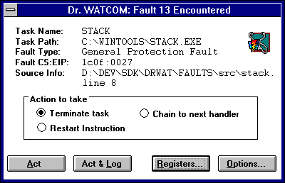
Figure 182. The exception dialog appears when a fatal error occurs in a program.
Instead of terminating the program, Dr. Watcom suspends it and leaves its state intact. Because the state
is undisturbed you can view the program's state information from the exception dialog, including memory and register values.
The exception dialog displays information about error and gives you several options. The information displayed
about the error includes:
- Task Name
- The name of the module in which the error occurred.
Task Path
- The full path of the file from which the offending module was loaded.
Fault Type
- The type of fault that occurred.
Fault CS:EIP
- The address of the instruction being executed when the fault occurred.
Source Info
- The source line on which the error occurred. This only appears if the program running contains debugging information.
There are four buttons on the exception dialog that you can use to proceed.
- Act
- When the act button is pressed, Dr. Watcom's action is determined by the option currently selected in the action to
take section of the dialog. The following describes the action taken for each option.
- Terminate Task
- When the Terminate Task radio button is selected choosing Act causes the faulting task to be terminated immediately.
Restart Instruction
- When the Restart Instruction radio button is selected choosing Act causes the faulting task to restart execution starting
with the instruction pointed to by its CS:EIP. This option is primarily used to restart a task after you have changed
its register values using the Task Status dialog.
Chain to Next Handler
- A handler is a piece of code, a program, or a routine that gets called when an exception occurs. The system can have
several exception handlers. When the Chain to Next Handler radio button is selected choosing Act passes the exception
on to the next handler in the sequence, or chain.
Act and Log
- Choosing the Act and Log button first creates a log file entry recording information about this fault then takes the same
action that would result from choosing the Act button.
Registers
- Select the Registers button to open the Task Status dialog. This dialog gives you additional information on the state
of the program when it crashed. From this window you can change the registers and flags, view segment mappings, and
do a stack trace. Refer to the section entitled Win16: Examining the Task Status
for further information.
Options
- Select the Options button to choose the information you want to write to the log file. This opens the Log File Options
dialog explained in the section entitled Win16: Customize the Log File.
Win16: Examining the Task Status
The Task Status dialog appears when you choose the Registers button on the exception dialog.
Figure 183. The Task Status dialog provides additional information on the program state
when the exception occurred.
This dialog displays information in four sections:
- Source Information
- Registers
- Flags
- Instructions Around Fault
The Source Information section indicates the source file where the error occurred and the line of that source file.
In order to get source information, your program must have debugging information. N/A appears in the Source Information
section if the program does not contain debugging information or the exception occurred on an assembly instruction that does
not correspond to a source file.
The Registers and Flags sections display information in the CPU at the time of the exception.
The Instructions Around Fault section displays the assembly instructions surrounding the instruction that was being
executed when the fault occurred. An asterisk marks the instruction to which the CS:EIP is currently pointing.
When the Show Symbols box is checked, Dr. Watcom tries to replace addresses in the assembly code with symbolic
names. Dr. Watcom can only replace addresses if the faulting module contained debugging information. If
this box is not checked, addresses are left as numeric values.
Win16: Dr. Watcom: Changing the Registers
In the Task Status dialog you can set up testing and debugging situations by changing the register and flag values.
To change a register value simply enter a new value in the edit field that contains the current register value. To
change the state of a flag register just check or uncheck the check box associated with that flag. A flag has a value
of 1 when its check box is checked.
The register and flag values will not take effect until you choose OK on the Task Status dialog.
Win16: Dr. Watcom: Applying Registers
Choosing Apply Registers updates the information in the Task Status dialog based on values of registers and flags to which
you have made changes.
Win16: Dr. Watcom: Segment Mapping
Choosing Segment Map from the Task Status dialog opens a Segment Map dialog box which indicates the selectors to which
your map segments were mapped. There is one entry for every segment in the program.

Figure 184. The Segment Map dialog lists the selectors to which the segments were mapped.
This dialog allows you to view the data contained in each of your program's segments. To view this memory, double
click on the desired segment. This opens a Memory Display window for the selected segment.

Figure 185. The Memory Display window displays the memory stored in the selected segment.
The Memory Display window displays all of the data stored in the selected segment. This information appears
in hexadecimal form. This allows you to see if the data in memory is what you believe it should be.
There are a number of functions you can perform in the Memory Display window. Following is a description of
these functions.
Dr. Watcom: Saving Window Information
The Save items in the File menu of the Memory Display window allow you to save the current window information to a text
file. Choosing Save from the File menu in the Memory Display window saves the data in the window into the current working
directory. A message box appears indicating the path to which Dr. Watcom saved the file.
Choosing Save As from the File menu allows you to specify the file to which you want to save the information currently
in the window. This opens a Save As dialog box where you select the desired file. Click on OK when completed.
A message box appears indicating the path to which Dr. Watcom saved the file.
Dr. Watcom: Changing the Display
There are five ways to display the information on the Memory Display window. You can display the information as:
- Bytes
- Words
- DWords
- 16 Bit Code
- 32 Bit Code
To change the form of the displayed data, select an item from the Display menu. When displaying data in bytes, the
data appears in the window as it physically appears in memory. When the data is displayed as words, the bytes in memory
are interpreted for you so that the values displayed are those that would be obtained by treating the memory as an array
of words. For example, if memory containing the values:
12 34 56 78 9A BC DE FF
was shown as words, the memory window would display:
3412 7856 BC9A FFDE
A similar interpretation is performed when the data is displayed as DWords. If the above memory was shown as
DWords, the memory window would display:
78563412 FFDEBC9A
This rearrangement of bytes does not affect the textual interpretation of the data shown on the right hand side of
the window.
Selecting 16 or 32 Bit Code from the Display menu presents the data in a disassembled form. Sometimes presenting
the data in disassembled form is not accurate. This is because when Dr. Watcom disassembles the data it begins
at the first byte of the memory block and disassembles it linearly. If a byte in this block, such as a padding byte,
throws off the sequence, the disassembly will be meaningless.
Dr. Watcom: Setting the Offset
On the Memory Display window you can set the offset. This means that you can reposition the data so that the specified
line appears at the top of the window. The offset you enter appears on the first line. It will not necessarily
be the first piece of information because rounding often occurs to avoid breaking a line.
- (1)
- Choose Set Offset from the menu bar on the Memory Display window.
This opens a Goto Offset dialog box.

Figure 186. In the Goto Offset dialog, enter the offset you want to appears at the top
of the Memory Display window.
(2)
- Enter the desired offset that you want to position at the top of the Memory Display window. You can enter the
offset in decimal or hexadecimal form. However, you must prefix hexadecimal values with 0x.
(3)
- Click on OK.
This closes the dialog and positions the data as requested.
Dr. Watcom: The Handle Information Dialog Box
A Handle Information dialog box attached to the Memory Display window provides the following information:
- Block Address
- Block Handle
- Block Size
- Lock Count
- Page Lock Count
Figure 187. The Handle Information dialog box displays information about the memory object
displayed in the Memory Display Window.
This box stays with the window when the Auto Position Info item under the File menu is checked. Deactivate this
function by selecting the item again from the File menu.
If the Handle Information dialog is not visible, reveal it by choosing Show Info from the File menu in the Memory
Display window. Close this dialog by double clicking on the system menu box in its upper left hand corner.
A program is made up of a series of functions. A function executes when it is called by the operating system or
another function. When completed it returns to the point in the code from which it was called.
Whenever a function is called, a stack frame is pushed onto the stack. When the function returns, the stack
frame is popped from the stack. The stack frame contains information about the point from which the function was called
and to which it will return. The collection of stack frames currently on the stack is called a call chain.
The stack trace function lets you walk the call chain. This allows you to determine where each function in the
call chain was called from and where it will return to. To perform a stack trace, click on the Stack Trace button in
the Task Status dialog to reveal the Stack Trace dialog.
Figure 188. The Stack Trace dialog allows you to walk the call chain.
When the Stack Trace dialog opens, it contains information from the stack frame for the function that was executing
at the time of the fault. The Instructions Around Fault section displays the assembly instructions around the call
to the faulting function. The instruction directly after the call to the faulting function is marked with an asterisk.
Other information includes the address of this instruction (CS:IP) and the base stack pointer (SS:BP) at the time of
the call. If the faulting module contained debugging information and the marked assembly instruction corresponds to
a source line, then source file information appears.
Selecting the Next button displays information from the next oldest stack frame. This is information about the
point from which the currently displayed function was called. If the currently displayed function was called by the
operating system, then the message "No more stack frames!" appears because there are no stack frames for calls
made from the operating system.
Selecting the Prev button displays information from the next most recent stack frame. This moves you in the
opposite direction along the call chain as pressing the Next button.
The Cancel button closes the window.
Win16: Resetting the Fault Handled Flag
The Reset Fault Handled Flag menu item is only accessible when an exception occurs from which Dr. Watcom is unable
to recover. When such an error occurs, Dr. Watcom cannot log exceptions or be terminated until you choose Reset
Fault Handled Flag from the File menu. This will not happen frequently.
Win16: Dr. Watcom: Working with Log Files
A log file is a text file created by Dr. Watcom. The log file consists of entries that describe the state
of the system at the time the entry was made. Dr. Watcom gives you the opportunity to create a log file entry
each time an exception occurs. Such entries include information about the state of the program that caused the exception,
as well as information about the state of the system. You can create a log file entry at any time using the Log Current
State menu item in the Log menu.
A log file is a permanent record of the state of the system and, possibly, your program. With a log file you
can make note of an error and return to it at a later time to examine and debug the problem.
Win16: Log the Current State
Choose Log Current State from the Log menu to write to the current log file. This tells Dr. Watcom to create
a log file entry with all of the log details except the Offending Task Information. The settings in the Log Options
dialog determine the information written to the log file.
The Log Current State item is also available on the system menu.
Win16: Erase the Log File
To erase the current log file, choose Erase Log File from the Log menu. This erases the log file specified in the
Log File Options dialog.
Choosing this item reveals a message box which asks you to verify that you want to erase the specified log file.
Select yes to erase the log file or No to cancel the request.
Win16: Customize the Log File
The Log Options item in the Log menu opens the Log Options dialog where you indicate to Dr. Watcom the information
you want to appear in log file entries. The Log Options item is also available from the system menu.
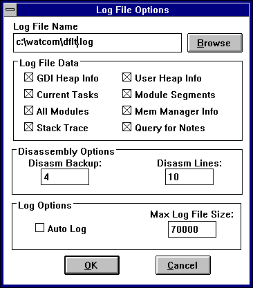
Figure 189. In the Log Options dialog, you customize the log file to which you write information.
The following sections describe the options that make up the Log Options dialog.
Win16: Dr. Watcom: Naming the Log File
In the Log File Name field you can specify the file to which Dr. Watcom writes the log file entries. The Browse
button to the right of this field opens the Pick Log Filename dialog. This dialog lets you browse your file structure
and select the path to which Dr. Watcom writes the log file entries.
Win16: Dr. Watcom: Specifying the Log File Data
In the Log File Data and Disassembly Options sections of the Log File Options dialog you select the information you want
to appear in the log file. The Log File Data section lists the various types of information that can be included in
a log file. If the check box for a piece of information is marked then that type of information will be written to
the log file. The options in this section are:
- Stack Trace
- When this option is selected stack trace information for the application that caused the exception is written when a log file
entry is made. This option only affects log entries made due to exceptions.
Current Tasks
- When this option is selected a list of all tasks currently running in the system, including information about each task is
included in each log entry.
All Modules
- When this option is selected a list of all modules currently loaded in the system, including information about each module
is included in each log entry.
GDI Heap Info
- When this option is selected summary information about the state of the GDI local heap is included in each log entry.
User Heap Info
- When this option is selected summary information about the state of the User local heap is included in each log entry.
Mem Manager Info
- When this option is selected summary information about the state of the virtual memory manager is included in each log entry.
Module Segments
- When this option is selected log file entries list the selectors for each module currently loaded in the system. The
All Modules option must also be selected to write this information.
Query for Notes
- When the Query for Notes option is selected Dr. Watcom displays an Annotate Log dialog whenever a log file entry is
made. This dialog lets you enter some explanatory text that will be included in the log file entry.

Figure 190. In the Annotate Log dialog box, enter text you want to include in the log file
entry.
Enter any text you want to include in the space provided. Press the OK button to include this text in the log
file. If you press the Cancel button Dr. Watcom continues to create the log file entry but does not include any
information from the dialog.
The values in the Disassembly Options box only affect log entries made due to exceptions. These values relate to
the disassembly section appearing in the log file. The value in the Disasm Backup field tells Dr. Watcom the
number of instructions before the fault you want written to the log file. The value in the Disasm Lines field tells
Dr. Watcom the total number instructions you want it to show in the log file. This value includes the instructions
displayed before the fault.
Win16: Dr. Watcom: Other Options
If the Auto Log option is selected, Dr. Watcom creates a log file when an exception occurs and then terminates the
application that caused the fault instead of revealing the exception dialog. The Auto Log option is useful when running
test streams.
The Max Log File Size field allows you to set the maximum size in bytes for a log file. When the log file exceeds
this size, Dr. Watcom prompts you with a message box when you start the application.

Figure 191. A message box prompts you to erase the log file when it becomes larger than
the maximum log file size specified on the Log File Options dialog.
This message box offers you the opportunity to delete your log file before it becomes uncontrollably large.
Choosing Task Control from the Task menu or the System menu opens the Task Control dialog. This dialog displays
a Task List which consists of all programs currently running under Windows. The Task Control dialog lets you terminate
and debug tasks.
The task list in the Task Control dialog is different from the system Task List which appears when you double click
on the wallpaper. The system Task List list displays only applications that currently have a window open on the desktop.
The task list in the Task Control dialog lists all tasks regardless of whether they have a window open.
Win16: Terminating a Task
The Kill Task button on the Task Control dialog terminates a task listed in the Task List. This function is extremely
powerful. It allows you to terminate programs immediately without giving them the opportunity to clean up by saving
data, unloading DLLs, and freeing allocated memory.
For this reason, you should exercise care when using this function. It is wise to only use the Kill Task function
for tasks that cannot be terminated in the usual way.
- To terminate a task:
-
(1)
- Choose Task Control from the Task menu.
This opens the Task Control dialog containing a list of all tasks currently running in the system.

Figure 192. In the Task Control dialog, you can terminate a task selected from the Task
List.
(2)
- Select the task you want to terminate by clicking on its entry in the task list.
(3)
- Select the Kill Task button.
This terminates the selected task, removing it from the task list. Dr. Watcom enters this event in the event
list.
Win16: Debugging a Task
Use the Debug Task button on the Task Control dialog to attach the debugger to the selected task from the Task List.
- To debug a task:
-
(1)
- Choose Task Control from the Task menu.
This opens the Task Control dialog containing a list of all tasks currently running in the system.
(2)
- Select the task you want to debug by clicking on its entry in the task list.
(3)
- Select the Debug Task button.
This opens the Debugger Options dialog box.
Figure 193. In the Debugger Option dialog, you enter the command line options to pass to
the debugger.
(4)
- Enter the command line options you want Dr. Watcom to pass to the debugger.
(5)
- Click on OK.
This starts the debugger.
Win32: Dr. Watcom for Win32
The 32-bit version of Dr. Watcom is a post-mortem debugger for Win32 applications. When an exception occurs
in a program, a post-mortem debugger allows you, after the fact, to examine the state of both the program and the system
in order to determine the cause of the exception. In addition to being a debugging tool, Dr. Watcom is a system
utility that enables you to examine and modify process information.
- Note:
- Use the 32-bit version of Dr. Watcom to monitor native (Win32) applications running under Windows 9x and NT based operating
systems. Use the 16-bit version of Dr. Watcom to monitor 16-bit Windows (Win16) applications.
Win32: Using Dr. Watcom
This section discusses the following topics:
- Starting Dr. Watcom
- Quitting Dr. Watcom
- The Dr. Watcom Menu Bar
Dr. Watcom is designed to be used effectively while minimized. You can access some of Dr. Watcom's main
functionality using the system menu while the application is minimized. This includes the Log Current State, Log Options,
and Process Control menu items.
Win32: Starting Dr. Watcom
To start Dr. Watcom double click on the Dr. Watcom icon. This opens the Dr. Watcom window.
- Note:
- You can run only one instance of Dr. Watcom at a time.
Win32: Quitting Dr. Watcom
To exit Dr. Watcom, choose Exit from the File menu of the Dr. Watcom window.
The Menu bar consists of the following four menus:
- File
- Save to a file and work with the event list a file
Log
- Work with the log file
Process
- Work with processes currently running under Windows
Help
- Access on-line help information
Win32: Using the Dr. Watcom Window
When you open Dr. Watcom, a window appears which contains the event list. The event list records events generated
by processes to which Dr. Watcom is attached. To record these events you must first attach Dr. Watcom to
the desired processes. To perform this function, refer to the section entitled Win32: Attaching Processes to Dr. Watcom.
Some examples of events are errors, the starting and ending of threads, and the loading and unloading of DLLs.
Figure 194. The Dr. Watcom window contains the event list where occurring events
are recorded.
The following sections describe functions that allow you to manipulate the event list:
- Saving the Event List
- Clearing the Event List
- Marking the Event List
- Setting the Fonts
The Save items in the File menu allow you to save the contents of the event list to a text file. Saving information
to a file enables you to print the output later or annotate the text file on-line.
Choose Save from the File menu to save the event list information into the current working directory. A message
box appears indicating the path to which Dr. Watcom saved the file.
Choose Save As from the File menu to specify the file to which you want to save the information currently in the window.
This opens a Save As dialog box where you select the desired file. Click on OK when completed. A message
box appears indicating the path to which Dr. Watcom saved the event list.
Win32: Dr. Watcom: Clearing the Event List
Choose Clear List from the File menu to delete all information from the event list.
Win32: Dr. Watcom: Marking the Event List
Use the Mark function to annotate the information in the event list by entering text into it.
- To mark the event list :
-
(1)
- Choose Mark from the File menu.
This opens the Set Mark dialog box.
Figure 195. With the Set Mark dialog, you can annotate the event list by entering text
and choosing a mark style.
(2)
- Type the desired text in the Enter Mark Text field.
The text you enter will appear at the end of the event list
(3)
- Select the desired Mark Style option.
These options determine how the entered text is formatted when it is added to the event list When the boxed option is
selected, the text is displayed bordered by asterisks. With this option the text is easier to find. When the
plain option is selected, the text is displayed as it is entered.
(4)
- Click on OK when completed.
The Set Mark dialog closes and the text in the dialog appears at the end of the event list.
Figure 196. Text you enter in the Set Mark dialog appears in the event list in the selected
style.
Win32: Dr. Watcom: Setting the Fonts
The Set Font item in the File menu allows you to set the font, style, and size for the text in the Dr. Watcom window.
Choosing this item opens the Font dialog box. Select the desired font details and click on OK to close the dialog
and apply the fonts.
Debugging Information Processors (DIP's) are Dynamic Link Libraries that Dr. Watcom loads to read debugging information.
Each DIP allows Dr. Watcom to read a different type of debugging information.
Choosing the Show DIP Status item from the File menu displays the Debugging Information Processor Status dialog.
Figure 197. The Debugging Information Processor Status dialog shows the DIP's Dr.
Watcom has loaded.
This dialog contains a list of all the DIP's that Dr. Watcom attempted to load at startup and the results of
those loads. If Dr. Watcom was unable to load a particular DIP then the dialog will show the reason for the failure.
Dr. Watcom can only read a given type of debugging information if it has successfully loaded the appropriate
DIP.
Win32: Dr. Watcom: Exception Handling
When a fatal error, or exception, occurs in a process to which Dr. Watcom is attached, Dr. Watcom intercepts
the exception. By intercepting the exception, Dr. Watcom halts the program's execution to prevent it from terminating.
When an exception occurs, a Dr. Watcom exception dialog box appears on the screen indicating that a fatal error
has occurred. This dialog displays information about the error and gives you several options.
Figure 198. The exception dialog appears when a fatal error occurs in a program.
The information displayed about the error includes:
- Process Name
- The name of the process in which the error occurred.
Process ID
- The unique identifier associated with the process.
Fault Type
- The type of fault that occurred.
Fault CS:EIP
- The address of the instruction being executed when the fault occurred.
Source Info
- The source line on which the error occurred. This only appears if the program running contains debugging information
and the exception occurred on an assembly instruction that corresponds to a source line.
There are four buttons on the exception dialog that you can use to proceed.
- Act
- When the Act button is pressed Dr. Watcom's action is determined by the option currently selected in the "action
to take" section of the dialog. The following describes the action taken for each option.
- Terminate Task
- When the Terminate Task radio button is selected choosing Act causes the faulting process to be terminated immediately.
Restart Instruction
- When the Restart Instruction radio button is selected choosing Act causes the faulting process to restart execution starting
with the instruction pointed to by its CS:EIP. This option is primarily used to restart a process after you have changed
its register values using the Process Status dialog.
Chain to Next Handler
- A handler is a piece of code, a program, or a routine that gets called when an exception occurs. A process can have
several exception handlers. When the Chain to Next Handler radio button is selected choosing Act tells the operating
system to continue searching for a handler to deal with this exception. If no handler is found for the exception then
Dr. Watcom will redisplay the exception dialog to give you a second chance to deal with the exception. During
this second chance notification the chain to next handler option is not available. This option is useful for testing
your own exception handling code.
Act and Log
- Choosing the Act and Log button first creates a log file entry recording information about this exception then takes the same
action that would result from choosing the Act button.
Registers
- Select the Registers button to open the Process Status dialog. This dialog gives you additional information on the state
of the process when the exception occurred. From this window you can change the registers and flags and view the process's
address space. Refer to the section entitled Win32: Examining the Process Status
for further information.
Options
- Select the Options button to choose the information you want to write to the log file. This opens the Log Options dialog
explained in the section entitled Win32: Customizing the Log File.
Win32: Using External Exception Handlers
You can use the Continue Exceptions item in the file menu to tell Dr. Watcom to only report on exceptions that are
not handled by another exception handler. When this item is checked Dr. Watcom only displays an exception dialog
if the system is unable to find a handler for an exception. This behavior is the same as when Continue Exceptions is
not checked and chain to next handler is selected on the exception dialog.
Win32: Examining the Process Status
The Process Status dialog appears when you choose the Registers button in the exception dialog.
This dialog displays information in four sections:
- Source Information
- Registers
- Flags
- Instructions Around Fault
The Source Information section indicates the source file where the error occurred and the line of that source file.
In order to get source information, your program must contain debugging information. N/A appears in the Source Information
section if the program does not contain debugging information or the exception occurred on an assembly instruction that does
not correspond to a source file.
The Registers and Flags sections display information in the CPU at the time of the exception.
The Instructions Around Fault section displays the assembly instructions surrounding the instruction that was being
executed when the fault occurred. An asterisk marks the instruction to which the CS:EIP is currently pointing.
When the Show Symbols box is checked, Dr. Watcom tries to replace addresses in the assembly code with symbolic
names. Dr. Watcom can only replace addresses if the faulting module contained debugging information. If
this box is not checked, addresses appear as numeric values.
Win32: Dr. Watcom: Changing the Registers
In the Process Status dialog you can set up testing and debugging situations by changing the values of the registers and
flags. To change a register value simply enter a new value in the edit field that contains the current register value.
To change the state of a flag register just check or uncheck the check box associated with that flag. A flag
has a value of 1 when its check box is checked.
The register and flag values will not take effect until you choose OK on the Process Status dialog.
Win32: Dr. Watcom: Applying Registers
Selecting the Apply Registers button on the Process Status dialog after making changes to the registers and flags updates
the displayed information based on your changes.
Win32: Dr. Watcom: Viewing Memory
Selecting the View Memory button in the Process Status dialog opens a Memory Walk window which allows you to view the
address space of the process that caused the exception.
The information in this window appears under the following headings:
- Base
- This is the address where this memory object begins.
AllocBase
- The is the address where the allocation object begins. This tells you which allocation object a memory object belongs
to.
Size
- This is the size of the memory object.
Prot
- Codes indicating what you can do with the memory. The codes are:
- RO-Read Only
- NA-Not applicable
- ExRO-Executable and Read Only
- RW-Read, Write
- WC-Write, Copy
- Ex-Executable
- ExRW-Executable, Read, Write
- ExWC-Executable, Write, Copy
State
- The state of the memory. Values are:
- Free-range of addresses not being used
- Committed-range of addresses refers to memory that exists
- Reserved-this range of addresses has been set aside for future use but no memory exists for the addresses
Object
- Information indicating what the memory is being used for. This field is only completed if Dr. Watcom can provide
useful information.
Image
- The name of the module that owns the memory object. This field is only completed if Dr. Watcom can provide useful
information.
From this window you can select a memory object and view its contents. To view this information, double click on
the desired object. This opens a Memory Range window for the selected object. This window displays all of the
data stored in the selected object. The data appears in hexadecimal form. This window allows you to see if the
data in memory is what you believe it should be.
- Note:
- You can only view memory for an object whose state is Committed since there is no memory associated with other objects.
There are a number of functions you can perform in the Memory Range window. Following is a description of these
functions.
Dr. Watcom: Saving Window Information
The Save items in the File menu on the Memory Range window allows you to save the currently displayed information to a
text file. Choosing Save from the File menu on the Memory Range window saves the data in the window into the current
working directory. A message box appears indicating the path to which Dr. Watcom saved the file.
Choosing Save As from the File menu allows you to specify the file to which you want to save the data currently in
the window. This opens a Save As dialog box where you select the desired file. Click on OK when completed.
A message box appears indicating the path to which Dr. Watcom saved the file.
Dr. Watcom: Changing the Display
There are three ways to display the information in the Memory Range window. You can display the information as:
To change the form of the displayed data, select an item from the Display menu. When displaying data in bytes, the
data appears in the window as it physically appears in memory. When the data is displayed as words, the bytes in memory
are interpreted for you so that the values displayed are those that would be obtained by treating the memory as an array
of words. For example, if memory containing the values:
12 34 56 78 9A BC DE FF
was shown as words, the memory window would display:
3412 7856 BC9A FFDE
A similar interpretation is performed when the data is displayed as DWords. If the above memory was shown as
DWords, the memory window would display:
78563412 FFDEBC9A
This rearrangement of bytes does not affect the textual interpretation of the data shown on the right hand side of
the window.
Dr. Watcom: Setting the Offset
In the Memory Range window you can set the offset. This means that you can reposition the data so that specific
information appears at the top of the window. The offset you enter appears on the first line. It will not necessarily
be the first piece of information because rounding often occurs to avoid breaking a line.
- (1)
- Choose Set Offset from the menu bar on the Memory Display window.
This opens a Goto Offset dialog box.
(2)
- Enter the desired offset that you want to position at the top of the Memory Range window. You can enter the
offset in decimal or hexadecimal form. However, you must prefix hexadecimal values with 0x.
(3)
- Click on OK. This closes the dialog and positions the data as requested.
Figure 199. In the Goto Offset dialog, enter the offset you want to appear at the top of
the Memory Display window.
Win32: Dr. Watcom: Working with Log Files
A log file is a text file created by Dr. Watcom. The log file consists of entries that describe the state
of the system at the time the entry was made. Dr. Watcom gives you the opportunity to create a log file entry
each time an exception occurs. Such entries include information about the state of the program that caused the exception,
as well as information about the state of the system. You can create a log file entry at any time using the Log Current
State menu item. Log entries made in this way only contain information about the state of the system.
A log file is a permanent record of the state of the system and, possibly, your program. With a log file you
can make note of an error and return to it at a later time to examine and debug it.
Win32: Creating A Log File Entry
You can create a log file entry at any time by selecting Log Current state from the Log menu or the system menu.
You can also create a log file entry when an exception occurs by choosing the Act and Log button on the Exception dialog.
When a log entry is created the following dialogs may be displayed:
Win32: Using the Annotate Log Dialog
When the Query for notes option in the Log Options dialog is selected, an Annotate Log dialog box appears whenever a log
entry is created.
In the space provided, enter any explanatory text that you want to include in the log file. Press OK when completed.
This information appears under the heading "User Notes" at the beginning of the log file.
Win32: Using the Memory Dump Dialog
When the Memory Dump option in the Log Options dialog is selected, Dr. Watcom displays the Log Memory Dump dialog
whenever a log entry is created because of an exception. This dialog displays a list of all committed pages of memory
owned by the process that caused the exception.
This dialog allows you to select the memory objects you want to include in the log file entry. The data contained
in any memory object highlighted in the list box will be written to the log file. Clicking on an object in the list
box toggles it between selected and unselected.
The following buttons are available on the dialog:
- Select All
- Selects all memory for dumping to the log file
Clear All
- De-selects all memory currently selected in the dialog
Cancel
- Closes the dialog and continues writing to the log file but does not include information on any of the memory objects in the
dialog
OK
- Closes the dialog and writes selected objects to the log file
Win32: Viewing the Current Log File
Choosing View Log from the Log menu invokes an editor which allows you to view the current log file. You can select
this editor in the Log Viewer section of the Log Options dialog.
Win32: Erasing the Log File
To erase the current log file, choose Erase Log File from the Log menu. This erases the log file specified in the
Log Options dialog.
Choosing this item reveals a message box which asks you to verify that you want to erase the specified log file.
Select Yes to erase the log file or No to cancel the request.
Win32: Customizing the Log File
The Log Options item in the Log menu opens the Log Options dialog where you indicate to Dr. Watcom the information
you want to appear in log file entries. The Log Options item also appears in the system menu.
Figure 200. In the Log Options dialog, you customize the log file to which you write information.
The following sections describe the options that make up the Log Options dialog.
Win32: Dr. Watcom: Naming the Log File
In the Log File field, you specify the file to which Dr. Watcom writes the log file entries. The Browse button
to the right of this field opens the Pick log file name dialog. This dialog lets you browse your file structure and
select the path to which Dr. Watcom writes the log file entries.
Win32: Dr. Watcom: Choosing the Log Viewer
In the Log Viewer field, you specify the editor you want to invoke when you select View Log from the Log menu. The
Browse button to the right of this field opens the Pick log viewer dialog. This dialog lets you browse your file structure
and select the desired editor.
When View Log is selected from the Log menu, this editor will be invoked with the name of the log file passed as a
command line parameter.
Win32: Dr. Watcom: Specifying the Log File Data
In the Log File Data and Disassembly Options sections of the Log Options dialog, you select the information you want to
appear in the log file. The Log File Data section lists the various types of information that can be included in a
log file. If the check box for a piece of information is marked then that type of information will be written to the
log file. The options in this section are:
- Memory Dump
- When this box is checked, a Memory Dump dialog is displayed whenever a log file entry is made. This dialog allows you
to select the regions of memory you want to dump into the log file and is discussed in the section entitled Win32: Creating A Log File Entry.
This option only affects log file entries created because of an exception.
Query for notes
- When this box is checked, an Annotate Log dialog is displayed whenever a log file entry is made. This dialog lets you
enter text to be included in the log file entry. The Annotate Log dialog is discussed in the section entitled Win32: Creating A Log File Entry.
Loaded modules
- When this box is checked, each log file entry includes a list of all modules loaded for each process running in the system.
Current Processes
- When this box is checked, each log file entry includes a list of all processes currently running in the system, including
information about each process.
Mem Manager Info
- When this box is checked, log file entries will include summary information on the memory usage of the process that caused
the exception. This option affects only log file entries created because of an exception.
The fields in the Disassembly Options section relate to the disassembly section appearing in the log file. These
fields affect only log file entries made because of exceptions.
- The value in the Disasm Backup field tells Dr. Watcom the number of instructions before the fault you want written
to the log file.
- The value in the Disasm Lines field tells Dr. Watcom the total number of instructions you want it to show in the
log file. This value includes the instructions displayed before the fault.
Win32: Dr. Watcom: Other Options
When the Auto Log option is selected, Dr. Watcom creates a log file when an exception occurs and then terminates
the application instead of revealing the exception dialog.
The Max Log File Size option allows you to set the maximum size in bytes for a log file. When the log file exceeds
this size, Dr. Watcom prompts you with a message box when you start the application.
Figure 201. A message box prompts you to erase the log file when it becomes larger than
the maximum log file size specified on the Log File Options dialog.
This message box offers you the opportunity to delete your log file before it becomes uncontrollably large.
Win32: Attaching Processes to Dr. Watcom
Attaching processes to Dr. Watcom enables it to monitor events that occur within the processes. When processes
are attached, Dr. Watcom reports on events that occur within your process, such as DLL loads, thread creations, and
thread terminations. Attaching also allows Dr. Watcom to detect exceptions in your process.
There are four ways to attach processes to Dr. Watcom:
- Command line
- Add New process menu item
- Auto Add Process feature
- Process Control dialog
Dr. Watcom cannot detach from processes to which it is attached. The attachment exists until the process terminates.
If you try to close Dr. Watcom while it is attached to processes, a warning box appears listing the processes
to which Dr. Watcom is still attached.
Select Yes or No to continue.
Win32: Command Line
You can run a program and attach Dr. Watcom to it at start-up by passing the path of the executable to Dr.
Watcom as a command line parameter. For example, to run the program foo.exe and attach Dr. Watcom to
it, type:
drwatcom foo.exe
If you often want to run a certain program with Dr. Watcom attached to it then you can create a Program Manager
icon that runs Dr. Watcom with the name of the program as a command line parameter.
Double clicking on the icon when Dr. Watcom is not running causes Dr. Watcom to start-up. Dr.
Watcom then starts the specified process and attaches to it immediately.
Double clicking on the icon when there is already an instance of Dr. Watcom running causes the existing instance
of Dr. Watcom to run the specified process and attach to it. The second Dr. Watcom terminates immediately
so that only one instance of Dr. Watcom is left running.
Win32: Add New Process
The Add New Process item in the Process menu is another way to start a new process and attach to it immediately.
- To start a new process using this item:
-
(1)
- Choose Add New Process from the Process menu.
This opens the Load Process dialog where you browse the file structure.
(2)
- Select the program you want to start with Dr. Watcom attached.
(3)
- Click on OK.
This runs the selected program and attaches to it immediately.
Win32: Auto Add Processes
Checking the Auto Add Process item in the Process menu tells Dr. Watcom to attach to all new processes that start
in the system. When you activate this feature, Dr. Watcom checks the system every few seconds for new processes.
When it finds them, it attaches to them. Dr. Watcom will not automatically attach to processes that began
before the Auto Add Process item was checked.
The disadvantage of this feature is that in the few seconds between Dr. Watcom's process checks, your process
can start-up, run, and possibly cause an exception. When this occurs, a system dialog box appears reporting the error.
Selecting OK on this dialog immediately may not allow Dr. Watcom sufficient time to attach to the faulting process.
Wait for a few seconds and select the OK button on this dialog. The dialog closes and Dr. Watcom attaches
to the faulting process. The Dr. Watcom exception dialog then appears and you can proceed as usual.
- Note:
- Occasionally, when this feature is active a message box may appear saying, "An unexpected failure occurred while processing
a DebugActiveProcess API request. You may choose OK to terminate the process or Cancel to ignore the error".
This message results from a known limitation in Win32. If it appears simply choose Cancel.
Win32: Process Control
Using the Add Process button on the Process Control dialog, you can attach Dr. Watcom to any process that is currently
running in the system.
- To do this follow these instructions:
-
(1)
- Choose Process Control from the Process menu or the system menu.
This opens the Process Control dialog which lists all processes currently running under Windows.
(2)
- Click on the process to which you want Dr. Watcom to attach. You can only select one process at a time.
(3)
- Select the Add Process button.
This attaches Dr. Watcom to the selected process. An asterisk appears to the left of this process indicating
that Dr. Watcom is currently attached to it.
Selecting Process Control from the process menu or the system menu opens the Process Control dialog. This dialog
lists all processes currently running under Windows. Any process to which Dr. Watcom is attached is marked with
an asterisk. When you select a process by clicking on it, the Selected Process section of the dialog displays its Process
ID, Name, and Priority.
The Refresh button on this dialog updates the displayed process information.
From this dialog you can perform several functions. This section describes each function.
- Important:
- The Process Control functions are extremely powerful and give you the ability to perform functions that can make the operating
system unstable. Because of this, it is wise to save information before you attempt to use the Process Control functions.
Win32: Setting the Process Priority
Each process in the system has an assigned priority class. This priority class establishes the schedule for running
processes. The Set Priority button on the process Control dialog allows you to assign a priority to the selected process.
- To set a process's priority:
-
(1)
- Select the process from the Process List to which you want to assign a priority.
(2)
- Select the Set Priority button.
This opens the Set Process Priority dialog which displays the priority classes: idle, normal, high, and real time.
(3)
- Select the desired priority for the selected process.
(4)
- Click on OK to assign the priority and close the Set Process Priority dialog.
Win32: Terminating a Process
The Kill Process button on the Process Control dialog terminates a process selected from the Process List in the Process
Control dialog.
- To terminate a process:
-
(1)
- Choose Process Control from the Process menu.
This opens the Process Control dialog containing a list of all processes currently running in the system.
(2)
- Click once on the process you want to terminate to select it.
(3)
- Select the Kill Process button.
This terminates the selected process. The process's entry in the list may not be removed until you select the Refresh
button.
Win32: Viewing the Threads for a Process
A process is made up of one or more threads. The View Threads button in the Process Control dialog opens a Thread
Control dialog that lets you view and manipulate the threads for the selected process. With this dialog, you can terminate,
suspend, and resume threads.
- To view the threads for a process:
-
(1)
- Select the process from the Process List whose threads you want to view.
(2)
- Select the View Threads button from the Process Control dialog.
This opens the Thread Control dialog which displays the threads that make up the selected process.
Selecting a thread from the Threads list displays information for that thread in the Selected Thread section of the dialog.
This information is:
- tid (Thread Id)
- A unique identifier assigned by the operating system to each thread in the system.
State
- Indicates the current state of the thread. This tells you if the thread is currently ready for execution or if it is
waiting for some event.
Priority
- The thread's current priority class
Use the Refresh button to update the information displayed in the Thread Control dialog.
Win32: Terminating a Thread
Use the Kill Thread button to terminate a thread.
To terminate a thread, select the desired thread from the Threads list and select the Kill Thread button.
Win32: Suspending a Thread
Each thread has a suspend count. A thread can only be scheduled for execution when its suspend count is zero.
To increment a thread's suspend count, select the thread on the list in the Thread Control dialog and press the Suspend button.
Win32: Resuming a Thread
Each thread has a suspend count. A thread can only be scheduled for execution when its suspend count is zero.
To decrement a thread's suspend count, select the thread on the list in the Thread Control dialog and press the Resume button.
Win32: Viewing the Memory for a Process
Selecting the View Memory button on the Process Control dialog opens a Memory Walk window for the currently selected process.
For information on this window, see the section entitled Win32: Dr. Watcom: Viewing Memory.
Win32: Summarizing Process Memory Usage
Selecting the Memory Info button on the Process Control dialog opens a Memory Information dialog box. This dialog
provides a breakdown of the memory usage for the process selected from the Process List.
To view this memory information, select the desired process from the Process List and select the Memory Info button.
The Memory Information dialog displays information in the following sections:
- Mapped and Committed memory
- Reserved Memory
- Memory Usage by Module (Address Space)
The Mapped and Committed section displays the amount of committed memory the application is using broken down by its protection.
The Reserved section displays the amount a memory reserved but not yet committed. This information is broken
down by its protection.
In the Address Space section of this dialog, you can view the memory usage of each module that the selected process
currently has loaded. The combo box in this section lists all modules the process has loaded. Selecting a module
from the combo box displays a summary of its memory usage. Selecting the All Images item in the combo box displays
the total memory usage by all loaded modules listed in the combo box.
Use the Refresh button to update the information displayed in the Memory Information dialog box.